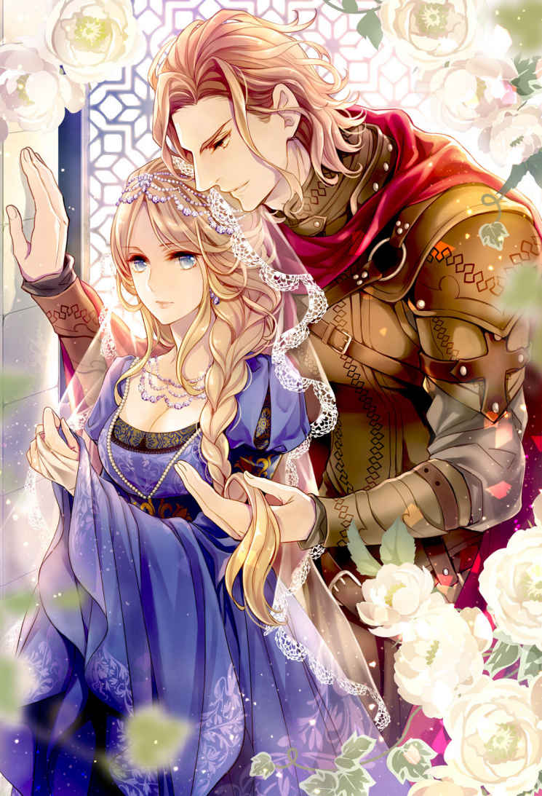
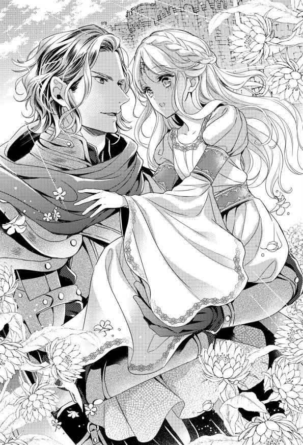
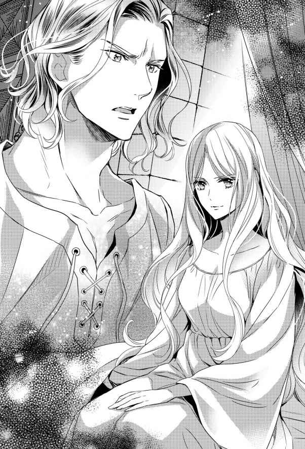
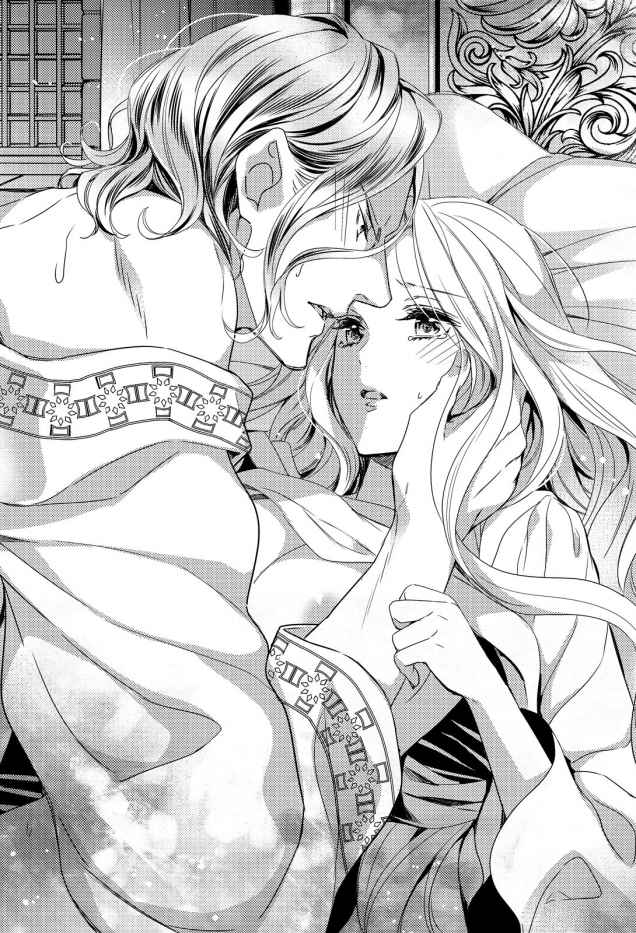
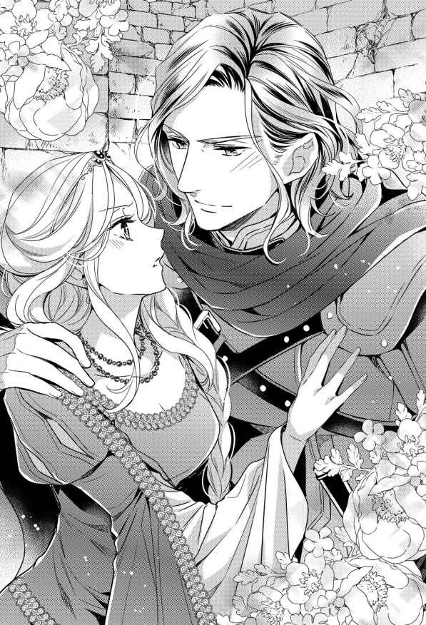

| 【全1-6セット】王妃のプライド【イラスト付】 (ロイヤルキス文庫) | |
| 市尾彩佳 | |
| 株式会社ジュリアンパブリッシング (2019) | |

この作品はフィクションです。
実際の人物・団体・事件などに一切関係ありません。
１、プロローグ
アシュケルド城、離れの館の一室、石壁に美しいタペストリーがかけられたその部屋で、アシュケルド王妃ティルダは一言も口を利かずに食事を口に運んでいた。
鼻が高く怜悧な印象を与える横顔は、正面から見ると十八歳らしい幼さの残る顔立ちになる。肌は雪のように白く、女性らしい柔らかな曲線を描く顔の輪郭。化粧をしているわけではないのに唇は紅く色付いていて、長くてたっぷりとしたまつげが陰影を落として、アイスブルーの目を強調している。亜麻色の細い眉。眉と同色の艶やかな髪を、一本の三つ編みにして左肩から垂らしていた。
頭上に輝くのは、青の宝石がはめ込まれた銀のサークレット。母の形見で、母国ローモンドから持ってきたものだ。
身に着けているのは、アシュケルド女性のチュニックワンピースではなく、ローモンドの貴婦人がよく着用する、絹でできた女性用ブリオー。袖は椅子に座ると床につくくらいに長く垂れ、身頃は背中で紐綴じすることで、豊かな胸を持つティルダの身体にぴったりと沿っている。腰のところまで引き絞られたブリオーは、その下に細かい襞 ができ、床に引き摺るほど長いスカートに優美なドレープを生み出した。
ティルダの所作も優美だ。十二の年までローモンド王女として作法を叩き込まれてきた。
硬いパンをちぎって質素なスープに落とし込み、野菜や肉の欠片と共にスプーンですくう姿でさえ、まるで贅沢な食事に口をつけるかのように上品だ。
白いリンネルのテーブルクロスがかけられた縦長の食卓には、その他にも、肉や魚を焼いたり蒸したりしたものや、新鮮な野菜や果物、卵やはちみつをたっぷり使った焼き菓子など、贅沢な料理が所狭しと並んでいる。が、ティルダは硬いパンと質素なスープ、それに湯冷ましで薄めた果実酒しか口にしようとしない。
斜向かいに座る夫、アシュケルド王カーライルは、贅沢な料理のほうに手をつけながら、頑ななティルダの態度に困った笑みを浮かべた。
緩やかに波打つダークブロンドの髪。切れ長の目にヘーゼルの瞳。通った鼻は高く、髭は生やしていないが野性味のある精悍な顔立ちをしている。アシュケルドの民の中でも大柄なほうで、小柄なティルダは彼の胸辺りまでしか身長がなく、肩幅は倍近く違う。六年の歳月を経て二十九歳となったカーライルは、以前にも増して男らしい。
腿の中ほどまである長袖チュニックに生成りのブレーを履き、ブレーの裾の上に革のゲートルを巻いて革靴に留めている。チュニックの腰には革のベルトの他に剣帯もつけているが、剣は今、空いている椅子に立てかけてあって、その椅子には喉元に留め金のある膝丈のマントが掛けられている。
アシュケルドでは騎士の装いであるそれらを王であるカーライルも身に着けているのは、彼が今なお戦場で戦う戦士だから。
アシュケルドは、六年ほど前にローモンドから独立したばかりの新しい国だ。
独立の際に結ばれた同盟には、「同盟国に有事ありしとき、救援の要請あれば兵を出し加勢すべし」という条項がある。それを理由に、ローモンドは安易に加勢を求め、カーライルはそのたびに兵を率いてローモンドに赴いた。
その他にも、カーライルは何かと口実を作っては城を空けた。この六年間、城にいた時間より、外に出ていた時間のほうがずっと長い。
なのにこのひと月、カーライルは一歩も城の外に出ず、時間のある限りティルダと共に過ごそうとする。
カーライルは飽きもせず、ここ一カ月近く毎日毎食繰り返している言葉を口にした。
「他の料理も食べてみないか？ 美味いぞ」
言うだけでなく、取り皿によそって差し出してくるものを、ティルダは眉をひそめて一瞥 した。
「......要りません」
言わなければ、今手にしているパンやスープを取り上げてまで食べさせようとする。
それがわかっているから仕方なく口を開けば、何が嬉しいのか、カーライルは相好を崩した。
「そなたが粗食を重んじることはここ一カ月でよく理解したが、たまには滋養のあるものを食べないと良い子を産めないぞ」
冗談めかして言うカーライルを、ティルダは怒りを込めて睨みつけた。
「わたくしには関係ありません」
結婚してから六年間、カーライルに蔑 ろにされて味わった屈辱と苦難。今更優しくされたからといって、忘れることなどできない。
数多の苦難を乗り越えられてきたのは、一つの矜持を支えにしてきたからだった。
ティルダは、十二の歳にアシュケルドへ嫁いできた。にもかかわらず、結婚式の翌日から六年もの歳月、夫と一度も顔を合わせたことがなかった。
夫は結婚式を終えると、すぐに妻の存在を忘れて愛人を自分の寝室に引き入れた。妻に一言もなく城を空け、帰ったら帰ったで妻に会いにこようともしない。
王たる夫に顧みられないティルダに、与えられた離れの館以外に居場所はなかった。『ローモンドのお姫さん』と揶揄 され虐げられたティルダに、王妃としての立場などあるはずもない。
王族の誇りを教えられて育ったティルダは、泣き寝入りを選ぶなど矜持が許さなかった。幼いながらも策を講じた。その策を実行するにあたって、ティルダは己の矜持を守るため、一つの誓いを立てた。
夫たる王に、決して身体を許さぬと。
その誓いが守られなければ、ティルダの立場は地に落ちてしまう。カーライルがこれまでのティルダへの仕打ちを悔い、心を入れ替えてもそれは同じだ。
今頃になって、王に王妃らしい扱いをされたって遅い。
ティルダは自らの矜持のため、その誓いを絶対に破れないのだ。
六年の歳月の間に変わったのは、カーライルだけではない。むしろ、ティルダのほうが大きな変化を遂げていた。十二歳の稚 い少女は十八歳の大人になり、固いつぼみが膨らみ大輪の花を咲かせるように、見目麗しい女性に成長した。
一カ月前、六年ぶりに再会したカーライルは、欲望にぎらついた目で舐め回すようにティルダを見た。そんなカーライルに自尊心を慰められるのと同時に、大の大人が好い様 だとほくそ笑んだ。どんなに謝罪されようが機嫌を取られようが、決して許さない。指をくわえて見ているがいい、と。
ここ一カ月、ティルダは夫を拒絶し続けてきた。
妻とはいえ、王が小娘にここまで虚仮 にされたら腹の一つも立てそうなものだ。なのにカーライルはティルダの拒絶を許し、相変わらず強固な壁を崩そうとしない彼女を面白がっているようにさえ見える。
この一件に関してはティルダのほうが優位に立っているはずなのに、拒絶されても平然とした様子で食事を続けるカーライルを見ていると、落ち着かない気分にさせられる。
無視するのも耐え難くなり、ティルダは断固とした口調でカーライルに告げた。
「どれほど機嫌を取られようと、わたくしは貴方と褥を共にするつもりはありません」
すると、カーライルは残念そうに言った。
「どうあっても俺を許す気はないか」
「もちろんです」
ティルダはきっぱりと言い返した。どんなに謝罪されようとも、カーライルの逆鱗に触れたとしても、ティルダは己の意思を曲げるつもりはないのだから。
決意を込めて睨みつけると、カーライルは俯き溜息をついた。
「ならば仕方ない」
これを聞いて、カーライルは諦めたのだとティルダは思った。知らず詰めていた息を吐く。そろそろ懐柔策を捨て強攻策に出るのではないかと警戒し通しだったので、思っていた以上に神経をすり減らしていたらしい。
これで、カーライルはまたティルダに見向きもしなくなるだろう。それでいい。もはや和解という選択肢がないのだから、互いに今まで通り暮らせば良い。
だが、ティルダは読み違えた。
カーライルは顔を上げながら、不敵な笑みを浮かべる。そしてヘーゼルの瞳を挑戦的に煌 めかせ、こう宣言した。
「王妃よ、よく聞け──我々の婚姻は両国の同盟の証。我らが真の夫婦にあらざる今、同盟は締結されたとは言えない」
２、十二歳の花嫁
アシュケルド王国は、六年前にローモンドから独立したばかりの新しい国だ。
古くは、盆地の平野部に居住していた一部族に過ぎなかったところ、次第に勢力を伸ばして周辺の九部族を従え盆地と周辺の山々を支配した。
だが、それから程なくして、南方で勢力を拡大していた大国ローモンドに攻め込まれる。当時圧倒的な力を誇っていたローモンドには太刀打ちできず、アシュケルドと九の部族は、アシュケルドという一豪族としてローモンドに下 った。
その後、長い年月が過ぎ、大国の名に胡座 をかいていたローモンドは、次第に衰退してゆく。侵略をやめた軍は、時代が下るにつれて弱体化し、搾取されるばかりの支配に耐えかねた豪族たちは、独立を求めて次々蜂起する。反乱が起こるたびに鎮圧のための兵を駆り出されていたアシュケルドも、ついに反旗を翻した。それが、カーライルの祖父の代のことである。
戦いは二十年以上の長きにわたって続いた。その間に大勢の犠牲が出た。カーライルの父と祖父もそのうちの一人だった。
戦死した父の跡を継いでアシュケルドの長となったカーライルは、長の死によって動揺する兵をまとめ上げ、戦略を用いてローモンド軍を次々撃破した。そのせいで大きく戦力を減らしたローモンドは、アシュケルドのみならず、反乱を起こした他の豪族たちの独立も認めた。
独立の際には、各国とローモンドの間で同盟が結ばれた。
同盟が結ばれた直後、十二歳だったローモンド王女ティルダは、その同盟の証として、アシュケルド王国の若き王、カーライルの元に嫁ぐことになった。
＊ ＊ ＊
十二歳になったこの年、ティルダは初めて異国の地を訪れた。ただ訪れたわけではない。これからこの国 で暮らすことになる。
ティルダの心は不安でいっぱいだった。
ローモンドがアシュケルドの独立を認めてからひと月足らず。その直前まで行われた戦いの記憶は、未だ鮮明にアシュケルドの民の記憶に残っているはずだ。近親者を戦いで亡くし、ローモンドを恨んでいる者もいるだろう。その恨みは、十中八九ローモンドの王女であるティルダに向く。同盟の証として嫁いできたティルダに危害を加える者はさすがにいないだろうけれど、憎しみを向けられることは覚悟しなくてはならない。
そういった意味では敵国に嫁ぐようなものなのだが、ティルダには頼りにできる者が誰一人いなかった。
母は数カ月前に亡くなった。婚姻の話を聞かされたのと同時に、それまで仕えてくれていた者たちからも引き離された。父ローモンド王が選んだ侍女たちに始終監視されながら、ティルダは馬車に押し込められ、追い出されるように母国を出た。
国境のある緩やかな峠を越えると、開けた盆地が見えてくる。その盆地と、周囲を取り囲む山々が、アシュケルドの領土だ。
開けているといっても、盆地の底は起伏に富んでいる。それをいくつも乗り越えて、盆地のやや中央にある堅牢な城に辿り着いた。
小高い場所にあるその城は、入り口が狭くてローモンド製の馬車は通ることができなかった。仕方なく門の外で馬車を降りると、老齢の男性に出迎えられた。
黄色味がかった白髪、面長の顔には深い皺が刻まれた、少し腰の曲がった男性は、ティルダに礼儀正しく挨拶した。
「城代のホプキンと申します。カーライル様はあいにく城を空けておりまして、私がティルダ様のお世話を仰せつかっております。なんなりとお申しつけください」
小さなティルダに配慮するように、城代は何度も振り返りつつゆっくりと歩いた。
跳ね橋を渡り、石造りの城壁にぽっかりと空いた城門をくぐる。城壁の中には、これまた石造りの建物がそびえ立っていた。
「これがアシュケルド城本館になります」
簡単に説明しながら、城代はその建物に入っていく。
入ってすぐ、三方に通路が分かれた。正面の広めの通路と、左右の細い通路とに。城代は左手の細い通路へと入っていく。その通路は天井も低く、昼間だというのに暗くて不気味だ。身がすくむような怖さを覚えるが、これからは慣れていくしかないのだろう。そう思いながら突き当たりの角を右に曲がると、少し先に光が見える。十歩ほども進めば、狭い通路を抜けた。
そこは、石の柱で天井を支える回廊になっていた。廊下に四角く囲まれた場所は畑になっていて、様々な野菜が植えられている。
今まで住んでいたローモンドの離宮では見られなかった光景に気を取られていると、城代に「こちらです」と声をかけられた。
振り返ったティルダは、目を瞬かせた。
廊下を挟んだ中庭の反対側には、野の花の寄せ植えと思われる花畑があったからだ。広さは寝台一つ分といったところだろうか。種類も花の高低もばらばらで、言ってはなんだが、計算されて整えられた、母国の広い花壇と比べてみすぼらしい。
何故このようなものがあるのか。ティルダは幼い顔に困惑を浮かべ立ち止まる。
花畑を見つめるティルダに気付いて、城代は振り返った。
「この花壇は、カーライル様の指示で急遽 作られたものです。ローモンド人は広大な庭に花や木を植えて散歩をしながら花を愛でるそうですが、アシュケルドにはそのような風習はないもので。少しであっても身近に花を愛でられる場所があれば、母国を遠く離れたティルダ様も心慰められるのではないかという、カーライル様のご配慮です」
それを聞いて、ティルダはみすぼらしいなどと思った自分を恥じた。この花畑は、アシュケルド王の歓迎の印なのだ。ティルダを元敵国の王女ではなく、同盟国の王女として扱ってくれるようだ。そのことが嬉しくて胸が詰まる。
「カーライル王に使いを出すことがあれば、わたくしからの伝言もお願いしたいです。お会いしたときに改めてお礼申し上げますが、『お心遣いに大変感謝しております』と」
城代は目を細めて微笑んだ。
「ティルダ様が無事到着なさったことをお報せしようと思っておりますので、その際にティルダ様のご伝言も届けるようにいたしましょう。──花壇は後からでもご覧いただけます。長旅でお疲れでしょうから、先にお部屋へご案内いたします」
城代に先を促され、ティルダはもう少し見ていたい気持ちを抑えて、後に続いた。
離れの館は、どこかローモンドを思い起こさせた。本館と同じ石造りだが、窓が大きい。中に入ってみると、間取りは広く、天井も高かった。
「ご結婚までの六日間は、こちらの館でお過ごしいただくよう、カーライル様から申しつけられております。この館は、五代前の当主が建てたものです。大事な客人をもてなすために、ローモンドの建築様式を真似たものです」
道理で目に馴染むわけだ。館の中を案内されながら、ティルダは幾分気が楽になる。これから六日間は、本館の不気味さに怯えて過ごさなくていいというわけだ。
ティルダが強張っていた表情を和らげたのに気付いてか、城代は朗らかに言った。
「ローモンドと全く同じというわけにはいかないでしょうが、快適にお過ごしいただけるよう、城の者一同お世話させていただきます。今日はゆっくりお休みいただき、明日にでも城内を案内いたしましょう」
翌日、ティルダは侍女を一人連れて、城代に城を案内してもらった。
アシュケルド城は要塞で、敵が攻めてきたときには近隣に住む民もこの城に立て籠もって戦うのだそうだ。畑は万一籠城することになったときのために常に何かを植えていて、平時は城で出される食事に使われるだけでなく、十日に一度開かれる市場でも売られているという。畑の他に鶏や牛などの家畜も育てていて、それらの場所を最初に見せてもらい、それから本館の中に入った。
どこもかしこも石でできていて、窓が小さいために薄暗い。大広間は天井が高く、詰めれば数百人が入れそうなくらいに広いが、通路はやはり狭くて圧迫感を感じる。階段は狭いうえに急で、一階の案内が終わって二階に上がる際、ティルダは怖々と上った。
二階には集会室と、客室がいくつか並んでいた。その途中、三階に上がる階段の前で城代が立ち止まる。
「この上が王の執務室と私室になっていて、ご結婚の後はティルダ様にもこちらにお住まいいただくことになっています」
そう言って上がっていかずに通り過ぎようとした城代を、ティルダは遠慮がちに呼び止めた。
「あの......踊り場に飾られたあの肖像画はどなたの......？」
これまで案内された場所にも肖像画はいくつか飾られていたが、その肖像画だけは別物だった。
他の肖像画が胸のところまでしか描かれていなかったのに、その肖像画は足先まで描かれた等身大と思われるほど大きな画だった。
城代は戻ってきて、嬉しげに説明する。
「ああ、あれはカーライル様の肖像画です。肖像画家がカーライル様を描く際に、『美しいお身体をしていらっしゃるのに、それを描かずはもったいない』と懇願し、カーライル様がそれをお許しになったのです。そこに飾ってあるのは、侵入者を防ぐためです。ご本人ではないにしろ、カーライル様が見下ろしている階段を許可なく上る愚か者はいまいと仰って。城の者たちは恐れ入って無闇に近付きませんし、客人は階段の先を見てぎくっと立ち止まります。画家の腕が良かったせいもありますが」
「......近付いて見てもよろしくて？」
「ええ、どうぞ」
気もそぞろに許可を得て、ティルダは魅入られたように階段を上がり、踊り場に立って肖像画を見つめた。
そこには、若い男性が描かれていた。
ダークブロンドの髪。切れ長の目にヘーゼルの瞳。通った鼻は高く、髭は生やしていないが野性味のある精悍な顔立ちをしている。
身体も、画家が頼み込んで描かせてもらったのがわかるくらい立派だった。
アシュケルドの伝統的な衣服だろうか。短い毛織物の臀部を覆う長さしかない袖なしのチュニックに、下はブレーを穿き、編み上げ式の短靴を履いている。ゆったりと着こなすもののようだが、その衣服の下に均整の取れた逞しい身体があることは、絵画からよく見て取れた。肩や胸は筋肉で盛り上がり、腰に向けてすっと引き締まる。腿は驚くほど太く、筋肉の筋が浮かび上がるほどブレーを圧迫している。アシュケルド王は、手前の地面に突き刺している大剣の柄に両手を掛けている。その手は大きく、この絵画が実物大であれば、ティルダの頭を一掴みにできそうだった。絵画なのだから、実物より多少見栄えよく描かれているということもあるだろう。だが、それを割り引いても、きっと美しい姿をしているだろうと察せられた。
ローモンドの王侯貴族のように洗練されていない、野蛮な姿。その荒々しさにティルダは恐れを抱きながらも、何故か惹きつけられていた。この男性が自分の夫になるのだと思うだけで、頰が熱くなり、心臓が早鐘を打つ。
そろそろ次の場所へご案内しましょうと城代に言われるまで、ティルダはしばしの間、その肖像画に見入っていた。
それから五日経っても、アシュケルド王は戻ってこなかった。
結婚式は明日に迫っているというのに、いつ帰るという連絡もない。
けれどこの日、結婚式の準備は大詰めを迎えていた。染み一つないリンネルや大鍋、たくさんの花などの荷物が城内に運び込まれ、人々の間で結婚式がどうのこうのという会話がひっきりなしに交わされている。
ティルダと共にアシュケルドに残った四人の侍女たちも、母国から持ってきた花嫁衣装の手入れやアシュケルドの者たちとの打ち合わせなどで大わらわだった。
ティルダは彼らの手を煩わせないよう、離れの館前にいると告げ、付き添いを断って外へ出た。
特にすることのないティルダは、ここ五日間、頻繁に花壇を眺めて過ごした。ティルダのために作られたという花壇を見ていると安心するからだ。
ティルダの考えていた通り、アシュケルドの民に簡単には受け入れてもらえそうもなかった。現在、城の中で好意的に接してくれるのは城代だけで、他のアシュケルド人はティルダを避けた。ティルダに気付くなりそそくさと立ち去ったり、離れたところで数人集まってティルダを見ながらこそこそ内緒話をしたり。歓迎とは程遠い彼らの態度に傷付いても、花壇を見れば心落ち着かせることができた。
聞けば、アシュケルドは草花の豊かな土地ではなく、遠方にまで足を運んで咲いている花を見つけだし、根ごと土ごと掘り起こして集め、寄せ植えたのだという。野に生えている草花を短期間でこれだけ集めるのには、多くの人手を割いたことだろう。戦いが終わったばかりで、真っ先に国を立て直すべきときにここまでしてくれたのだから、少なくともアシュケルド王はティルダを歓迎してくれている。そんな王が城に戻れば、ティルダに対するアシュケルド人たちの態度も少なからず改善されるに違いない。
花壇の側に用意してもらった小さな腰掛けに座り、アシュケルド王の帰りを待ちわびる。
日が西に傾き始めた頃、城門のほうから騒がしい声が聞こえてきた。ティルダが到着した日は本館を通って離れの館に案内されたが、実は城壁沿いの脇道を使えばさほどかからずに行き来できる。
何があったのだろうと思って立ち上がったそのとき、城門と離れの館を隔てる建物の陰から、一人の男性が姿を現した。
午後の日差しを浴びたダークブロンドの髪が、風を切って歩く彼の頭上でなびく。逆光によってよく見えなかった顔は、彼が近付いてくるにつれてはっきりとしてきた。
切れ長の目をした、野性味のある精悍な顔立ちをした男性。
一目でアシュケルド王だと思ったものの、ティルダはすぐに考え直した。肖像画と比べて肩幅が広く、洗練された雰囲気がある。別人かもしれないと思いつつも、他人の空似にしては似すぎているとも思う。
ティルダがまごついているうちに、その男性はすぐ側まで来ていた。そして身を屈め、小柄なティルダの背中と腿に腕を回して抱え上げる。気付けば男性の左腕に座り、彼の首にしがみついていた。
心臓が高鳴るのは、自分を軽々と抱き上げた男性の力強さに、圧倒されたからだけだろうか。
一体誰なのだろう。混乱するティルダの耳に、焦ったような城代の叫びが聞こえてきた。
「カーライル様！」
ティルダは首にしがみついていた腕を緩め、身体を少し離して男性をまじまじと見た。
この人物が、本当にアシュケルド王なのだろうか。信じられない思いで見つめていると、彼は精悍な顔にぱっと太陽が輝いたような笑みを浮かべて言った。
「ははっ、驚かせてしまったか。遠路はるばるよく来たな。お前の姉様はどこだ？」

ティルダは再び戸惑った。姉などいない。兄が一人いるだけで、その兄はローモンドにいる。
彼は一体なんの話をしているのか。
城代の叫びがまた響いた。
「カーライル様、違います！ その方がティルダ様です！」
それを聞いた瞬間、彼の笑顔が凍りついた。まじまじとティルダを見たかと思うと、そっと下ろしてから城代を振り返る。
「どういうことだ、これは!? ちっぽけな子どもではないか！」
その怒りの咆哮は、ティルダを震え上がらせ、物見高い人々をこの場に多く集めることとなった。
城代は王を宥めながら、集まってきた者たちに仕事に戻るよう言った。そしてティルダのお付きの者たちに、ティルダを離れの館へ連れていくよう指示を出す。
促されるまま離れの館に入っていくティルダの耳に、王の憤った声が届いた。
「子ども相手に結婚し、世継ぎを産ませよと!? ふざけるな！」
王は、ティルダの年齢を承知の上で結婚に同意したわけではないらしい。
王族の結婚は、ほとんどが政略的なものだ。同盟や友好、時に人質代わりに婚姻を結ぶ。だが、政略結婚が必要なタイミングに、適齢期を迎えた男女が揃うとは限らない。そのため、ティルダくらいの年齢の王女が、政略の駒として他国に嫁ぐことなどままあることだ。
相手が承知ではない事実が含まれるこの結婚、一体どうなるのだろう。
居室に籠もって不安を募らせていると、城代が人を使って一枚の絵を運んできた。
「これは母様の肖像画。何故これがアシュケルドに？」
そのことが思いがけず、ティルダは動揺してつい責めるような口調になってしまう。
城代が悪いわけではないだろう。けれど、城代は申し訳なさそうに眉尻を下げた。
「ローモンドから送られてきたのでございます。ティルダ様の絵姿だという手紙が添えられて」
ティルダは唇を噛んで苦い思いに耐えた。
アシュケルドに経つ数日前に、亡くなった母の肖像画を父に取り上げられたのは、このためだったのだ。
父は母の肖像画をティルダだと偽り、ティルダの年齢をアシュケルドに報せなかった。
肖像画を見て結婚を承諾したのなら、王が怒るのも無理からぬことだ。妙齢の女性が嫁いでくるのだと思っていたのに、到着したのは小さな子どもだったのだから。
城代は遠慮がちに言った。
「カーライル様は、まだ子どもであるティルダ様を利用したローモンド王に、腹を立てただけです。ティルダ様のことは、大層気にかけておいででした」
「そう、ですか......」
とてもそうは思えなかった。ショックを受けたティルダを慰めようと、城代が耳触りのいい言葉を選んで話しているとしか。
城代を寄越したということは、王はティルダに会いに来ない。王が城代に伝言を託した様子さえない。
ティルダは、涙を堪えて訊ねた。
「明日の結婚式はどうなりますか？」
城代は驚いた様子で答えた。
「もちろん、予定通り行われます」
もちろん......それはそうだろう。二人の結婚は同盟の証。アシュケルド王に不服があろうとも、取りやめなどしたら、同盟のみならず独立の話もなくなってしまうかもしれない。
心配せずとも、結婚がなくなるわけがなかったのだ。
「わかりました。──母の肖像画は、この部屋のどこかに掛けておいてくださる？ わたくしは、明日のために少し休みます」
ティルダはそう言って、居室を後にした。一人になりたかった。情けない顔を誰にも見られないように。ローモンドの王女として生まれ育った矜持が、他人に弱味を見せることを許さなかった。
寝室に向かいながら考える。
アシュケルドの独立は、ローモンドにとっては歓迎できない事態だった。やむを得ず独立を許すことになったが、父王は不本意だったに違いない。
父は、自分に似た兄を可愛がり、母に似たティルダには僅かな愛情もかけたことはなかった。それでも他国を侮辱するための道具にされるほど、ティルダは疎まれているとは思ってもみなかった。
ティルダが意図したことではないとはいえ、侮辱を受けたアシュケルド王はティルダに好意的ではいられないだろう。結婚そのものはなくならないけれど、昨日まで希望の光が見えていた将来に、暗雲が垂れ込めてくる。
抱き上げてくれたときに見た、彼の輝かんばかりの笑顔。あの笑顔が二度とティルダに向けられることはないと思うと、泣きたくなるほど悲しかった。
翌日の結婚式は、祝い事に似つかわしくない、緊張を孕 んだものとなった。
儀式の間中、花婿は花嫁を見なかったし、花嫁は花婿の不機嫌を感じ取って始終俯いていた。
列席者が、花婿の半分ほどの年齢しかない花嫁に視線を送っては、隣同士ひそひそと囁き合っている。そのことも、花嫁を萎縮させる一因となっていた。
続く宴会では、列席者が歌い踊り旅芸人が芸や楽を披露したが、場は一向に盛り上がらなかった。
原因は上座に座る二人だ。王は不機嫌そうに酒を飲み、ティルダはその左隣で身を固くしていた。並べられた料理にも、杯に注がれた果実水にも手をつけられない。
ティルダの頭の中は、先刻のことを後悔する気持ちでいっぱいだった。
──アシュケルドの結婚式は、花婿と花嫁が揃って祖先の墓に結婚の報告をするというものだ。そのため、墓前に二人一緒に向かう。
昼下がりにカーライルが迎えに来ることになっていたので、ティルダは支度を調えて離れの館二階の居室で待っていた。
小さいサイズながらも、ローモンドの伝統的な花嫁衣装を身に纏って待っていたティルダは、カーライルが広間に入ってくるなり、呼吸をすることも忘れて見入ってしまった。
豪華な黒い毛皮のマントを肩に着け、額飾りの左右に大きな茶色の飾り羽。アシュケルドでは花婿自らが狩った獲物で装飾品を作り、結婚式の際に身に着けるという風習がある。マントも飾り羽も、王が身に着けるのに相応しい、見事なものだった。それらと、宝玉があしらわれた上等なチュニックを身に着けたカーライルは、昨日の旅装や踊り場に飾られた肖像画のような簡素な服装とは違って、花婿らしい美しく威厳ある姿だった。
ティルダはその姿に圧倒され、しばし我を忘れた。
現実に戻ったのは、カーライルに声をかけられたからだった。
「参ろう」
夢から覚めるように我に返ったティルダは、掠れた声で返事をした。
「......はい」
カーライルが踵 を返して居室を出ていった。ティルダは慌てて後を追う。
階段に差しかかったところで、カーライルはふと振り返った。
「手を......その裾では転びやすいだろう」
差し出された手に、ティルダは信じられない思いで自らの手を重ねた。
気遣ってもらえるなんて思ってもみなかった。昨日あれほど怒っていたのだから、好意的な態度など取ってもらえないものと。
もう一方の手で裾を引くスカートを持ち上げ、慎重に階段を下りる。カーライルはティルダの足元に目を向けて、安全に気を配ってくれている。
思っていたように嫌われていなかったと感じ、嬉しかった。潰 えたと思っていた希望が、再び膨らんでくる。
だから迂闊なことを口にしてしまった。
階段を下り切ったところで、ティルダはカーライルを見上げた。
「ありがとうございました──あっ、あの、母の肖像画を返してくださったことも──」
その瞬間、カーライルは息を呑んで、振り払うようにティルダの手を離した。そして顔を背け、さっさと歩いていってしまう。
小走りで後をついていきながら、ティルダは失敗したのだと悟った。
カーライルの態度を見ているうちに、つい誤解してしまった。ティルダの母の肖像画だと気付いて、返してくれたのではないかと。
でも違った。きっと、侮辱に使われた肖像画を見るのも嫌で、突き返してきただけだったのだ。
──あれ以来、カーライルはティルダに目を向けようとしない。
運ばれてきた料理を少しずつ取り皿に載せたが、食べ物はろくに喉を通らなかった。嗚咽が喉を塞ぐし、そんな状態で食欲があるわけがない。
祝宴の半ば、カーライルが不機嫌な声をかけてきた。
「どうして食べない？ アシュケルドの田舎料理など、口に合わぬのか？」
ティルダははっと顔を上げ、慌てて首を横に振った。
「い、いいえ......っ、そのようなこと思っていません！」
言いがかりに傷付きながらも、ティルダは料理を口に運び、涙と一緒に無理矢理呑み込む。
どうしてそんな言われ方をしなくてはならないのかと心の中で嘆きながらも、仕方ないと諦めていた。ティルダは、カーライルを侮辱したローモンド王の娘だ。ティルダは父王に利用されただけだが、カーライルからすれば同罪なのだろう。
肖像画を返してもらったお礼を言う前に、父がしたことを謝罪すればよかった。そうすれば、何かが違っていたかもしれない。
取り皿の料理を食べ終えて少しした頃、城代がカーライルに声をかけた。
「そろそろ退室されては......」
ティルダの身体に緊張が走った。
祝宴から退いた後にあるのは、新婚初夜だ。カーライルはどうするつもりだろう。花嫁が適齢に達していない場合、適齢に達するまで初夜を延期することもままあることだ。だがそれは花婿の良心に依るもので、明確な決まりというわけではない。
父がしたことに負い目があるので、カーライルに求められたら、ティルダは延期を求める事はできそうにない。子どもの自分に大人の男性が受け入れられるか不安だが、一方で彼と完全な夫婦になることを望んでいる自分もいた。
男女は契ることで情が深まると聞いている。情が深まることで二人の関係を一からやり直せたらと期待していた。
だが、そんな期待もカーライルの一言に打ち砕かれた。
大広間を出て大股に歩いていたカーライルは、階段の手前で立ち止まり、早足でついてきていたティルダに一瞥をくれて言った。
「──今宵も、離れの館で過ごすとよい」
カーライルは初夜を拒んだだけでなく、妻が夫婦の部屋に入ることも拒絶した。
ティルダには、彼のその言葉が「お前のような妻など要らぬ」と言っているように聞こえた。
その場に立ちすくんだティルダに見向きもせず、カーライルは早足で階段を上がっていく。
どのくらいそうしていたかはわからない。
我に返ったのは、足音が近付いてくるのを耳にしたからだった。
ティルダは、逃げるようにその場を後にした。
今にも涙が零れそうだったが、泣き顔を他人 に見られるわけにはいかなかった。
３、屈辱の日々
結婚式の翌日の午後、城代がまたティルダの元を訪れた。
取り次いだ侍女に居室まで通すよう伝える。程なくして、城代が気まずそうに入ってきた。城代の様子を見れば、良くない話があるのだとすぐに察せられる。
察した通り、口ごもりながら城代は言った。
「その......ティルダ様はしばらくの間、晩餐にお出にならなくてよろしいとのことです」
血の気が引くような思いがした。アシュケルドの風習の一つとして、晩餐のことを城代から聞いていたからだ。
古くからのしきたりを重んじるアシュケルドでは、晩餐も一種の儀式として重要視されている。
かつて、部族を統率する長には、食事を分配する権限もあった。より働いた者に多く分け与えられるため、部族の者たちは仕事に精を出し、その成果を長に見てもらおうと躍起になった。
時代が下り、十の部族が一つにまとまった上に部族ごとの人数も増えた今、長である王が一人ひとりに食事を分け与えることはなくなったが、その名残が晩餐の席順にある。国にとって重要な人物ほど、上座に近い席に座ることができる。つまり、席順そのものがアシュケルドにおける地位の高さを示すのだ。
ティルダは、腹部の辺りで両手を握り合わせた。
「つまり、わたくしには晩餐に出る資格がないということ？」
思いの外、刺々しくなってしまう。それを聞いた城代は、慌てて取り繕った。
「いえ、そういうわけでは......ただ、お若いティルダ様には、晩餐の席は荷が勝ちすぎるのではという、カーライル様のご配慮です。それと、ティルダ様には王妃の務めのことは考えず、好きにお過ごしいただくようにとのことです」
年齢のことを言われては仕方ない。けれど、心には寒々としたものが広がっていった。
晩餐はローモンドにはない習慣だけれど、話を聞いてティルダもそれなりに理解している。晩餐への出席を許されないということは、王妃として扱われないということだ。しかも王妃としての役目も取り上げられては、ティルダの立場は全くなくなる。
王妃がその立場を失えばどうなるか、ティルダは嫌というほど知っている。
ローモンド王妃であった母は、ローモンド王に王妃として扱われなかったために、王宮内で立場も権限も失っていった。そのために、貴族たちからも王妃に相応しい敬意を払われなくなった。その屈辱に耐えられなくなった母は、ティルダを連れ、人々の嘲笑から逃れるように離宮に移り住んだ。
母のようにはなりたくないと、ずっと思ってきたのに......。
ティルダは俯いて、唇を噛み締める。
「ティルダ様......」
気遣わしげな城代の声に、ティルダは過去から引き戻される。
顔を上げると、ティルダは気丈に答えた。
「わかりました。わたくしは好きに過ごさせてもらいます」
その言葉に、城代はほっとしたようだった。
噂を聞きつけたのは、結婚式から二日後のことだった。
何もしなくていいと言われたけれど、そういうわけにはいかない。いつ城のことを任されてもいいように、ティルダは城で働く者たちのことを多少なりとも知っておきたかった。
炊事場と洗濯室のある建物に近付いたときのことだった。
「聞いた？ 結婚式の夜に初夜の床に入ったのは、ローモンドのお姫さんじゃなくてブリアナ様だったんですって」
洗濯物を干しながらお喋りしている女たちの話に、ティルダは凍りついて一歩も動けなくなった。
聞きたくない。けれど足から根が生えてしまったかのように身動きできない。
物陰にいるティルダに気付くことなく、女たちは姦 しく話を続ける。
「聞いた聞いた！ なんでもカーライル様は子どもじゃ相手にならないって言って、ローモンドのお姫さんを追い返してブリアナ様を引き入れたっていうじゃない」
「カーライル様とブリアナ様は前からいい仲だったもんねぇ。ローランドのお姫さんと結婚しなくて済んだなら、ブリアナ様が王妃になってたんじゃないのかい？」
「何言ってんの。晩餐でもカーライル様の隣に座ってるんだから、ローモンドのお姫さんよりよっぽどか王妃らしいじゃない」
「言えてる言えてる」
そこまで聞いたところで、ティルダは弾かれたように逃げ出した。
ブリアナというのが誰なのかは知らない。でも、その女がティルダの代わりに初夜の床に入り、晩餐で王の隣に座って王妃のように振る舞っている。
ティルダは女の振る舞いより、女にそのような振る舞いを許す王に腹が立った。ティルダを、下々の者にまで嘲笑される立場に追い込んだ王を。
夕刻、持っている中で一番上等なブリオーを身に纏い、顔に濃い目の化粧を施して、ティルダは離れの館を後にした。
「ティルダ様、お待ちください！」
侍女たちは制止の声を上げるけれど、おろおろしながらついてくるだけだ。
晩餐が行われている場所は、聞かなくてもわかっている。結婚式が行われた大広間だ。
王妃だから正面の入り口から入る必要はない。宴から退室したときに使った、上座脇の小さな入り口から入ればいい。
そこに辿り着いたティルダは、大広間に足を踏み入れることはできなかった。
晩餐はすでに始まっていた。
肉やパン、スープに酒などが各人に行き渡り、人々は話に興じながらそれらに舌鼓を打っている。
そして上座では、カーライルが酒の杯を傾けている隣で、女が彼に身体をすり寄せながら酒の瓶を持っているのが見えた。
横顔しか見えなかったけれど、女は美しかった。艶やかな黒髪を背中に流し、目鼻立ちの整った蠱惑的な顔立ちの中で、真っ赤な口紅を引いた大きな口が目立つ。ローモンド製の高価なブリオーに、金銀宝玉の使われた大きなネックレスとイヤリングは、王から贈られたものだろうか。それらを身に着けた姿は、女としての価値を誇っているように見えた。
身体もティルダと違って成熟していて、胸は大きく開いた襟元からはち切れんばかりだった。
ティルダは女を一目見た瞬間、女として敵わないと悟った。
どんなに着飾ったところで、なんの意味もない。十二歳という年齢よりも小さく見える、痩せっぽっちの子どもに太刀打ちできる相手ではなかった。
女がちょっと酒の瓶を持ち上げてみせると、カーライルは杯を女のほうに向ける。女が杯に酒を注ぐと、カーライルはその杯に口をつける。
そこには、一朝一夕に築き上げられたのではない親密さが漂っていた。
王の隣にあるべきは自分だと思いながらも、ティルダは自分こそが邪魔者だという気分にさせられる。
どんなに勇気を振り絞っても足は前に進まず、耐えきれなくなったティルダは、身を翻して早足でその場を立ち去った。
城代に聞かずとも、城のあちこちを回れば大体のことはわかった。
王の隣に座っていた女──ブリアナは、ヒッグスという部族の族長の娘だという。最初に聞いた噂の通り、カーライルと男女のただならぬ仲だったようで、彼女が王妃になるだろうと皆思っていた。ところが独立の条件としてカーライルがティルダと結婚しなくてはならなくなり、その話は立ち消えになってしまう。
そこからは、城の中でも意見が分かれていた。一方は、ブリアナが王妃のように振る舞うことを当然と思っている者たち。もう一方はその振る舞いを苦々しく思う者たちだ。
アシュケルドにおける部族のことは、城代から結婚前に聞いている。
かつて一部族だったアシュケルドは、他部族を支配下に置く際、族長が各々の部族を統率するのを容認した。族長がアシュケルドの長に恭順を示せば、部族全体がそれに倣う。この統治の方法は、ローモンドの豪族だったときも、独立を果たし国となった今も続いている。その中で最大の勢力を誇るのがヒッグスだ。
ヒッグスは盆地の平野部に土地を持つために農業が盛んで、多くの穀物を生産していた。一方他の八部族の土地はほとんどが山間部のため、耕作している土地はあまりない。ヒッグスは余剰の穀物を売ることで他部族より大きな富を得ていた。
アシュケルドには税制がなく、部族の威信を賭けて集められた金品が献上されることで支えられている。献上する金品が多い部族ほど、強い発言力を持つことができるという。ヒッグスは余りある穀物と、豊かであるが故に多くの戦士を育てることができ、アシュケルドの長──今現在はアシュケルドの王であるカーライルの元に送り込めたことで、他の部族より大きな発言力を持っている。
この覆すことのできない貧富の差を、他の部族が快く思うはずがない。だが、献上というしきたりを守るしかないため、ヒッグスの専横に甘んじている。そんな彼らには、王妃のように振る舞うブリアナを喜べはしなかった。
かといって、ティルダの味方になってブリアナを追い落とそうという話は出そうにない。ブリアナに関して別々の考えを持つ者たちだが、ティルダに関しては同じ意見を持っていた。
『ローモンドのお姫さん』。
アシュケルドの民は、侮蔑を込めてティルダをこう呼ぶ。
彼らにとって、ティルダは未だ敵国の王女であり、憎むべき相手。しかも子どもだ。そんなティルダと手を組みブリアナとヒッグス族に対抗するなんて、彼らには考えられないのだろう。
ティルダは、ローモンドの後ろ盾を期待できない。結婚式には父ローモンド王の代理の者さえ現れなかった。ティルダを同盟の証として嫁がせたが、後のことは知らぬというわけだ。
それどころか、父王のせいでティルダは夫からも見放されてしまった。
夫は──カーライルは、最初ローモンド王女を快く迎え入れようとしていた。それは、ティルダを抱き上げたときのカーライルの笑顔から想像できる。しかし、それは花嫁の年齢を知るまでの間だった。凍りついた彼の顔に笑顔は戻らず、結婚式でもティルダを冷たくあしらい、結婚後一度もティルダに会いに来ない。
結婚式から十日ほど過ぎたある日、カーライルがローモンドに向け出立したことも、ティルダは後になって城代から聞かされた。
「その......昨夕ローモンドからの急使が訪れ、反乱勢力の鎮圧に至急アシュケルドの力を借りたいと......。カーライル様は昨晩のうちに準備を整えられ、今朝早く戦士たちを率いて出立なさいました。同盟には、どちらかの国が助力を求めた際、もう一方の国はそれに応じなければならないという条項があるのです」
昨夕から城内が騒がしかったので、侍女に調べさせ、アシュケルドがローモンドに力を貸すことになったのまでは知っていた。でもまさか、王自ら戦いの場に赴くつもりだったとは気付かなかった。
「アシュケルドでは、上に立つ者自らが戦うことで戦士たちの士気を高め、数々の勝利を得てきました。国となり、王になったからといって、カーライル様はその伝統を簡単に捨てることはできなかったのです」
伝統に異を唱えるつもりはない。王自ら戦場に立つことへ意見を言える立場にないこともわかっている。けれど、出立前に会いに来てくれなかったどころか、報せてもくれなかったことに、ティルダは深く傷付いた。
それを押し隠し、なんでもないことのように訊ねる。
「それで、王はなんと？ わたくしに今後どのようにせよと仰せでしたか？」
城代は言いにくそうに告げた。
「いえ、ティルダ様には何も......ただ、ティルダ様のお世話は、引き続き私が承ることになりました。何かございましたら、なんなりと私にお申しつけください」
つまり、好きにしろと。城に住まわせてやるが、王妃として扱うつもりはさらさらないと。
母に対する父と同じだ。父は母と離縁はしなかったが、母に王妃としての役割をさせなかった。違うのは、父は離宮に移り住んだ母に何もしなかったが、カーライルは家臣にティルダのことを任せる程度の気遣いはあることだけだろうか。
「......わかりました」
ティルダは嘆くまいと自分に言い聞かせて、気丈に答えた。
カーライルがローモンドに出立して、しばらくしてからのこと。
ティルダは城壁の下を通りかかる際に、城の警備に当たっている男たちの話し声を聞いた。
「同盟を結ぶときに決められたこととはいえ、ローモンドに呼び出されて駆けつけるんじゃあ、独立前と変わらないじゃないか」
「ローモンドのお姫さんを嫁がせたことで、好き放題要求できると思ってるのさ」
ティルダに気付いてわざと言っているのではないとわかっている。彼らは城壁の外の警戒に当たっていて、城壁の内側を歩くティルダは見えないのだから。
付き添いの侍女が腹を立てて口を開こうとしたが、ティルダは目でそれを止めて、足早にその場を去った。
彼らの言う通りだ。独立を認めておいて早々に援軍を要求なんて、アシュケルドを馬鹿にしているようなものだ。──もしかしたら、カーライルを婿の立場に置くことで、助力を得やすくなると考えたのかもしれない。ティルダの年齢を偽り、カーライルを侮辱しておきながら、よくも厚かましく助力を求められたものだ。
何を思ってのことか、カーライルはその求めに応じ、ローモンドへ手助けに向かってしまった。そのことに対する不満がティルダに向くのも仕方ない。
『ローモンドのお姫さん』。
ティルダを嘲るこの呼び名が、心に重く伸し掛かる。
嫁ぐことが決まったとき、アシュケルドの人間となりこの国に尽くそうと決意してきたけれど、この国の人々がティルダを受け入れる日は来ないかもしれない。
離れの館の前まで来たとき、ティルダは花壇に目を留めて痛ましく思った。
カーライルが城からいなくなってからというもの、花壇に水やりがされたことは一度もない。土は日に日に乾いていき、花は見る間に生彩を欠いた。
野にあれば、水やりなどなくても平気だったろうに。植え替えられたばかりにこの有様では、花々も可哀想だ。
城代が様子窺いに来たとき、ティルダは初めて頼み事をした。
「花壇に水やりがされてないようなの。誰かを呼んで水をやってもらえる？」
「そうでしたか。申し訳ありません。すぐに人を呼んでやらせます」
ティルダは、城代の言葉に動揺が交じるのを感じた。
その場で問い質したりせず、城代が去ってから二階に上がって、窓からそっと様子を窺う。するとしばらくして、数人の男女が現れた。皆手桶と柄杓を持っていて、近くの井戸から水を汲んで水撒きを始めようとする。
だが、水撒きが始まらないうちに、女の怒声が響き渡った。
「仕事をさぼって何をしているの!? やるべきことは他にあるでしょう！ さっさと持ち場に戻って！」
その声に、男の一人が答えた。
「城代様に言われてやってるんでさぁ。ローモンドのお姫さんが水やりしてほしいと言いなさったんだそうで」
「子どもの我儘に従うことなどないわ。城代にはわたくしがちゃんと言っておくから、お前たちは元の仕事にお戻り」
集まっていた男女は、女に素直に従ってこの場から去っていく。
彼らを立ち去らせた女が、振り返って離れの館を見上げた。ティルダは咄嗟に窓の陰に隠れる。
心臓が、嫌な鼓動を打つ。
一瞬しか見なかったけれど、その女が誰なのかははっきりとわかった。
晩餐の席で、王の隣に侍っていた女──ブリアナだ。
ブリアナも、ティルダが館の二階から見下ろしていたのに気付いたのだろう。隠れる寸前、ティルダは彼女の真っ赤な唇が勝利の弧を描いているのを見た。
それから二度と、花壇に水が撒かれることはなかった。
カーライルが城を出立してから一カ月ほど過ぎたある日、カーライルたちの姿が遠くに見えたと報せが入った。ローモンドとの国境の峠の上で彼らが手を振っている姿に、城の見張りに立つ者が気付いたのだという。距離からして、夕刻には城に着くとのことだった。
一カ月ぶりの王の帰城とあって、それを祝うための準備で城中が大わらわとなった。
ティルダも、侍女たちに手伝わせて身なりを整え、そわそわと帰りを待った。
カーライルに直接お願いするつもりだった。子どもであっても王妃の務めを果たせるから、自分に任せてほしいと。
子どもと褥を共にするのは無理かもしれないが、ティルダは女主人として城内の采配を振るうことはできる。離宮を完璧に管理していた母を見て育ったからだ。母亡き後、ティルダが離宮の管理を受け継いだ。結婚のためにこの地へと旅立つまでの数カ月のことだったが。
その手腕も、カーライルがティルダに城のことを任せてくれなければ見せることができない。
これ以上、愛人に城内のことを仕切らせるのは我慢ならなかった。
ブリアナは自らが王妃であるかのように使用人たちへ指図し、ティルダがものを頼んでも、彼らはまずブリアナにお伺いを立てる有様だった。そしてティルダの頼みはことごとく無視された。
城中の者たちから向けられる侮蔑や憐れみの目。王族として誇り高く生きることを教えられて育ったティルダには、耐え難いことだった。
だがカーライルに認められ、王妃としてこの城この国のために尽くせば、状況は必ず良くなる。
夕刻が近付くにつれ、城門の辺りが騒がしくなってくる。城の者たちが到着の報せを待ちきれず集まっているのだろう。遅れて出迎え損ねるわけにもいかないので、ティルダも侍女を四人全員連れて城門広場へ向かう。
城門広場には、すでに多くの人が集まっていた。
ティルダは王妃に相応しく、真っ先に王を出迎えられる場所を確保しようと前に出ようとする。
「お通しなさい。王妃がおいでですよ」
侍女たちが、ティルダを庇いながら人混みをかき分ける。
そのとき、後ろから誰かに引っ張られ、ティルダはその場に尻餅をついてしまった。
「王妃様！」
侍女たちが慌ててティルダの周りを囲む。侍女の手を借りて立ち上がったティルダは、自分の手が泥で汚れているのに気付いた。よく見れば、昨日降った雨がまだ乾いていなかったのか、足元がぬかるんでいる。盛大に尻餅をついてしまったティルダのスカートには、泥がたっぷりとついてしまっているだろう。一度着替えに戻らなければ、カーライルを出迎えることはできない。
侍女たちに一旦戻ろうと言おうとして顔を上げたティルダは、すぐ近くで見下ろしてくる女のほくそ笑む顔を見てぎくっとした。
「子どもがこんなところで何をしているの？ 出しゃばったりせず、後ろに下がっていなさい」
「ブリアナ様、こちらは王妃様でいらっしゃいますよ」
ブリアナの付き添いと思われる娘が、意地悪そうに笑ってわざとらしく彼女に教える。それを聞いて、ブリアナは酷薄な笑みを浮かべた。
「まあ、貴方が王妃様？ 今までどちらにいらっしゃったんです？ 晩餐の席でもお見かけしなかったから、とっくにローモンドへお帰りだと思いましたわ。それにしても、よくこの場に顔をお出しになられましたわね。カーライル様が国を離れなければならなかったのは、貴方様の母国ローモンドのせいなんですのよ？ 貴方様との結婚の際に多くの貢ぎ物を要求した上に、大した戦いが起きているわけでもないのにローモンド軍の盾にすべくカーライル様を呼びつけたんですよ？ わたくしでしたら、カーライル様と我が国へのなさりようを恥じて、とてもじゃないですけどお出迎えになど出てこられませんわ。さすがは厚顔無恥なローモンドのお姫様だこと」
ティルダはわなわな震えながら、ブリアナの話を聞いていた。
ティルダの父ならばしそうなことだ。父はローモンドが未だ大国であるという幻想に囚われている。他者は自分のために喜んで働くと信じて疑わないのだ。ローモンドはここ数代で多くの領主や豪族が離反し、独立を許さざるを得ない状況に追い込まれたというのに、今もなお他国を捨て石のように使ってよいと考えているらしい。
言われなくても、恥ずかしくて消えてしまいたかった。
そのようなことになっていると、何故誰も教えてくれなかったのだろう。──わかっている。ティルダがローモンドの王女だからだ。ティルダを慮って口を閉ざしていたのは城代だけだろう。他の者たちは、ティルダと話をするのも嫌なのだ。
そのことが、ティルダにとって大きな不利に働いた。
大勢の集まる場で教えられて、火を噴く思いだった。
ティルダは踵を返してその場から駆け去る。その背中に誰かの侮蔑の声が突き刺さった。
「見ろよ。ローモンドのお姫さんがお尻をぐっしょり泥で汚して駆け去っていくぜ」
その言葉に、大きな嘲笑が続く。
夜、大広間で行われた帰城を祝う宴は盛大なようだった。
ティルダは早々に寝台に入り、遠く離れた大広間から聞こえる人々の楽しげな声を遮るように、毛布を頭から被った。
カーライルは二日と置かずに、戦士を引き連れ再びローモンドへと旅立っていった。
反乱はまだ鎮圧できておらず、体勢を立て直すための一時的な帰城らしいが、戦況は味方に有利らしい。
今回も出立後に聞かされたティルダは、怒る気力も嘆く気力も失っていた。
その後、数十日おきに城に帰るも、カーライルはほとんど城に留まらず、また出かけていった。
ローモンド王は国内の反乱勢力や賊の掃討だけでなく、他国への使者の代わりもさせているらしい。
一国の王を使い走りにする父王が、ティルダはたまらなく恥ずかしく、そして腹が立った。自分の行いがどのような影響を及ぼすか考えもしない父。そのせいで、ティルダがどれほど肩身の狭い思いをしているのか訴えたところで、改めることはないのだろう。
そのせいもあって、ティルダの立場は徐々に悪くなっていった。城の者たちはティルダに面と向かって嫌みを言い、どこへ行っても邪魔者扱いする。城代がいれば庇ってくれるが、いなくなれば同じことが繰り返される。
それを煽動しているのが、ヒッグス族族長の娘ブリアナだった。ブリアナは我が物顔で城の者たちに指図し、気に入った者には楽で得のある仕事を与え、気に入らない者にはきつくて割に合わない仕事に回す。城の者たちはブリアナに気に入られようと、ティルダの悪口を声高に話し、嫌がらせをしようと躍起になった。
人々の悪意が次第に耐え難くなって、ティルダは離れの館に籠もりがちになっていった。
そんな頃──結婚から半年が過ぎようとしていたある日のことだった。
食事の蓋を開けた侍女が、悲鳴を上げて蓋を取り落とした。
「嫌！ これ腐ってるわ！」
それは、侍女たちが炊事場から運んできた食事だった。
蓋が開いたままの器から、部屋全体に腐臭が立ち込めた。侍女たちが部屋の隅に固まって嘔吐 いている中、ティルダはできるだけ息を止めて蓋を拾い上げ、器に被せる。
「食事を炊事場に返して、新しいものと取り替えるように言ってちょうだい」
毅然とした態度で告げると、侍女たちは嫌々ながら食事を運び出した。
炊事場から戻ってきた侍女の一人が、口ごもりながらティルダに告げた。
「ロ......ローモンドに向かった兵たちは、腐った食べ物さえ口にできないことがあるのだから、わ......我儘を言わずに、お、お召し上がりくださいと......」
翌日も、そのまた翌日も、腐った食べ物が届けられた。
ティルダは溜息をついて言った。
「炊事場に伝えてちょうだい。『今後食事は結構』と」
ティルダは隠し持っていた金の粒を数個出して、侍女の一人に命じた。
「これで、保存の利く食べ物を買ってきて」
ところが、食べ物を買いに出かけた侍女は、日が暮れても帰ってこない。賊に襲われたのかと心配して城代に頼み探したところ、ローモンドに向けて出発した荷車に侍女が乗り込んだという話を聞かされた。
アシュケルドでの生活に耐えかねたのだろうということは、すぐに察せられた。
不当な扱いを受けるのはティルダだけではない。ローモンドからついてきた者たちも、悪質な嫌がらせをされていることにティルダは気付いていた。そこにきて食事までままならなくなって、限界に達したのかもしれない。
食料をまとめて調達してきてもらおうと、多めの金を渡したのもいけなかったかもしれなかった。ローモンドへの路銀に足りると思って、侍女は逃亡することに決めたのだろう。
「他にもローモンドに帰りたい者がいれば申し出なさい」
侍女の一人が逃亡したと知れたその場では、帰りたいと申し出る者は一人もいなかった。
だが、城代が調達してくる干し肉や硬いパンといった粗食や、さらに増す嫌がらせに耐えきれなくなった者たちが、一人また一人と帰郷を願い出た。
そしてアシュケルドにやってきてもうすぐ一年が経とうという頃には、最後の一人もローモンドに帰っていった。
侍女がいなくなったからには、自分の世話は自分でしなくてはならない。
日が暮れた後、ティルダは近くを誰も通りかからないときを見計らって、離れの館からこっそり出た。手には洗濯物を入れた桶を持っている。近くにある井戸に小走りに近付くと、ティルダは桶に水を汲んで井戸の陰にしゃがみ込んだ。
下々のする仕事を自ら行っている姿など、誰にも見られたくはなかった。けれど、城代に頼んで手伝いの者を寄越してもらうことも、己の矜持が許さなかった。花壇の水やりが中断されたように、洗濯も中断されるだろう。洗濯物は打ち捨てられ、打ち捨てられた洗濯物を見て城の者たちはまたティルダのことを嘲笑うに違いない。
カーライル様に報告しましょう、と城代に何度も言われた。けれど、ティルダは首を縦に振らなかった。
城代に任せっきりで、ティルダのことを気にもかけない人だ。ティルダにとって脅威となるブリアナに好き勝手させている。そんなカーライルに報告したところで、状況が変わるとは思えない。むしろ、報告しても捨て置かれるという屈辱を与えられるだけとしか思えない。
洗濯物を揉み洗いする手に力が籠もる。
ティルダを苦境に追い込んだのはカーライルだ。アシュケルドの事情はわかるが、だからこそ、ティルダには後ろ盾が必要だった。カーライルにずっと側にいてほしかったわけじゃない。王妃だと認めてもらえさえすれば、後のことは自分でなんとかした。けれど、カーライルがティルダを王妃と認めなかった。そのせいで、ティルダはこの国の者たちからひどい扱いを受けることになった。
もしかするとカーライルは、ティルダにこのような仕打ちをすることで、横暴なローモンドへの鬱憤 を晴らそうとしているのかもしれない。そう考えればカーライルの仕打ちは理解できるし、だからこそカーライルに救いを求めて撥 ねつけられるような、恥の上塗りなどしたくはなかった。
物思いに耽っているわけにはいかない。早く洗濯を終えないと、いつ誰が通りかかるか──。
急ぐには時が遅すぎた。
松明を掲げた一団が近付いてきて、枯れた花壇とその脇の井戸を照らす。ティルダは井戸の陰にいたが、どうしてだか見つかってしまった。
「これはこれは王妃様。まだアシュケルドにいらしたのですか。てっきり、ローモンドに逃げ帰った侍女たちに紛れて、お逃げあそばしたのだと思っていましたわ。下々の仕事までしてアシュケルドにしがみついておられるなんて、よっぽど王妃の座が惜しくていらっしゃるのね」
その言葉に嘲笑が湧き上がっても、ティルダは彼らを止めることも、身動きすることすらもできなかった。
王妃でありながら使用人のする仕事をしているところを見られ、嗤われた屈辱。王妃でありながら、屈辱を味わわせた者たちを罰することのできない無力感。
本当は逃げ帰りたかった。けれど母国ローモンドには、すでにティルダの居場所はない。泣いてローモンドに逃げ帰っても、父王はティルダを受け入れてはくれないだろう。元々、ローモンドにいたときから、ティルダは母と共に打ち捨てられていたのだ。ティルダが苦境を訴えたところで、助けてくれるはずがない。
そう。自分を助けられるのは、自分ただ一人。
ティルダは洗濯物を絞って桶に入れると、その桶を持ってすっくと立ち上がった。逃げ隠れしたところで始まらない。立ち向かわなくては。
幼く小さいながらも毅然とした姿が、松明の赤い炎に照らし出される。
松明を持つ者たちに囲まれたブリアナに冷ややかな一瞥をくれると、ティルダは無言のままその場を立ち去ろうとした。
「お待ち！ わたくしを無視するつもり!? 」
駆け寄ってきた何者かによってティルダの二の腕は掴まれ、乱暴に引っ張られた。
その拍子に桶が手から転げ落ち、洗濯物が辺りに散らばる。
「あらあら、せっかく洗ったのに汚れてしまったわね。洗い直してあげるわ。──ついでに貴方もね！」
ティルダは井戸に引き摺っていかれ、井戸に向かって突き飛ばされた。井戸の縁に咄嗟にしがみついて堪えるも、その手をブリアナが必死に引きはがそうとする。
「潔く落ちておしまい！ それとも無様に助けを乞う!? 何故逃げ出さなかったの!? お前さえいなければ、わたくしが王妃になれるものを！」
ティルダは落とされまいと、必死に縁にしがみつく。縁から引きはがされた手で、今度はブリアナの袖を掴んだ。ティルダがそれを支えに井戸に落ちかけた身体を引き上げようとしたので、ブリアナは井戸に引き摺り込まれそうになった。
「お離し！ お離しったら！」
何人かの者が、松明を放り出して、ブリアナが井戸に落ちないように引っ張る。ブリアナは狂ったようにティルダの腕を叩いた。それでもティルダは、ブリアナの衣服から手を離さなかった。
「ええい！ 誰か王妃の腕を切っておしまい！」
その声に被さるように、城代の声が響いた。
「ブリアナ様！ 何をなさっておいでですか!? 」
ティルダは誰かの手によって引き上げられ、井戸から遠ざけられる。ティルダを庇うように背を向けて立った城代が、叱責の声を上げた。
「ブリアナ様、このようなことをしていいとお思いですか!? 王妃様は同盟の証としてアシュケルドに嫁いでこられたのですぞ！ 我が国が王妃様を殺したとなれば、ローモンドは黙ってはいません！」
地べたに座り込んで上がった息を整えようとするティルダの耳に、二人の言い争いが聞こえてくる。
「は！ ローモンドなど恐れるに足らぬではないの！ あの国は我が国の助力なしにはもはや立ち行かぬ！ 同盟の証として嫁いできたと言えば聞こえはいいけど、要するに人質なのでしょう!? 人質をどうしようと、我が国の勝手よ！」
「王妃様に危害を加えれば、カーライル様がお許しになられますまい！ 私も今宵のことはさすがに黙ってはおられません！」
城代の言葉の後、しばしの間が空いた。
「ちょ......ちょっと悪ふざけが過ぎただけではないの。この程度のことで騒ぎ立てるなんて、城代としてどうなの？」
「悪ふざけとしても、質 が悪すぎます」
城代が硬い声で告げると、ブリアナはふんと鼻を鳴らして立ち去った。その後を、取り巻きと思われる者たちが追いかける。
彼らがいなくなったところで、城代はこの場に残った者たちに指示を出した。
「離れの館に湯を運び込むように。女たちは王妃様の湯浴みの手伝いを」
「不要です」
ティルダの短くもきっぱりとした声が、城代の言葉を遮った。
「ですが」
「湯も湯浴みの手伝いも不要です。皆持ち場に戻るといい！」
ティルダが吐き捨てるように告げると、城代は躊躇いながらも皆をこの場から解散させた。
城代以外誰もいなくなったところで、ティルダはよろよろと立ち上がる。井戸から水を汲んで、地面に転がってしまった桶と洗濯物を洗い、手足を濯 いだ。
暗いため見えないが、衣服も汚れているに違いない。左肩に垂らしていた亜麻色の三つ編みも解 けかけていて、毛先を結んでいたリボンもどこかへいってしまった。
城代はティルダの拒絶を感じ取ってか、ティルダのすることに手を出すのを躊躇っていた。その代わり、苦しげな口調で話しかけてくる。
「カーライル様に報せましょう。ブリアナ様のなさりようはあまりにひどすぎます」
「無用です」
ティルダは、今度もきっぱりと撥ねつけた。
「ですが」
「この程度のことで、一国の王を煩わせるつもりは毛頭ありません。今宵のことは──いいえ、わたくしに関わることは全て、決して王に報せないように。いいですね？」
そう言って一瞥すると、松明を持った城代が痛ましげな表情をして「はい」と苦しげに返事をした。
数日後の夜、ティルダは離れの館前の花壇に火をつけた。
枯れてすっかり乾いた花とその枝葉は、瞬く間に燃え上がった。
その火を見て何人かが駆けつけたが、ティルダの姿を見ると怯んでその場から動かなくなった。
少しして、城代が駆けつけた。
「何をしている!? 早く火を消し止めないか！」
その声に、ティルダは静かに答えた。
「風のない夜を選びましたから、他に火が燃え移ることはないでしょう」
城代はぎくっと身体を震わせて、それからティルダのほうを向いた。そして城代もまた、言葉を失い立ちすくんだ。
地面を舐めるように燃え盛る炎を、ティルダは冷ややかな目で見下ろしながら思った。
母のようにはなりたくなかった。けれど結局母と同じ道を辿ることになった。母よりも状況は悪い。ティルダは世継ぎを産むこともなく城の片隅に捨てられて、離宮に移り住むことができた母のような行く当てもない。
でも、負けたりなどしない。自分の居場所は自分で勝ち取ってみせる。
花園と共に、僅かに残っていた恋心も葬り去る。
その日は奇しくも、婚礼が行われた日から丁度一年後のことだった。
４、冷酷な王妃
スージーは日が暮れた裏庭で一人、ランプの明かり一つを頼りに汚れた大鍋を洗っていた。
くたびれ果てていた。夫に先立たれ、幼い三人の子どもを養っていかなければならず、なのに炊事場で一緒に働く仲間たちには嫌われ、嫌な仕事ばかり押しつけられていた。
一年近く前、ヒッグス族の族長イギーの愛人だと噂されたからだ。
スージーは、自分を平凡な女だと思っている。アシュケルドの民によく見られる、茶褐色でごわごわの髪。大きくも小さくもない灰色の瞳をした目に、やや低い鼻。食事を十分にとれていないから痩せているが、以前は他のアシュケルドの女と同じように、胸と腰が大きめだった。ただ、鼻が低いせいか、少し子どもっぽい顔をしていて、左目尻に泣き黒子がある。その泣き黒子のせいで、若く見える顔に色っぽさが加わって、そのアンバランスさが男心をそそるのだと、以前しつこく言い寄ってきた男に言われたことがある。
泣き黒子があるのはスージーのせいではないし、そそられると言われても困る。スージーは亡き夫を愛していたし、遊びで男と関係を持てるような性格をしていない。三人の子どもを育てる母としての責任もあって、男と一時 の情事に耽るつもりもなかった。
イギーは妻を亡くして久しいが、再婚する気配は一向にない。後妻を娶るより、複数の女と遊びで関係を持ちたいのだろう。スージーとも、ちょっと遊びたいだけだということはすぐに察せられた。
だから必死に断って、やっとのことで諦めてもらったのに。どうしてだか、スージーがイギーの愛人になったという噂が広まり、スージーの置かれた状況は一変してしまった。
男たちは、誘えばスージーがすぐなびくと思い込んであからさまに誘惑してきて、その妻たちは夫をよそ見させるスージーを憎んだ。関わりのない女たちも、夫を誘惑された 妻たちに同情し、スージーに敵意を向けた。
イギーがブリアナの父親だというのも良くなかった。
アシュケルド王カーライルの愛人の座に収まったブリアナは、王妃を差し置いて城内の家政を取り仕切っている。そのブリアナに嫌われたスージーは、同じ炊事場で働く女たちから嫌がらせを受け、重労働ばかりを押しつけられた。
大鍋は大きくて重く、一日中働いて疲れた身体にはこたえる。早く帰って休みたいが、仕事を放り出して帰るわけにはいかない。そんなことをしたら、仕事そのものを取り上げられてしまう。
夫が独立のための戦いの最中に亡くなったため、女手一つでも子どもを育てられるようにと、城での仕事を紹介してもらった。他の仕事では得られないくらい高い賃金だ。それでも母子四人が食べていくだけで精一杯で、蓄えなんてほとんどない。城での仕事を辞めさせられたら、間違いなく生活に行き詰まる。
けれどスージーにつきまとう悪い噂が、子どもたちの生活にも影を落としていた。愛人の子と揶揄され、近くに住む子どもたちの仲間に入れてもらえないのだという。
このままでは、子どもたちの将来が心配だ。大人になっても仲間外れにされ続ければ、ろくな仕事にありつけないかもしれない。大国から独立を勝ち取ったほどのアシュケルドの団結力は誇るべきものだが、その団結から爪弾きにされた者たちには生きにくい国でもあった。スージーの子は三人とも男だから、いずれは兵になるのだろうが、他の兵たちに交じって肩身の狭い思いをしたり、割の合わない任務ばかり押しつけられ、危険な場所に行かされることにでもなったら......。
不安のあまり、手が止まる。
そのとき、近くでざっと土を踏む音がした。驚いて振り返ったスージーは、ぎくっと身体を強張らせる。
そこにいたのは、十を少し過ぎた年頃の少女だった。
アシュケルドの民ではブリアナ以外が着ることのない、ローモンド製の衣服。このような優美な衣装を着られる子どもは、この城にはただ一人しかいない。
それで、少女が誰なのかわかった。
呼びかけていいものか、何を言っていいものかわからず、スージーの声は掠れる。
「あ......お......」
ランプの明かりにうっすらと照らし出された王妃は、感情の窺い知れない目をスージーに向けた。
「話があります。ついてきなさい」
仕事があるし、ブリアナに知られたら、下手をすれば仕事をなくしてしまう。でも、相手は王妃だ。従わないわけにはいかない。今でも状況は悪いのに、これ以上ひどいことがあるなんて。
スージーは悲壮な思いで王妃についていった。
そしてついていった先で、それ以上のことがあるのを知る。
＊ ＊ ＊
燃え落ちてゆく花壇を見つめながら、城代であるホプキンは、一年と六日前のことを思い出していた。
──この花壇は、カーライル様の指示で急遽作られたものです。ローモンド人は広大な庭に花や木を植えて散歩をしながら花を愛でるそうですが、アシュケルドにはそのような風習はないもので。少しであっても身近に花を愛でられる場所があれば、母国を遠く離れたティルダ様も心慰められるのではないかという、カーライル様のご配慮です。
花壇に心惹かれた様子の少女にそう説明すれば、少女──ローモンド王女ティルダは嬉しそうに微笑んだ。
──カーライル王に使いを出すことがあれば、わたくしからの伝言もお願いしたいです。お会いしたときに改めてお礼申し上げますが、『お心遣いに大変感謝しております』と。
ローモンドの人間、特に王族なんていけ好かない奴ばかりだと思っていたのに、アシュケルドに嫁ぐためにやってきた王女は愛らしく、そして優しい心根を持った少女だった。
妙齢の女性が来るものとばかり思っていたので最初は驚いたが、素直に喜ぶ王女を見ているうちに、なんだか孫を見守るような気持ちになって、ホプキンは気付かぬうちに目を細め微笑んでいた。
あれから一年と六日。
悲惨な生活に身を置き続けた少女は全く笑わなくなり、熱い炎をも凍りつかせそうなくらい冷ややかな目で、自らへの贈り物が灰燼に帰すのを最後まで見届けた。
まるで、敵と見 えるかのように。
花壇が燃え落ちてから三カ月が過ぎた頃、晩餐の席でカーライルの隣に侍 ったのは、ブリアナではない女だった。
その数日後、ホプキンが城内を見回っていると、女の金切り声が聞こえてきた。
「どうしてわたくしの言った通りにしてないの!? 」
物陰に隠れてこっそり窺うと、ブリアナが二人の使用人に怒鳴り散らしている様子が見えた。
「わたくしはブリオーにアイロンをかけなさいと言ったのよ!? なのに全然皺が取れてないじゃないの！」
使用人のうちの一人が、のんびりと答える。
「はぁ、すいません。ブリアナ様の服は高価すぎて、あたしらじゃ手に負えないんですよ。大事なブリオーをダメにしてしまっても、弁償なんてできっこありませんし。ですんで城代様に相談したら『何もせず、そのままお部屋にお返ししろ』って言われまして」
ブリアナはわなわなと声を震わせた。
「あ、あ、貴方たち！ 城代とわたくしのどちらの言うことが大事だと思っているの!? 」
「そりゃあ城代様です。あたしらはお城に勤めているんであって、ブリアナ様にお仕えしているわけじゃありませんから」
躊躇うことなくそう言う一人に続いて、もう一人も辛らつな言葉を口にする。
「ブリアナ様がカーライル様のお隣に座られなくなったんで、城代様もこれまでのことを改められるそうですよ。カーライル様も、それをお認めになってるそうです」
顔を真っ赤にしたブリアナは、「覚えてらっしゃい！」と怒鳴って、部屋の扉を乱暴に閉めた。狭い通路に木霊する。
それが消える頃、二人の使用人は顔を見合わせて笑った。
「覚えてらっしゃい、だって」
「何様だと思ってるんだろ。カーライル様に捨てられた愛人だっていうのに、ねえ？」
「いくらヒッグスの族長の娘だからって、カーライル様も勝手にさせすぎだったのよ」
「部族が裕福なのをいいことに、これ見よがしにローモンドの衣装を着るなんて。『貴方はどこの国の人ですか？』って訊いてやりたいわ」
「『ローモンドのお衣装はローモンドで手入れなさったら？』っていうのもね」
「本当に」
二人は笑い合いながらその場を後にする。
ここ数日、こういったやりとりが城の至るところで見られた。
晩餐で王の隣にブリアナ以外の女が座ったという話は、翌朝には城中に広まっていた。それと同時に、使用人たちはブリアナが王の愛人でなくなったとみなし、彼女への態度を変えた。ブリアナに命じられても、その場では「わかりました」と答えておいて、後でホプキンの指示を仰ぐ。命じた通りになっていないとブリアナが怒っても「城代様が後から来てこうしろと仰ったんです」と悪びれなく答える。
そのことに耐えきれなくなったブリアナは、ひと月も経たないうちにヒッグスの村に帰っていった。
使用人たちは大喜びした。これでまともに仕事ができると。そして、城の家政の全面的な見直しが行われると、誰もが前よりも働きやすくなったとホプキンに感謝した。
だが、彼らは知らない。
ホプキンの指示だと思っている様々なことが、実は年若い王妃からの指示だということに。
ブリアナが部族の村に帰って二カ月余りが過ぎた頃、ヒッグスはアシュケルドで一番の部族の地位から、最下位に転落した。
他の八つの部族の献上が、ヒッグスを上回ったからだ。
アシュケルドの平野をぐるりと囲むように並ぶ八つの部族は、四カ月ほど前から自分たちの土地に密かに交易路を開いて大きな収益を得た。そして先日、帰国したカーライルに、揃ってその収入を差し出したのだった。
イギーも献上できるものをかき集めたが、どの部族の献上にも及ばず、ヒッグスは最下位に甘んじることになった。それが納得いかなかったイギーは、族長会議でヒッグスにも交易路をと訴えたが、他の八人の族長に反対され、逆にヒッグスを他国の商人や商隊が通り抜けることが禁じられた。今まで献上する金品の多さを笠に着て好き放題してきたイギーは、そのことをあげつらわれて黙るしかなくなり、決定をしぶしぶと受け入れる。
こうして、ヒッグスによる専横の時代が終わったのだった。
ヒッグス専横の終焉に、王妃が大きく関わったことを知る者はほんの一握り。
そのうちの一人がホプキンだった。
ホプキンは王妃の指示を受けて、カーライルに交易路を開くことを提案した。「南西に隣接する大国フィルクロードが、商売をするためにアシュケルドの地を通りたがっている。ただ通してやるのではなく、通行料を取り、案内人や護衛を雇わせ、宿を提供すれば、今までにない大きな稼ぎになる」と。そして、「交易路はヒッグスを通さず、八つの部族を伝うように通せば、彼らの献上がヒッグスを上回ることもあるだろう」とも。
カーライルは八つの部族がヒッグスを超えるという話には懐疑的だったが、八つの部族の生活が少しでも上向くのならと、この提案を許可した。そして、それをカーライルの命令として八つの部族に伝えることも承諾した。
許可を得た後、ホプキンは忙しいカーライルに代わってその『命令』を八つの部族に伝えた。ホプキンの説明を、族長たちはカーライルより疑ってかかった。山野を自由に歩き回り、野宿をして、自分の身は自分で守るアシュケルドの民からすれば、道を通るために金を払い、道案内や護衛を雇う人間がいるなんて思いもしないことだった。だが、『王の命令』だからと、皆しぶしぶ従った。
だが、乗り気でなかったのは、最初の商人を通すまでだった。その商人は、あらかじめ定められた通行料をきっちり払い、護衛だけでなく荷運びの人足まで雇った。村では快適な寝床と上等な食事を要求する一方で、気前よく対価を払う。それによって、貧しかった部族に、彼らからしたら信じられないような大金が転がり込んだ。
族長たちはカーライルと、カーライルの命令を伝えるホプキンに感謝した。それは好都合だった。族長たちはホプキンを信頼し、ホプキンからの指示を忠実に守った。すなわち、交易路のことがヒッグスに漏れぬよう、秘密を徹底して守ったのだ。商人から通行料等の支払いを受けていることを知っているのは、族長と数人の者に限り、その他の部族の者たちは族長が個人的に招いた客人だと思わされていた。事実を知る者たちは秘密が暴かれないよう気を配り、半年もの間その秘密を守り通した。
八つの部族以外から、秘密が漏れる心配もなかった。王妃の計画は、そこまで抜かりがなかった。
カーライルが城に不在のある夜、ホプキンは離れの館に一人の客を案内した。誰にも見られるわけにはいかないから、周囲に気を配って、裏口からこっそりとだ。
二階の居室──王妃の私的な部屋へ通すと、客は目深に被ったフードを頭から払い除けた。
王妃と同じ亜麻色の髪とアイスブルーの瞳の、面差しもどこか似ている二十歳になったばかりの青年だ。背は高いが顔も身体もほっそりしている。大国ではこういう男性を洗練されているというのだろうが、ホプキンの目には、女性的でなよっとしたふうに見える。
だが、外見で騙されてはいけない。彼こそが、王妃の計画に協力した人物──フィルクロード王太子アイオンだった。
彼は胸に手を当て、おどけて王妃に挨拶する。
「ご機嫌麗しゅう、従妹殿」
王太子が言う通り、二人は従兄妹同士だ。彼の父であるフィルクロード王の妹が、王妃の亡き母だった。
「そのふざけた挨拶はやめてください。アイオン殿」
王妃が眉をひそめてそう返すと、フィルクロード王太子は「はははっ」と笑い声を立てた。
「ご機嫌麗しくないみたいだね。どうしたんだい？ アシュケルドを牛耳っていたヒッグス族をその地位から転落させ、宿敵の族長娘を王の愛人の座から追い払うことができたと聞いたよ。高笑いしてもよさそうなのに、何故まだそんなにつんつんしているんだい？」
「わたくしは高笑いをしたかったわけではありません。自分の居場所を作りたかっただけです」
「自分の居場所は作れたのだろう？ だったらこう、もっと愉快そうな顔をしてもよさそうなのに」
「必要なものを手に入れたに過ぎないのに、愉快になれと言われても無理です。それに、手に入れた居場所は維持する努力をしなくてはなりません。慢心して手を緩めれば、その隙をついて奪い返されてしまいます」
硬い表情を崩さない王妃に、王太子は苦笑した。
「やれやれ。十三の女の子とはとても思えないねぇ」
「可愛げがないと仰りたいのでしたら、それで結構です。無駄話はここまでにして、本題に入りましょう。こうしてお会いできる時間は限られているのですから」
「可愛げないなんて言うつもりはないさ。君をこんなふうに、一足飛びに大人にさせた奴を縊 り殺してやりたいと思っただけだよ。けど──そうだね。話し合いしなくてはならないことは山ほどある。時間を無駄にはできない」
「ではこちらへ」
王妃がフィルクロード王太子に席を勧めたのを機に、ホプキンは申し出た。
「では私はこれで。王太子殿下がお帰りになられる頃を見計らって、また参ります」
扉に向かいかけたところを、王妃に呼び止められた。
「ホプキン。今から何か用事があるの？」
「いえ、特には......」
ホプキンは当惑して答えた。王族同士の密談に、城代に過ぎない自分が同席を許されないだろうと思ったから、退室を申し出ただけだ。
返事を聞いて、王妃はきっぱりと言った。
「なら、ここにいてちょうだい。どのみち同じ話をお前にしなくてはならないのだもの。一緒に聞いてもらったほうが、手間が省けるわ」
「だそうだ。椅子も三つあることだし、王妃陛下におかれましては最初からそのおつもりだったらしい。私も異存はないよ」
フィルクロード王太子にも席を勧められ、ホプキンは扉に一番近い席にかしこまって座った。膝の上で拳を握り行儀良くする頃には、二人は話を始めていた。
「交易路のことをヒッグスに暴露したので、もう隠し立てする必要がありません。特別許可証を持たない他国民の入国を禁じる措置を解除したいと思います」
「とっくに解除されていると思ってたのにまだ取り締まってたから、どうしたのかと思ってたよ。フィルクロードとタイミングを合わせてくれるんだね？」
「こちらの事情で入国を制限していたのに、勝手に解除してフィルクロードで発行された特別許可証を持たない者を通すわけにはいきません。そのようなことをすれば、アシュケルドへの入国に制限をかけてくださったフィルクロードに恥をかかせることになります」
「フィルクロードのことも気遣ってくれて感謝するよ。では、解禁日を決めよう」
入国制限──それが、半年もの間、ヒッグスに交易路のことを隠しおおせた理由だった。
アシュケルドの民は、基本的に部族の土地から出ない。出るとしても、城やその周辺で開かれる市場に出向くくらいだ。カーライルが率いている戦士たちは、ローモンドと他の独立三国を行き来するだけでフィルクロードに近寄ることはない。特別許可証が発行された商人は、フィルクロードが認める、口が堅くて信頼できる者に限られていた。そのため、彼らは雇った者たちと口裏を合わせ、秘密を知らない者たちにはただの旅人を装った。ここ半年の往来は、主に本格的に交易を始めるための下準備だったため、荷物も少なかったのが功を奏した。
商人たちがそうまでしてアシュケルドを通り抜けたがるのは、そのほうが商売上利益になるからだ。
フィルクロードはアシュケルドの南西、ローモンドの西に位置する大国だ。
アシュケルドが独立を巡ってローモンドと戦っていたとき、フィルクロードとは交流がなかった。フィルクロードはローモンドと親交があったために、ローモンドに加勢することはなかったものの、アシュケルドとの関係を断っていた。
アシュケルドが独立を果たしたからには、双方が交流を避けなければならない理由はない。ただ、半年前までは国交を結ぶきっかけがなかった。
そのきっかけを作ったのが、王妃ティルダだった。
王妃はフィルクロードに、アシュケルドの北や東の国との交易を持ちかけた。フィルクロードは様々な産業が盛んな国で、商品を売るべく交易路の拡大を図っていた。王妃は、「今のアシュケルドにはフィルクロードが満足するほど商品を買うことはできないが、販路を拡大する手助けはできる。通行料や護衛料などが入って豊かになれば、アシュケルドの民は品質の良いフィルクロードの商品を買い求めるようになるだろう」と。
半年前、王妃は十三歳になったばかりだった。生まれながらの王族だから、知識も教養もあるのだろう。だが、年端もいかぬ少女が、貧困から抜け出したくてもそれができなかった八つの部族を、たった半年でヒッグスを凌ぐ豊かな部族に変貌させたことは驚嘆に値する。
解禁日の話し合いはすぐに終わり、話題は交易路の利便に移っていた。
「特別許可証を持っていた者たちはアシュケルドの事情を知っていたから我慢をしていたが、他の商人たちはそうはいかないぞ。眼下になだらかな平野が広がっているのに何故難所だらけの山腹を通らなければならないのかとか、部族の村で提供される宿に泊まるくらいなら野宿をしたいという者も必ず現れる。毛皮の寝具も趣があって悪くはないが、あれで寝ると翌朝身体中が痒くてたまらない」
「道の整備については、半年前から着々と進んでいます。大きく凹 んでいる箇所に丈夫な橋を架けたり、山肌を削って道幅を広くしたりしています。あと半年の間に、全ての道が馬車の通れる道になると報告が上がっています。宿のほうは、交易路のことをヒッグスに暴露するタイミングで建設が始まっています。アシュケルドの様式ではない家が建てば、さすがに皆不審に思うでしょうから、土台を築くこともできなかったのです。現在、宿の建設を最優先で行わせています。アイオン殿が一番文句を仰いますから」
フィルクロード王太子をちらりと見てから、王妃は目を伏せ溜息をついた。
「正式な手順を踏んで視察するならともかく、王太子殿下がお忍びで交易路の下調べをするなんて聞いたことがありません」
「それじゃ楽しくない。それに、何事も自分で確かめたい性分でね。王太子という身軽な身分のうちに、いろいろ見て回りたいのさ」
王太子はおどけて言う。
アシュケルドの交易路を一番に回った人物こそ、ここにいるフィルクロード王太子だった。実際に回ってみた彼はあまりの悪路に驚いて、自分で荷物を運ぶのは無理だと早々に判断し、山道に慣れた部族の者を荷運びとして雇ったのだった。
王妃はまた溜息をついた。
「王太子の身分も、そう身軽ではないでしょうに」
「王よりはずっと身軽さ」
軽妙な語り口は、お忍びで旅をし慣れた証拠だろう。
半年前、ホプキンは王妃に頼まれて書簡をフィルクロードに送った。後日その書簡を携えた旅人を、秘密裏に離れの館へ案内した。王妃はやってきた旅人を見て、真っ先にこう言った。
──フィルクロード王の代理として話せる者を寄越してくださいとは書簡に書きましたが、王太子殿下にお越しいただきたいなどとお願いした覚えはありません！ 供の者は？ まさかお一人ということはありませんね!?
それを聞いて、ずいぶん驚いたものだ。供の者といっても二人だけ。旅には危険がつきものだ。よくそんな少人数で大国の王太子を守ってこられたものだと唖然とした。
「宿を最優先にしてもらえるのは助かるよ。これで旅がもっと楽しくなる」
まだ旅をなさるおつもりなのかと、城代は心の中で呆れ返る。
王妃も気持ちは同じだったようで、三 度 溜息をつくと話を戻した。
「宿はフィルクロードの建築様式に倣って建てられることになっています。アシュケルドでは手に入らない家の材料は、あらかじめ取り決めてあったように、特別許可証を発行されていた商人から購入する手はずが整っています。フィルクロードの宿屋で基本的に受けられるサービスも用意するそうです。アイオン殿の仰ることなら族長たちも素直に聞けるようですから、遠慮なく要望を伝えるとよろしいでしょう」
話を聞いていたのかいなかったのか、王太子は早速要望を話しだした。
「食事もフィルクロード風だといいね。この城でいただく料理ならいいけど、部族の村で提供される食事は素朴すぎてちょっと......でも、山野で獲れたという鳥獣の肉は美味しかった。我が国の肉といえば、ほとんどが家畜だからな。山野で獲れる鳥獣の肉は珍しいんだ。あれを食べるためにまた旅をしたいって思うくらいだ」
「お気に召されて結構ですけど、そういうことは族長たちに直接仰ってください」
王妃はぴしゃりと撥ねつける。
すると、王太子は悲しげに微笑んだ。
「そうやって、族長たちとの接触を断ち続けるつもりかい？ アシュケルドは長年覆すことのできなかった部族間の順位をひっくり返す、歴史的な節目を迎えることができたんだ。その偉業の立役者は他の誰でもない、君だ。交易路を発案したのは自分だと明らかにして、偉業を褒め称えてもらってもいいんじゃないかと思うんだけどな」
ホプキンもそう思う。
王妃を虐げてきたのは、ヒッグスだけではない。他の部族たちも、王妃の存在を無視することで蔑ろにしてきた。王妃のしていることは、その者たちに恩恵を与えることに他ならない。ヒッグスを追い落とすためだったとはいえ、八つの部族がそのおこぼれに預かることが、ホプキンは納得できなかった。彼らに恩恵を与えるくらいなら、それが誰のおかげか知らしめて、彼らからひれ伏して感謝されてもいいと思うのだ。
だが王妃は、王太子の言葉に心惹かれる様子は一切なかった。表情を険しくして視線をテーブルの上に落とす。
「知らせたところで、決して感謝などされません。所詮わたくしはローモンドの王女です。ローモンドがアシュケルドを都合良く利用し続ける限り、民のわたくしへの悪感情は消えない。そして、父や兄がアシュケルドを利用しなくなる日など決して来ないと、わたくしにはわかっているのです。それに、今まで蔑ろにしてきた小娘に儲けさせてもらったと知れば、族長たちはわたくしの言葉を伝えたホプキンの言うことを聞かなくなるでしょう。交易路を整備して安全な道にするためには、まだまだしなくてはならないことがありますし、その先維持していく必要もあります。わたくしが関わっていると知らせて、台無しにしたくはないのです」
頑なな王妃の言葉を、フィルクロード王太子は静かに聞いていた。そして話が終わると、詰めていた息を吐き出す。
「わかった。交易路に君が関わっていることは誰にも言わないよ。父王にもそのように申し伝えておく。──あ、そうだった」
王太子は懐を探ると、小袋を取り出して王妃に渡した。
「これ、父から預かってきたんだった」
「......ありがとう。フィルクロード王にも感謝を伝えてください」
ホプキンは、その袋の中身がなんなのか察した。
王妃は物が入り用になると、必ずホプキンに金の粒を渡して購入に充てさせた。そのため、王妃に言ったことがある。
──このままですと、いつか王妃様の私財も尽きてしまいます。王妃様がご入り用なものは城の財で賄いますので、どうぞこれはお納めください。
そう言って金の粒を返そうとしたが、王妃は受け取らなかった。
──わたくしには、フィルクロードに所領があります。わたくしの母から受け継いだ広大な領地です。先日アイオン殿がいらしたときも、領地で上がった収益を持ってきてくださいました。ですから、心配無用です。
アシュケルドから資金を得ることは、王妃にとって矜持が許さないのだろう。王妃に母親から受け継いだという所領があってよかったと、ホプキンはしみじみ思う。それがなかったら、今頃王妃はどうなっていたことか。
「それじゃあ行くよ。明日にはこの城を発って、できるだけ早く解禁日の告知をする。初日には商人たちが押しかけるかもしれないから、円滑な対応ができるよう準備しておいて」
「わかっています。──道中お気をつけて」
人知れず行われた二国間の協議は、こうして幕を閉じた。
それから半年。
入国制限が解除され本格的な交易が始まると、八つの部族はますます潤った。交易路の整備が済んで馬車の往来が始まり、宿屋は鄙びた場所にあるにしては上等だと評判を呼んで、旅そのものを楽しむ人々も訪れるようになる。また、アシュケルドが通行可能になったと話に聞いて、北や東の国からも人々がアシュケルドを訪れた。アシュケルドには見るべきものがほとんどなく、彼らの多くはアシュケルドを通り抜けるだけだったが、それでも通行料や護衛料、宿屋の収益などは日に日に膨らんでいって、それと共に献上が増え、国も潤っていった。
その功績を思えば、王妃は離れの館に隠れ住んでいるべきではない。アシュケルドの民に話さずとも、王にだけは全てを話し、相応しい待遇を得る権利がある。
離れの館の広間でタペストリーを織る王妃に、ホプキンはそう進言した。だが王妃は、杼 を操る手を止めず、淡々と答えた。
「わたくしは王の隣に侍るつもりはありません」
「侍るだなんて、そんなことは申し上げておりません！ 王妃様は王の隣に並び立つに相応しいお方です」
「アシュケルドの民は、そうは思わないでしょう。『愛人がいなくなった場所にまんまと収まった』と陰口を叩くはずです。──違いますか？」
「......」
ホプキンは答えられなかった。否定したいけれど、否定できなかったからだ。
アシュケルドの民の多くは、まだローモンドを憎んでいる。そのローモンドから来た王妃のことも。ホプキン自身アシュケルドの民なのに、アシュケルドの民に嫌気がさしていた。ローモンドが今もアシュケルドを呼びつけるのは王妃のせいではない。王妃の人となりを知りもせずに毛嫌いし、今もなお『ローモンドのお姫さん』と嘲る同胞たちに内心腹を立てていた。──お前たちが嘲っている王妃様に、どれだけ助けられているかわかっているのか!? ──そう質してやりたい。
だが、王妃は堅く口止めして譲らない。正直、ホプキンには理解できないことがある。それを思い切って訊ねてみた。
「王妃様は常々、ご自分の居場所はご自分で手に入れると仰っておいでです。その居場所とは、王の隣ではないのですか？」
一瞬間が空いた後、王妃は強い意志を込めて答えた。
「違います。わたくしは誰にも脅かされない、安定した暮らしが欲しかっただけです。そのためには平和を乱すヒッグスを排除し、アシュケルドを他国に侵略されない強い国にする必要があった。国がなくなってしまったら、他にどんな努力をしたところで水の泡ですから。──王に愛人を送り込み続けるのも、どこの誰とも知れない女が王の寵愛を得て平和を乱すのを防ぐためです」
王妃は手を止め、窓の外に目を向ける。
すぐそこの空き地では、三人の子どもが遊んでいた。その三人を、一組の男女が見守っている。
王の愛人と、その護衛だ。
王の愛人──スージーは、一年前は炊事場の下働きをして三人の子どもたちを養っていた。
そのスージーを、王の愛人に見出したのは王妃だった。王妃はアシュケルドのどこにでもいる野暮ったい女に、香油などの高価な品々を使って身体を磨く術を教え、野暮ったい所作を徹底的に直した。簡素だが質の良い服を着せ、ホプキンの手引きで王の部屋に入り込んだスージーは、驚くほどあっけなく王の寵愛を得ることとなった。
あれから一年が過ぎた。スージーは、最近護衛の男と好い仲らしい。護衛の男──ジャスパーは、スージーの亡き夫の親友で、遺された母子を案じていた。最初の頃は他人行儀だった二人だが、この一年の間に距離を縮め、傍から見ていても想い合っているのがわかる。
スージーは、本来愛人に向かない女だと、ホプキンは以前から思っていた。火遊びは好まず、堅実な男女の関係を求めるタイプであると。
そんな女に、愛人の務めは辛かろう。ジャスパーを愛するようになった今は特に。
そう思い、先日ホプキンは、務めを辞めたかったら王妃に執り成すとスージーに伝えた。
すると、スージーからこんな話が返ってきた。
──最初にお話を聞いたときは、自分が情けなくなりました。十三の子どもにまで、わたしはふしだらな女だと思われてるのかって。でも、聞いていくうちに、わたしにとって願ってもない話だとわかりました。母子四人の生活を保障され、子ども三人の将来まで考えてくださるというんですから。アシュケルドで生きづらかったら、フィルクロードに移り住むこともできると言われたとき、わたしの心は決まりました。どうせヒッグスの族長の愛人だと噂されていた身です。実際に愛人になったところで、後ろ指差されるのは変わりありません。......子どもたちの心配をしなくてよくなれば、気になったのは王妃様のことでした。十三の少女が自分の夫に愛人をあてがおうとするなんて、正気の沙汰じゃないと思いました。あるいは、何も理解していないが故の行いだと。でも......。
スージーは寂しげに微笑んで、ほんの僅か思いに耽った。
──王妃様は、ご自分が何をしているかちゃんとわかっていらしたんですね。......城代様はご存じですか？ 王妃様の傷付くのにも疲れたような、虚ろな表情を。首尾を報告に上がったときにそのようなお顔を拝見して、理解していらっしゃるとわかりました。──夫の愛人を追い出すために、別の愛人を用意しなければならなかった、妻の悲哀と屈辱を。そうしなければならなかった理由もわかっています。アシュケルドに嫁いでこられてからずっと、王妃様はブリアナ様に散々苦しめられておいででした。それがどれほどのものだったか本当に知ったのは、離れの館に住まわせてもらってからです。王妃様は干し肉などの保存食を食べ、身の回りのことはご自分でなさって、離れの館から出るときは人目を忍ばなければならない......とても王妃様とは思えない生活を強いられていると知って、わたしは王妃様から受けた恩義に報いるためにも、必要とされなくなるまで、王妃様にお仕えしようと心に誓ったんです。
スージーにとって、王の寵を得ることは王妃に仕えているということなのだ。
だが、手を伸ばせば手に入る幸せに、背を向け続けられるのだろうか。
思い悩むホプキンの耳に、王妃の静かな、だがはっきりと聞き取れる声が届いた。
「城代、あの二人が夫婦になる手助けを頼みます」
「え？ あの......、今しがた、愛人を送り込み続けなければならないと......」
「新しい者を雇い入れる手はずを調えたので、その者にスージーの役目を引き継がせます。スージーは良縁を得て遠くに旅立ったことにしましょう。城代がそう言えば、王は納得して新しい者を受け入れるはずです」
王妃のこの言葉を、信用や信頼の証と受け取っていいものか。
確かに王は、先代から仕えてきたホプキンのことを信頼している。スージーに湯浴みの手伝いをさせると言ったときも、王は躊躇いを見せたものの承諾した。
スージーに思い入れがあるわけではなさそうなので、王は次の者もすんなり受け入れるだろう。
だが、王妃はそれでよいのか？
アシュケルドにやってきて二年が過ぎ、王妃は十四歳になった。背はかなり伸び、顔立ちは徐々に大人びてきている。つんと澄ました冷ややかな表情と相まって、二階の居室に飾られたままの王妃の母の肖像画に、その姿が近付いていた。
＊ ＊ ＊
役目を解かれた後も、スージーは王妃に仕え続けた。王妃に温かい食事を出したかったからだ。王妃が保存食しか食べていないと知ったとき、スージーは城代に許可を取って離れの裏手で火を起こし、保存食を使って簡単なスープを作って王妃に出したのだった。
今では、城代の計らいで離れの隣に小さな炊事場が作られ、スージーが離れの食事を一手に引き受けている。
年月は瞬く間に過ぎ、王妃は十六歳になった。
嫁いできたばかりの頃の幼い面影は残るものの、離れの館の広間に掛かる王妃の母君そっくりに、美しく成長した。
これならば、王は他の女に目移りせず、王妃ただ一人を愛するだろう。
スージーはそう思っているのに、王妃は決して王に会いに行くことはなかった。王が城にいる間は、離れの館から一歩も外に出ないという避けようだ。
けれど王が城を不在にする間は、城内を歩き回る姿がよく見られるようになった。ほとんどの者が知らないが、今は王妃が城の家政を取り仕切っている。城代は、王妃からの指示を皆に伝えているだけだ。城の中がきちんとしているか、王妃は自分の目で確かめたいのだろう。散策に出ると言っては、城を隅々まで見て回った。
そんなある日のことだった。
スージーが井戸端で野菜を洗っていると、離れたところから高飛車な女の声が聞こえてきた。
「これはこれは王妃様。大層大きくなられたこと。すっかり女の形になって。愛人たちを利用するのをやめて、いよいよご自分でカーライル様を誑 かすことになさったの？」
王妃に危険が迫っているのではと焦って、スージーは立ち上がって辺りを見回す。
すると、すぐ側の回廊に、王妃とブリアナの姿が見えた。ブリアナが王妃の肩を掴み、強引に振り向かせているように見える。
城からしばらく足が遠退いていたブリアナが、何故今日そこにいるのか。
王妃は、背がほとんど変わらなくなったブリアナに対して、うっすらと嘲笑を浮かべた。
「王を誑かすなどとは異なことを。わたくしが手配した女たちは、王を誑かしてなどおらぬ。己をわきまえて王の世話をし、それが王の目に留まって寵愛を得ただけのこと。王妃でもないのに王妃のように振る舞い、人前でも恥知らずに王を誑かしていたお前とは違う」
回廊に、頰を叩く音が甲高く響き渡った。
「そういうお前はなんなのよ！ 王に見捨てられた王妃とは言えない王妃！ 王に媚びへつらわずして、お前が王妃と認められる日が来ると思って!? 」
「ブリアナ様！ おやめください！」
近くにいた見張りの男たちが駆けつけて、再び王妃を叩こうとしたブリアナを取り押さえる。
暴れたがために、ブリアナは両手を背中でまとめて拘束される。前屈みにならざるを得なかったブリアナを、王妃は冷ややかな目で見下ろした。
「わたくしは王に媚びてまで、王妃と認められたいとは思わない」
そう言って背を向けようとした王妃に、ブリアナは喚き声を上げた。
「偉そうなことを言うけど、王妃であるお前はいずれ王にその身体を差し出すのでしょう!? 口では綺麗事を言っても、所詮はわたくしと同じではないの！」
王妃はぴたっと止まり、それからゆっくりとブリアナを振り返る。
その顔に浮かんだのは、優位に立つ者の余裕の微笑みだった。
「わたくしはお前と同列には並ばぬ」
怒りのあまり恐ろしい形相になるブリアナを残し、王妃は今度こそ振り返らずにその場から立ち去る。
ブリアナは拘束を外そうともがきながら、王妃に向かって叫んだ。
「ばっ馬鹿にして！ 馬鹿にしてぇ！ お、覚えておきなさい！ お前が王に抱かれることがあったら、今度はわたくしがお前を嘲笑ってやるんだから!! 」
その声は、城内のみならず近隣の村や畑にまで響き渡った。
＊ ＊ ＊
王妃とブリアナが遭遇した一件は、瞬く間に城内外に広まった。
ブリアナの王妃に対する仕打ちを思い「よくやった」という声も聞こえたが、大半は恐ろしいという声だった。
自分を虐げた女を、夫に愛人を用意してまで追い払った執念。子どもがやったとは思えぬ所業に皆身体を震わせ、これを知ったときの王の逆鱗を恐れて、誰もが王への注進を躊躇う。
そんな中、こんな噂もまことしやかに囁かれた。王妃が愛人を選ぶ際には、その者の弱みを握って逆らえないようにするのだと。
そんな噂が相まって、いつしか王妃は人々の間で『冷酷な王妃』と呼ばれるようになっていた。
あれからさらに二年。
新たに王の愛人となったジョアンは、そのことに心を痛めていた。『冷酷な王妃』という呼び名ができてしまったのは、自分のせいだと感じていたからだ。
ジョアンは自分から王の愛人に志願した。母親が重い病にかかり、高額な薬を必要としていたからだ。父を早くに亡くし、母と二人助け合って生きてきた。お金がないからというだけで、母の命を諦めることなんてできなかった。そして、高額な薬代を出してくれそうな人は、王妃以外にいなかった。
愛人になる覚悟を示すため、ジョアンは以前より言い寄ってきていた、幼馴染の男と男女の関係を持ち、それから王妃に直談判した。
話を聞いた王妃は呆れ、ジョアンにもう一つの覚悟を要求した。
──お前、経験があるといっても、幼馴染とたった一度きりだそうね？ それでは経験不足だわ。この者の手ほどきを受けて経験を積みなさい。この条件を呑むことができるのなら、次の愛人候補にしてあげましょう。
王妃が手ほどきの相手に選んだのは、ジョアンが密かに想っていた相手だった。アンディは亡くした妻だけを愛し続けている。ジョアンがどれほど彼を愛そうとも、想いは叶わないと諦めていた。
この先も、想いが叶うことはないだろう。けれど、愛されなくとも、アンディに抱かれることができる。そのことに、ジョアンは密かに喜びを覚えた。
手ほどきの間は夢のようだった。
そしていよいよ王の愛人になるというときから、ジョアンの試練は始まった。愛する人に抱かれる歓びを知りながら、別の男性に抱かれる苦悩。母親を助けるためとはいえ、金のために夫でもない相手に抱かれることを、愛する人に知られてしまっている絶望。
ジョアンを苦しめるものは他にもあった。
純潔を散らす手伝いをさせた幼馴染は、ジョアンの制止も聞かずに王妃を非難した。
──俺とジョアンは結婚するはずだったんだ！ なのになんでジョアンを王の愛人なんかに......！ ジョアンの母親の命を盾に取って愛人になることを強要するなんて非道すぎる！
それを聞いて、ジョアンは恥じた。幼馴染の気持ちを考えずに利用したことと、そのせいで王妃に嫌な思いをさせてしまったことを。
誤解を解こうとジョアンは必死になったが、幼馴染は聞く耳を持たなかった。
罵声を浴びせられても黙っていた王妃は、幼馴染が息を切らしたところを見計らい、おもむろに言った。
──お前は、ジョアンが結婚を承諾してくれたと知り合いに触れ回りながら、ジョアンの母親の話になると、見舞いくらいは行かせてやるけどそれ以上はどうしようもないと言ったそうね？ 結婚することでジョアンを母親から引き離し、母親を見殺しにするつもりだったの？
非難を返された幼馴染は、しどろもどろになった。
──仕方ないではありませんか。必要な薬は、俺ら庶民には手が届かない高価なものなんですから。
──お前は、ジョアンの母親を救うために努力の一つもしてみたというの？ 努力も何もしようとせず、仕方がないの一言で切り捨てられたら、ジョアンも母親も哀れです。お前と結婚しなくて済んだというだけでもジョアンは幸せだというもの。自分の甲斐性のなさを棚に上げて他人を非難する前に、お前の根性を叩き直しておいで。
幼馴染は悔しそうに顔を歪めながら、すごすごと立ち去っていった。
その姿を呆然と見送ったジョアンに、王妃は言った。
──気にすることはありません。お前があの男を利用したように、あの男もお前を欲望のはけ口に利用したのです。しかもそのことを他人に言いふらし、勝手にお前と結婚すると触れ回っていた。お前の意思を聞こうともしない男と結婚したところで、幸せになれるわけがありません。これで縁が切れたと喜びなさい。わたくしもあの男をやり込めることができて清々したわ。
王妃の心遣いが、ジョアンは目に涙がにじむほど嬉しかった。
その後、幼馴染は逆恨みをし、王妃が冷酷であると吹聴して回った。ジョアンは、それは誤解だと言って回ろうとしたのに、王妃に止められてしまう。
──どうしてですか!?
──人々は、お前の幼馴染が言う言葉のほうを信じたがっています。お前が誤解だと触れ回っても、誰も信じないでしょう。ならば、触れ回るだけ無駄というものです。
釈然としない思いを燻 らせながらも、ジョアンは王妃に従った。
後になってから、『冷酷な王妃』の呼び名は王妃を守る鎧となったかもしれないと気付いた。
無償で慈悲を与え始めれば、王妃がいくら金を持っていたところで、慈悲を求める者たちが群がりあっという間に王妃の私財は食い尽くされてしまう。だが、『冷酷な王妃』に慈悲を求めれば、どんな見返りを要求されるかと恐れて誰も近付いてこない。
けれど、そのせいで王妃の人柄を捩じ曲げて見られていると思うと、ジョアンは「王妃様はそんなお方じゃない！」と叫び、怒鳴り散らして人々にわからせてやりたくてたまらなくなる。
それと同時に、王が王妃を理不尽に扱っていることが納得できなかった。
王は国外に出ている時間のほうが多いにもかかわらず、交易路を開いて整備させ、国の発展と治安向上を 行った 。そんな立派な人が、どうして自分の妻にだけは心配りができないのか。──できないんじゃない。しないんだ。結婚式とその前日に起こったことは、ジョアンも知っている。同盟の証として要求された、ローモンド王女との結婚。強要された婚姻ではあったけれど、王は友好的に受け入れようとしていた。ローモンド風に造られた離れの館を結婚式前の滞在場所として用意したり、その手前の空き地に王女のための花壇を作ったり。ローモンドから送られてきた王女の絵姿に一目惚れしたからだという噂もあるけれど、その辺りの真偽は定かではない。けれど、結婚式前日に初めて会ったローモンド王女が、絵姿の人物ではありえないほど幼いとわかったとき、王は城中に轟くほど激怒した。その怒りは翌日の結婚式から今現在まで続き、その間、王は一度も王妃と会おうとしない。絵姿と別人だったことが、そんなに腹立たしかったのだろうか。
だったら、今の王妃を見ればいいのにとジョアンは思う。
ジョアンは、王妃の居室で問題の絵姿を見ている。王妃の母親だというその絵姿は、十八歳になった王妃にそっくりだった。王妃のほうが多少若く見えるだろうが、今だったら王妃の絵姿だと言っても誰もが信じて疑わないに違いない。
王がもし絵姿に一目惚れしたのなら、今の王妃に会えば一目で虜になるだろうに。
そのことを王妃に伝えてみたところ、王妃は静かにこう答えた。
──お前たちが王に何も求めないことで矜持を守っているように、わたくしにも守るべき矜持があるのです。
それは二年前、ブリアナが王妃に吐いた暴言と関係しているのだろう。
ブリアナは、王妃が王に抱かれることがあれば嘲笑ってやると高らかに宣言した。
そのときから──いや、それ以前から、王と褥を共にしない、愛人であるジョアンたちと同じことはしないと心に決めることで、ずっと誇りを守っていたようだった。
王妃を哀れむのは、臣下の身としておこがましい。けれど王には、王妃が苦しみ抜いたこの年月を知ってほしいと願わずにいられない。
王妃がそれを望まないのは知っている。城代にきつく言い含めて、誰も王に注進しないよう徹底しているとも聞いている。
──そろそろ、お前の後任の者を見つけなければならないわね。
先日、王妃が独り言のように呟いた。
王妃は一人の女に長く愛人をやらせることはない。時期を見計らって、次の者と交代させる。
ジョアンにも、きっとその時期が来たのだろう。
だからこそ時間がない。
王と直接話すことができる間に、どうにかして王に王妃のことを思い出させたい。
ある夜、務めを終えたジョアンは、激しい交わりに震える身体を懸命に起こして寝台から下りた。洗面台に用意しておいた手桶で布を絞り、王の身体を清める。
これまでの間に、話しかけられる機会などなかった。王は部屋に戻ってくると、中で待っていたジョアンをすぐさま寝室に連れていき、寝台に押し倒した。会話など一切ない。最中も無言で、終われば用は済んだとばかりに離れる。
王を清め終えた布を、ジョアンは手桶で洗った。もうすぐ「下がるがよい」と言われるのだろう。そうしたら出ていくしかない。王に王妃のことを伝える機会が、また一つ減る。
が、この夜はいつもと違った。
「欲しいものがあればなんでも城代に言うがいい。可能な限り手配するよう、城代に言っておく」
思わぬ言葉に、ジョアンは息を呑んだ。こんな言葉をかけられるなんて初めてのことだった。
この機会は逃せない。
ジョアンは目まぐるしく考えた。
王妃にはこう言われている。
──王が与えてくれるものはありがたく受け取りなさい。けれど自分から求めてはなりません。王に何も要求しなかったことが、お前の矜持を支え続けることでしょう。
欲しいものはある。王の、王妃への理解が。
けれど矜持を守るよう教えてくれた、王妃の心遣いを無碍 にはしたくない。
今から口にすることが無礼にあたり、罰を受けることになったとしても。
恩義ある王妃のために、何もせずにはいられない。
ジョアンは唾を飲み込み、覚悟を決めて口にした。
「何もございません。欲しいものは、王妃様より全ていただいておりますので」
５、六年ぶりの再会
「どういうことだ？」
王の剣呑な声に、ジョアンは身体が芯から凍るような恐ろしい思いをした。
本気で怒らせてしまったかもしれない。
王は残酷な方ではないから、無体な真似はしないと聞いている。
けれどジョアンは、王の殺気を感じ取って「殺されるかもしれない」と、咄嗟に身をすくませた。
だが、殺気は一瞬で消えた。王はくくっと笑い声を漏らすと、寝台から飛び下りた。簡単に衣服を身に着け、立てかけてあった剣を掴んで大股に歩き出す。狭い部屋の中、洗面台の前に立っていたジョアンが邪魔になり、乱暴に押し退けて寝室から出ていく。
「城代！ どこにいる!? 説明いたせ！ 何故俺の寝室に王妃の手配した女がいるのかをな！」
王の怒声が、獣の咆哮のように響き渡った。
......なんの騒ぎ？
いつもより多めに果実酒を飲んで深い眠りについていたティルダは、遠くから聞こえてくる人々の喧噪に目を覚ました。
危険なことが起こっているのなら、早めに対処しなくてはならない。
重たい身体を起こし、眠気に耐えながら耳を澄ます。
喧噪は離れの館の内部で聞こえた。「お待ちください！」という叫びが口々に聞こえる。
こちらに向かってきている？
完全に目が覚め、枕の下の護身用短刀に手をかけたところで、寝室の扉が大きく開け放たれる。
王──。
六年ぶりだというのに未だ顔を覚えていたことに、ティルダは驚き、悔しい思いがした。
さっさと忘れてしまえばよかったものを、何故まだ覚えていたの......？
ティルダは枕の下に片手を差し込んだまま、王を見据えた。
「このような夜更けに、なんの用です？」
はっと我に返ったように身体を揺らした王が、険しかった顔をゆっくりと不敵な笑みに変える。
「夫が夜、妻の寝室を訪れるといったら、用など限られているだろう？ 俺の元に五年もの間、女を送り込み続けたそなただ。知らぬわけはなかろうに」
いつまでも隠しおおせられるものではないとわかっていた。王の怒りをひしひしと感じ、ティルダは昏 い喜びを覚えた。
王はティルダがしたことを、忌々しく思っているのだろう。笑っていない目が怒りに燻っているのを、ティルダは見て取る。
それにしても、五年近くもの間気付かなかったなんて。
それほどまでに長い間王を出し抜くことができ、ティルダは深い満足を覚えた。
自然と顔に笑みが浮かぶと、王は非難がましい目でティルダを見た。
ゆっくりと近付いてくる。ティルダは短刀の柄を握る手に、ぎゅっと力を込めた。
「そうか。楽しかったのだな。俺を謀 り続けたことが。その謀りに長年まんまと嵌まり続けた俺は、いい面 の皮だったわけだ！」
語気荒く吐き捨てた王に、寝室の外から城代が叫ぶ。
「王！ 先ほども説明したように、王妃はそうなさるしかなかったのです！」
王は振り向きざまに怒鳴った。
「そんなわけがあるか！ 俺に言えばよかったものを、影でこそこそとお前もグルになって！」
王の目が逸れた隙に、ティルダは短刀を掴んだ手をシーツの下に移動させ、体を起こす。
「城代はわたくしの言う通りにしてくれただけです。貴方は城代にわたくしの世話を任せ、わたくしの望むようにせよと仰った。城代は貴方の命令に従っただけです」
城代に掴みかかろうとしていた王は、ゆっくりと振り返った。怒りを押し殺した冷ややかな表情をティルダに向ける。
その射殺さんとするかのような鋭い視線に怯むことなく、ティルダは王を睨み返した。
「一言命じただけで、その後気にかけもしなかった貴方に、どうして城代を責めることができましょう？」
王の瞳に、きらりと何かが光った。
「それでそなたは？ 一言俺に言えば解決しただろうに、何故俺を頼らなかったんだ？」
ティルダは呆れた笑みを浮かべる。よく言う。解決などできたものか。できなかったからこそ、ブリアナを城内にのさばらせていたのではないか。

そのことには触れず、ティルダは嫌みを込めた甘ったるい笑みを浮かべて答えた。
「王は敵を頼れますか？ これこれこういうことがあって困っていると敵に相談して、敵に弱みを握られてもよいと？」
「......そなたはまだ、アシュケルドがローモンドの敵だと思っているのか？」
苦々しく言う王を、ティルダは嘲笑した。
「まさか！ 今のローモンドはアシュケルドの足元にも及びません。アシュケルドを敵に回せば、ローモンドは滅んでしまいます」
「では、俺がそなたの敵であると？」
ティルダは答える代わりに笑みを深めた。
深夜の薄暗い寝室に、王の息を呑む音が響く。
「そうか」
王は小さく呟くと、ティルダに向けて一歩足を踏み出した。
「それ以上近付かないで！」
警戒を強めるティルダに、王はにやりと笑った。
「近付かねば、妻を抱くことができぬではないか」
今度は、ティルダが息を呑む番だった。
「俺に愛人を世話してないで、妻としての役目を果たすといい。そうすれば、俺への敵意も多少は和らぐであろう」
凄みのある笑顔をティルダに向けながら、王はまた一歩近付いてくる。
ティルダは身の危険を感じて、短刀をシーツの下から引き出して構えた。
「わたくしは貴方に抱かれるつもりはありません。愛人がいれば十分でしょう？」
王は面白げにくっくっと笑う。
「愛人たちに嫉妬しているのか？」
そのうぬぼれの強い言葉を、ティルダはせせら笑った。
「貴方に愛情の欠片も持てないのに、嫉妬などするものですか」
「では、何故俺を拒む？ 言っておくが、女の細腕でそんなものを振り回したところで、俺を阻むことなどできないぞ？」
愉快そうに笑う王に、ティルダは怒りのあまりかっと頰を火照らせた。
無力で愚かであると、侮られている。
ティルダだってわかっている。幾多の戦場を駆け抜けてきた王に、ろくに剣の訓練を受けていないティルダが敵うわけがない。しかも獲物は短刀だ。切っ先を突きつけたところで、王に距離を取らせる手段にもならない。
王は簡単にティルダを捩じ伏せて従わせることができると踏んで、だからティルダのことを本気で相手にしていないのだ。
積年の恨みが湧き上がってきた。
結婚したその日から王に蔑ろにされ、そのために舐めさせられた辛酸の日々。母国 のアシュケルドに対する恥知らずな行いを知っていながら、どうして王に頼れたというのか。
そして王はわかっていない。
今更妻の務めを果たそうものなら、ティルダは皆の嗤い者になってしまう。夫に愛人を用意するような冷酷な王妃も、所詮はただの女なのだと。
十六の歳に聞いた、ブリアナの狂気じみた叫びが、耳元で木霊する。
──お、覚えておきなさい！ お前が王に抱かれることがあったら、今度はわたくしがお前を嘲笑ってやるんだから!!
ブリアナの思い通りになるつもりなんかない。『ローモンドのお姫さん』から『冷酷な王妃』になり、ようやく惨めな境遇から抜け出せたのだ。
もう二度と、苦汁を舐めたりするものか。
「では、こうしたらどうです？」
ティルダは短刀の柄を逆手に持ち替え、白刃を自分の首筋に突きつけた。
「王妃様！」
城代の叫び声に、女たちの悲鳴が重なる。
ティルダは彼らに気を取られることなく、王から視線を逸らすことはなかった。
「いくら王であっても、死人を抱きたいとは思わないでしょう？」
挑戦的に睨みつけたけれど、それでも王が動じることはなかった。ゆっくりと笑みを浮かべ、嘲るように言う。
「やれるものならやってみるがいい」
ティルダの頭にかっと血が上った。
ただの脅しで、実際にできはしないと高をくくられている。
ならば──！
ティルダは両手に持つ短刀を掲げ、首筋目がけて勢いよく振り下ろした。
「よせ！」
王が飛びかかってきて、短刀を持つティルダの手を掴む。
ティルダから白刃を遠ざけるように、王は掴んだその手を脇に押しやろうとした。
「本気でやる奴があるか！ 馬鹿！」
「離して！」
ティルダは手の拘束を振り解 くために、身を捩って大きく暴れた。王の手が滑ってティルダの手から外れる。その隙を逃さず、ティルダは力一杯、両手を自分に引きつける。
その瞬間、肩口に焼けつくような痛みが走った。
「──！」
息を呑んだその瞬間、王に手首をひねられて、短刀を取り上げられてしまう。でも、もう構わなかった。目的は達せられそうだから。傷口が火を噴くように熱く、頭が激しく痛んで意識が遠退いていく。
肩口を手のひらで押さえて蹲ったティルダを、誰かが抱え起こした。
「傷の手当てを！ 薬草と包帯を持て！」
王が城代たちに叫ぶ。それからティルダに向かって怒鳴った。
「しっかりしろ！ この馬鹿が！」
額から脂汗を流しながらも、ティルダはうっすらと微笑んだ。
さすがの王も、慌てずにいられないらしい。
憎たらしいほど余裕だった王の気を動転させることができて、ティルダは満足を覚えながら意識を手放した。
......
遠くで、女がしくしくと泣く声が聞こえる。
その声がいつまでも続くので、ティルダはゆっくり微睡 んでもいられなくなり、無理矢理瞼を持ち上げた。
「ティルダ様、気付かれましたか！」
「......スージー？」
ティルダが寝ているところにスージーが来るなんて珍しい。スージーに限らず、夜は誰も寝室を訪れることはなかった。
しかもスージーは、目に涙さえ溜めている。
「どうし──痛っ」
身体を起こそうとしたとき、左肩に激痛が走った。痛みに呻いたティルダは、背後から回ってきた腕に抱きかかえられた。
「傷が塞がるまで、二、三日は動いてはならん」
耳元で聞こえた声にぎくっとする。それと同時に、意識を失う前にあった出来事が次第に思い出された。
「わたくし、死ねなかったのね......」
「当たり前だ。その程度の傷で人が死んでたまるか」
ぽつんと呟くと、ぶっきらぼうな声が再び耳元でする。どうやらティルダは、背後から抱き寄せてくる王の胸にもたれているようだった。
不本意なその状況から逃れたかったが、傷が痛くてそれもできそうにない。
諦めの溜息をつくと、王は感情を押し殺したような声で言った。
「そなたは、死んでも俺に抱かれたくないと言うのか？」
「そうです。ですが死に損なってしまい、今は逃げることも叶いません。貴方がわたくしを好きにする、絶好の機会を作ってしまいましたわね」
皮肉を口にすると、ティルダを抱える腕が強張ったような気がした。
「俺が傷を負って動けない女を手籠めにするとでも？ そなたは俺を、そのような非道だと思っているのか？」
「......」
答えずに、じくじくとする痛みに耐えてきつく目を閉じていると、王はティルダを抱く腕を緩めて言った。
「そなたが同意するまで、決して手は出さぬ。安心して養生いたせ」
ティルダはその言葉を否定するかのように、さらに身を固くする。
これまでのことを思えば、ティルダにとって王は信用に値しない男だった。
痛みに耐えているうちに、額に汗がにじんできた。
「王妃様、お薬を飲みましょう。痛み止めと化膿止めと熱冷ましです。命に別状はありませんが、ひどい傷でしたので、これから高熱が出るかもしれません」
ティルダはうっすらと目を開き、スージーに言われるまま苦い薬を飲み下す。
意識がまた朦朧としてきて、ティルダは再び目を閉じた。
６、王の豹変
スージーが言ったように、ティルダはそれからしばらくの間、高熱にうなされることになった。混濁する意識の中に、何人もの人が行き来する。城代、スージー、他にも離れの館で働いてくれている者たち。その中に王の姿もあったが、それは夢だったかもしれない。ティルダの父や兄、亡くなったはずの母の姿もあったから。
不思議なのは、誰とも知れない人の匂いに何度も包まれたことだった。その匂いに包まれると、ティルダは何故か幸福な気分になった。
ある朝目を覚ますと、熱は嘘のように引いていた。
寝台の傍らに置かれた椅子に座っていたスージーが、気遣わしげに声をかけてくる。
「王妃様、ご気分はいかがですか？」
「身体が怠いわ......」
横たわったまま、気怠く前髪を搔き上げる。それだけの動作も億劫 だから、起き上がるなんて到底できない。熱が引いたおかげで、頭痛や悪寒といった不快感はなかったけれど、頭がぼんやりして思考が定まらない。
スージーは、まるで子を慈しむような優しい微笑みをティルダに向けた。
「仕方ありません。五日もうなされてらしたんですもの」
「五日......」
永遠に続くかと思われた苦しみが、たった五日のことだったなんて。
信じられない気分で天井を見上げていると、スージーがまた声をかけてきた。
「何かして差し上げることはございますでしょうか？」
「......ずっと、誰かが泣いていたわね。誰？」
スージーは困惑したように顔を曇らせた。
「ジョアンのことでしょうか？ あんまり泣くものですから、このお部屋から遠いところで仕事をさせていたんです」
「何故泣いてるの？」
「それは......王妃様のことを王に思い出させたのはジョアンだからです」
躊躇いがちに打ち明けられ、ティルダは「ああ......」と納得する。
「呼んできて」
ジョアンは、程なくやってきた。
質素な服にエプロンを身に着けたジョアンは、ティルダに見えるところまで来ると、真っ赤に腫れた目から新たな涙を溢れさせた。
「王妃様......申し訳ありません。本当に申し訳ありませんでした......！」
顔を隠すように、深く頭を下げる。
ティルダは強張った口をのろのろと動かして言った。
「お前が謝ることはないわ。わたくしがしたくてしたことだもの」
ジョアンは顔を上げて、訴えるように言った。
「ですがわたしが余計なことを言わなければ、王妃様はこのようなことにならなかったはずです！」
「お前が言わずとも、他の誰かが王にわたくしのことを思い出させていたわ」
世継ぎの問題があるのだから、王はいつまでも王妃を無視してはいられなかっただろう。とはいえ、ティルダの答えは決まっているけれど──愛人のうちの誰かが生んだ王の子を世継ぎにしてもらう、と。今のところ、誰も王の子を宿していないけれど。
が、その件のためにジョアンを呼び出したわけではない。ティルダはようやく強張りの解けてきた口を開いた。
「ジョアン、お前には悪いことをしたわね」
「え......？」
ぽかんとするジョアンに、ティルダは淡々と話す。
「わたくしは自分に刃を向けたとき、自分のことしか考えていなかった。そのことで、お前をずいぶん苦しめてしまったのね。すまないことをしたわ」
死んでしまっていたら、ジョアンはもっともっと苦しんでいたことだろう。後に残る者のことを考えなかった己の浅はかさが、悔まれてならない。
それだけじゃない。同盟の証として嫁いだティルダが自害したとなれば、同盟はどうなっていたことか。本当に馬鹿なことをした。
ジョアンは、泣きながら首を横に振った。
「い──いいえ！ いいえ！ わたしが差し出たことをしたからいけないんです！」
ティルダは、ジョアンの反論を否定することはしなかった。
「ただ、今回のことがあったからには、お前は愛人の座にはいられないでしょうね。城代に言って、アンディと結婚できるよう便宜を計らせるわ」
ジョアンは泣きながら狼狽えた。
「え......どうして......？」
気付かれていないと思っていたのだろう。身体が怠くて話すのも億劫になってきていたので、ティルダは手短に話す。
「お前とアンディが想い合っていることなら、最初からわかっていたわ。安心して。お前の母に必要な薬はこれからも用意するから」
「それは俺が引き受けよう」
不意に聞こえた声に、ティルダはぎくっとする。
仰向けになるティルダの視界に、王の顔が映り込んだ。
「これからは城代任せにはせぬ。なんでも俺に言うがよい。そなたの頼みはなんでも俺が叶えてやる。アンディに結婚するよう命じればよいか？ 盛大な祝宴を開いてやればよいか？」
ティルダは横たわったまま、王に冷ややかな視線を向けた。
「よしてください。ジョアンとアンディのことは、城代がわかっているのです。城代が良いように手配してくれます」
王の寵愛を受けたと言えば聞こえはいいが、妻ある男に身を任せたことを快く思う者などいない。にもかかわらず王に派手に動かれては、ひっそりと新しい人生に送り出してやろうという配慮も台無しになってしまう。
動けない代わりに睨みつけて牽制すると、王はいやにあっさりと退いた。
「わかった。そなたの言う通りにしよう」
素直な王を気味悪く思い、ティルダは眉をひそめる。
スージーの話からすると五日前、本当のことを知って激怒したはずの人が、何故ティルダの言うことにこんなにも従順なのだろうか。
気味悪くさえ思うティルダに、王は眉を上げた。
「俺がそなたの言う通りにするのは、そんなにおかしいか？ 俺とて、他人の意見が最善であると思えば、その意見に従うこともある」
寝室から、いつの間にかスージーとジョアンの姿はなくなっていた。
王は寝台近くの椅子に座って、ティルダの顔を覗き込む。
「それにしても、この館に来て驚いた。俺の寝室に送り込まれた女が何人もいるのだからな。そなたの寝室に初めて踏み込んだ日も、見知った女が飛び出してきて俺を制止しようとするものだから、余計逆上してしまった。そなたにいいように操られていたような気分になってな」
「......」
ティルダが答えずにいると、王は苦笑しながら言った。
「実際、操られていたのだな。──城代から聞いた。そなたはブリアナを俺の側から排除するために、俺のところへ愛人を送り込んできたのだそうだな。ヒッグス以外の部族を交易路で儲けさせたのも、他の部族にヒッグス以上の献上をさせることで、ブリアナが最大の勢力を誇る部族の娘という立場を振りかざせなくさせたのだと聞く」
ティルダが王の元へ愛人を送り込んでいたと知られたからには、城代が全てを王に打ち明けたのも仕方のないことだ。
だが、そのことをわざわざティルダに告げて、王はどうするつもりなのか。
話を聞いていない振りをして天井を見つめるティルダの視界の端で、王が情けない笑みを浮かべた。
「長いこと、そなたを避け続けていてすまなかった。子どもだ子どもだと、ずっと自分に言い聞かせていた故、そなたがいつまでも子どもでいるわけがないことをすっかり忘れていた。──実のところを言うとな、俺は十二歳だったそなたに欲情してしまったのだ」
あからさまなことを言われ、無視していられなくなった。ティルダは怒りに頰を染め、王に怒鳴った。
「な、なんということを言い出すのです!? 」
大声を出したせいで傷口を動かしてしまい、肩口に激しい痛みが起こる。苦痛に呻き歯を食いしばっていると、王が心配そうに声をかけてきた。
「すまぬ。傷が癒えた頃に言うべきだったな。だが、そなたを城代に任せきりにした理由を説明しないわけにはいかないと思ったのだ」
痛みが落ち着いてきて、ティルダは強張らせた身体から少しずつ力を抜いた。一気に抜けば傷口にまた障るかもしれない。その間にも、王は話しかけてくる。
「この際だから申すが、俺とて動揺したのだ。子どもに欲情するなど質が悪い。恥ずべきことでもあったから、誰にも相談できなかった。俺も若かったのであろうな。己の欲望をコントロールできなかったのだ。それ故に、俺はそなたを避けねばならなかった。そなたを俺から守るためにな。──そして、今も欲望を覚えている」
ティルダはぞくっと身を震わせた。王はそれに気付いて、慌てて言う。
「怪我人相手にどうこうしようというわけではない。傷が癒えても、そなたの許しなく手は出さぬから安心するがいい」
傷に障ることなく身体から力を抜き終えると、ティルダは詰めていた息を吐きながら告げた。
「何を言われようが、わたくしは王に自分を差し出すつもりはありません」
「──で、あろうな。ブリアナがそなたに吐いた暴言のことも聞いている。あのようなことを言われてしまっては、俺に抱かれるのは耐え難い屈辱であろう。償いはする。だから、いつか俺を受け入れてほしい」
ティルダが言い返そうとしたとき、扉が控えめにノックされた。
「王妃様のお食事をお持ちしましたが、今よろしいでしょうか？」
王は扉の向こうに声をかける。
「おお、そうだな。持ってまいれ」
「失礼します」
その返事の後に、扉が開く。ティルダは言い返すタイミングを逸してしまった。
王が椅子から立ち上がり、ティルダを抱えるようにして身体を起こさせる。
「触らないでください！ 手を出さないと言ったばかりではありませんか！」
驚いて声を上げたが、王はティルダを離そうとしなかった。
「今はまだ、一人で身体を起こせまい。こうして抱き起こしたほうが、そなたの身体への負担が少なくて済むのだ」
王はティルダの背中に片腕を回して抱き寄せると、もう一方の手で背もたれにすべく枕を整え、そっとティルダをもたれさせる。
「俺が食べさせてやりたいところだが、今のそなたは、俺の手からものを食べたくはないであろうからよしておこう。──またな」
そう言うと、王は今いた場所をスージーに譲り、寝室から出ていく。
「五日間何も食べてらっしゃらないので、まずはスープで身体を慣らしてまいりましょう。──王妃様？」
寝台の端に腰掛けスープをすくったスプーンを差し出そうとしたスージーが、不思議そうにティルダに声をかける。
心ここにあらずといった様子で戸口を眺めていたティルダは、はっと我に返ってスージーに言った。
「自分で食べるわ」
「王妃様、右腕は無傷でも、動かせば左腕に障るのだそうですわ。まだ傷は塞がりきっておりませんし、もう少しの間動かさないようにとの、その、仰せです」
スージーは言葉を濁したが、誰が『仰せ』なのか、ティルダにはすぐに察せられた。
ティルダは、大人しくスージーにスープを口に運んでもらう。
温かいスープが身体に染み渡る。
しかし、ティルダの心を占めていたのは、久しぶりに味わった食事のことではなかった。
心に在るのは、王に抱きしめられたのと同時に包まれた匂い。
それは記憶にない五日の間、ティルダが何度も感じたものと同じだった。
償われたところで、王を受け入れることなどできない。問題はとうの昔に、王がどうにかできる段階を過ぎてしまった。
夫に愛人を送り込む、冷酷な王妃。
ブリアナに言われずとも、そうまでしておきながら王と褥を共にすることがあれば、物笑いの種になることはわかっていた。王が何度ティルダに謝罪しようが、ティルダのしてきたことは人々の心の中から消えたりはしない。「謝られただけで簡単に許し、いそいそと身体を差し出す馬鹿な女」と嗤われるだけだ。
泥の中に尻餅をついて人々に嗤われたときの屈辱は、今も忘れられない。あのときのように嗤われてなるものかと、ティルダは王を拒絶し続ける。
にもかかわらず、王は日に何度もティルダの元を訪れた。
「言い訳ばかり聞かされてうんざりしているかもしれないが、聞いてくれ。──そなたを王妃扱いしなかったのは、ブリアナからそなたを守るためでもあった。俺がそなたに見向きもしなければ、ブリアナもそなたを歯牙にかけぬと思ってな。だが、その考えは甘かったようだ。ブリアナは何がなんでも王妃になりたかったのだな。そなたが自分からローモンドに帰ろうとするよう虐げ、それでもそなたが帰らなかったものだから、思い余って井戸に突き落とそうとしたに違いない」
そんな話をしながら、王はティルダを抱き上げようとする。言っても無駄とわかりながらも、ティルダは刺々しく言った。
「触らないでください」
「自分で動けぬというのに何を言う。それに、俺に触られたくないというのは今更だぞ。そなたに意識がない間、俺がそなたを抱いて移動させていたのだからな」
やはり、そうだったのか。嗅ぎ慣れた、清潔だが野性味のある匂いが王からするので、そうではないかとは思っていたのだ。
ティルダが抱き上げられたのと同時に、使用人たちが慌ててシーツの交換をする。王を拒み続ければ、困るのは使用人たちだ。ティルダは仕方なく大人しくした。
そんなティルダの耳元で、王は声を小さくして言う。
「死ぬような怪我ではなかったとはいえ、かなりの深手だったのだ。まともに腕が動くようになるかもわからん」
女たちが手早く寝台を整えると、王はその中央にティルダをそっと横たえた。
「どうだ？ 指の先は動かせそうか？」
「動かせます」
素っ気なく答えると、王は悲しげに微笑む。
すでに見慣れた表情だった。ティルダがつれない態度を取ると、必ずこの表情をする。
「俺が憎いか？」
「別に憎くはありません」
「ならば何故、俺に冷ややかな態度を取る？」
「貴方と馴れ合いたくないからです」
「夫婦なのだから、馴れ合うべきだと思うのだがな」
少しおどけて苦笑する王を、ティルダは冷ややかに睨みつけた。
「王、貴方が謝罪なされようが、甲斐甲斐しく世話を焼いてくださろうが、わたくしは貴方と本当の夫婦になるつもりはありません」
自らの決意も新たにするように告げる。寝台の端に腰掛けた王は目を丸くし、それから悪戯っぽく笑ってティルダの顔を覗き込んだ。
「本当の夫婦とはなんだ？ 我らは式を挙げ、人々に認められた本当の夫婦ではないか。そなたは何をどうすれば本当の夫婦になれると言っているのだ？」
「それは......！」
ティルダは言葉を詰まらせた。
王のにやにや顔を見ればわかる。ティルダに具体的なことをはっきりと言わせたいのだ。
いいようにからかわれるつもりはない。
ティルダは口を閉じ、天井を見上げた。
その強い拒絶を見て取ってか、王はティルダの顔を覗き込むのをやめて頭を引いた。
「からかったりして悪かった。そなたが言わんとしたことはわかっている。憎まれていないのならありがたい。少しずつでいい。俺に心を開いてくれ」
言うだけ言って、王は立ち去る。
ティルダは天井を見つめたまま、次第に小さくなっていく王の足音に耳を澄ましていた。
王に言った通り、ティルダは王を憎んではいなかった。以前は憎かったこともあったが、その段階はとうに過ぎ去り、今はなんの感慨も湧かない。
そう自分に言い聞かせているけれど、実際は胸の内にわだかまる思いがあった。
王は何故態度を変えて、謝罪をし、償うかのようにティルダの看病に手を貸すのか。
どうして言い訳までして、ティルダに許しを乞うのか。
王とは他者に命じる者だ。それ故に謝罪をし、許しを乞うことも、償うことも必要としない。王に一言許せと言われれば、許すしかないのだから。
だというのに、ティルダに償い、許しを乞うために、王は毎日多くの時間を費やしている。
「こちらに頻繁に顔を出されますが、暇なのですか？」
ある日、嫌み交じりに訊ねてみれば、王は肩をすくめて話しだした。
「城代の話を聞いて、俺がいかに無駄のあるやり方をしているか気付いたのだ。これまでは、何かあればいちいち俺自身が出向いていた。だが、そうすることで俺は自分の王としての価値を落としていたのだな。そなたが城代を使っていたように、俺も自分を出し惜しみして人を使おうと思う。急にやれば反発を食うところだが、今はそなたの看病という名目がある。おかげで俺を呼びつけようとする奴らは、不満そうにしながらもそれを受け入れているそうだ。そなたのおかげでこうしたのんびりした時間を持てて、感謝している」
王はティルダの右手を取り、指に軽い口づけを落とす。その際に熱心な視線を向けられたけれど、それを見るティルダの心には忌々しいものが広がっていた。
ティルダのことを勝手に利用しておきながら「感謝している」もないだろうに。
王もそれがわかっているのか、ティルダの右手をそっと寝台に下ろし、気まずそうに笑った。
ティルダが寝台から起き上がれるようになると、王はティルダと食事を共にするようになった。
食卓にずらりと並ぶごちそうを前に、ティルダは不機嫌に言う。
「なんですか？ これは」
「炊事場に言って作らせたのだ。雉鳩の丸焼き、兎肉のシチュー、白パン、蜂蜜と木の実を焼き固めた菓子に、干し果物もあるぞ」
「要りません。いつもの食事で十分です。それより、晩餐にお出にならなくてよろしいのですか？」
「そなたと食事をしたいのでな。傷がまだ痛むであろうから、大広間まで移動するのは辛かろう」
「傷が癒えても、晩餐に出るつもりはありません」
ティルダはぴしゃりと言い放った。
離れの館の中を歩けるようになったティルダは、織りかけのタペストリーを確認するために広間に入って唖然とする。
「何なんですか？ これは」
広々とした部屋の中に、ドレスや宝飾品、チェストやテーブルといった品が所狭しと置かれている。そのどれもが、見るからに質の良いものばかりだ。
あっけに取られて立ちすくんでいると、王が隣にやってきて言った。
「結婚以来、そなたに何も贈っていないことに気付いてな。しかも城代が言うには、そなたは自分の財産で必要なものを買い求めるばかりで、国庫の金を全く使おうとしないそうではないか。もっと質の良い家具に入れ替えて住み心地をよくすればよいものを。──といっても、そなたが交易路を開いてくれたおかげで潤った国庫から出した金で購入したから、格好がつかないがな」
そう王は自嘲する。それから広間を見回して言った。
「この館に置かれていたものをそのまま使っていると聞く。館の中で変わったことといえば、そなたの織るタペストリーが飾られるようになったくらいか。──どれも、花の多い図柄なのだな」
「......花の模様は、タペストリーを華やかにしますから」
数日後、離れの館の前の空き地が掘り起こされ、運び込まれた花々が植えられた。
山野に咲く花々だろう。自生していればなんの手もかけずに生きられるが、水はけの良すぎる地面に植えては毎日の水やりは欠かせまい。
世話がなければすぐに枯らしてしまうものを、また集めさせて植えるなんて。
王が言い出したことだ。ティルダがそれを止めようとすれば、花を植えている者たちは途方に暮れるだろう。
だからティルダは、後からやってきた王に言った。
「なんのために花を植えるのです？ やめさせてください」
「そなたは花が好きなのだろう？ 自身がタペストリーに織り込んだものでなく、本物を愛でたいとは思わぬのか？ それに、焼け焦げた地面を見ていると、そなたに恨まれているような気がして嫌なのだ」
「山野に咲く花をここに集めさせた王を恨みます。元あった場所であれば各々の寿命まで生きながらえたであろうものを、あのように集めて寄せ植えるなんて」
「そなたは花々にも優しいのだな。あれらは強い野花だ。どこででも生きていける」
「ここのように水はけの良すぎる場所では無理です。現に前に植えられていたものは、水やりをしなくなってしばらくするとすっかり枯れて──」
このような話をするつもりはなかった。途中で言葉を切り、ティルダは唇を引き結んで俯く。
王はティルダの顔にかかる髪を、そっと背に払いながら言った。
「今度は世話をやめさせたりせぬ。俺がそれを許さない」
その言葉は、花々だけでなく、別のものにも向けられているかのように重く響いた。
そんなこと、あるわけがない。
今はただ、手に入らないから躍起になっているだけだ。──自分になびかない若い娘。──王はその娘を籠絡するのを楽しんでいるだけ。
王の手に堕ちた後、飽きられてしまったらどうなる？
自らに刃を向けてまで王を拒んでおきながら、結局は王を受け入れその後捨てられた王妃として、いい嗤い者になってしまう。
その先には、五年前にブリアナから受けていた屈辱より、さらに大きな屈辱が待っている。人々の嘲笑から逃れるために館に籠もり、王の訪れを待つ、惨めな人生が待っているだろう。
六年ぶりの再会からひと月が過ぎ、ティルダの肩口の傷も癒え、生活に支障なくなった。
再会の夜以外、王に強引に迫られたことはない。傷のせいもあっただろうから、その傷も癒えた今、王の出方が変わる可能性がある。
ずっと神経を尖らせていることも、王を無視し続けていることも耐え難くなり、ティルダは断固とした口調でカーライルに告げた。
「どれほど機嫌を取られようと、わたくしは貴方と褥を共にするつもりはありません」
「どうあっても俺を許す気はないか」
「もちろんです」
何を返されるかと身構えるティルダに、王は溜息をついて言った。
この言葉を聞いて、ティルダは安堵した。王が諦めたと思ったのだ。
そう思った矢先、思いもよらない言葉を告げられた。
「王妃よ、よく聞け──我々の婚姻は両国の同盟の証。我らが真の夫婦にあらざる今、同盟は締結されたとは言えない」
７、脅迫
「何を、言いたいのですか......？」
嫌な予感がして、ティルダは警戒しながら訊ねる。
王はにやりと笑い、もったいぶるようにゆっくりと話した。
「王たる俺には、世継ぎをもうける義務がある。その俺の伴侶となったそなたも然りだ。──といっても、子は授かり物であるから、できないこともあるだろう。それはまあ仕方ないとしても、すべきことをせずにできないというのは別の話だ」
王は話を切り、ティルダの顔色を窺ってくる。言わんとしていることがわかってきて、ティルダは目を眇 めた。
「それで？ わたくしがその義務を果たさないからといって、なんだと言うのです？ 義務を果たそうとしなかったのは、王も同じではありませんか」
ティルダの反撃に、王は苦笑した。
「先日まではな。だが、そなたが大人になったとわかったからには、義務を果たすつもりだ。だが、肝心のそなたがそれに応じない。同盟の証として嫁いできた王妃がその義務を拒むというのは、同盟に反することであり、我が国がローモンドに攻め入る口実になると思わないか？」
女一人を得たいために、義務や同盟を持ち出してくるか。ティルダは呆れながら言い返した。
「愛人に産ませた子を、世継ぎとすればよいではないですか」
「そなたが寝室に送り込んできた者たちは、誰か俺の子を宿したか？」
先日、ジョアンに月のものがあった。念のためアンディとの結婚はもうしばらく待たせるつもりだが、王の子を宿していないのはまず間違いない。
いっそ誰かに子ができていればよかったのにと思い、ティルダは溜息を吐いた。
「宿るわけがないではないですか。王は城を空けてばかりいたのですから」
王は苦笑し、肩をすくめた。
「それは何より。誰が俺の子を孕もうが、俺はそなたとの間に生まれた子しか世継ぎとするつもりはないからな。ローモンドにしてみても、そなたを差し置いて愛人の子を世継ぎとすれば、侮辱されたと感じるであろう。そなたの父ならば、それを口実にアシュケルドを攻撃してもおかしくない」
ティルダは押し黙った。
王の言う通りだ。大国としての矜持を傷付けられた父が、黙っているとは思えない。場合によっては、軍を差し向けることも辞さないだろう。アシュケルドと戦えるだけの力がローモンドにあるかどうかなど考えず。
王はつらつらと話を続けた。
「まあ、ローモンドが攻めてくる可能性は低いがな。相次ぐ内乱を鎮圧するのに精一杯で、それどころではないはずだ。俺が城から出なくなったここひと月の間にも、何度も援軍を要請してきた。そのことにも、俺を含めた皆が辟易しているのだ。いつまでアシュケルドを手先として利用するつもりなのかとな」
「......応じなければよいのです。ローモンドが圧政をやめない限り、内乱は何度でも起こります。兵を出すだけ無駄というものです。ファーデン、オスクッド、モンクストンの三国はなんだかんだと理由をつけて応じていないのでしょう？」
つんと澄まして言えば、王は苦笑した。
「全く、その通りであるな。娘婿という立場に縛られていちいち要請に応じてしまったが、今は三国に習っている。ただ、血気盛んなアシュケルドの戦士たちは、俺がローモンドと戦うと言えば喜ぶであろうな。──多くの民が、我が父をはじめとする名だたる戦士たちがローモンド王の卑劣な罠に嵌まって命を落としたことを忘れていない。その後、三国の懐に逃げ込むことで、我らの追撃から逃れたこともな。今もローモンドと戦いたがっている者たちがいる」
父の恥ずべき行いに後ろめたさを感じながらも、ティルダは毅然と言った。
「その者たちの前にわたくしを突き出せばいいではないの。その者たちも、わたくしに鬱憤をぶつけられれば、少しは溜飲が下がりましょう」
「俺に抱かれるより、戦士たちになぶり殺しにされるほうがよっぽどいいと言いたいのか。残念だが、そうはさせない。言ったであろう？ 俺はそなたに欲情していると」
ティルダはぞくっとした。
怪我を負って五日目、目覚めてすぐに聞かされた際も、ティルダは身体を震わせた。あのときの震えは、忌避感に近いものだったように思う。それと今の震えは違う。言うなれば、獲物が追い詰められ、命の危険に晒されているような焦燥感。
馬鹿な。どこに追い詰められていると感じる必要があるのか。
怯えを振り払い、ティルダは冷ややかな眼差しを送った。
「王は、たかが女一人を手に入れるがために、戦いを起こすというのですか？ そのようなことをなさるのでしたら、心底軽蔑いたします」
「たかが女一人、ではない。この俺が心底欲する、この世でただ一人の女だ」
熱い視線を向けられ、ティルダはじわりと頰が熱くなるのを感じる。ちょっと特別な言われ方をしただけで動揺するなんて情けない。王はティルダの身体が欲しいだけ。本気で戦いを起こすはずがない。
その理由を頭の中で数え上げていると、それを読んだかのように王は次々と口にした。
「ローモンド国内で起こっている反乱とは違い、国同士が争うとなれば、犠牲が出るような大きな戦いになるであろうな。前線はその最たる場所だぞ。アンディを前線に送り込めば、いくら強かろうが生きて帰るのは難しいかもな。──そなたが怪我を負ったことで泣きに泣いていた女は、夫を喪 ったとなったらどれほどの絶望に突き落とされることだろうな？」
「卑怯者！」
唾棄するがごとく叫んだティルダに、王はしたり顔になる。
「なんとでも言うがいい。だが、単なる脅しと思わぬことだ。そなたが王妃の務めを果たさなければ、いずれ必ずローモンドと戦うことになる。俺はその時期を早めるだけだ」
王は、不気味な宣言と共に立ち上がった。
「前に話したように、無理強いはせぬ。俺が戦いを起こすかどうかは、そなた次第だ」
王が部屋から出ていくと、使用人たちが見送る声や物音が聞こえてきた。
それらを耳にしながら、ティルダは身動き一つできずに食卓を見つめる。
料理はそれぞれ少しずつ残っていて、王からの「食べろ」という脅しが聞こえてくるようだった。
王はあんなことを言ったけれど、本気のはずがない。──そんな気持ちが、ティルダの中に確かにあったのだと思う。
だが、その気持ちに反して、翌日の午前から城は騒然とした。備蓄を買い増せだの、兵の訓練を強化せよだの、男たちの指示が怒号のように響き渡る。
午後からは様々な憶測が飛び交った。
「王はまた、ローモンドに援軍を送るつもりか？」
「援軍を送るときに、今までこんな準備をしたことがあるか？」
「近々ローモンドが仕掛けてくるのかもしれないぞ」
「何を言っている。王はようやく決断なさったのだ！ 独立直前のローモンド王の卑劣な行いに、今こそ報復するときだ！」
血の気の多い言葉がごく限られた者から聞こえる一方、不安の声はそれ以上に多かった。
「王は、本当にローモンドと戦うつもりなの？」
「わからないわ。有事に備えるためと仰っているそうだけど、それにしては物々しすぎない？」
「なんにしても、戦いは嫌だわ。誰かが亡くなるのも、あたしたちのような人が増えるのも、もうたくさん」
城で働く女のほとんどが、夫を戦いで亡くしている。独立を巡る戦いが終わってからまだ六年。今もまだ、愛する人を喪った悲しみは癒えないのだろう。──だからといって、どうして彼らを気にかける必要がある？ この城の者たちは、敵だった国に嫁がされた、母を亡くしたばかりの子どもを嘲り虐げた。
そもそも、アシュケルドの民のことを考えるべきなのは、アシュケルド王その人だ。王妃と認められてもいないティルダが、彼らを心配する謂れはない。
なのにどうして、彼らのことを頭の中から追いやることができないのか。
その日、王は夕餉になって初めてやってきた。無視を決め込むティルダに、食事をしながら一方的に話しかけてくる。
「今日はこの時刻まで顔を出せずにすまなかった。何しろ、やるべきことが多くてな。ここ六年、援軍を送るといっても城にいる数十人の兵を連れていくだけであったし、交易路のおかげで路銀に事欠かなかった故、物資も現地で調達できていたからな。大規模な戦いのための準備がこんなにも大変だということを、すっかり忘れていた」
このような話題を楽しげに話すのは不謹慎だ。ティルダがぎろりと睨みつけると、王はにやりと笑った。
「我が妃においては、ご機嫌斜めの様子だな。して、何が気に障る？」
我慢できなくなって、ティルダは口を開いた。
「大きな戦いが起こるのではと、不安に思っている者たちもいます。王は民を苦しめて平気なのですか？」
「そう思うなら、そなたが折れればよいのだ。そなたの良心に期待している」
「そういう貴方には良心というものがないの？」
憤慨して言えば、王はくっくっと小さな笑い声を漏らした。
「俺に良心があったら、独立は成し遂げられてはいなかった。俺がどれだけ敵を屠ったと思う？ しかも敵を屠れば屠るほど、味方にも犠牲が出るのだ。皆を率いて進軍したが故のことだったが、俺は退却を命じることはできなかった。一度退却してしまえば、それまでの犠牲が全て無駄になり、独立を勝ち取るための戦いを一からやり直さなければならなくなるからだ。──そのときのことを思えば、此度のことなど気にかけるまでもない些末事だ」
ティルダはかっとして声を荒げた。
「此度のことは、そうした話とは全く違うではありませんか！ 王はたかが女一人を得るために戦いを起こすと言ったのです。そのことさえ忘れるなんて、本当に見下げ果てた人ですね」
「そなたは二度までも『たかが』と言ったが、本当に自身をそうと思っているのであれば、それは見くびりすぎというものだ」
王は食事の手を止め、ティルダを見据える。
「齢十三にして策を弄 し敵を排除したばかりか、アシュケルドを目覚ましく発展させたその手腕。味方であれば頼もしいことこの上ないが、敵に回せば恐ろしい存在にもなりうる。故に、俺は王として、何がなんでもそなたを手放すわけにはいかないのだ」
王にとって自分は所詮手駒に過ぎないのだとわかって、ティルダは落胆を覚えてしまう。
そんな自分を心の中で叱咤して、ティルダは冷ややかに訊いた。
「敵に回すと恐ろしいと思っているのなら、何故わたくしを脅迫するのです？ それこそ敵に回す行いだと思わないの？」
王は杯に酒を注ぎながら断言した。
「そなたがアシュケルドにいる限りは心配ない。──城代には、昨夜よりそなたに近付くことを禁じている。そなたの手足のように働いていた城代が使えないとなると、そなたがいくら知略を巡らそうと、実行に移すのは難しいであろう？」
悔しいが、その通りだ。城代がティルダの指示通りに働いてくれたから、交易路もブリアナの排除も成功した。離れの館で働いている者たちには、城代ほどの地位も権限もない。
「言っておくが、この館の者たちに城代に言伝させることも、手引きさせて城から脱出することも考えないほうがいい。彼らが不審な行動をすれば、すぐ俺の耳に入ることになる」
「わざわざ監視しているのですか？ それならばいっそ、わたくしを彼らから引き離し、牢にでも放り込めばよろしいのに」
皮肉を込めて言えば、王は酒を一口飲んでから苦笑した。
「牢に入れられるという屈辱をそなたに与えて、そなたとの間にできた溝を一層深めろと？ その手には乗らない。俺はそなたと歩み寄りたいのだ」
「だったら、脅すのは逆効果です。歩み寄りたいと言うならば、わたくしの望む条件を提示して、協力を仰ぐのが筋ではありませんか？」
「ここ一カ月、俺はそなたに誠心誠意込めて謝罪し許しを乞うてきたが、そなたは和解を拒否し続けている。これでは協力を仰ぐどころの話ではない。こんな状況で我が国に留まり続けてくれと頼んだところで、そなたが応じてくれるとは思えない」
「頼まれなくとも、アシュケルドに留まるつもりです。わたくしは同盟の証として嫁いできたのですから」
口を挟めば、王はすかさず切り返してくる。
「その保証はどこにある？ そなたはローモンドでも不遇にあったと聞く。しかも、フィルクロードという頼れる身内もある。同盟のことなど知ったことではないと突如思い立って、フィルクロードに身を寄せないとも限らない」
「わたくしが無責任だと言いたいのですか？」
ひと月前のことを思って、ティルダは歯噛みした。あのときは確かに無責任だった。もう二度と、あのような過ちは犯さない。指摘されてもすぐ言い返せるよう身構えたが、王は別のことを言った。
「そうではないか？ 同盟の証として嫁いできたと理解していながら、我々の間に不和を作っているではないか」
どの口がそのようなことを言うのか。
「それは貴方が......！」
憤って言葉を詰まらせたティルダに、王は手のひらを上げて頷いた。
「わかっている。だが、そなたに不遇を強いる日々は終わった。それでも王妃の務めを拒むそなたは、無責任と言わざるを得ない」
「六年もの間、無責任だった貴方に言われたくはないわ！」
思わず感情的に言ってしまう。冷静でいようとしても、王はいとも簡単にティルダの心の砦を突き崩す。王が狡猾なのではない。過去の傷に触れられると、ティルダはつい感情的になってしまう。そんな心の弱さに忸怩 たる思いを噛み締めていると、腹立たしいことに王は慰めるように言った。
「辛い思いをさせてすまないことをした。そのことは謝る。償いもする」
「......謝られても償われても、取り返しのつかないことがあるのです」
「命さえあれば何事も遅くはない、と俺は思っている。──そなたが俺の謝罪を受け入れ、王妃の責任を果たしてくれることを願う」
そう言って立ち上がると、王は後を振り返ることなく部屋から出ていく。
王の言葉が重かった。ティルダなど比べものにならないくらい、多くの死を間近にしてきた者の言うことだから尚更に。
食卓にはまた、少量ずつの料理が残されていた。
翌日から、ティルダには物々しい警護が付けられた。離れの館周辺を屈強な者たちが囲み、ティルダが城内を回るときは、彼らが取り囲むようにしてついてくる。それが原因で、ローモンドと事を構えるのだという話が、信憑性を持って語られるようになった。城内の雰囲気は殺伐とし始め、城の者たちはティルダに気付くとさっと隠れてしまう。
ブリアナが城からいなくなってから、彼らとの関係は悪くないものになっていた。遠巻きにひそひそ話されることがなくなり、ティルダが近くを通っても、気付かない振りをして仕事を続ける。彼らの仕事ぶりを確かめたかっただけだから、そのほうが都合良いくらいだった。
が、ティルダが作り上げた距離感を、王の身勝手な脅しに壊されてしまった。腹立たしいのと同時に、無力感に苛まれる。ティルダが長年かけて作り上げたものでさえ、王の一存であっけなく崩れ去ってしまうのだ。
そもそも、二人の立場の差が大きかった。
片や独立を勝ち取りアシュケルドを国にした英雄王。
片や王妃と認められず、城代に頼まなければ何一つできない敵国の王女。
戦いの準備が始まって十日目。つい先ほども一悶着があったばかりだ。
──戦いに先んじて、王女を見せしめにしろ！
剣は抜かれず揉み合いになっただけなので誰も怪我をしなかったが、このとき改めて、ティルダは自分がアシュケルドの民にとってまだ敵国の王女であることを痛感した。
王はティルダに償いをすると言っていたけれど、これでは逆に立場が悪くなる一方だ。皆に戦いの準備を命じる前に、こういう事態を想定しなかったのだろうか。
これ以上見て回っても得るものはないと判断したティルダは、離れの館に戻るべく回廊に向かって歩き始めた。すると、物置の陰から少女が飛び出してきた。
「王妃様！ どうか話を聞いてください！」
年の頃は十を過ぎたくらいだろうか。小柄なティルダの胸辺りまでしか背丈がない。アシュケルドの女性が着る足首丈のチュニックを翻して駆け寄ってくる。
それを見た護衛の男たちが、ティルダの前に割り込んだ。
「小娘！ 何故このようなところにいる!? 持ち場に戻って仕事をしろ！」
護衛の男が突き飛ばそうとしたので、ティルダは咄嗟に声を張り上げた。
「やめなさい！」
男は手を止め、振り返る。その顔には、不満がありありと浮かんでいた。自分の仕事ぶりを否定されて腹を立てているようだ。王に命じられて護衛に就いているが、この任務が彼らにとって不本意であることはティルダも察していた。だが、不本意ながらも彼らは王の命令に忠実にティルダを守ってくれようとしている。
ティルダは、誤解を解くべく告げた。
「そなたのように強い者が突き飛ばしたら、身体の軽いその娘は怪我をしてしまうかもしれません。それに、話を聞くだけなら害はないでしょう。わたくしに近付く者を退けるよう王に命じられているのかもしれませんが、この距離を保つことを条件に、話をさせてやってくれますか？」
男は、驚きながらも一歩退いた。それを見て了承と受け取ったティルダは、娘に話しかける。
「お前は、わたくしに何を話したいの？」
許可を得てぽかんとした娘は、すぐに我に返り、その場にひれ伏した。
「王妃様、お願いです！ 戦いをやめるよう、どうか王様にお頼みください！」
思わぬ頼み事に、ティルダは戸惑った。
「どうして、わたくしにそのような頼み事を？ 顔を上げて話してちょうだい」
娘は一瞬躊躇った後、顔を上げて必死な表情をティルダに向けた。
「誰かが話しているのを聞いたんです。王妃様なら王様をその......説得できるんじゃないかって」
ティルダは嘆息してしまいそうになった。娘が口にするのを控えたのは、どうせ下世話な言葉だろう。ティルダが外を歩き回るようになっても、王がティルダの元に通うのを見て、『王の寵愛が王妃に移った』などと噂されているのだろう。その噂の中で、ティルダだったら王に戦いをやめさせられるのではないかという戯言も囁かれたのではないだろうか。
戯言を真に受けてティルダに直訴したこの娘、ティルダを怒らせるかもしれないというところまで頭が回らないのか、わかっていながらそれでも頼みたいという事情があるのか。
娘は懸命に話を続けた。
「あたしは独立の戦いで父を亡くし、母がお城の下働きになることになって、兄と三人、お城の近くへ移り住みました。あたしも先日から下働きになって母の仕事を手伝ってますが、十四になる兄は今、戦いの準備のための訓練に駆り出されています。戦いが始まって兄が戦場に行くことになるかと思うと、怖いんです。父のように、兄が戦場から帰ってこないんじゃないかって。兵になったばかりの兄は、戦場に行けと言われたら従うしかありません。ですからどうか、王妃様のお力で戦いを止めてください。──昔、お城にいる人たちが王妃様にしたことを考えれば、こんなことお願いしちゃいけないのかもしれないですが、王妃様しか縋れる方はいないんです。どうかお願いします！」
言い終えるなり、娘は再び、廊下に頭を擦りつけるようにひれ伏す。
今度はティルダも溜息を吐いた。
「お前が兄を心配する気持ちもわかりますが、アシュケルドは強さを貴ぶお国柄、妹がわたくしにこのような願い事をしていると広まったら、妹に心配されるほど弱いのかと言われ恥をかくのはお前の兄です」
「あ......」
娘は顔を上げ、呆然として呟く。
理解したのを見て取って、ティルダは護衛たちを見回して言った。
「今の話は、他言無用に願います。前途ある若者を、嗤い者にしたくありません」
それから、娘を見下ろして告げた。
「お前の願いについては考えてみましょう。ただし、王を止められるとは限りません。期待はしないように」
思わぬ指摘を受け憔悴した娘の顔が、みるみる歓喜に輝いていく。
「あ──ありがとうございます！ ありがとうございます！」
またもやひれ伏そうとする娘に、ティルダは淡々と言う。
「離れの館に戻りたいの。そこを通してちょうだい」
「あ、はいっ！」
娘は急いで立ち上がり、物置のほうへ戻っていった。物置の壁に背をつけて距離を取ろうとする娘の前を、ティルダは通り過ぎる。背後からは少しの間、「ありがとうございます！ よろしくお願いします！」という元気な声が聞こえ続けた。
期待しないように、などと白々しいことを──ティルダは心の中で自分を嘲った。
ティルダが要求に応じるなら、王は戦いを止めると知っているではないか。
ここ十日の間に、王がティルダに何を言ったか、民に暴露したい衝動に駆られたことが何度もあった。王のしたことを知れば、幻滅と不信を抱く民も出てくるだろう。王の評判に傷を付けることができると思うと、胸がすく思いがする。
でも、いざ口にしようとしても、言葉が出てこなかった。なんと言えばいい？ お前たちの王は、女一人を手に入れるために戦いを起こそうとしていると？ 自分が王の欲望の対象になっているなんて辱めを、とてもじゃないが口にはできなかった。
王も、ティルダが暴露するわけがないと思っていたから、あのような手に出たのだろう。父ローモンド王に勝るとも劣らない、狡猾な男だ。ティルダが言ったところで、信じる者はほとんどいないことも計算のうちだろう。
嫁いでから一年が過ぎる頃、ティルダはアシュケルドに受け入れられることを諦めた。それと同時に、彼らの信頼を得たいという気持ちも捨てたはずだった。なのに、彼らに信頼されていないという事実が、ティルダを傷付ける。
そんな心の内を押し隠したまま、ティルダは護衛の者たちに礼を言い、離れの館に入った。どこの部屋にも寄らずに広間へ入り、いつも用意されている手桶で手を洗って、上座に設えられている機に向かう。
椅子に座って、タペストリーに織り込む色糸を確認する。だが、その手はすぐに止まってしまった。
心は決まっていたけれど、ティルダは未だ踏ん切りがつかずにいた。
王が、これまで通りティルダに見向きもしなければ、ティルダも今まで通り王のいない生活を送っていられた。だが、王はティルダを放っておかなかった。
王の言う通りだ。王が責任を果たすと言った以上、それを拒むティルダは無責任と言わざるを得ない。
人の上に立つ者として、自分の言動がどのような影響を及ばすかを常に考え、慎重に行動しなさい。──そうティルダに教えたのは、亡き母だった。父王に蔑ろにされて離宮に移り住んでも、常に民のことを考えていた。民草を守ることが王侯貴族の使命であり、彼らが安心して暮らしていることこそが誇りなのだと。
正直、母と自分を軽んじてきた母国ローモンドに義理を感じたことはない。ブリアナを王の隣から追い払うまで、ティルダを敵視し嫌がらせをしてきたアシュケルドのことも知ったことではない。
けれど、ティルダに辛酸を舐めさせたのは、アシュケルドとローモンドの民のうちのごく少数に過ぎないのだということを知っている。
戦いが本当に起こってしまえば、犠牲になるのはティルダの舐めた辛酸とはなんの関わりもない民草だ。
そしてティルダが責任を果たさなければ、今でなくともいずれは戦いのきっかけになる。
色糸を入れた箱を持つ手に力が籠もる。
民草の命とティルダの矜持、どちらが大事かは考えなくてもわかる。けれど、矜持を犠牲にした後に待ち受けるものを考えると、手足の末端から身体が冷えていく思いがする。
どのくらい考えに囚われていただろうか。
王の声が聞こえてきて、ティルダは我に返った。
「王妃はどこにいる？」
それに答えるのは、離れの館脇に作られた炊事場で働くスージーの声だ。
「多分広間にいらっしゃると......」
その声から間を置かず、館に人が入ってきた気配がして、広間の入り口が大きく開かれた。
「おお、いたな」
機嫌良さげに言うと、ティルダに近付いてくる。広間に余分な椅子がないとわかると、使用人を呼びつけて椅子を持ってこさせる。
気持ちを落ち着けたくて、ティルダはタペストリーを織り始めた。椅子を待つ間、王は無言でティルダの背後に立っていた。緊張していることを悟らせまいと普段通りを心がけるが、指先が震えて何度も失敗しそうになる。
椅子はすぐに届いた。王はティルダの真横に椅子を置き、ティルダのほうを向いて腰掛ける。
「そなたが織る様子は初めて見たが、手慣れたものだな」
感心したように言われるが、ティルダにしてみればかなり調子が悪いので癪に障る。雑談で場を濁されたことにも腹が立って、ティルダは作業を続けながらつっけんどんに言った。
「なんの用ですか？」
王はすかさず話を切り替えた。
「城内を散策中に、兵に襲われかけたそうだな。護衛をつけて正解だった。今後、人数を増やそう」
娘に嘆願される少し前にあった騒動のことか。あれもひとけのないところで起こったことだ。それを王が知っているということは、誰が彼の耳に入れたか、おのずと知れてくる。
「増やさなくて結構です。──そういったことも報告するよう、護衛の者たちに言いつけてあったのですか？ あの者たちも、面倒なことを押しつけられたものだとうんざりしていることでしょうね」
ティルダ自身うんざりしながら言うと、王は苦笑して「自身をそう卑下するものではない」と言った。
「報告までは命じていない。彼らが自分たちで判断したことだ。気が進まない様子でそなたの護衛をする任務に就いたはずだったのに、なんの心境の変化かと思って訊ねてみたのだ。──そなた、下働きの娘の話を聞いてやったばかりか、娘の兄が嗤い者にならずに済むよう、護衛の者たちにも口止めをしたそうだな」
ティルダが手を止めて口元をぎゅっと締めると、王は慌てて付け足した。
「その者が悪いのではない。王である俺に命じられれば、口を割らないわけにはいかないからな。安心するがよい。俺も他言はしない。約束する」
約束を違 えた護衛の者に腹を立てたわけでも、王があの話を吹聴するのではと懸念したわけでもない。
王がそこまで知っているということは、娘がティルダに何を願ったのかまで聞いているだろう。それに対し、ティルダがどう答えたのかも。
にもかかわらず、王は空とぼけてこんなことを言う。
「下働きの娘やその兄に向けてやった思いやり、他の民にも向けてもらえるといいのだがな。一度 戦いが始まったら、そう簡単に止めることはできない。ローモンド各地で起こった反乱でも、アシュケルドの者には被害なかったが、首謀者を処刑しなければ、反乱を終わらせられなかった。国同士が戦うとなると、より多くの犠牲を必要とするだろう」
「そこまでわかっているのなら、何故戦いを起こそうとするのです？」
「いずれ避けられぬ戦いが起こるのであれば、俺が戦えるうちに片をつけたいのだ」
ティルダはぎくっとし、動揺を隠すべく目を細めた。
「『戦えるうちに』とは、どういうことです？」
王は何気ない様子で肩をすくめた。
「俺とて、いつまでも若いわけではない。歳を取れば今までのように戦えなくなるし、身体を悪くして戦場に出られなくなるかもしれない。俺は戦いを次代に持ち越したくない。必ず戦いが起こるとわかっているのならば、俺自身が決着をつけられるうちに、始めて終わらせたい。──自分が始めたわけではない戦いを引き継がざるを得ない者の気持ちを、俺は嫌というほど知っているからな」
王の言葉が胸にこたえる。彼自身の体験だから、その言葉は重い。
身勝手だと思っていた王から出た、思いがけない言葉。──俺自身が決着をつけられるうちに──勝手なんかじゃなかった。彼なりに、責任を果たそうとしている。
ティルダも責任を果たすべきときが来たと悟った。
緊張して強張る舌の根を懸命に動かし、ティルダは声を振り絞る。
「......今後、必要のない戦いを起こさないと約束してくれますか？ 戦いを回避するためにあらゆる努力を惜しまず、どうしても戦いになってしまったときでも、犠牲を出さないよう全力を尽くすと！」
話しているうちに気持ちが高ぶり、最後は喧嘩腰になってしまう。引っ込みがつかなくて睨みつけるが、王はティルダの態度に怒りもしなければ、からかいもしなかった。真剣な面持ちで、ティルダの顔を覗き込む。
「その条件を呑めば、王妃の務めを果たしてくれるのか？」
答えられず、ティルダは下を向いた。王の思う壺に嵌まってしまったことが悔しくて、唇をぎゅっと噛む。そこにすかさず王の手が伸びてきて、ティルダはびくっと身体を震わせ身を退いた。
指先も触れることなく、王は手を引っ込めた。
「英断に感謝する。昼間からすることではない故、夜半頃にまた来る。寝台に入って休んでいるとよい」
間近で囁くように言うと、王は立ち上がって広間から出ていく。
後に残されたティルダは、しばらくの間自らの決断に戦 いて、身動きすることもできなかった。
王が去ってしばらくしてから、「今後しばらく戦いが行われる予定はない」という王の言葉が城内に広まった。
「今回の戦いの準備は、最初に王が仰せだったように、いつ戦いが起きてもいいように、準備を怠らないための訓練だったんだと」
それに対して、人々は様々な反応をしたが、概ねは安堵した様子だった。
離れの館でタペストリーを織りながら人々の反応を感じ取っていたティルダは、彼らの晴れやかな気持ちとは裏腹に、気が重たくなっていった。
王が約束を守ったからには、次はティルダが守らなければならない。
その夜、夕餉を終えたティルダは、夜着を身に纏ってじっと寝台の端に座っていた。
寝台に入って休んでいろと言われたけれど、そんな振る舞いを自分に許すことなどできなかった。従順な女を演じて、王を喜ばせるつもりはない。毅然として王と対峙し、最後まで冷静に務めを果たすつもりでいる。
が、知識として知ってはいても、実際のことはわからない。閨のことは夫に任せなければならないということも、ティルダの不安を煽る。
それに、伽役を務めた女たちの、翌朝の頰を上気させ放心した姿。──彼女たちは密かに想う相手がいたにもかからわず、あのときだけは王に心奪われたように見えた。ティルダもあのようになるかもしれないと思うと恐ろしい。身体を許しただけでなく心までも王の虜になったりしたら、それこそいい嗤い者だ。
だから、王妃の務めを果たすと決めたとき、身体は許しても心は許さないと自分に誓った。
しかし、本当に誓いを守れるかどうか。予測がつかないという心許なさが、身体に重く伸し掛かる。
いつぞやに聞いた話を思い出す。男女は契ることで情が深まると。
どういうことかは未だにわからないが、王と情を深めたいなどとは、今は決して思わない。けれど、ティルダには抗えない何かによって情を交わすことになったらと思うと、屈辱に身が裂かれる思いがする。
そんなことを考えながら、悶々と時が過ぎるのを待つ。外から王の話し声が聞こえたときには、ティルダはほっとしたくらいだった。
だが、本当の試練はここからだ。ティルダは緊張しながら立ち上がり、表情を引き締め、扉を睨みつけた。
ノックもなく扉が開かれる。
入ってきた王は、意外そうに声をかけてきた。
「寝ていなかったのか」
「いつぞやのように寝込みを襲われたくはありませんから」
冷ややかに返せば、王は困った笑みを浮かべた。
「あの夜のことを、許してくれるつもりはないのだな」
そういうつもりで言ったわけではないが、否定する気にもならなかった。
「わたくしは王妃の務めを果たすと言っているのですから、それでいいはずです」
「そう喧嘩腰になられると、そなたの気持ちをどう解せばよいかわからなくなる」
戸口から歩いてきた王が間近にまで迫ってきて、ティルダは身を退きたい衝動を覚えた。それをぐっと堪え、挑むように言い返す。
「気持ちを解す必要などありません。それよりもさっさと済ませてもらえたほうが、よほど気が楽というもの」
ティルダは、王に背を向けた。王を直視していられなかったからだが、顔を背けて怯えていると思われたくなかった。
王は呆れ交じりに言った。
「さっさと済ませられることではないのだがな」
両肩に重い手が置かれ、ティルダはびくっと身を固くした。
王は密やかに笑いを漏らす。
「夫の寝所に愛人を何人も送り込んだ妻とは、とても思えない」
その言い草にかっとなり、ティルダは勢いよく身を翻して後退った。
「そうせざるを得ない状況にわたくしを追い込んだのは誰!? 」
王は弾かれた手を上げたまま目を丸くしていたかと思うと、その手を下ろして弱々しく微笑む。
「要らぬ苦労をかけて、すまなかった」
謝られて、涙が込み上げてくる。
この言葉が、かつてはどれだけ欲しかったことか。
幼く、無力だったティルダには、大人たちの思惑の渦巻く城での暮らしは庇護が必要だった。子どもだと軽んじられ、なのにティルダにはどうしようもない国の事情で非難される日々。下働きの者からも受けた、嘲りや嫌がらせ。会えば必ず侮辱してくる夫の愛人。それらを覆した後も続いた、自分はこの国の者にはなれないという疎外感。尽きぬ孤独。
六年という歳月は長い。
謝られたからといって、許す気になど到底なれない。
涙を見られたくなくて王に再び背を向けると、彼は背後から抱きしめてきた。小柄なティルダは、王の腕の中にすっぽりと収まる。初めての出会いでこの腕に抱き上げられたときの高揚感を思い出し、不本意にもティルダの胸の鼓動は速まった。
「夫婦の閨で不作法を口にした。許せ。もう二度と言わぬ」
王はそっとティルダを振り向かせ、顎を持ち上げて唇を重ねてきた。
８、哀しい交接
生まれて初めての口づけは、唇が優しく触れ合うだけのものだった。温かく柔らかい王のそれが、角度を変え、何度も何度も押し当てられる。
思いの外優しい扱いに、緊張して強張っていたティルダの身体から、次第に力が抜けていった。
これならば、ひどいことにはならないかもしれない......。
性について一通り教えられているとはいえ、ティルダは実際のことまでは知らない。
口づけされ、着ているものを脱がされ、身体に触れられて、夫の雄の部分を受け入れる。──そう教えられたときのティルダは、裸にされ身体をまさぐられることへの羞恥と、初めて受け入れる際にひどく痛むらしいことへの不安しか感じなかった。
女性たちは、どうやってそれらに耐えてきているのだろう。
スージーたちは、王に抱かれた翌朝は頰をほんのり赤く染め、心ここにあらずといった様子だった。夢見心地のような彼女たちの様子を見るたびに、ティルダの胸はちりっと痛んだ。が、彼女たちが何故そのような様子だったのかも、ティルダの胸が何故痛んだのかもわからない。
わからないことに気分が落ち着かなくて、眠れぬ夜を幾夜も過ごした。それを紛らすために果実酒をたしなむようになったのは、いつの頃からだったろうか。
「......何を考えている？」
低く響く王の声に、ティルダは物思いから引き戻される。
「え......？」
我に返ったティルダに、彼は「大丈夫そうだな」と訳のわからないことを呟いて、今度は唇を強く押し当ててきた。
先ほどまでと違って呼吸をする間もありはしない。顔を近付けられたまま一向に離れていかないので息が詰まる。
王の唇が、食 むようにティルダの唇の上で動く。唇が触れ合うむず痒いような感覚が、奇妙な痺れになって全身に広がっていく。
呼吸が満足にできず頭の中が霞んできた頃、王はようやく唇を離した。
「気分はどうだ？ 悪くないか？」
荒い息で懸命に空気をむさぼりながら、覆い被さってくる彼をぼんやりとした目で見上げる。
見上げる？
いつの間にティルダは横になっていたのだろう。背中は柔らかな寝具に沈み、王の向こうには梁と梁の間に板を渡しただけの、見慣れた天井がある。
動揺して無意識に背後を見ようとする仕草をすると、王はふっと笑って言った。
「悪くはなさそうだな」
またもや理解できないことを呟くと、彼はティルダの傍らに身を横たえた。
片肘で上半身を支えると、もう一方の手でティルダの頰をそっと撫でる。
今度の口づけは、唇以外のところに落ちた。
額やこめかみや鼻の先。
頰を撫でていた手で耳の裏をなぞられて、くすぐったさに肩がすくむ。その手は項 、首筋を通って、やがて胸元に辿り着いた。
大きな手のひらで夜着越しに胸の膨らみを包まれたとき、拒絶の言葉が口をついて出そうになったが、それをティルダはなんとか呑み込んだ。
王が囁く。
「嫌なことは嫌と言えばいい」
「言えばやめてくれるのですか？」
すぐさま切り返すと、ティルダの顔を覗き込んでいた彼はなんとも言えない表情をして、ティルダの頰をまた撫でた。
「やめてやれないこともある」
そう言うと、三 度 唇を重ねてくる。
今度は一層強引だった。
舌先でティルダの唇を割り、唇の裏にそれを差し入れてくる。
他人の舌が入り込んでくることに嫌悪を覚えたのは最初だけだった。歯列をなぞられ唇の裏を舐められているうちに、唇を重ねたとき以上の痺れが襲う。
得体の知れない自分の反応が怖くて、ティルダは無意識のうちに自らの夜着をきつく握りしめていた。
王の手が、再びティルダの胸の膨らみを包む。その柔らかさを味わうように、彼の手は動く。円を描くように触れたかと思うと、指が膨らみに軽く食い込む。
たまらなく恥ずかしかった。
女の象徴である胸をこんなふうに弄ばれて。
身体を強張らせ歯を食いしばって耐えていると、不意に王の唇が離れていった。
「力を抜いてくれないか。これは恥ずかしいことでも、許されぬことでもない。夫婦であれば誰でもしていることだ。あまりがちがちになられると、そなたを傷付けてしまう。痛い思いをさせたくないのだ」
彼の口調に、ここ一カ月の間に感じられた軽薄な印象はない。ティルダを案じ、懇願しているようにも聞こえる。
けれど、それに応じることはできなかった。言われた通りにすれば、何か大事なものを失ってしまうような気がして。
そうなるくらいなら、苦痛を受けるほうがまだいい。
『失ってしまうような』？
いいえ、これから失うんじゃないの。
夫に抱かれまいと決意することで守ってきたプライドを。
それまで我慢できていたことが急に耐え難くなって、ティルダは王から顔を背けた。
これは義務だ。プライドとは関わりない。
そう割り切ろうと思ったのに、実際に抱かれようとしている今、これまでの努力はなんだったのかと悲しくなってくる。自らのプライドを賭けて六年間努力を積み重ねてきたのに、義務の一言に屈しようとしている自分が情けなくて悔しくて。
現実から目を背けたくて瞼をきつく閉じれば、涙が眦 から落ちてこめかみを伝った。
王はそこから何も言わなくなった。
顔へのキスを再開し、大きな手のひらでティルダの身体をなぞる。胸から脇腹、腰から太腿へと。
脹 脛 まで辿り着いた手のひらが、夜着の裾の内側に入り込んだとき、ティルダの胸はどきんと跳ねた。
脚なんて、普段自分でもあまり触れない。そこを大きな手でなぞり上げられて、ぞわぞわとした感覚と共に心臓の鼓動が速くなる。
王の手は脚を撫で上げながら、夜着の裾をめくっていく。
その手が腰まで来たとき、ティルダは腰を捩った。夜着の下には何も身に着けていない。脚の間の秘めやかな部分を隠そうとしたのだ。
ところが王は、ティルダの背中が半分寝台から浮いた隙に、胸の辺りまで一気にまくり上げてしまう。
「......っ」
ティルダは羞恥に息を呑み、目を固くつむった。これも義務のうち。耐えなければ。
王は夜着の下に手を滑り込ませ、ティルダの胸を鷲 掴 んだ。
「や......っ」
思わず拒絶の声を上げてしまい、ティルダは必死に言葉を呑み込んだ。
嫌がったり怯えたりせず、こんなことは大したことではないという態度を貫いて終わらせたかったのに。
早くもその決意が揺らいでしまったことに、ティルダは悔しい思いをする。
王と自分との体格の差を恐ろしいと感じたのは、これが初めてだった。大柄な王と比べ、ティルダは背丈が彼の胸ほどまでしかなく、身体は半分と言っていいくらい細い。細い身体に似つかわしくないくらい豊かな胸でさえも、王は片手に収めてしまった。王がその気になれば、ティルダが抵抗したとしても物ともしないだろう。それに気付いてしまったが故に、身体が痛いほどに強張る。
ティルダの緊張などお構いなしに、王は身体を起こしてティルダを跨いだ。もう一方の手も夜着の下に入れ、両胸をそれぞれの手でやわやわと揉みしだく。思いの外優しい扱いに戸惑いながらも、ティルダの緊張はなかなか解れなかった。
王の手の動きは、次第に変わっていった。膨らみを下から上へとすくい上げるようにしたかと思うと、胸の頂を指で転がされたりする。しつこいほどにされているうちに、頂が粒のように硬くしこっていくのを感じた。それと同時に、その場所からただ触れられているだけではない、奇妙な疼きが起こっているのに気がつく。ティルダは最初、それがなんなのか見当がつかなかった。
やがて、その疼きに押し上げられるように、喉が微かな音を立てる。
「......っ」
そのときになってようやく、これが『気持ちいい』という感覚なのだと気付いた。
触れ方によっては、男性は女性を気持ちよくさせることができるという話は知っている。だが、ティルダは自分がそのような体験をすることになるとは思ってもみなかった。
その感覚を王から与えられることを屈辱に思い、ティルダは目を閉じたまま、手探りで胸に伸びる二本の腕を押し退けようとした。
「やめて。こんなことをしなくても、必要なことはできるでしょう？ こんな不愉快なことは、さっさと終わらせてほしいの」
押し退けることはできなかったけれど、王の手は両胸の上でぴたりと止まった。
「男を萎えさせる手段をよく知っているな。──だが、そなたが許してくれたこの機会は逃せない。それに、これも必要なことだ。そなたを感じさせ、緊張を解さないことには、この小さな身体では到底俺を受け入れられぬ」
暗喩的な表現だったために、解釈に少々手間取った。が、数瞬遅れて意味を理解すると、ティルダは頰を上気させる。羞恥のあまり言葉も発せない。
王は苦笑して、ティルダの頭を撫でた。
「娘らしい反応もできるのだな。......安心した」
どういう意味なのかと訊く間もなく、ティルダは口を塞がれてしまう。王の唇で。
開きかけていた唇から彼の舌が入り込み、我が物顔でティルダの口腔を味わい尽くす。濃厚な口づけに慣れないティルダは、呼吸のタイミングも掴めず息を詰め、もたらされる甘い刺激に翻弄された。王はキスの合間も胸を揉みしだき、頂の蕾を弄ぶ。
心臓が早鐘を打つのは、息苦しいせいなのか、それとも別の理由なのか。
不意に唇を離し、王は囁いた。
「息を吸え」
言われるまでもなく、ティルダは懸命に空気を貪る。呼吸のために胸を喘がせるたびに彼の指が膨らみに食い込むけれど、そんなことに構っていられない。
「鼻で息を吸うんだ」
王はそう言うと、まだ息の整わぬティルダに再び唇を重ねた。
鼻で息をしろと言われたって、そう簡単にできるようになるものでもなかった。窒息しそうになっては、それを見計らったように唇を解放され、それを数回繰り返す。
王の腕を押し退けようとしていたティルダの手は、いつしか彼の二の腕に縋りついていた。
不規則な呼吸のせいか、はたまた与えられる刺激のせいか。ティルダの頭の芯は痺れて、意識がぼうっと霞んでくる。
二の腕に縋りついていた手から力が抜ける頃、王が不意に夜着をさらに押し上げてティルダの片方の胸を露わにし、その頂に吸いついてきた。
衝撃が、意識の靄 を取り払う。
王の大きな手のひらがティルダの豊かな膨らみを寄せ上げ、先端の蕾を口に含み、舌先で転がしている。そうだとわかるのに、ティルダに見えているのはたくし上げられた夜着とそこに顔を埋め目元までしか見えない王の頭だけ。物憂げに目を細め、小刻みに頭を揺らす様子は妙に艶 めかしく、ティルダは鳩尾にずきんとした疼きを感じた。
その疼きをきっかけに、口に含まれた蕾から奇妙な痺れが全身に広がっていく。じっとしていられない、もどかしさのようなものを感じて、ティルダは身体をくねらせた。
「......っ、......んっく」
声が出そうになり、必死に呑み込む。けれど鼻に抜けた声が甘えた響きを伴ってしまい、ティルダは羞恥を覚え、唇を噛む。
王はほんの少し唇を離して言った。
「我慢することはない。もっと声を出して感じるがいい」
その声は普段よりも低く、身体の奥底にずしんと響く。ティルダは、自分のそんな反応に狼狽えた。ほんの少し声を聞いただけではないか。それがいつもとちょっと違ったからといって、過敏になることではない。なのに、ティルダの身体は意思を無視した反応を見せる。

王は、ティルダから夜着をはぎ取り、寝台の外へ放った。一糸纏わぬ姿になったティルダに覆い被さり、もう一方の膨らみを寄せ上げて先端に口づける。先ほどまで口に含んでいたほうの頂は、指の腹を使って転がした。唾液で濡れそぼったそこは敏感すぎるほど刺激を拾う。それに気付いたらしい王に爪弾かれると、身体が勝手にびくびくと跳ねた。
「あ......！ ぃや......っ」
女性は抱かれると、皆このようになるのだろうか。王に抱かれた者たちも？
快楽とは違う、鋭い胸の痛みに襲われる。身体を再び強張らせると、王はまた顔を上げた。
「余計なことは考えるな。今していることに夢中になれ。そうすればすぐに終わる」
心の内を言い当てられた気がしてどきっとし、夢中になれと言われて反発を覚える。すぐに終わると言われたって、そう簡単に夢中になれるものでもないし、なりたくもない。
男女の交わりについて一通り教育を受けているけれど、実際がこういうものだと思いもよらなかった。初めての経験に狼狽え逃げ出したい思いに駆られるのに、どうして夢中になれるだろうか。夢中になれたとしても、その後が怖い。今でも見失いそうな自分を繋ぎ止めようと必死なのに、夢中になどなってしまったら、自分を取り戻せるかわからない。
そうしたティルダの怯えに気付いたのか、王は宥めるように、ティルダの顔や首、腕をさすり始めた。優しい手つきは、胸に吸いつく唇と違い、ティルダに安心感を与える。が、それは間違いだと後になって気付いた。
さすられた肌が次第に熱を帯び、胸から与えられる刺激を蓄積する。肌をさすられただけで、胸にもたらされるのと似た刺激を感じるようになる。身体が疼いて仕方なかった。特に、脚の間の、男性を受け入れる部分が。
こんなふうになるなんて知らない。聞いたことがない。最初に心に誓っていたことを思い出そうとするけれど、次々襲ってくる未知の感覚に耐えるのが精一杯で、自分の反応を気にすることもできなくなりつつあった。歯を食いしばり、目を固く閉じて必死に遣り過ごす。
王は容赦なく攻め立てた。胸の頂だけとは言わず、ティルダの身体の至るところに口づけし、舐め、そして甘く歯を立てた。噛まれるという行為が、痛みではない刺激になるなんて信じられなかった。甘噛みされた部分から強い痺れが走り、身体の中心に集まってくる。脚の間のある一点が、耐え難い疼きを訴える。ティルダは手を伸ばしこそしなかったが、太腿をきつく擦り合わせて、その疼きを散らそうとした。
どのくらいそうしていたか、もはやティルダに時間の感覚はなかった。
と、突然脚を割り開かれ、ティルダははっと目を開き抗議の声を上げかける。羞恥のためか不満のためかはわからない。だが、その抗議は別のものにすり替わった。
脚の間に強引に割り込んできた王が、ティルダの割れ目を指でなぞる。淡い叢 に覆われた双丘の合わせ目にも入り込んだ指先が、先ほどから直接刺激を与えられることを求めていた部分に触れ、ティルダはたまらず声を上げた。
「あぁ......！」
背中をしならせ、両手足でシーツを搔く。その反応を見てどう思ったのか、王は容赦なく攻め立ててきた。双丘のぴったり閉じた中に指を置き、そこでじんじんと疼いている肉芽を押し潰す。強烈な快感が押し寄せてきて、ティルダは自制を失った。腰を上げ、自分から肉芽を指に押しつけようとする。
その直後、指が離れていった。我に返ったティルダは、恐ろしいまでの羞恥に見舞われ、逃げ出したくなった。こんなことあってはならなかったのに──自分から求めるなんて。
自分が信用できなくなったからには、もうこんなことを続けてはいられない。
ティルダは寝台をずり上がり、震える身体を叱咤して逃げようとする。
が、王はそれまでとは打って変わって乱暴に、ティルダの脚を掴んで引き戻した。覆い被さり、突然のことに怯えを見せてしまったティルダと目を合わせる。
「性技を知らなかった娘が、大人の手管に翻弄され乱れたところで、なんら恥じることはない。だが、それでも矜持が許さぬというのなら、俺は今からそなたに無体を強いる。精魂尽き果てるまで抗うがいい。そなたがどんなに嫌がろうが、俺はそなたを抱く」
王の瞳に宿った仄暗い光に、ティルダはぞくっと身を震わせた。
その瞬間、王はティルダの両膝裏に手を入れて持ち上げた。そして折り畳むようにティルダの胸のほうへ倒す。
脚の間の秘められていた部分を露わにされるばかりか、あろうことか、王は暴かれた部分に顔を近付けていく。
彼が何をしようとしているか察したティルダは、仰天し、がむしゃらに暴れた。
「やめて！ 嫌......っ！」
けれど、王はティルダをやすやすと押さえ込み、淡い叢をかき分け双丘を割って、今もまだじんじんと疼く肉芽に直接口をつける。
「ひぁ......！ あっ、あぁ......っ！」
悲鳴が上がるほどの強烈な快感だった。
立て続けに舐められて、身体が勝手にびくびくと跳ねる。
ティルダは、自分のその反応が恥ずかしくてならなかった。
その羞恥を煽るかのように、彼が秘部を舐めるぴちゃぴちゃという音が絶えず聞こえる。
「んっ、く......っ、あ、あぁ......」
もう声を我慢することはできなかった。一度漏れ出てしまった声は、とめどなく唇から零れていく。
電流になって身体中に走った感覚は、やがて身体の奥底で得体の知れない塊となる。
王は肉芽だけでなく、その周囲や下のほうまでねっとりと舐め上げた。恥ずかしい部分を丹念に舐められているという羞恥が、心臓に早鐘を打たせ身体を熱くする。
「あ......っ、はぁ......」
悩ましい吐息が、ティルダの唇から零れる。
思考は快楽に霞み、身体は痺れ、四肢から順に力が抜けていった。抵抗は弱々しくなり、王の頭を押し退けようとしていた手は、彼の柔らかなダークブロンドに指を絡ませているのと変わらなくなる。
王の唇は肉芽に戻り、今度は集中してそこだけを攻めた。硬く膨らんだ肉芽を舐め転がしたり、唇で挟んで引っ張ったりする。秘部は唾液で濡れそぼり、彼の口の動きに合わせてぴちゃぴちゃと淫靡な音を立てた。
ティルダは激しく首を横に振り、身体をくねらせて悶える。
身体の奥底で塊となったものが膨れ上がり、はち切れそうになるのを感じる。
半ば恐慌をきたして、ティルダは再び暴れた。
「嫌......！ あぁっ、やめ......っ、──！」
最後の悲鳴は、言葉にもならなかった。
快楽は唐突に弾け、身体がばらばらに飛び散る錯覚に陥る。きつく閉じた瞼の裏ではちかちかと光が瞬き、頤 を仰け反らせ、四肢に力が入ってびくびくと震える。身体に力が入るあまり、呼吸さえも満足にできない。
身体から力が抜けたとき、ティルダが真っ先にしたのは息を吸うことだった。
「はぁ......はぁ......はぁ......」
苦しい。心臓がばくばく言う。けれど心地よい疲労が全身に広がっていく。先ほどまでこれ以上ないくらい力の入っていた身体は、今や指一本動かせないほどだった。
こんな状態で、王に抵抗できるわけがない。あられもない姿勢を取らされている自分から顔を背け、目を閉じる。
ティルダが動けなくなったのをいいことに、王は再びティルダの秘部を舐め始めた。肉芽から離れた場所を、舌先で探り始める。こじ開けようとする動きを感じて、そこに彼を受け入れるのだと察した。そのような場所を舌でこじ開けられることに羞恥を覚えたが、抵抗らしい抵抗もできず、その行為をただ受け入れる。
先ほどの衝撃は、ティルダから抵抗する気力も奪った。
胎内へ潜ろうとする舌の動きに、ティルダは微かな快楽を覚えて息を呑んだ。王はちろちろと舌を出し入れし、少しずつ舌先をティルダの胎内に沈めていく。
いやらしいその光景から目を離せないまま、ティルダはぼんやりと思った。
王に抱かれまいとすることで守ってきた矜持を犠牲にしただけでは済まされず、大人の手管に翻弄されて耐え難い恥辱を受ける。しかも、これだけでは終わらない。王に抱かれたことを知られれば、人々から嘲笑を浴びることになる。それは一生涯続くのだ。
ティルダは快楽に溺れながら、静かに涙を流し続けた。
唾液でたっぷり濡らされたのか、ぴちゃぴちゃという水音がまた聞こえてきて、次第に大きくなっていく。時折肉芽を慰められ、弾け飛んだはずの快楽が再び集まってくる。
やがて、指を胎内に沈められた。他人の身体の一部が胎内に入ることに一瞬ひやりとしたが、痛みがなかったからか、思ったほど怖くはなかった。
ティルダは瞼をきつく閉じて、王がしていることを頭の中から締め出そうとした。
しかし、彼の指の動きがそれを許してくれない。
王は人差し指を根元までゆっくりと沈めると、指先で中を探った。
ティルダは身体の奥深くで蠢 く感触に最初は顔をしかめていた。けれど、ある一点を指先が掠めたとき、身体がびくんと跳ねてしまう。
肉芽を舌で舐められていたときと同じ感覚だ。今はもう、それがなんなのかわかっている。──快楽だ。快楽が身体の奥から湧き上がってきて、身体の反応を止められない。
「そこは駄目──、......っ！」
王はティルダの拒否に応じるどころか、逆にその部分を何度も指先で掠める。
指の動きは次第に激しくなっていく。
ティルダはどうにかなってしまいそうだった。
快楽が膨らむにつれ、心臓は早鐘を打ち、全身を駆け巡る血潮が身体をどんどん熱くしていく。熱にうかされたように頭がぼうっとしてくる。
激しくなっていく水音と、喉をついて出る声。
「あっ、はぁ......んっ、んんっ......」
口を押さえて堪える余裕さえない。
両手はシーツをきつく握りしめ、背をしならせて、胎内でせり上がってくるものに抵抗する。
が、王は容赦をしなかった。
激しく指を動かしながら、先ほど彼が舐め上げていた突起を指の腹で強く押す。
「あ、ぁああああ──────！」
胎内で再び何かが弾け、ティルダは一際大きな声を上げて果てた。
王はその後何度も、ティルダを快楽の頂点に押し上げた。指を一本ずつ増やしながら、時折感じる突起の部分を舐め上げつつ。
何度も絶頂を迎え息も絶え絶えになった頃、王も自らの衣服を脱いだ。
その上半身は衣服の上から見るよりも逞しく、あちこちに傷の痕がある。
その姿からわかった。独立を果たし王となった今でも、ティルダの父や兄と違って、自ら戦場に出て戦う人なのだと。
夜着とガウンをまとめて床に投げ捨てた王は、ティルダの脚の間に腰を据え直した。ティルダの両膝に手を置くと、身体を折り曲げるようにしながら脚を大きく開かせる。
身体に力の入らないティルダは、彼にされるがままだった。
王の指と口に暴かれた場所に、熱くて太いものが擦りつけられる。
それがなんなのか理解する前に、ティルダは衝撃を受けた。
熱塊が胎内に押し入ってくる。先ほど受け入れていた三本の指より大きなものが。
「あ......ッ、痛──」
引き裂かれそうな痛みに、身体が勝手に逃げを打つ。
ずり上がりかけたティルダの身体を、王は腰を掴んで引き戻した。その拍子に、ずんっという衝撃を伴って、熱塊が深く入り込んでくる。
「────！」
痛みとショックのあまり、ティルダは悲鳴も上げられなかった。
唐突に思い至る。今胎内に入り込んでいるのは、王の雄の部分だと。
それに気付くと、恐ろしさが込み上げてきて、ティルダの心臓は早鐘を打ち始める。口をぱくぱくと開いて、浅く速い呼吸を繰り返した。
怖い......助けて......。
王が身体を傾けて、ティルダに覆い被さってくる。すると胎内に沈み込んだ彼の雄の部分が、内壁を強く擦りながら角度を変えた。
「いやっ！ 動かないで......！」
内臓を暴かれているような恐怖に、ティルダは耐えきれずに涙を零す。
そのとき、王がティルダの耳に唇を寄せて言った。
「落ち着け。大丈夫だ」
何が大丈夫なものか。
ティルダは首を横に振ってそれを否定した。
王は、ティルダの顔を両手で挟んで動けなくさせ、唇に激しく口づけてくる。唇に吸いつき舐め上げ、唇を割って歯列をなぞる。
口づけにまだ慣れていないティルダは、キスを受け止めるだけでも精一杯だった。なのに彼の雄の部分は、ティルダの胎内を押し広げてじわじわと奥へ突き進んでくる。
やがてそれは、何かに突き当たった。
胎内を押し広げる強い圧迫感と激しいキスによる呼吸困難で息も絶え絶えだったティルダは、これで終わりだろうかとほっとする。
しかし、唇を離した王は無情に告げた。
「まだ終わってない」
その瞬間、さらに奥を突き上げられる。
「きゃああぁぁ──！」
ティルダの口から甲高い悲鳴が迸る。
胎内の奥が焼けるように痛い。じくじくと、強い痛みを訴える。
涙が後から後から零れてティルダは恥も外聞もなく懇願した。
「お願い、退いて......！ 痛っ、痛い......っ」
「動くな......ッ、動くと余計痛むぞ」
切羽詰まったような王の言葉を聞いて、ティルダはしゃくり上げる息を呑み込む。
動くのを我慢してぽろぽろと涙を零すティルダを、王は頭や頰を撫でて宥めた。
「落ち着けば痛みも和らぐだろう。それまで動かないから、安心しろ」
そう言って、ティルダの眦に溜まった涙に口づける。
痛い思いをさせたのはこの人なのに。
この人のこんな優しさに触れて、心が和らいでいくのを感じる。
彼が言った通り、動きさえしなければ痛みは引いていくようだった。
知らないことへの恐怖が、痛みを倍増させていた節もある。一旦受け入れてしまえば、これは思っていたほど恐ろしいものでもなかった。
そのことが、ティルダをだんだん落ち着かせ、緊張を解していく。
ティルダの身体から力が抜けていくのを見計らってか、王はティルダの唇にそっと口づける。
口づけを知ったばかりのティルダは、こんなときどうしたらいいのかわからなかった。唇をしっかりと閉じ、ついばむように触れてくる彼の唇をただ受け止めるしかない。
困り果てていると、不意に胸を手のひらで包まれ、先端を指の腹で刺激された。
「あっ、や......っ」
ティルダは思わず声を上げてしまう。
そして胸に与えられた刺激が、先ほどと同じように身体の奥深くに集まった。それが彼と繋がっている部分の痛みを和らげてくれるのに気付いて、ティルダは狼狽える。
「大丈夫そうだな」
その声を聞いてはっと顔を上げたティルダは、苦しげに表情を歪めた王の顔を間近に見る。
どうしたのかと問う間もなく、王は上半身を起して動きだした。腰を回し、最奥を捏ねるように彼自身の先端を押しつけてくる。
「これならば、あまり痛くないだろう？」
彼の言う通りだった。ひりひりとした痛みはあるが、耐えられないほどではない。
王は腰を動かしながら、胸への刺激もやめなかった。やわやわと膨らみを揉みつつ、蕾のように膨らんだ先端を弄る。
胸をこんなふうに触られて気持ちよく感じるなんて恥ずかしかったけれど、初めて知った快感に、ティルダは抗う術を知らない。
「んっ、ふ......っ」
艶めいた声がまたもや口をついて出て、ティルダは慌てて口を塞ぐ。
その様子を見下ろしていた彼は、苦しげな表情に少しだけ笑みを浮かべると、ゆっくりと抽送を開始した。男性はそうやって自分を高め、子種を吐き出すと聞いている。──今夜、彼の子を宿すかもしれないと考えると、ティルダは奇妙な感覚に囚われた。身体の奥底がじんと疼き、身体が熱くなってくる。
その動きが繰り返されるうちに痛みは薄れ、次第に快感めいたものが広がってきた。
「んっ、ふ......っ」
堪え切れず、唇の隙間から恥ずかしい声が零れ出てしまう。
その声を聞いてから、王の動きは遠慮がなくなった。大きく腰を引いては突き進んできて、速度も次第に増していく。
ティルダの身体は乱暴なまでに揺さぶられた。それなのに、体奥に集まる熱はどんどん膨らんでいく。
「あ......っ、んっ、やぁっ、ま、待って、お願い......！」
「そろそろイくか......ッ」
切羽詰まった声を吐きながら、王は二人が繋がり合った部分に手を伸ばす。
濡れそぼった肉芽をぐりっと押されると、ティルダは途端に弾けた。
「あぁ──────！」
視界が真っ白に染まり、全身に力が入る。背中がしなり、脚を突っ張らせ、知らず胎内に力を込めていた。
「くっ......！」
己の分身を締め上げられ、王は苦悶の呻きを漏らす。
ティルダの胎内でそれは跳ね、熱いものがじんわりと広がっていく。
胎内から彼の雄が引き出され、王が寝台から下りてもまだ、ティルダは放心していた。一糸纏わぬ姿を晒しているというのに、四肢を投げ出したまま指一本動かせない。
疲れ切っていた。何度も絶頂に追い上げられ、彼に激しく揺さぶられて。
意識が次第に薄れていく。
ぼんやり見上げた視界の端に、ガウンを着た王の姿が映った。
その表情を見て、ティルダは納得する。
ああ、貴方も......。
苦り切った、不本意な表情。
王もまた、義務のためにティルダを抱いたに過ぎないのだ。
ティルダに欲望を抱いていたのは本当だとしても、それよりも大事なのはこの国のこと。
それでいいはずなのに、何故か哀しくて、ティルダは閉じた瞼の端から涙を零した。
９、挿話 ジョアンの慟哭
ジョアンは、チュニックで身体の前だけ隠し、部屋から飛び出そうとした。
「ジョアン！」
鋭く声をかけられる。伸びてきた腕に抱き止められて、ジョアンははっと抱き止めた相手を見た。
アンディ──幼馴染で、今も昔も密かに想いを寄せている人。
母の薬欲しさに王の伽役を志願したとき、王妃は条件を二つ出した。一つはアンディを相手に伽役としての経験を積むこと。もう一つがこれ──ジョアンが役目を果たしている最中、アンディが王の部屋の前に立って他の者を阻むこと。
アンディはジョアンの初恋の人だ。妻が亡くなった後は再婚することもなく、最愛の人だけを想っている。
告白しないまま初恋に破れて、その後もずっと彼を忘れられないでいるジョアンにとって、伽の最中に彼が側にいるのは辛いことだった。伽の後はいつも、彼はジョアンを家まで送る。目を合わせるどころか、言葉を交わすこともできなかった。
その彼と、目を合わせる。
今は辛いだの恥ずかしいだの言っている場合じゃない。
「お願い！ 王をお止めして！ あたしが王妃様のことを口にしたから、王はお怒りになってしまったの！」
「すぐに追う。だからお前はちゃんと服を着てから来い！」
ジョアンをぐいと部屋の中へ押しやると、アンディは階段を駆け下りていった。
アンディが向かってくれたことで安心したのか、足から力が抜ける。壁や調度品に縋りながらなんとか寝室に戻ると、散らばった衣服を拾っては身に着けていった。
早く行かなければと思うのに、手が震えて上手く着られない。遅れてやってきた恐怖が、全身に行き渡る。
初めて見た王の怒りを恐ろしいと思った。あの怒りを受け止められるなんて、どうして浅はかなことを考えてしまったのだろう。しかも、怒りの矛先はジョアンではない方向に向いてしまった。王は城代を呼びながら出ていったけれど、ジョアンがしでかしたことで城代が王の怒りを買うことになってしまって申し訳ない。──それだけでなく、王妃にまで怒りが向かってしまったら？
そうなると、考えないほうがおかしい。ジョアンを王の閨に送り込んだのは王妃で、王はそのことに激怒しているのだから。
何故、王の怒りに触れることになると気付かなかったのだろう。
ジョアンが愚かな夢を見ていたせいだ。──王が王妃のことを思い出して会いに行き、一目見た瞬間虜になる。──単純にそれだけを思い、その他の細かい過程や諸事情を合わせ考えることができなかった。
ジョアンのせいで王妃が罰せられでもしたら、謝っても謝りきれない。
震える足を叱咤して、ジョアンは後を追う。
離れの館が見えるところまで来ると、ジョアンは愕然とした。
走り回る人々。集まってくる松明。
清潔な布を。薬草を。
人々の叫びが、頭の中でぼわんと響く。
押さえるだけでは間に合わない。縫合を。
ジョアンはよろめきながら、人をかき分け館に入った。
王妃の寝室に近付いていくと、中から人が飛び出してきた。
「ジョアン！ いいところに来たわ」
布を押しつけられる。
それを真紅に染めるのは、おびただしい血、血。
「この血は......」
「王妃様のよ。王に王妃の務めを要求されて自刃なさろうとしたの」
ぐわんと頭が揺れる。
鈍くなった聴覚に、かろうじて声が聞こえてくる。
この程度の傷で人が死ぬか。
ですが、出血がひどいです。このままでは、あるいは──。
ジョアンは布を抱えたまま、その場に崩れ落ちた。
ジョアン。ジョアン。
遠くから、誰かが呼ぶ声がする。
誰？
その声はぐんぐん近付く。
耳元で響いたとき、ジョアンははっと目を覚ました。
目の前には、アンディのほっとした顔。
「よかった」
彼の顔を見た途端、記憶がどっと蘇った。
「王妃様は!? 」
勢いよく上ったジョアンに、アンディは躊躇いがちに答えた。
「今夜が......その、峠だそうだ。すまない、王をお止めできなくて......」
ジョアンはひゅっと息を呑んだ。
──王に王妃の務めを要求されて自刃なさろうとしたの。
ジョアンは自分の両手を見下ろした。
拭われているけれど、今も感じる。生ぬるい血がべっとりと手につく感触。
王妃から流れ出た、命の源が。
「あ......あたしのせいだ。あたしが余計なことをしたから......」
王の寝所に女を送り込んでいるのが王妃だと、誰もが口をつぐんでいた。今まで王の寝所に侍っていた人たちでさえ。
その理由がようやくわかった。
王妃のしていたことを知れば、王が怒らないわけがない。王は王妃に侮辱されたと受け取るに違いないから。
「違う！」
アンディがジョアンの両肩を掴んで、強く揺さぶる。
「王は、王妃のなさっていることをいつかは知ることになった。それが今宵だっただけのことだ」
でも、別の方法があったんじゃない？ 王妃様が味わってきた苦渋をお話ししてからお伝えするとか、お話しする際には王が王妃様の元へ向かうのをお止めできるようにするとか。
それなのに、ジョアンは何もわかっていなかったから。不用意に王妃のことを口にして、王を激怒させてしまった。
その怒りの矛先は、ジョアンにではなく王妃に向かって──。
「うわあああぁぁぁ、あぁあああぁぁぁぁぁ──！」
あたしのせいだ、あたしのせいだ、あたしのせいだ、あたしのせいだ、あたしのせいだ、......。
頭の中で、何度も繰り返し自分を責める。
アンディに強く抱きしめられたことも、その胸に縋りついたことも、ジョアンの意識にはなかった。
やがて激情は尽き、ジョアンはふらっと立ち上がる。
「洗濯、しなきゃ。手当てのための布が......」
そのために渡されたのに、何をやっているのか。今は王妃の命を繋ぐために、一人でも多くの手が必要なのに。
王妃の館の外に出て、井戸に向かう。
井戸端には松明が燃え、その下で一人の女性がしゃがんで洗濯をしていた。
「あたしがやるわ」
「ジョアン、気を失ったって聞いたけど、大丈夫なの？」
「ごめんなさい、こんな大変なときに。でも大丈夫だから。それはあたしがやらなくちゃいけないの」
ジョアンの悲壮な思いを感じ取ってか、女性は躊躇いながらも立ち上がった。
「それじゃあ頼むわ。でも無理しないでね」
ジョアンは頷くと、しゃがんで桶に手を伸ばす。
今着ているのは、王の閨に侍るために王妃が用意してくれた踝 丈のチュニックと長袖シャツだ。新品だったが、それが汚れるのも構わず、ジョアンは黙々と洗濯をした。
空が白み始め、騒ぎを聞きつけた人たちが館の周りに集まってくる。
「王妃が自害なさったんだって」
「じゃあお亡くなりに？」
「まだ息はあるそうだけど、かなりの出血だったみたいだよ」
「なんでまた」
「王妃の務めを拒んだんだそうよ。寝所に女を送り込んでいるのが王妃だと知った王が、激怒して王妃の寝室に押し入ったんだとか」
「そんなに嫌なもんかねぇ。カーライル様なら、王様でなかったとしてもなびく女はごまんといるだろうに」
「そういうことじゃないでしょ。ほら、ブリアナ様が......」
「ああ、そういうこと」
「しかも、王に知らせたのは、寝所に侍ってた女だっていうじゃないか。バカな女だ。黙っていれば──」
聞こえてくる声を頭の中から締め出し、一心不乱に洗濯を続ける。
仕事に戻ったのか追い散らされたのか、やがて人の声は聞こえなくなった。
すっかり夜が明けた頃には、洗濯するものがなくなった。
次に洗うものを求めてふらっと館に向かおうとすると、アンディに肩を掴まれた。
「ひとまず洗濯物はなくなったそうだ。今は休め」
「王妃様は......」
「なんとか持ちこたえたそうだ」
その言葉に、身体から力が抜ける。
アンディはジョアンを支え、離れの館の中へ連れていこうとする。ジョアンはそれに抵抗した。
「家に帰りたい......」
「だが」
「お願い......」
ジョアンは涙声で頼む。アンディは折れ、身に着けていたマントでジョアンを包むと、抱えるようにして城の外へ向かった。
城の下働きだったジョアン母子の家は、城のすぐ脇の集落にある。ジョアンが王の伽役になると決まったとき、そこから王妃の住まう離れの館へ移り住んだ。離れの館のほうが療養にはいいし、何よりジョアンが王の愛人になったと吹き込む隣人がいないのがよかった。ジョアン自身、城内で以前の知り合いたちから汚らわしいものを見るような目で見られたり、侮蔑の言葉を投げつけられたりしている。母が家にいたら、母が寝床から起き上がれないのをいいことに、噂好きな女が家の中に入り込み、娘の醜聞をこんこんと聞かせたことだろう。そんなことになったら、安静が必要な母に心労を与えてしまう。自分のために娘が何をしているか知れば、母は嘆き悲しむに違いないからだ。
ジョアンも王妃の館で暮らしているが、務めのある夜は母と顔を合わせづらく、元の家に帰っていた。
「本当に一人で大丈夫なのか？」
「うん......お願い、一人にして......」
「着替えてちゃんと休むんだぞ」
アンディは何度もそう言い含めて帰っていく。
足音が遠ざかっていくのを聞いてから、ジョアンはぼんやりと家の中を見回した。
小さな水場兼炊事場と、寝床が二つあるだけの粗末な家。
母のためと自分に言い聞かせながらも、王妃の館に住まわせてもらって、磨くことで美しくなってゆく自分に心躍った。
普通にしていたら味わえなかった暮らし。
母が快方に向かっているのも、王妃様のおかげだ。
とても良くしてもらったのに、恩を仇で返すような真似をして──。
「うっ......うぅ......」
嗚咽が再び込み上げてくる。
命も危ぶまれるほどの傷。
それほどの傷を自分で付けたということは、相当な覚悟があったに違いない。
王に見向きもされなかった王妃が、自身のプライドを守るために、死をも選んだ。
その決意を、ジョアンはわかっていなかった。
どれほど痛かっただろう。
王妃の館と比べものにならないあばら屋のような家の、入り口隣の壁際に、視線が吸い寄せられた。
最近ほとんど使っていない調理器具。
その中に、錆びたナイフがある。
あたしが刺されていればよかったのに。
王妃様がご自分を傷付けるのではなく、あたしが王に──。
手に取ったナイフを、ジョアンは逆手に持って胸の前に構える。もう一方の手も添えて伸ばせるだけ腕を伸ばすと、ジョアンは自分への憎しみを込めて叫んだ。
「あたしが王に刺されていればよかったのよ!! 」
ナイフの先を勢いよく胸に突き刺そうとしたそのとき、戸が開いて飛び込んできたアンディにナイフを奪われた。
ジョアンは泣き喚いた。
「お願い死なせて！ あたしは死んでお詫びしなくちゃいけないのよ！」
「お前が死んだらお母さんはどうなる!? お前が死んだと聞いたら、お母さんはきっと苦しむ」
血の気が一気に引いた。
快方に向かっているとはいえ、薬がなくなったらぶりかえしてしまうかもしれない。
母にはまだまだ薬が必要だ。なのに。
「でももう、王妃様に母さんを助けてなんて言えない......」
なんてことをしてしまったんだろう。母まで巻き込んでしまうなんて。
息もつけないほどの後悔に襲われていると、アンディに肩を掴まれ揺さぶられた。
「そうじゃなくて！ お前が死を選んだ理由は自分にあると思って、自分を責め続けるに決まってる。──お母さんが気付いていなかったと思うのか？ 王妃様が王の寝所に女を送り込んでいる話は、ジョアンのお母さんも知っていた。その上で王妃様の館に移ることになったと聞いたら、お前がその役目を引き受けていると思って当然じゃないか」
「そんな......」
じゃあ母にひた隠しにしていたのは無駄だったってこと？
「お母さんがそのことを知ったときには、お前を止めるにはもう遅かった。王妃様からもらっただろう薬をすでに何服も飲んでしまっていたから。すまないと思いながらも、お前が隠したがっていることを知っているとは打ち明けられないと言って気に病んでいた。──俺も、後悔してる。なんでもっと早く、お前に結婚を申し込まなかったのかと」
「え──？」
聞き間違いかと思った。あるいは言い間違いかと。
けれどアンディは、ジョアンの目をまっすぐ見つめて言う。
「お前が王妃様のところへ行く前に、結婚を申し込んでいればよかった。いや、あいつのところに行く前に、申し込むべきだったんだ」
あいつとは、ジョアンの幼馴染のことだろうか。処女を失いたくてあいつに身を任せた、その前に結婚を申し込むべきだったと？
でも、何故？
「アンディは亡くなった奥さんのことをまだ愛してるんじゃなかったの？」
だから再婚は考えてないと、はっきりこの耳で聞いている。だからジョアンは──。
「妻への想いは変わらない。だから誰を紹介されても再婚する気になれなかった。けどお前は違うんだ。──お前が王妃様からお役目をもらうためにあいつと閨を共にしたと聞いて、腸 が煮えくり返った。お前が役目を果たしているすぐ側で扉を守るのは拷問のようだった。中に押し入ってお前を取り返そうと、何度思ったことか。──そのときになってようやく、俺はお前のことを誰にも渡したくないのだと、愛してるのだと気付いたんだ」
「嘘......」
信じられない。アンディは一生亡き妻のことだけを愛し続けるのだとばかり思っていた。だから好きでもない幼馴染に抱かれてまで、王の伽の役目を望んだのに。
ジョアンはアンディしか愛せない。アンディに抱いてもらえないのなら誰に抱かれても一緒。それならば、唯一の家族である母のためにこの身を使おうと思ったのに。
アンディは辛そうに微笑んだ。
「王妃様は、何もかもお見通しだったんだろうな。お前に経験を積ませるようお命じになったとき、こう仰った。『王に抱かれるようになってもジョアンが王を愛してしまわなくて済むよう、お前の手で徹底的に快楽を教え込むように』と。王の寵愛が得られたとしても、それが一生涯続くとは限らない。王から離れなければならないときになっても、お前が王への気持ちを断ち切れず苦しむことがないように、とね。──女は快楽を与えてくれた男を愛する傾向がある。俺が先に快楽を教え込めば、お前が王に心奪われることはないだろう。だがそれだと、お前はますます俺に心囚われることになる」
「え──？」
「気付いてたさ。俺がどんなに妹のように可愛がろうと、お前は女の目で俺を見ていた。正直、男の自尊心をくすぐられた。なのに俺は、亡き妻に操を立て、お前が王の伽役を望むまでに追い込んでしまった。──そのことも、王妃様はお気付きだったんだな。俺にお前への想いを自覚させるため、お前の想いを成就させるために、王妃様は力を貸してくださったんだ。俺を見張り役に立てたのもそのためだ。他の男に抱かれたお前を、それでも俺は愛せるのかと試したのだろうな。答えは『愛せる』だった。先日王妃様に訊かれたときにそう答えたよ。そうしたら王妃様は、近いうちに新しい伽役を用意するから、お前と所帯を持つための準備を始めるよう命じられた」
「王妃様が、そんなことを......」
止まっていた涙が、再び溢れ出す。
そこまで考えていてくださった王妃に、なんということをしてしまったんだろう。
「ごめんなさい......王妃様、ごめんなさい......」
両手のひらに顔を伏せて泣き出したジョアンの肩を、アンディはそっと抱いた。
「血がたくさん流れて一時 は危ぶまれたが、王妃様は持ち直した。看病には人手がたくさんあったほうがいいし、死んでしまったら王妃様にお詫びすることもできない。生きていれば、王妃様のお役に立てることもある。それに、お母さんや俺のために生きていてほしい」
そうだ。死んでしまっては王妃のために何もできなくなる。王妃の自刃を知って苦しんだジョアンのように、母やアンディを苦しめるわけにはいかない。
自刃するとしたら、それは王妃に命じられたときだけだ。
その思いを胸に、ジョアンは王妃の看病に加わった。王妃の意識がまだ戻らない、また熱が上がってきたという話を聞いては、泣くのを止められなかった。
そして五日が過ぎ、ようやく王妃は意識を取り戻す。
王妃が呼んでいると聞いて、ジョアンは急ぎ寝室に向かった。
大きな寝台に横たわる、青ざめた顔の王妃を見て、ジョアンは新たな涙を溢れさせた。
「王妃様......申し訳ありません。本当に申し訳ありませんでした......！」
王妃の顔を見られなくて、自分の顔を見られたくなくて、ジョアンは顔を隠すように深く頭を下げる。
ティルダは億劫な様子でゆっくりと話した。
「お前が謝ることはないわ。わたくしがしたくてしたことだもの」
「ですがわたしが余計なことを言わなければ、王妃様はこのようなことをなさらなかったはずです！」
「お前が言わずとも、他の誰かが王にわたくしのことを思い出させていたわ」
王妃はアンディと同じことを言う。
そして思いがけないことも口にした。
「ジョアン、お前には悪いことをしたわね」
「え......？」
何故王妃は謝るのだろう。心当たりがなくてぽかんとすると、王妃は天井を見上げて淡々と話す。
「わたくしは自分に刃を向けたとき、自分のことしか考えていなかった。そのことで、お前をずいぶん苦しめてしまったのね。すまないことをしたわ」
苦しんだのは王妃なのに、寝台に伏しながらもジョアンを気遣ってくれるなんて。
ジョアンは、泣きながら首を横に振った。
「い──いいえ！ いいえ！ わたしが差し出たことをしたからいけないんです！」
すぐに王がやってきたので話が途絶えてしまったが、その後二人きりになったとき、王妃はジョアンに命じた。
「わたくしのように死に魅入られたりしないで。わたくしに詫びたいのなら、生きてアンディと幸せになりなさい」
この方は、どこまでお見通しなのだろう。
ジョアンはまた泣きながら、何度も頷いた。
10 、王の回想
初めて夫婦として閨を共にした夜のこと。
泣きながら眠ってしまったティルダを見下ろしながら、カーライルは自責の念を噛み締めていた。
夫婦の営みに恥辱を感じ、怯え泣き出したティルダ。
本来であれば、カーライルが不安を取り除き、正しき行為であることを教えてやらねばならなかったのに。
その機会は、カーライルの愚行によって潰えてしまった。
今更言い訳を聞き入れてもらえるなどとは思っていない。
幼くして元敵国に嫁がなければならなかった彼女を守りたかった、などと。
＊ ＊ ＊
六年前──結婚式の前日、カーライルは逸る気を抑えながら、アシュケルド城に戻った。
本当は城にいて、ローモンド王女を出迎えるつもりだったのだ。しかし、国境を接する国との話し合いが長引き、到着の報せを受け取ったのは話し合いに一息入れていたときのことだった。
王女のことは城代のホプキンに任せてあるので心配はしていなかったが、カーライル自身が少しでも早く王女と会いたかった。
ローモンド王女ティルダ。
カーライルは、まだ見ぬ妻に思いを馳せた。
長い戦いの末に独立を手にしたのは、アシュケルドだけではなかった。他にも三つの地方──ファーデン、オスクッド、モンクストン──がアシュケルドと同時に独立を認められ、その条件として締結する同盟についての交渉の場に集まった。
カーライルとローモンド王女との婚姻を同盟の条項に入れたのは、ローモンド側だった。
その申し出には驚いた。この場合、王女は人質の役割を果たすからだ。ローモンドが同盟を反故にすれば、王女の身の安全は保障されないというわけだ。
アシュケルドにローモンド王女が嫁ぐことに、三国は難色を示した。だが、ローモンド王は王女をカーライルに嫁がせられないのなら独立の話はなかったことにすると言い張り、三国は自分たちを当事者から外されたその条項を受け入れるしかなかった。
三国の王から妬みに似た視線を向けられ当惑したカーライルだったが、同盟が締結され帰途に着く頃には、この縁談が都合の良いものだということに気付いていた。
カーライルは以前より、ある縁談を迫られていた。ヒッグス族の族長イギーの娘ブリアナとの婚姻だ。
ヒッグスは、アシュケルドで最大の勢力を誇る部族だ。盆地の平野部に位置するために広い農地で大量の穀物を収穫でき、他の八の部族より裕福だった。だが、現族長のイギーは、裕福なだけでは満足しなかった。権力も望み、アシュケルドに多くの金品を献上した。イギーはヒッグスの献上する金品が他部族よりずっと多いことを理由に、ブリアナとカーライルの婚姻を望んだ。二人が婚姻を果たせば、カーライルの代になったとき、義父としての発言権も得られると目論んでのことだ。
ローモンドとの戦いに多くの戦士と物資を必要としていたカーライルの父は、そんなイギーの野心を利用した。より多くの献上をすれば、二人を結婚させてもよいとほのめかして。
カーライルの父は亡くなり、独立を果たした今も、イギーは二人の結婚が果たされることを期待していた。
王として、また人間としても若輩であるカーライルがブリアナと結婚すれば、義理の父の立場を振りかざすイギーを御することはできないだろう。イギーは都合の良いようにアシュケルドの政策を決め、他の部族はそれをしぶしぶ受け入れながらも、ヒッグスとカーライルに不満を募らせていくであろうことも目に見えている。
そのことを別にしたとしても、カーライルはブリアナを好きになれなかった。美人で教養もあり、カーライルには愛想がいい。が、カーライルの見ていないところで、城の使用人を理不尽な理由で怒鳴りつけていたという報告を城代から受けていた。
自分の結婚はアシュケルドのためと割り切っているけれど、そんな妻はできればごめん被りたい。
なんだかんだと理由をつけてブリアナとの結婚話をはぐらかしていたカーライルにとって、ローモンド王女との結婚はまさに天の恵みだった。独立の絶対条件であるために、イギーも反対することができなかった。アシュケルドには重婚の習慣がないために、イギーは娘とカーライルの結婚を諦めざるを得なくなった。
とはいえ、それでもまだ安心はできなかった。
相手は大国の王女。宮殿に住む洗練された暮らしに慣れ、アシュケルドの城塞で生活を営む古くからの暮らしに馴染めないかもしれない。贅沢を好みアシュケルドの民を野蛮人と蔑む、ブリアナ以上に好ましくない女性かもしれない。
だが、ローモンドから送られてきた婚約者の絵姿を見たとき、カーライルは打算のみで受け入れた政略結婚も悪くないものになりそうだと感じた。
片腕に抱えられる程度の小さな額縁には、十代後半から二十代前半と思われる、上品で美しい女性が描かれていた。
亜麻色の髪を三つ編みにまとめて左肩から垂らした、アイスブルーの瞳をした美しい女性だった。ローモンドの貴婦人が身に着ける衣装の上からでも、はち切れんばかりの二つの膨らみが見て取れる。白い肌を晒した胸元は、絵画でありながらも妙に艶めかしい。
表情は冷ややかで気位の高さを感じさせたが、その絵姿を見てカーライルは不覚にも欲情した。
王女の性格が悪くても、夫婦生活は満足いくものになるかもしれない。
カーライルとの間に子を成さないようにとローモンド王から密命を帯びている可能性もあるが、機嫌を取って誘惑し、できるだけ早く世継ぎを得るつもりだった。
つんと澄ましたその顔が、笑み崩れることはあるのだろうか。
カーライルは、何気なく彼女の笑顔を見てみたいと思った。
できたばかりの国は、様々な問題を抱えている。そんな中、王自ら花嫁を迎えに行くことはできなかった。ならばせめて城でローモンド王女を出迎えたいと思っていたのだが、国境を接する国と揉め事が起こってしまい、カーライル自身が出向かなければならなくなった。
戦いは避けられたものの、その後の国境を巡る話し合いは遅々として進まず、苛立ちが募る中、王女が城に到着したとの報せを受けた。
カーライル自ら出迎えてやれなかったことを残念に思いつつ、使いの若い男からの報告を聞いた。
「えー......王女様は絵姿より可愛らしいお方で、カーライル様が作らせた花壇にいたく感動しておられたそうです。ご伝言も承っています。『お心遣いに大変感謝しております』と」
花壇とは、カーライルがふと思いついて作らせたものだ。ローモンドには、花を愛でる習慣がある。そんな国で生まれ育った王女には、花のない生活は寂しかろうと。ローモンドの庭園とは比べものにならないだろうに、それでも喜び感謝の言葉まで言付けてくれた王女に、カーライルは感銘を受けた。
報せがどこまで正確かわからないため、礼儀に則ってという可能性は捨て切れない。が、大国の王女が小国の王に礼儀正しく振る舞うということは、ブリアナのような性格の悪さは持ち合わせていないようだ。
そう考えると、カーライルはますます王女に会いたくなった。
使いの者が少々口を濁したことも、カーライルは気にならなかった。
城での出迎えには間に合わなかったが、結婚式に遅れるわけにはいかない。カーライルは決着がつくまで話し合いを中断しないという強硬策に打って出て、強引に国境協定を結び、後のことは他の者に任せて急ぎ城に戻ったのだった。
帰城できたのは、結婚式の前日だった。
城壁に立っていた見張りの者が、城に近付くカーライルの姿を見つけ、報告したのだろう。城に入ってすぐのところで城代が出迎えた。
「お帰りなさいませ。結婚式に間に合ってようございました」
カーライルは挨拶もそこそこに訊ねた。
「王女はどちらだ？」
「離れの館ですが──あ、お待ちを！ 先にお話が！」
「あとだ！ あとあと！」
持っていた荷物を城代に押しつけ、カーライルは早足で離れの館に向かう。
早く王女に会いたかった。
気が急いていて、城代が不安そうな顔をしていたのにも気付かなかった。
城門広場とその奥とを隔てる石垣のアーチをくぐり、本館と城壁の間の土がむき出しになった道を通り抜ける。
本館の壁が切れると視界が開けて、二階建ての館の手前に、カーライルが作らせた花壇が見えた。
その向こうに、一人の少女が立っていた。
年の頃は十くらいだろうか。亜麻色の髪に水色の大きな目。アシュケルドでは見かけない、袖口が大きな衣装を身に纏っている。
幼いけれど、ローモンドから送られてきた絵姿と面差しが似ている。
そのため、カーライルは早合点した。姉姫の結婚を祝うためについてきた妹姫だと思ったのだ。ローモンドに関する情報は、独立を巡る戦いが始まった時点でほとんど入ってこなくなった。ローモンド王にティルダという名の王女がいることを知ったのも、かの同盟の条項を耳にしたときだったくらいだ。
少女を抱き上げると、驚いて目を丸くする少女に快活に話しかける。
「ははっ、驚かせてしまったか。遠路はるばるよく来たな。お前の姉様はどこだ？」
少女が奇妙な顔をするのと、追いかけてきた城代が叫んだのは同時だった。
「カーライル様、違います！ その方がティルダ様です！」
カーライルは顔を強張らせ、まじまじと少女を見つめた。
この少女が結婚相手の王女だというのか？ あの送られてきた絵姿の？
呆然としながら少女を下ろしたカーライルは、城代を振り返ったとき怒りを抑えられなかった。
「どういうことだ、これは!? ちっぽけな子どもではないか！」
その声は城中に轟き、それを聞きつけた者たちが何事かと集まってきた。
「ティルダ様を館の中へ！ ──何事もない！ 皆持ち場に戻れ！」
城代が集まってきた者たちに慌てて指図をする。
王女を怯えさせたと気付いていても、カーライルは自分を止められなかった。城代に押され中庭を囲む回廊に向かいながら、カーライルは怒鳴る。
「子ども相手に結婚し、世継ぎを産ませよと!? ふざけるな！」
あの条項には何か裏があると思っていた。そもそも、こちらが要求もしていないのに人質 を寄越すこと自体、不自然なのだ。
だが、これで合点がいった。独立を認めさせられた腹いせに、カーライルを、そしてアシュケルドを虚仮にしようとしたのだ。不幸が続いたために、カーライルには親兄弟だけでなく、親族もいない。それ故に、世継ぎを得ることは急務だった。だが、肝心の王女は子どもを産むどころか、男を受け入れることもできそうにない小さな娘。初夜にも及べない子どもを妙齢の女性と偽って嫁がせてきたローモンド王に、腸が煮えくり返る思いだった。
「ティルダ様は、御年十二でいらっしゃるとのことです」
肩を怒らせて本館三階にある自室に戻るカーライルに、後ろからついてきていた城代がそう教えた。
扉を勢いよく開けて中に入り、テーブル脇の椅子に乱暴に腰掛ける。
城代は扉を閉めてからカーライルに近付き、詫びの言葉を続けた。
「申し訳ありません。使いにやった者は、王女の到着を待ちわびるカーライル様にとてもではないが告げられなかったと申しておりました。ですから私からお伝えしようと思ったのですが、間に合わず......」
テーブルに片腕を置いて椅子に深く沈み込んだカーライルは、話に耳を傾けながらも無言を通した。
城代が先に話があると言ったのに、それを後回しにしたのはカーライルだ。その結果起こったことで城代を責めるのは間違っている。
カーライルの怒鳴り声を聞いて真っ青になった王女の顔が、目に焼きついて離れない。
悪いのは王女ではない。王女の父ローモンド王だ。
幼いうちに結婚相手が決まる例は、アシュケルドにもある。部族間の結束を高めるために婚姻を結ぶ際、それに相応しい身分にある者の中に適齢の者がいなければ、子どもが縁組みされることもままあることだ。だが、その際は双方が適齢期に達してから婚姻が結ばれる。子どものうちから親元から引き離すことはしない。
ローモンドは、一カ月ほど前までアシュケルドの敵だった。親しい者をローモンドの兵に殺されて恨みを持つ者も多い。そんな中に子どもを送り出したローモンド王の非情に、カーライルは憤った。そしてわざわざ絵姿を送りつけ、王女が妙齢の女性であると誤解させたことに侮辱を感じた。
ローモンドが独立を認めざるを得なくなったのは、アシュケルドの快進撃があったからだ。カーライルの父は、独立の話し合いに応じるというローモンドの言葉に誘われて、少人数の供だけを連れて指定の場所に出向いた。しかし、待ち構えていたローモンド兵に取り囲まれてあえなく戦死した。ローモンドの卑劣さに激高した戦士たちをまとめ、その怒りが効果的にローモンド軍にぶつけられるよう指揮を取ったのが、父の死を受けて跡を継いだカーライルだった。それに慌てたローモンド王は、自身が討ち取られる危険を回避すべく、当時アシュケルドの他に、独立を巡ってローモンドと争っていたファーデン、オスクッド、モンクストンに独立を認める代わりに、庇護を要求した。三豪族も敵に回すとなると、アシュケルドに勝ち目はないため引き下がるしかない。そうして、ローモンド王はまんまとアシュケルドの報復から逃れたのだった。
卑劣な手を使ったのはローモンドのほうなのに、二十歳そこそこの若造率いる少数軍に追い詰められたことが、よほど悔しかったらしい。幼い娘を使ってまで鬱憤晴らしをするローモンド王に、腸が煮えくり返る思いがした。
扉がノックされて、城代が対応に出た。城代が気を利かせて頼んだ酒肴が届けられる。
城代は酒肴の載った盆をテーブルに置き、カーライルが手に取った杯に酒を注いだ。その酒をあおってから、カーライルは不機嫌を隠せぬ低い声で告げた。
「ローモンドが送って寄越した絵姿を、王女に返してやれ」
あの絵姿は、多分王女の母親だろう。若い時分に描かれたものだろうが。娘である王女の手元に置くべきだ。──彼女の母親が数カ月前に亡くなったことを考えれば、尚更に。
カーライルの胸の内を、城代はどこまで理解したのか。
「承知しました」
何も問わずにそう答えた。
結婚式を延期することなどできない。結婚そのものも独立と同盟の条件であり、一日も早く執り行われることが望まれるからだ。
だが、めでたいはずの祝いの席は、酒が入り旅芸人が歌や芸を披露し始めても、一向に盛り上がる気配はなかった。
カーライルがぴりぴりしているのを皆感じ取っているのだろう。理由も当然わかっているはずだ。それがカーライルの機嫌をさらに悪くさせていた。
子どもと挙げる結婚式。ままごとかと怒鳴りたくなる。
王女に非はない。この年頃の子は親の言いなりになるしかないのだから。だがカーライルは、幼くして先日まで敵だった国に嫁がされた王女を労 ってやれなかった。二十三歳の若輩者は、子どもとの結婚を祝われるという屈辱で頭がいっぱいだった。
結婚相手は十歳にしか見えない、ちっぽけで痩せ細った子どもだった。自分を受け入れたらきっと壊れてしまうだろう。そもそも、子ども相手に欲情できるわけがない。
そう思っていたのに、先刻、それが間違いであったことを気付かされてしまった。
──離れの館に王女を迎えに行ったとき、花嫁衣裳姿の彼女に目を奪われた。
ローモンドの伝統的なものなのだろう。刳 れた襟元や大きく広がった袖口、床に引き摺るスカートの裾に金銀の精緻な刺繍の施された女性用ブリオー。厚めの化粧で大人びた顔立ちになり、長い亜麻色の髪を解いて背中に垂らしている姿は、小さいながらも一人前の女性であるかのように見えた。
我に返ったのは、城代が嬉しそうに目を細めているのに気付いたからだった。
子どもに見惚れるなんてどうかしている。カーライルはぶっきらぼうに言った。
「参ろう」
踵を返したカーライルの背後から、「......はい」と掠れた返事が返ってきたが、それを無視して先を行く。
が、カーライルはすぐに足を止めた。階段を見て、王女の今の衣装を思い出したからだ。
カーライルは振り返り、手を差し伸べた。
「手を......その裾では転びやすいだろう」
王女はカーライルの手に一瞬驚き、戸惑った様子で手を重ねてきた。昨日のせいで、悪い印象を与えてしまったようだ。
肖像画を返して戻ってきた城代は、王女は傷付いた様子であったと報告してきた。
──ここ五日間見守ってまいりましたが、王女様は心根の優しいお方です。ローモンドがティルダ様の肖像画だと偽って送ってきたとお伝えしたときには、辛そうに俯いてらっしゃいました。何もご存じでなかったに違いありません。
直接言いはしなかったが、城代の口調がカーライルを責めていた。
カーライルとて、悪いことをしたと思っている。「ちっぽけな子ども」と怒鳴って、彼女を怯えさせてしまった。
今日会ったらそのことを詫びようと思っていたのだが、王女の思わぬ美しさに気を取られ、機を逸してしまった。今もまた戸惑う王女に距離を感じ、話さなくてよい口実を求めるかのように、足元ばかりを見つめてしまう。
手を重ねられたときにふわりと香った匂いにも、カーライルは惑わされていた。
昨日も同じ匂いを嗅いだ。王女を抱き上げたときだ。近くに花壇があったからその匂いかと思ったのだが、違った。王女自身から香っているのだと、このときはっきりわかった。わかった途端に動揺した。その匂いに女性の色気を感じてしまって。
カーライルは王になったとはいえ、まだ二十三歳の若者だ。人並みに性欲もある。律儀にも、王女との婚姻が決まった頃から自らに禁欲を課してさえいた。相手が欲望の対象にならないとわかった今でも、肖像画を見たことで高まった期待を鎮められずにいる。
なんという様だ。これが大国ローモンドを追い詰め、独立をもぎ取った男だというのか？
おまけに、階段を下り切り今度こそ詫びようとしたとき、王女に先を越されてしまった。
「ありがとうございました──あっ、あの、母の肖像画を返してくださったことも──」
その瞬間、カーライルは息を呑んだ。
花のように綻んだ顔 。
カーライルは動揺し、咄嗟に王女の手を振り払ってしまう。
王女の表情が凍りつくのも目にしたのに、カーライルは背を向けさっさと歩き出した。
見たかったのは、肖像画の女性の笑顔のはずだ。つまり、妻の母親の。なのに王女の笑顔を見た瞬間、カーライルの心臓はどきんと跳ね、男性の部分が微かに反応した。
馬鹿な。相手は子どもだぞ？
──その動揺は、祝宴が半ばを過ぎても、まだ収まらなかった。
催しに集中しようとしても、怒りを再燃させて気を紛らせようとしても、どうしても王女に──今日妻となった少女に向いてしまう。
夫から邪な意識を向けられていることに、王女が気付いていないといいのだが。
カーライルは、ほんの僅か王女のほうに視線を傾ける。そのときになって、王女がろくに食べていないことに気付いた。
溜まりに溜まった苛立ちを、つい王女に向けてしまう。
「どうして食べない？ アシュケルドの田舎料理など、口に合わぬのか？」
王女ははっと顔を上げ、小刻みに首を横に振った。
「い、いいえ......っ、そのようなこと思っていません！」
それを証明しようとするかのように、取り皿に盛りつけられた料理を口に運び始める。その所作は子どもらしくなく、上品で綺麗な食べ方だった。
カーライルは束の間、その様子に見惚れた。アシュケルドの誰も、そのような食べ方をしない。パン一つ取っても、かぶりつくのではなく、一口大に千切っては指先で口に入れる。そんな仕草に妙に色気を感じて、カーライルは慌てて目を逸らした。
そんな体たらくだったから、城代に「そろそろ退室されては」と勧められたときには心底ほっとした。
一晩寝て気持ちが落ち着けば、おかしな欲望も消え、妻となった少女に詫びることもできるはずだ。
だが、カーライルはすっかり忘れていた。結婚の祝宴を抜け出しても、花婿と花嫁にはすべきことがあるのを。
それを思い出したのは、カーライルと同時に、王女も席を立ったときだった。
欲望がまた疼くのを感じ、カーライルはそそくさと大広間を後にした。王女がついてくるのを、痛いほど感じる。
自室に連れていくべきだろう。今宵から、あの部屋は王女の部屋でもある。だが、同じ部屋にいて我慢できるのか？
脳裏で甘い囁きが聞こえた。
子どもだからなんだというんだ。結婚したのだから、褥を共にして何が悪い。
階段手前でその誘惑を振り切り、カーライルはティルダを一瞥する。
「──今宵も、離れの館で過ごすとよい」
そして再び誘惑に駆られないよう、そそくさと階段を上った。
それから程なくして、城代がやってきた。
「先ほど、ティルダ様が逃げるように離れの館に向かうのをお見かけしました」
責めるような口調に、カーライルは後ろめたくなった。それを誤魔化すべく、ぞんざいに言葉を返す。
「今宵も離れの館で過ごせと言っただけだ。どのみち、しばらく夫婦生活は無理なのだから、王女にはこれまで通り離れで暮らしてもらえ。陰鬱な本館より、ローモンドに近い様式の離れのほうが、王女も過ごしやすいだろう」
これは逃げだとわかっている。王女と距離を置けば、邪な思いと向き合うこともなくなるだろうという。
カーライルは自嘲した。子ども相手にここまで追い詰められるとは。
無様な自分から目を逸らしたくて、カーライルは話題を変えた。
「酒肴を用意してくれ。一人でゆっくり呑みたい」
カーライルの心中を察してか、城代は何も言わずに首肯した。
花婿の衣装を脱ぎ捨て部屋着に着替えると、カーライルはだらしなく椅子に座りぼんやり宙を見上げた。散々だった今日のことが全身に伸し掛かって、動くのが億劫だ。今の着替えで、最後の力も使い果たした気がする。
それから少しして、扉をノックする音が聞こえた。頼んでいた酒肴が届いたのだろう。
「入れ」
ぞんざいに声をかけると、扉が静かに開いた。
何気なく扉のほうへ目をやったカーライルは、扉の陰から顔を出した人物を見て 顔をしかめた。
顔をしかめられたというのに、相手は蠱惑的な笑みを浮かべて愛想良く言う。
「お一人ではつまらないと思いまして、お相手に参りましたわ」
ヒッグス族族長イギーの娘、ブリアナ。
艶やかに波打つ黒髪を背中に垂らした、目鼻立ちの整った十代とは思えない妖艶な娘。真っ赤な口紅を引いた大きな口が目立つ。
豊満な体を包むのは、赤紫色をした体の線を強調するローモンド風のブリオー。男なら誰でもそそられるだろう。だがカーライルは一度も手を出したことはなかった。一度でも抱けば、結婚を避けられなくなるからだ。
それに、ブリアナの何気ない厚かましさが、カーライルはどうしても好きになれなかった。
カーライルが許可したわけでもないのに、ブリアナは室内に入り扉を閉めて近付いてくる。その手には、酒肴の盆があった。
「王女様を離れの館にお戻しになったんですって？ お優しいこと」
ブリアナが口にした言葉が嫌みに聞こえる。さっさと自分を妻にしておかないから、子どもを花嫁に迎える羽目になったのだと。
ブリアナはテーブルに盆を置くと、酒瓶を手に取り、二つの杯に酒を注いだ。一方はブリアナ自身のためのものだろう。本気でこの部屋に居座るつもりのようだ。
花嫁が側にいないからといって、結婚したばかりの花婿の元を女が一人で訪れること自体非常識だとわからないのだろうか。
酒を満たした杯を差し出されたが、カーライルは受け取らなかった。
明確な拒絶を示したつもりだったのに、ブリアナの微笑みは少しも絶えることがなかった。杯をテーブルに戻し、カーライルの傍らにやってくる。そしてしなだれかかるようにカーライルの肩に腰を押しつけてくると、手のひらで喉元から頰へと撫で上げた。
「わたくしでよろしければ、お慰めして差し上げますわ」
官能的な香の匂い。
肩に押しつけられた魅惑的な腰。
男の欲望を刺激する艶めかしい手つき。
一瞬誘惑にくらっとした。
だが、それを超える怒りが、誘惑に流されそうになった弱い心を押し流す。
「失せろ」
自分でも驚くほどの低く威圧的な声に、さすがのブリアナも怯んだようだった。身体を離し、動揺した声で名前を呼ぶ。
「カーライル様......」
それでも出ていく素振りのないブリアナに、カーライルは一喝した。
「出ていけと言ってるんだ！」
ブリアナを怒鳴ったのは初めてだった。
今までヒッグスとの間に不和を生じさせたくなくて、鬱陶しくても我慢して、側に寄ってくるのを撥ねつけたことがなかった。
だが今宵は自制が利かなかった。しまったと思ったけれど、もう口は止まらない。
「誰が慰めを欲しいと言った!? お優しいとはどういう意味だ!? お前は俺を馬鹿にしてるのか!! 」
「そ、そんなつもりは......」
さすがのブリアナも、カーライルの剣幕に動揺して後退る。
「俺が王女に手を出さないから、自分にも王妃になるチャンスがまだあるとでも思ったんだろう!? あいにくだったな！ 俺はお前を妻にするつもりはない！」
怒鳴られて動揺しながらも諦め切れないのか、ブリアナはおどおどと口にした。
「でも、王女にもしものことがあったら......」
カーライルは殺気を込めて睨みつける。
「王女にもしものことがあってみろ！ お前を打ち首にしてやるからな！」
「そ、そんな......！」
「俺は今、虫の居所が悪いんだ！ 出ていけ！」
立ち上がって拳を振り上げると、ブリアナはようやく出ていく。
しっかり閉まらなかった扉を閉めに行くと、カーライルはまっすぐ寝台に向かった。身体を投げ出すように仰向けに横たわると、腕を上げて目元を隠す。
瞼の裏に映るのは、今しがたの妖艶なブリアナではなく、カーライルの冷たいあしらいに可哀想なくらい青ざめた王女だった。
王女──ティルダ。妻になったばかりの少女。
妻になったのだから、遠慮をしなくてもいいのでは？
心の片隅から未だ聞こえてくる誘惑を、カーライルは目元に腕を強く押しつけて撥ね退ける。
母親を亡くしたばかりで元敵国に嫁がされた子どもを、大人の欲望で汚し傷付けてはならない。
カーライルは何度も何度も、自分にそう言い聞かせた。
カーライルに怒鳴りつけられ追い出されたブリアナが、あのまま引き下がるわけがなかった。
翌日の夕方、城周辺の見回りを終えて自室に引き上げたカーライルの元へ、父親のヒッグス族族長イギーと共に押しかけてきた。
イギーは白髪交じりの黒髪を持つ、ひょろりとした男だ。戦場に出たことがないだけでなく、狩りや畑仕事もしたことがないだろう。カーライルも他の部族の族長も自ら戦わなければ戦士たちに示しがつかないのだが、ヒッグス族の族長はそうでもないらしい。強い男に地位と富を与えて自らの代わりに戦わせることで、族長としての権威を保っていると聞く。豊かなヒッグス族でなければできないことだ。
帰ってきたばかりで着替えもしていないカーライルに、イギーは慇懃無礼に話しかけてきた。
「カーライル様、お話があります」
断られるとは欠片も思わないのだろう。その様子には、娘と同様の厚かましさがある。だが、アシュケルドが国として認められるようになるためには、ヒッグスの献上が必要不可欠だ。
周辺の国と国境のことで揉め事が起こったのも、アシュケルドが国として認められていないせいだった。国としての体裁が整わないために、他国はアシュケルドを見下す。今のアシュケルドなら領土を掠め取るのは容易だと舐められているから、国境を接する国がちょっかいを仕掛けてくる。
国としての体裁とは、国王としてのカーライルの身なりと大勢の供の者、統制のとれた軍隊である。それらは、ヒッグスが国に差し出す戦士や資金なしには成し得ない。
カーライルは溜息を呑み込んで返事をした。
「話とはなんだ？ 疲れているから手短に話せ」
「城内で噂が立っているのです。結婚式の夜、カーライル様と我が娘ブリアナが褥を共にしたと」
「な......っ！」
とんでもない噂にカーライルは声を詰まらせる。
何が噂だ。他人 を使ってわざわざ広めたに違いない。ブリアナが酒肴を持ってカーライルの部屋を訪れたのは事実だから、それで信憑性もあったのだろう。
怒鳴りつけようと呼吸を整える間に、ブリアナが懇願してきた。
「申し訳ありません。子どもを娶らなければならなかったカーライル様がお可哀想で、わたくしがお慰めしようとお部屋を訪れなければこんなことには......」
殊勝な態度だが、言葉にはそれとない棘を感じる。
ブリアナの言葉に続いて、イギーが願い出た。
「娘の行動は軽率だったかもしれませんが、それもカーライル様のためを思ったからこそ。娘が恥をかかなくて済むように、寛大なご処置をお願いしたい」
「......ローモンドの王女との結婚を無効にして、お前の娘と結婚しろとでも言いたいのか？」
凄みを利かせて問えば、イギーは慌てて言い繕った。
「そのようなことは申しません。ローモンドの王女との結婚は国家間で取り決められたこと。反故にはできないとわかっております。ですが王女はまだ子ども。ですから王女に代わって我が娘ブリアナが、これからもお側に侍ることをお許しいただきたいのです。皆から王妃になると思われていたのに王妃になれず、昨夜の噂が広まったというのに以前と同じようにカーライル様の隣にいられないのでは、娘があまりに哀れです......！」
イギーの涙ながらの訴えを聞いているうちに、カーライルは罠に嵌められたことに気付いた。
最初からこれが狙いだったのだろう。──ブリアナが王妃の座を得られなかった代わりに、愛人としてカーライルの側に侍って寵愛を王妃から奪う。カーライルがブリアナを愛することはないが、側に置けば王妃よりブリアナを重んじているという印象を人々に与えることになる。そうやって、王妃からその身分以外の全てを取り上げるつもりだ。
結婚が決まる前、ヒッグスとの間に軋轢を生みたくなくて、ブリアナを隣に侍らせ、カーライルの妻になると言いふらしているのを黙認した。そのため、カーライルに非はないとは言えない。
カーライルはイギーの斜め後ろに控えるブリアナに、ちらりと目を向けた。
僅かに顔を上げたブリアナは、鮮やかな紅をたっぷりと付けた唇に勝利の笑みを浮かべた。悔しいが、今回はブリアナの勝ちだ。今はまだ、アシュケルドにはヒッグスの多大な貢献が欠かせない。
カーライルは要求を受け入れるしかなかった。
イギーとブリアナが去って少ししてから、城代がやってきた。城内のことを報告するためにだ。
今日の晩餐の話に差しかかったとき、カーライルは覚悟を決めて告げた。
「王妃に伝言を頼む。『晩餐への出席は不要。離れの館でくつろいで食事をするといい』と。それと、晩餐では俺の隣にブリアナを座らせる」
「──！ カーライル様！ それではティルダ様の立場がないではありませんか......っ」
城代は驚愕し、カーライルを責める。
予想していた通りの反応だ。祖父の代から城に勤め、父の代で城代になったホプキンは、カーライルにとって、多忙だった父や祖父より近しい存在だった。その彼に責められるのは、居たたまれない気分にさせられる。
ただ、今回は責められる理由が不可避であったがために、カーライルは反発してやけくそに怒鳴った。
「国としてまだ不安定な今、ヒッグスに背を向けられるわけにはいかないんだ！ 国内で対立が起こっていると知られれば、他国に侵略の隙を与えることになる！ 少なくとも、国としての体裁が整うまでは......！」
テーブルについていたカーライルは、テーブルの上に両肘をつき、両手で目元を覆った。
こんなとき、祖父や父が生きていてくれたらと思う。二人なら経験が豊富で、今の状況に対し有効な手立てを打つこともできただろう。二十歳を過ぎていくらも経たないカーライルでは、経験が浅く、老獪な者たちに先手を取られて振り回される。
城代がすぐ側に立つ気配を感じたが、カーライルは顔を上げられなかった。今のカーライルは、きっと情けない顔をしているだろう。そんな顔、近しい間柄にある城代にも見せられない。
城代からは、思いの外優しい言葉が返ってきた。
「出すぎたことを言い、申し訳ありません。カーライル様のお申しつけ通りにいたします」
「城内のことは、引き続きお前に任せる。王妃には、王妃の務めなど考えず、好きに過ごせと伝えよ」
王妃が家政を取り仕切るようになれば、ブリアナが悋気を起こして王妃に何をしでかすかわからない。ブリアナが歯牙にもかけないよう、ひっそり暮らしたほうが王女のためなのだ。
「......それと、ブリアナが王妃に嫌がらせをするかもしれん。怖がらせるといけないから、王妃には内緒でそれとなく守ってやってくれ。やりたい放題のあの女を止めるのは、なかなか難しいとは思うが......」
不甲斐ない。
これが王の言うことか？
顔を伏せたままだったので、城代がどんな表情をしたかわからない。ただ、「承知いたしました」という淡々とした返事があっただけだった。
その夜の晩餐の席で、ブリアナは自分こそが王妃であるかのように振る舞った。アシュケルドの民のほとんどが一生着ることはないであろう、ローモンド製の高価なブリオー。金銀宝玉の使われた大きなネックレスとイヤリングを着け、給仕にやってくる召使たちにあれこれ指図する。
上座に一番近い席では、イギーが娘に恥をかかせてくれるなと目を光らせている。
うんざりだ。
結婚式から十日ほど経ったある日、ローモンドから急使がやってきた。
援軍の要請だ。
同盟には、どちらかの国に有事があり援軍を要請した際、もう一方の国はそれに応じなければならないという条項がある。
結婚式に祝いの使者も立てず、たった十日で呼び出すローモンド王と王太子には腹が立ったが、同盟を守らないわけにはいかない。
それは言い訳だった。城を離れたいと思っていたカーライルにとって、援軍の要請は好都合だったのだ。
カーライルは、すぐさま出立の準備を命じた。武器や食糧などの持ち物を揃えるため、城内はにわかに騒がしくなる。
カーライルも愛用の剣の手入れをするため自室に向かう。
手入れを始めて少しして、城代がやってきた。
「カーライル様も行かれるのですか？」
「同盟を結んだのは俺なのに、戦士たちだけ行かせて俺が城でのんびりしているわけにはいかない」
「ティルダ様に会ってから行かれるのですか？」
率直な問いかけに、カーライルは押し黙った。
結婚式の日以来、カーライルが王妃に会っていないことを、城代は知っている。口では言わないが、王妃に会いに行ってほしいのだろう。
わかっていながら、カーライルは気付かない振りをした。
「会わない。見送りにも来ないよう、出立後に報せてくれ。王妃とブリアナが鉢合わせすると厄介だからな」
カーライルは心の中だけで自嘲する。
よく言う。本当は王妃に会うのが怖いだけのくせに。会った途端、子どもにまた欲望を覚えるのではないかと、自分に恐れを抱いているだけだ。
そんな自分が後ろめたくて、カーライルは付け加える。
「あと、王妃が不自由なく暮らせるよう、いろいろ便宜を図ってやってくれ」
「......かしこまりました」
城代は何かしらの言葉を呑み込んで、カーライルに首肯する。
そうして翌早朝、カーライルは戦士たちを引き連れて城を出立した。
城内の問題から目を逸らすように。
11 、王の回想 ２
それから一年と三カ月が過ぎた頃。
久しぶりに城に戻ってきたカーライルは、部屋に用意された温かい浴槽に浸かってくつろいでいた。
旅先でいくらもてなされても、味わえない開放感だ。
アシュケルドが独立を果たし国となってからというもの、カーライルは休む暇もなかった。
度重なるローモンドからの要請だけでなく、同盟の約束事を果たさないファーデン、オスクッド、モンクストンにも赴かなければならなかったからだ。ローモンド王に婿と呼ばれると、どうしても断れなかった。
三国それぞれの王と会って話をするも、なんだかんだと言い訳を聞かされた挙げ句、嫌みまで言われる始末。
──アシュケルド王は大変であるな。舅殿の使い走りまでさせられて。それとも、娘婿という立場は何かと都合が良いのか？
妬ましげにそう言われれば、怒鳴ってやりたくなる。「お前たちが結婚を強要したのではないか」と。
いち早く独立を果たしたくて、ローモンドが要求したカーライルとローモンド王女との結婚を承諾するよう圧力をかけてきたのは、ファーデン、オスクッド、モンクストンだ。なのに、痛くもない腹を探られるのははなはだ不本意だ。
彼らが「ローモンドと手を組んで探りを入れ、自分たちの国に攻め入る機会を窺っているのではないか」と疑ってかかっていることはわかる。直接そう問い質してくれれば「違う」と断言できるものを、遠回しにほのめかされて気分が悪い。
各国から援軍を得られずにローモンドへ戻ると、今度はローモンド王から嫌みを言われる。
毎回律義に駆けつけているだけで十分ではないか。しかも、駆けつけてみれば小規模な賊の討伐だったということもある。呼び出すのはもっと危急のときだけにしてほしいと頼めば、娘婿なら困っている舅を助けるべきだと尊大に言われる。事を荒立てたくないカーライルは、不満を呑み込み従うしかない。
これでは独立前と変わらないのではないかと、アシュケルドの民の間で囁かれているのも知っている。
だったらどうすればよいと？
年若いカーライルが、各国の王に舐められていることはわかっている。だからといって強硬な態度に出れば、事態を悪化させることになりかねない。
こんなとき、アシュケルドで地位があり各国の王と同年齢か、あるいは年上の者が同席してくれたら少しは状況を改善できたかもしれないが、あいにくその条件に該当するイギーは、国内で権力を振るうことに忙しくてそれどころではないらしい。
城代から受けた報告によると、イギーは己の権力を笠に着て王のように振る舞い、娘のブリアナは城の女主人を気取って好き勝手に使用人たちに指図しているのだという。
イギーは態度が鼻につくだけで済んでいるが、ブリアナのほうはそうはいかなかった。ブリアナは気に入った使用人に楽な仕事を与えて高給を与え、嫌いな使用人に重労働を押しつけて給金を削っているのだという。使用人たちは嫌われることを恐れてブリアナの言うがままになり、言いつけた仕事が疎かになることもしばしばだと城代は訴えた。使用人の中にはブリアナの機嫌取りばかりして楽な仕事を手に入れた者もいて、城内の雰囲気はどんどん悪くなっているという。
ブリアナも王妃になりたかったのなら、王が国外のことで手一杯の今こそ、堅実に城を守るべきだと思わないのだろうか。己の虚栄心を満たすことしか考えず、カーライルがそのことをどう思っているかも気にもしない。そんな女を伴侶にしなくてよかったと、改めて安堵した。
だが、城の状況はブリアナを王妃にしたのと変わらない状況にある。ブリアナの我儘が続けば、城の家政はそのうち回らなくなるだろう。カーライルが注意しても、ブリアナは反省する色もなく、媚びを売りながらこう言う。
──カーライル様はお城にいらっしゃらないから、城代に騙されているのですわ。お城の切り盛りを邪魔しているのはむしろ城代です。城代はローモンドから来たあの王妃を気に入っているんですもの。王妃からわたくしのすることを邪魔するよう命じられているに決まっていますわ。耄碌 もしているみたいですし、新しい城代を迎える必要があると思いません？ わたくし、適任の者に心当たりがあるんです。......
城代をクビにしてブリアナの息のかかった者を城代に据えたら、それこそ城はめちゃくちゃになってしまう。
何よりも心配なのは、幼い王妃だった。今は城代がヒッグスの息のかからない戦士たちに離れの館を守らせているために、ブリアナも手を出せずにいるらしい。が、一度 城代が王妃を守る権限を失えば、途端にブリアナの牙が王妃に襲いかかるだろう。王妃が頼れるのは、ローモンドから連れてきた四人の侍女だけになってしまう 。女四人で、ヒッグスの後ろ盾を持つブリアナに太刀打ちできるとは思えない。
ヒッグス以外の八つの部族も当てにならなかった。昔から献上が乏しい故にヒッグスに頭が上がらず、ヒッグスの横暴にただ耐えるだけの貧しい人々。その貧しさから救い出してやりたいとは思うのだが、どうすればいいか思いつかず、思いついたとしてもヒッグスが彼らの台頭を恐れて反対する可能性は大いにある。
二カ月ほど前、城代からその手立てについて相談があった。なんでも、南西の大国フィルクロードが交易を北や東へ広げるために、アシュケルドを通過したいと申し入れて きたのだという。フィルクロードから持ち か けられた話 では、商人たちをただ通すだけではなく、通行料を徴収すればいいとのこと。案内人や護衛を雇わせたり、宿を提供したりすれば、各部族に一層金が入ることになるということだった。
そして、城代は言った。
──私からの提案ですが 、交易路のことはヒッグスに内密にして、八つの部族の土地を通すようにするというのはどうでしょう？ 八つの部族の土地は、丁度平野を囲むように連なっていますし、このことを知る者を極力少なくしてフィルクロードにも協力を仰げば実現可能だと思います。よろしければ、私にお任せくださいませんでしょうか？ これが成功すれば、八つの部族の献上がヒッグスを上回ることも夢じゃないかもしれません。
そんなに上手くいくだろうかと訝 ったが、城代の熱意に負けて許可をした。八つの部族に話を通しやすくするため、カーライルの命令としたほうが都合が良いと言われ、カーライルが命じたことにするのも許可した。
その策が実現し、『夢』が叶うのはいつの日になることやら。そもそも、そんな『夢』のような話、信じることなどできない。なら何故許可をしたかというと、八つの部族の生活が少しでも上向くのであれば、少なくとも彼らにとって良い結果になると思ってのことだった。
しかし、どうやってヒッグスの専横を止め、アシュケルドが一国家として周囲の国に認められるよう国の体裁を整えるか。
考え出した途端、思考は行き詰まる。これまでもずっと考えてきた。イギーとブリアナの改心を願ったこともあった。だが、慢心した彼らの心にカーライルの言葉は届かなかったし、他の八つの部族がヒッグスの勢力を上回るようにする方策も思いつかないし、何よりヒッグスの献上がなければアシュケルドは立ち行かない。追い落としたい相手の懐を当てにしなければ国を維持できないという事実に、例えようのない屈辱を覚える。
「くそ......っ！」
カーライルは悪態をついて、浴槽の縁を叩いた。
その瞬間、室内で小さな悲鳴が上がる。
「誰だっ!? 」
浴槽に立てかけておいた剣を手にしながら怒鳴ると、衝立の向こうから怯えた返事がくる。
「も......申し訳ございません。返事がなくても入っていいと、城代様が......」
それを聞いて、カーライルは思い出した。部屋に戻る際に城代から、入浴の手伝いに女を寄越すと言われていたことを。
カーライルも健康な男だ。女が欲しくなることもある。城代は心得たもので、カーライルが成人してからというもの、時折女を見つけてきてカーライルの部屋に忍び込ませた。若造のカーライルが質の悪い女に引っかかってその後始末に追われるより、自分で手配したほうが、手間が少なくて済むと思ったのだろう。
カーライルの部屋に送り込まれてくる女は金のためと割り切った者ばかりで、こっそりやってきてこっそりと出ていき、波風を立てることは一切なかった。
ローモンドの王女との結婚が決まったときから断っていたが、結婚してから一年余りが過ぎたので、城代は気を利かせてくれたのだろう。
だが、カーライルは女を抱くつもりはなかった。
結婚相手が子どもだからといって、不誠実なことはしたくない。
だが......。
「お背中をお流ししてもよろしいでしょうか？」
女は数拍の間、返事を待った。
カーライルが何も言わずにいると「失礼します」と言って衝立の向こうから出てくる。
女は大きなエプロンを着け、シャツの袖をまくっていた。灰色の目にやや低い鼻。左目尻の泣き黒子が妙に印象的で、茶褐色の長い髪を項の付け根でまとめている。
泣き黒子のためか色っぽい容貌に見えるが、これまで城代が世話をした女たちとは違う印象があった。
「失礼いたします」
女はもう一度言い、カーライルの背後からそっと肩に触れる。手にしていた荒布で、肩から背中へと丁寧に擦り始めた。
長い間女断ちしてきたから、女に触れられればそれなりに反応してしまう。だが、最後に見た王女の顔が思い浮かび、欲望はすぐに冷めた。
拒絶されたショックで、見開かれた目。
お前を守るためだと言っても、幼子にはわからなかっただろう。
あれでよかったんだと自分に言い聞かせても、罪悪感は消えない。
「恐れ入ります。少々前屈みになっていただいてもよろしいでしょうか？」
背中の中ほどまで洗い終えた女が、カーライルに声をかけてくる。
言われた通り前屈みになろうとしたそのときだった。
階下から言い争う声が聞こえてくる。
「お退きなさい！」
姿を見なくても、ブリアナだとわかる。彼女は、誰かに道を阻まれていた。城代が見張りを立てておいてくれたのかもしれない。だが、ブリアナには効果がなかったようだ。喚くブリアナに、見張りの男が叫ぶ。
「どなたであってもお通しするわけにはまいりません！」
「わたくしが誰だかわかっていてそう言うの!? お退きったらお退き！」
「あっ！ お待ちを！」
その瞬間、カーライルは身体を捩って後ろを向き、女を引き寄せた。
「カーライル様!? 何を──あ......っ」
カーライルに首筋を甘噛みされた女は、動揺して声を上げる。甘噛みした部分から耳裏へとねっとり舐め上げると、女の食いしばった歯の間から艶めいた声が漏れた。
「ん......ふっ」
「もっと声を聞かせろ」
「あっ、やっ、カーライル様......っ」
耳朶を舐め、息を吹きかけると、女は身を捩りながら声を弾ませる。
部屋の外から聞こえていた言い争いの声が、ぴたりと止まった。
女の身体の動きに合わせて、湯の浮力で軽くなったカーライルの身体も揺れた。
ちゃぷちゃぷと音を立てて、水面が波打つ。
カーライルは女の分厚いエプロンをはぎ取って、薄いシャツ越しに乳房に触れた。手のひらで膨らみを支えながら、人差し指で胸の頂を探る。すでに立ち上がっていた頂に指が掠めるようになると、女は溜息のような喘ぎを漏らした。
「んっ......はぁ」
感じやすいのか、すこぶる反応がいい。
ちゃぷん、と大きめの水音が立ったとき、扉の前で踵を返し、急いで階段を下りる足音が聞こえてきた。
それに続いて、もう一つ足音が下りていく。
二つの足音が十分遠ざかったところで、カーライルは女から手を離した。女は浴槽の縁に手を置きながらも、ずるずるとその場にへたり込む。
俯いて肩で息をする女の服は、カーライルが浴槽から引き上げたばかりの手で掴んだり、浴槽から湯が飛び跳ねたりしたせいで濡れていた。そんな女を横目に見ながら、カーライルは声をかけた。
「濡れたままでいたら風邪を引く。手伝いはもういいから下がるがよい」
「は......はい。申し訳ありません......」
「謝ることはない。俺がお前の服を濡らしたのだから」
「......はい......失礼いたしました」
女は礼儀正しくお辞儀をすると、衝立の向こうに消える。
扉が静かに開いてまた閉じるのを耳にしながら、カーライルは女を引き寄せたときに香った匂いのことを考えた。
以前嗅いだような気がするが、なんの匂いで、どこで嗅いだのか、このときのカーライルは思い出すことができなかった。
その夜の晩餐の席に、ブリアナの姿はなかった。苦り切った顔のブリアナの父イギーに、他部族の族長のいつになく機嫌の良い様子。下座ではひそひそと言葉が交わされ、カーライルの部屋であったことが噂になっているらしい。
晩餐の席を立って部屋に戻る途中、とっくに帰ったとばかり思っていたイギーに待ち伏せされた。
「カーライル様、娘へのなさりようはあんまりです」
「なんの話だ？」
空とぼけた返事をして通り過ぎようとすれば、年長者の驕りからか、カーライルの腕を掴んで引き留める。
「カーライル様の部屋にいたという女のことです。帰ってきて早々、湯浴みの際にいちゃついていたというではありませんか。その噂が瞬く間に城内に広まって、我が娘はその噂に耐えきれず晩餐を欠席してしまいました。どうか娘に恥をかかせないでください」
「離せ」
「いいえ、離しません。娘に謝罪し、二度とお部屋に他の女を入れないと約束してくださるまでは」
その言葉に、カーライルはかっとなった。
「俺が誰だかわかっていてそう言うのか！ 臣下の娘に謝れと!? 何様のつもりだ、貴様!! 」
失言だったと気付いたのだろう。イギーはカーライルから手を離し、よろよろと後退る。
「い......いえ、儂はそういうつもりで言ったのでは......ただ、娘の他にも愛人がいると噂が立てば、娘の立場が......」
「愛人に立場もへったくれもあるか！ お前は娘を愛人にして日陰者と後ろ指差される人生を送らせることを選んだ！ 愛人の座を占めておけばブリアナが王妃になったり、生まれた子が次の王になると期待しているのかもしれないが、残念だったな！ 俺はブリアナに指一本触れるつもりはないし、王妃にもしものことがあれば、お前とブリアナの仕業だとみなす！ 覚えておけ!!! 」
言いたいだけ言うと、カーライルは足音も荒く、その場を立ち去った。
やってしまった。国を空けることが多い今、国内に不和を抱えるわけにはいかないのに。
王とは名ばかりで、族長一人御することもできない。
独立を果たせたのは、カーライルのおかげだと民は言う。だが、だからといって年若い王に誰も敬意を払ったりしないのだ。
「くそっ！」
悪態をつきながら自室の扉を乱暴に開けると、テーブルの脇で女がびくっと身をすくませた。
「お、お帰りなさいませ......」
晩餐の前に、湯浴みの手伝いに来た女だ。
意表を突かれて、カーライルは一瞬反応が遅れた。
「──何故ここにいる？」
目を細めて睨みつければ、女は我に返ったように慌ててテーブルから離れ、軽く頭を下げた。
「城代様のお言いつけで、酒肴をご用意するようにと」
平静を装おうとしているようだが、その声は震えている。カーライルの苛立ちに恐れをなしているのか、カーライル自身を畏れ多く思っているのか。──はたまた、これから起こるかもしれないことに緊張しているのか。
カーライルが椅子に座ると、女は酒瓶を手に取って酒を杯に注ぐ。
その上品な所作に、すでにほろ酔い加減だったカーライルは見惚れた。
何故見惚れたのか、どうしてその所作にそそられるのかわからないまま、カーライルは欲望を燻らせる。
何を躊躇う必要がある？
城代が気を利かせて寄越した女だ。面倒はない。
あのときのことに文句を言わないということは、女はなんのために自分がカーライルの部屋に送り込まれたのかわかっているのだろう。
多分、男を知っている大人の女だ。
王妃のように、男を知らず、男を受け入れられるとは思えない小さな身体ではなく──。
酒瓶を置いた女は、酒を満たした杯をカーライルの手元にそっと置いた。
「どうぞ」
女の手が、銅製の杯から離れていく。
カーライルはその手を掴んで、荒々しく引き寄せた。
「あっ──、......っ」
小さな悲鳴を呑み込むように、女の口を塞ぐ。
──カーライルの手が当たって倒れ、満たされた酒が全て零れた杯は床に落ち、長い間そのまま放置された。
翌日の晩餐には、一晩を共にした女を隣に侍らせた。
ブリアナもいたが、父親の隣に座り、時折カーライルと女に憎々しげな視線を向けてくるだけだった。
ようやくわかったのだろう。カーライルの愛人という立場になんの益もないことが。
寵愛が別の女に移れば、すぐさまその立場から追われてしまう。
最初から愛人ではなかったという態度を取るほうが、ブリアナにはよっぽど益があるのだ。
その三カ月後、ブリアナは同じ部族の男と結婚した。
ブリアナの結婚とほぼ時を同じくして、ヒッグスはアシュケルドで一番の部族の地位から転落した。
他の八つの部族が、ヒッグス以上の献上金を国に差し出したからだ。
そう。城代が 密かに進めていた計画が、たった半年で実を結んだ。
フィルクロード商人にとって、アシュケルドの北や東の国との交易は、通行料を含む諸経費を払ってでも実現させたい、魅力的な取引だったというわけだ。
それにしても、よく半年もヒッグスに隠しおおせたものだ。城代がそれほどまでに策謀に長けているとは思わなかった。そう本人に伝えると、城代は「フィルクロードに相談に乗ってもらったのです」と答える。
そのときは、「ローモンドや他の独立国たちと違って、親切な国もあるものだな」と思っただけだった。国家間の取り決めが行われたのにフィルクロードの勅使がカーライルに会いに来ないことも疑問に思わなかったし、王妃の母がフィルクロードの王女だったことも失念していた。
それよりも、国内の問題が片付いたことで、国外のことに集中できるのがありがたかった。
ローモンドが頻繁にアシュケルドを呼びつける理由──それは、ローモンドの支配に我慢できなくなった者たちが、小規模の暴動を起こすからだ。
アシュケルドも、ローモンドの圧政に耐えられなくなって蜂起したからわかる。気が進まないまま暴動を鎮圧し、首謀者たちを捕らえるたびに投げつけられる言葉に、カーライルは心を痛めてもいた。
──自分たちだけ独立を果たしておいて！
彼らが独立を果たせなかったのには、理由がある。独立を求めて戦うアシュケルドとファーデン、オスクッド、モンクストンの三国と、独立を阻止しようとするローモンドとの間に挟まれて、身動きが取れなかったのだ。
独立を巡る戦いでは、必然的に彼らの土地が戦場になった。起伏の激しい地形で、その多くが鬱蒼とした森であったため大規模な戦いは起こらなかったが、その代わり戦いは二十年もの間続いた。その間、ローモンドは当然のごとく、彼らに兵や兵糧を要求した。彼らはそれに従うしかなかった。アシュケルドや他の三国と手を組むことができれば、彼らも独立を求めてローモンドと戦ったかもしれない。だが、隣接する地方が突然反旗を翻したために、手を組むための話し合いも何もできず、否応なく戦いに巻き込まれたのだった。
そうした事情があるため、カーライルは彼らに負い目があり、見放すことができなかった。そのため、暴動者を出した地方の豪族とローモンドの間に仲立ちとして立ち、罰の軽減をローモンドに求める一方で豪族たちとも話し合い、密かに最良の道を探っている。それが、いずれアシュケルドのためにもなると信じて。
カーライルが国外に時間を割いている間に、アシュケルドは急速な変化を遂げていた。人の往来が増え、市場は活気づき、貧しい生活にいつも疲れていた八つの部族の者たちが生き生きと明るくなった。
彼らはカーライルに感謝する。カーライルが秘策を授けてくれなければ、今のように豊かな生活を送ることはできなかった、と。
その賛辞を素直に受け取ったが、心の中で、その賛辞を受けるべきは城代 だと言い続けた。カーライルは何もしていない。交易路を使って八つの部族、そしてアシュケルドという国を豊かにしたのは城代だ 。
正直、城代にここまで知略を講じる才能があるとは思っていなかった。素朴な人柄で、覚えたことを忠実に実行する真面目さがある反面、それ以外のことには気が回らないと感じていた。その考えは早々に改め、今では有能な片腕として頼りにしている。
交易路として作られた馬車が通れるほどの広い道は、国内の治安維持にも活用されている。
アシュケルドの山間部は、獣も出るが、それよりも盗賊被害のほうが深刻だった。険しい山間にある小さな村は、盗賊たちの格好の標的だった。貧しいため得るものは少ないが、村を十分守れるだけの戦力はないし、近隣の村へ助けを求めることはまずできない。一番近くの村でも、険しい山道を走って半日の距離にあるからだ。それだけの時間があれば、欲しいものを盗るだけ盗って逃げられる。
交易路によって村々が結ばれると、村同士の行き来が今までよりずっと早くなり、助けを求めることが可能になった。
それよりも成果が大きかったのは、戦士たちによる交易路の巡回だ。戦士たちが日々交易路とその周辺に異変がないか警戒していると、盗賊たちは罠を張ったり待ち伏せしたりすることができない。すると盗賊が襲ってくることが少なくなり、襲ってきても行き当たりばったりで、戦いに長けた戦士たちは容易に追い払うことができた。
実際、交易路ができてからというもの、村も交易路でも、盗賊被害は皆無だという。それを実現させている戦士たちはよく訓練されており、他国の者たちからはアシュケルドの正規軍だと思われているらしい。
カーライルは軍という組織を作ったことがない。アシュケルドでは、各部族から集まってきた戦士たちたちが思い思いに戦うことで戦果を上げてきた。敵同士が真正面からぶつかり合うのが戦いだった時代ならともかく、今の時代は戦略を立てて戦うのが主流で、馬鹿正直に突進していけば、当然敵の餌食になる──カーライルの父のように。
戦略と同時に重要なのが、戦う者たちを統率することだ。優れた戦略があっても、その戦略に沿って戦える者たちがいなければ話にならない。村や交易路を守る訓練を受けた者たちは驚くほど命令に忠実で、それが他国の者たちを圧倒している。訓練された者だけを連れて交渉の場に臨むと、巨躯の男たちがカーライルの命令でぴしっと整列する様子が威圧感を与えた。今までカーライルを舐め切っていた各国の王は、少しずつカーライルを一国の王と認めるようになってきた。
その効果をもたらしたのは、統率の取れた兵 だけではない。
城代が用意したフィルクロードの衣服も、カーライルの王権を示威するのに役立った。豪華な刺繍が施されたマントに、高価な染色の施された、膝丈の絹のチュニックを身に着けていると、途端に文化人として扱われるようになる。アシュケルドに古くから伝わる衣服を恥じるつもりはないが、他国の者たちはアシュケルドの衣服を見て野蛮人だと思っていたらしいと気付いた。これまでまともな交渉ができなかったのも「野蛮人とは話し合いなどできない」ということだったのだ。
衣服については、前々から王と見られるようなものを新調したいと思っていたが、アシュケルドの国庫の乏しさを考えると後回しにするしかなかった。新しい衣服を見せられたときも、八つの部族からの献上が増えているとはいえ心配になったものだ。「どのくらいの価値があるものかわからないが、贅沢が過ぎはしないか？」と。
すると城代はこう言った。
──心配には及びませんが、例え国庫が乏しくても衣服は改めるべきです。フィルクロードの方が仰っていました。『人は他人 の身なりを見て、相手を判断する』と。王が衣服一つで他国から見下されるのは、我々民とて我慢ならないことです。これをお召しになって、アシュケルドは野蛮人の国ではないと、他国に見せつけてやってください。
これを聞いたときのカーライルは、城代に煽られて、他国の王たちを見返してやることで頭がいっぱいだった。
だが、城代はどこでアシュケルドが『野蛮人の国』だと思われていると知ったのか、どうしてカーライルを王と呼ぶことにしたのか、疑問に思うべきだった。
そうして数々の疑問を見過ごしていく間に、知らないところで取り返しのつかないことが進行していることにも気付けなかった。
疑問に思い、問い質していれば、未来は違ったものになったかもしれないのに。
カーライルはそれどころか──。
城に戻ると、カーライルは城の者たちとの挨拶もおざなりに部屋へ戻った。
埃や垢を湯浴みですっかり落とすと、身体を拭くのもそこそこに、手伝いの女を搔き抱いた。そのまま寝室に連れ込み、寝台に押し倒す。
欲求不満で、頭がどうかしてしまいそうだった。
引き連れている者たちには適度な発散を許可しているし、妻のいる者がこっそり色宿に向かうのも黙認している。が、カーライル自身は一度も利用したことがない。滞在先によっては寝所に女が差し向けられるという歓待を受けることもあるが、それも断っていた。王妃に恥をかかせないようにするためだ。
歓待を受けたことを下手に広められれば、それはカーライルではなく王妃の恥になる。そういう話に限って王妃の耳に入れようとする輩は必ず現れる。ただでさえ不自由な生活を強いているのに、その上屈辱を味わわせるつもりはなかった。
だが、カーライルとて男だ。どこかで発散させずにはいられない。様々な鬱憤を抱えている今は特に。
城代が女を用意してくれるのは非常にありがたかった。
寝台に押し倒された女は抵抗を見せず、かといって媚びてくるわけでもなく、カーライルを受け入れた。
前回までとは違う女だった。でもカーライルは構わなかった。
女の名を聞くつもりはない。
愛するつもりもない。
ただ欲を吐き出し、一時 だけでも問題から逃げていたかった。
ティルダ──妻なのに、触れるわけにはいかない少女。ずっと会っていないのに、想いはどんどん募っていく。それが愛なのか、はたまた単なる欲望なのかはわからない。少なくとも、少女に欲望を抱いているなどと他人に決して知られてはならないし、ましてや欲望をぶつけるわけにはいかない。
小さく無垢な少女を汚したくない──ただその一心で、王妃を避けている。
城代からの報告では、王妃は離れの館から全く出ずに、日々タペストリーを織っている という。それは好都合だった。離れの館に出入りする者たちだけに口止めをすれば、カーライルが愛人を側に置いていることは、王妃の耳に入らない。
幼くとも、夫に愛人がいると知れば傷付くこともあるだろう。
彼女を傷付けないよう、真綿で包むように守ってやりたい。
そして彼女が大人になったときこそ、その真綿から取り出し、長年の想いを遂げるのだ。
想いが募って苦しくなるから、年を指折り数えるのは早々にやめた。
だから、カーライルの心の中に在る王妃は、今もまだ十二歳の少女だ。
満たされない想いを、カーライルは名も知らぬ、どこの誰ともわからぬ女にぶつける。女からは、前の女にも感じた微かな匂いを感じ取る。それがなんなのか未だに思い出せないが、その匂いに欲望を刺激され、カーライルは思うさまに女を貪った。
城に戻り、城代が用意した女を抱いては、また城を出立する。
国内のことを城代に任せ切りにし、カーライルは国外のことにばかり力を注いだ。
その間、カーライルは一度も王妃に会いに行かなかった。王妃も会いに来なかったから、カーライルに会わずとも幸せに暮らしていると思った。
そして、忙しさのあまり年月を数えるのも忘れた。
そうしているうちに、カーライルが気付かぬ間に、六年の月日が過ぎ去った。
12 、王の回想 ３～俺なりの方法で～
運命の夜は、突然訪れた。
その夜は妙に寛大な気分で、普段は言わない言葉を口にしていた。
「欲しいものがあればなんでも城代に言うがいい。可能な限り手配するよう、城代に言っておく」
言わずとも、城代が何か用意しているはずだ。女も、見返りなく伽をするわけではあるまい。
カーライルの身体を絞った布で清め終えた女は、布を洗う手を止めてごくりと唾を飲み込んだ。何か欲しいものがあるらしい。しかも、それは要求を躊躇うほどのものらしい。
失敗した、とカーライルは思った。城代に任せておけばよかった。
だが、今更言葉を取り消せない。どんな要求をされるかと身構えていると、予想だにしなかった言葉が耳に飛び込んできた。
今まで伽に来た中でも特に若いその女は、布を絞り、カーライルの顔を見ないまま答えた。
「何もございません。欲しいものは、王妃様より全ていただいておりますので」
王妃という言葉をここで聞かされたことに、カーライルは衝撃を受けた。
この女は、今なんと言った？ 王妃から欲しいものをもらっている、だと？
「どういうことだ？」
自分でも驚くほどの、殺気を含んだ声が出た。
その声に女が身をすくませるのを見て、カーライルは不意に笑いだしたくなった。
今までの努力は、一体なんだったのか。妻となる女性が思いがけず幼かったから、心身共に穢れのない無垢な少女だと思っていた。だからカーライルは幼い少女を怖がらせないよう、自らの欲望を王妃にぶつけまいとして距離を置いた。
なのに、今しがたまで抱いていた女がなんだって？ 王妃からその対価をもらっていたと？
それが意味するところは明白だ。女は、王妃に命じられてカーライルの伽をしにやってきたのだ。
王妃を傷付けまいとして国外での誘惑を退け、城代が王妃の耳に入らないようにしてくれると思っていたからこそ、部屋に送り込まれた女だけを相手にしてきたのに。
王妃に筒抜けだったどころか、王妃自身が女を手引きしていたというわけだ。
滑稽だ。自分がこれほど滑稽に思えたのはこれが初めてだ。
「くっ、くくく──」
堪え切れず漏れ出た笑いをぐっと飲み込み、カーライルはブレーを履いた上にチュニックだけを身に着け、習い性で愛用の長剣を掴むと、女を押し退けて部屋の外に出た。
「城代！ どこにいる!? 説明いたせ！ 何故俺の寝室に王妃の手配した女がいるのかをな！」
今の女だけか？ ──いいや、違う。薄々気付いていたではないか。城代が以前寄越してきた女たちとは違う感じがすると。そう感じるようになったのは、結婚後からではなかったか？
階段を駆け下り、見張りに立っていた男を押し退ける。城代を探しに行こうとした足を、思い直して離れの館へと向けた。
今どこにいるかわからない城代を探すより、そのほうが手っ取り早い。王妃が本当に離れの館にいるかどうか も、自分の目で確かめられる。
階段を下り切り、廊下を大股で歩く。そこに城代が息を切らせてやってきた。
「王！ お待ちください！ お話を！ 全てお話しますから......！」
カーライルはぴたりと足を止め、城代を振り返り、凄みを利かせて問い質した。
「訊きたいことは一つだけだ。──王妃はいつから俺に女を世話するようになったんだ？」
理由などもうどうでもよかった。
城代は怯み、ごくりと唾を飲み込んで答えた。
「ご......五年ほど前からです。ですがそれは」
「それだけ聞けば十分だ！」
カーライルは身を翻し、再び歩き出す。城代がカーライルの腕を掴んで追いすがってきた。
「お待ちください！ 王妃はそうするしかなかったのです！ 私ではブリアナ様を止め切れず、虐げられていたあの方がこの国で生きていくには、そうするしか......！」
カーライルはもう一度足を止め、城代を睨みつけた。
「──虐げられていたとは穏やかでないな？ 何故報告しなかった？ お前は、王妃はつつがなく暮らしていると報告していたではないか」
「それは王妃が......」
言い淀む城代に痺れを切らし、カーライルは城代を振り払った。
「もういい！ 王妃から直接聞く！」
「お待ちください！ カーライル様！」
カーライルは、もう足を止めなかった。
城代の声だけが追ってくる。古傷のせいで足が遅い城代は、追いかけてこられないのだ。
普段はそんな城代に気を遣うカーライルも、このときばかりは構っていられなかった。
五年前からだと？ そんなにも前から、王妃が送り込んできた女を抱いてきたというのか？
これ以上ない侮辱に、カーライルは腸が煮えくり返る思いだった。
さすがはあのローモンド王の子だ。愛人を夫の寝所に送り込んで、敵を排除しようとは。
ぞっとした。
子どもだから理解していないなんてことはない。
カーライル以上に理解していたのだ。
愛人を追い払うには、自分の息がかかった愛人を送り込めばいいのだと。城代に聞いたか知らないが、女たちをカーライルが好む形に仕立て上げて。そして、カーライルはまんまと引っかかってしまった。
子どもだからと守ってやっているつもりが、その実、侮ってしまっていたのだ。
王妃の住まう離れへと、早足に突き進んだ。
困っていたなら、城代を通じて相談すればよかったのだ。
なのにそれをせず、妻が夫の寝所に愛人を送り込むなんて、正気の沙汰じゃない。
自分で自分を貶めるとは、なんのつもりだ、王妃？
夫が愛人を持つのは屈辱的なことだろうに。だからカーライルは結婚が決まった時点から禁欲を自分に課したのに。城代が送り込んできたとばかり思っていた女たちを抱くときも、常に罪悪感が心の片隅にあった。
だが、そんな思いやりは全て無駄だったのだ。
離れの館には、見知った顔ばかりがあった。信頼していた戦士や、ここ五年の間に抱いた覚えのある女など。彼らが王妃と共謀していたのだと知り、怒りに目の前が真っ赤になった。
彼らはカーライルの前にひれ伏し、懇願する。
「お待ちください！ お話を！ まずはお話をお聞きください！」
「話は王妃に訊く！ どけ！」
ひれ伏す者たちを蹴り飛ばさん勢いで、彼らの間を通り過ぎる。
「お願いでございます！ 王妃様に無体な真似だけは......！ どうか、どうか！」
「それは王妃次第だ！」
これは王妃の人望なのか？
信頼していた者までもが王妃を守るために必死になっているのを見て、カーライルは自分が敵になったような気分になって一層苛立つ。
王妃の居場所はすぐに知れた。
主寝室はわかっていたし、カーライルを止めようとする者たちはそちらに行かせまいとするからだ。
立ちふさがる者を押し退け、床にひざまずく者の脇を通り抜け、主寝室の両開きの扉を勢いよく開いた。
その瞬間、カーライルは部屋を間違えたのかと思った。
大きな寝台の中央にいたのは、若い女だった。若いといっても、丸みを帯びて十分に女らしい体つきをしている。枕の下に片手を差し入れ振り返ったその姿は、尻や胸を突き出したような、挑発的な体勢に見えた。
そして廊下から差し込む松明の明かりに照らされた顔は、忘れたくても忘れられない、ローモンドから送られてきた絵姿の女そっくりだった。
五年──いや、結婚したのはその前年だから六年か。
カーライルは素早く計算する。当時十二歳だった王妃は、もう十八歳になるのか。子どもの成長が速いことを、完全に失念していた。
呆然とするカーライルの耳を、冷ややかな声が打った。
「このような夜更けに、なんの用です？」
カーライルは、はっと我に返る。
王妃は枕の下に手を差し入れたまま、カーライルを睨みつけていた。枕の下で掴んでいるのは、護身用の短刀といったところか。
その程度のもの、女の細腕からなら簡単に取り上げることができる。
カーライルの顔に、余裕の笑みが広がった。
「夫が夜、妻の寝室を訪れると言ったら、用など限られているだろう？ 俺の元に五年もの間、女を送り込み続けたそなただ。知らぬわけはなかろうに」
王妃の顔に、昏い笑みが広がった。
してやったりと喜ぶような笑みだ。
その途端、王妃への気遣いといった感情は完全に消え去った。
「そうか。楽しかったのだな。俺を謀り続けたことが。その謀りに長年まんまと嵌まり続けた俺は、いい面の皮だったわけだ！」
語気荒く吐き捨てたカーライルに、寝室の外から城代が叫ぶ。
「王！ 先ほども説明したように、王妃はそうなさるしかなかったのです！」
カーライルは振り返って怒鳴った。
「そんなわけがあるか！ 俺に言えばよかったものを、影でこそこそとお前もグルになって！」
城代に掴みかかろうと戸口に向かったカーライルに、王妃は澄ました声を投げかけた。
「城代はわたくしの言う通りにしてくれただけです。貴方は城代にわたくしの世話を任せ、わたくしの望むようにせよと仰った。城代は貴方の命令に従っただけです」
カーライルは立ち止まり、ゆっくりと振り返った。
それが過ちであったと、今このときならわかる。城代任せにせず、自分の目で見て必要な世話を指示すべきだった。例え自らを抑え切れなくなり、王妃を我が物にすることになっても。
カーライルの失態だが、恥じるどころか、怒りが膨れ上がって今にも爆発してしまいそうだった。それを堪えようとするほど、カーライルの表情は冷ややかになっていく。目を細めて睨みつけると、王妃も睨み返してきた。
「一言命じただけで、その後気にかけもしなかった貴方に、どうして城代を責めることができましょう？」
「それでそなたは？ 一言俺に言えば解決しただろうに、何故俺を頼らなかったんだ？」
最初から、王妃がカーライルを頼っていればよかったのだ。
城代がブリアナを止め切れなかったというのなら。そのせいで、城で生きていけなかったというのなら。──このときのカーライルは、事態を重く受け止めていなかった。生きていけなかったという言葉も、大袈裟に言っているものとばかり思って。
だから、自分の言っていることが正しいとばかりに、挑戦的に王妃を見据えた。
だが、王妃はカーライルの言葉に動じるどころか、呆れた笑みを浮かべ、それから嫌みったらしい笑みを浮かべて答えた。
「王は敵を頼れますか？ これこれこういうことがあって困っていると敵に相談して、敵に弱みを握られてもよいと？」
痛烈な嫌みを聞いて、カーライルは苦々しく言った。
「......そなたはまだ、アシュケルドがローモンドの敵だと思っているのか？」
だからなのか？ カーライルに頼れなかったのは。
そういうことであれば、少しは理解できよう。ローモンドへのアシュケルドの民の悪感情は、独立を果たして六年以上が経つ今でも消えていない。悪意に晒され続ければ、敵意を持つなというのも無理だ。
寛大になろうとしたのに、そんなカーライルを王妃は嘲笑した。
「まさか！ 今のローモンドはアシュケルドの足元にも及びません。アシュケルドを敵に回せば、ローモンドは滅んでしまいます」
ならば、何を敵と言うのか。その答えにすぐ思い当たり、カーライルは口を開く。
「では、俺がそなたの敵であると？」
ティルダは答える代わりに笑みを深めた。
カーライルは、大きく音を立てて息を呑んだ。どうやら、王妃は和解するつもりはないらしい。それならそれで構わない。
「そうか」
カーライルは小さく呟くと、一歩足を踏み出した。
「それ以上近付かないで！」
警戒する王妃を見て、カーライルはにやりとする。王妃が、強気な口とは裏腹に怯えていると感じたからだ。存外可愛いところがある。
カーライルは王妃をからかった。
「近付かねば、妻を抱くことができぬではないか」
息を呑む王妃を見て、してやったという満足感が心に広がる。
「俺に愛人を世話してないで、妻としての役目を果たすといい。そうすれば、俺への敵意も多少は和らぐであろう」
一歩、また一歩とゆっくり近付いていくと、王妃は身の危険を感じてか、シーツの下から短刀を持った手を引き出して構えた。
「わたくしは貴方に抱かれるつもりはありません。愛人がいれば十分でしょう？」
笑いが込み上げてくる。
「愛人たちに嫉妬しているのか？」
王妃はせせら笑った。
「貴方に愛情の欠片も持てないのに、嫉妬などするものですか」
「では、何故俺を拒む？ 言っておくが、女の細腕でそんなものを振り回したところで、俺を阻むことなどできないぞ？」
かっと頰を火照らせた王妃に、カーライルは笑いを止められなかった。
本当に可愛い。今すぐ我が物にしなければ気が済まないくらいに。
カーライルの中で燻っていた、王妃への欲望が再燃する。
また一歩近付こうとしたそのとき、王妃は短刀を逆手に持ち替え、白刃を自らの首筋に突きつけた。
「王妃様！」
城代の叫び声に、女たちの悲鳴が重なる。
王妃の口元に笑みが浮かぶ。
「いくら王であっても、死人を抱きたいとは思わないでしょう？」
はったりだ、とカーライルは思った。王妃は、自分の命を盾に取れば、カーライルが退くと思っているのだ。
引き下がってやるものか。
カーライルは余裕の笑みを浮かべて嘲った。
「やれるものならやってみるがいい」
こう言えば王妃は狼狽え、易々と隙をつけると思った。
ところが王妃はかっとなって、両手で短刀を掲げ自身に振り下ろそうとする。
カーライルは手にしていた剣を放り出し、王妃に飛びかかった。
「よせ！」
刃が王妃の首筋に当たる前に、短刀を持つ手を掴んで阻止する。
「本気でやる奴があるか！ 馬鹿！」
自分が挑発したことも忘れて、カーライルは王妃に怒鳴りつけた。
短刀を遠ざけようとするカーライルと、自らに近付けようとする王妃との間で揉み合いになる。
「離して！」
王妃が一際大きく身を捩る。その拍子に、カーライルの手は王妃の手から外れた。
急いで掴み直そうとしたけれど、間に合わなかった。
「──！」
痛みに息を呑む王妃の手首をひねって、短刀を取り上げる。
だが遅かった。
ランプの暗い明りの中でもはっきりとわかる赤。血臭が立ち込めてくる。
カーライルは、肩口を押さえて蹲った王妃を抱え起こした。患部を心臓より上にすべきだという、経験からくる無意識の行動だった。
「傷の手当てを！ 薬草と包帯を持て！」
「は、はいっ！」
戸口に集まっていた者たちが、ばたばたと動きだす。
カーライルは、腕の中にいる王妃を見下ろした。
流れ出る血が、王妃の夜着を染め上げていく。急所は外れているが、出血量が多いのは危険だ。痛みに硬直していた王妃の身体から次第に力が抜けていく。痛みのあまり意識を失いかけているのだ。
「しっかりしろ！ この馬鹿が！」
意識を引き戻そうと怒鳴りつければ、王妃は脂汗を流しながらもうっすらと微笑んだ。
カーライルは息を呑む。
それは勝利の微笑みだった。
このときになって初めて、王妃は本気だったということをカーライルは思い知る。
どうしてなんだ？ ブリアナに意地悪をされただけで、何故そこまで意固地になる ？
そのとき、先ほど城代が言った言葉が頭を過った。
──あの方がこの国で生きていくには、そうするしか......！
もしかすると、誇張などではなかったのかもしれない。
王妃からかくんと力が抜け、肩口を押さえていた手が落ちる。カーライルは急いでシーツを引き寄せ、傷口に押しつけて圧迫する。それからすぐに確認した。か弱いが、脈も呼吸もある。一先ず息を吐いたところに、布を持った女や薬草を携えた城代が次々飛び込んできた。
カーライルは傷口を確かめようとしたが、室内が暗くてよく見えない。
「もっと明かりを！」
布を持ってきた女にそう叫ぶと、女はテーブルに布を置いてあたふたと飛び出していった。
そうして、長い夜が始まった。
傷は大きく深かったため、縫う必要があった。
治療を終え、血を拭き取って汚れたものを取り換えた後、カーライルは城代から話を聞く。
その内容は驚くべきものだった。
ブリアナだけではない。城中の者たちの心ない仕打ち。ローモンドから連れてきた侍女たちにも見放された。アシュケルドの者を当てにできない以上、王妃は身の回りのことを自ら行わなければならなかった。王妃の境遇とはとても思えない。ブリアナに井戸へ突き落されかけたと聞いたときには、ブリアナと、報告をしなかった城代への怒りに目が眩んだ。
──何故報告しなかった？
──王妃様がお許しにならなかったのです。『無用』だと。『この程度のことで、一国の王を煩わせるつもりは毛頭ない』と仰って。......王は何もしてくださらないと思われたのでしょう。正直、私も同じ考えでした。王は国外のことにかかりきりで、ヒッグスのこともブリアナ様のこともなんとかしようとなさいませんでした。それに、王があまりに無関心でいらしたので、王妃様のことを憎んでいるのではないかと思うこともあったのです。
──憎んでなどいない！ だが......。
だが、そう受け取られても仕方のない振る舞いをしたという自覚はある。それを口に出して認めるには、まだまだ勇気が足らなかったが。
──......それで、王妃のためにフィルクロードからの交易路の提案を受け、ヒッグス以外の部族が豊かになる仕組みを作ったのか？
──いいえ。交易路に関することは、全て王妃様がお決めになりました。交易路の話自体、フィルクロードからの提案ではなく、王妃様からフィルクロードに申し入れなさったのです。
王妃の身に起きていたことだけでも衝撃的だったのに、それ以上に驚くことがあるなんて思ってもみなかった。
城代は堰切ったように、滔々 と告白し続けた。
──八つの部族の土地に交易路を通したのも、交易路を整備して村々の行き来を容易にしたのも、村や交易路を守るために戦士たちを巡回させ、緊急時に迅速に対処するための手順を示し、その訓練を徹底するよう指示したのも王妃様です。
それらのことから受けた恩恵を思い出し、カーライルは愕然とした。
──王妃は、俺やアシュケルドの民を恨んでいるのではないのか？
──......わかりません。ただ、王妃様はこう仰っていました。『わたくしは誰にも脅かされない、安定した暮らしが欲しかっただけです。そのためには平和を乱すヒッグスを排除し、アシュケルドを他国に侵略されない強い国にする必要があった。国がなくなってしまったら、他にどんな努力をしたところで水の泡ですから』と。それと、『王に愛人を送り込み続けるのも、どこの誰とも知れない女が王の寵愛を得て平和を乱すのを防ぐためです』とも。
それを聞いて、カーライルは自分が情けなくなった。他国に侵略されない強い国を作るのは、王であるカーライルの務めだ。なのに城代が手配してくれるのに甘えて、国外のことにばかりかまけていた。それに、愛人の好き放題を止められない男だと思われていたのもショックだった。事実その通りなのだが、昨日までそのことを王妃が知っているとは露ほども思わなかったのだ。
もはや言葉もないカーライルに、城代はなおも告げた。
──二年ほど前、城内で王妃様とブリアナ様が偶然行き会ったことがありました。そのとき、ブリアナ様は王妃様を侮辱したそうです。十六歳になってすっかり娘らしくなった王妃様に、愛人を使うのをやめて今度は王妃様自身が王を誑かすのかと。それから幾つか言葉を交わした後、最後にブリアナ様がこう叫びました。『お前が王に抱かれることがあったら、今度はわたくしがお前を嘲笑ってやるんだから』と。そのときの王妃様が何を考えていらしたか、私はこう思うのです。
──もうよい。わかった。
──ですが......。
──わかったと言っている！
カーライルは声を荒げて城代の言葉を打ち切ると、まだ意識を失っている王妃を見下ろした。
傷口を心臓より上にするため、寝台に胡坐をかいたカーライルが、王妃を抱いている。痛み止めが利いているのか、呼吸は先ほどより穏やかだ。
むせかえるような血臭はもうしない。その代わり、王妃の身体から微かに香る匂いがある。それは、これまでカーライルの部屋に送り込まれてきた女たちと同じ匂いだった。花のような匂いだが、何が香っているのかわからない。ただ、ずっと記憶に引っかかっていたこの香りをどこで嗅いだか思い出して、カーライルは罪悪感に駆られた。
六年前の結婚式。幼く、初々しい花嫁から香った匂い。そのことを思い出せていれば、こんなことにはならなかったかもしれないのに。
『お前が王に抱かれることがあったら、今度はわたくしがお前を嘲笑ってやるんだから』
まるで呪いの言葉だな、とカーライルは自嘲する。
ブリアナのこの言葉がなかったとしても、王妃は決してカーライルと閨を共にはしなかっただろう。──愛人を用意してまで敵 を追い払っておきながら、自分が年頃に成長したからといって愛人たちの後釜に座る──王妃自身を貶める屈辱的な振る舞いと言えるだろう。
ブリアナの言葉はそれだけで済まさず、愛人と妻という全く別の立場を一緒くたにしてしまった。
ヒッグスが権力の座から転落したことで、ブリアナの影響力は弱くなっているはずだ。だが、城代も取り沙汰したくらいだ。人々の心に深く刻まれているだろう。カーライルが混同するなと諭したところで、そう簡単に人の心が変わるとは思えない。口先ではその通りですと言ったとしても、きっと心の中でカーライルに抱かれた王妃を嗤う。その悪意は、再び王妃の平穏を乱し、彼女を再び惨めな境遇に追いやるのだ。
城代が言った通りなのだろう。ブリアナを排除しなければ、王妃は、この城で生きていけなかった。だから自分の息のかかった女をカーライルの寝室に送り込み、ブリアナを遠ざけた。しかもカーライルがブリアナを追い払いやすくなるよう、ヒッグス以外の部族に力をつけさせて。
大人顔負けの知略には、カーライルも舌を巻く。カーライルがヒッグスの専横をどうにもできず手をこまねいている間に、王妃はヒッグスが遙か昔から独占してきた権力を取り上げてしまったのだ。
子どもがそこまでするかと空恐ろしい。が、王妃にそうまでさせてしまったのはカーライル自身だ。
自分が関わらないほうが為になると言い訳して、王妃を城代に任せっきりにした。忙しさにかまけ、悪い報告がないのをいいことに、王妃は平穏無事に暮らしていると思い込んだ。
言い訳などできはしない。謝罪が必要だ。受け入れてもらえるとは限らないが。
許されずとも、王妃を疎かにしてきた代償は必ず払う。
今は大人しく腕の中で眠る王妃に、カーライルは誓った。
王妃が大怪我を負った日から、一カ月が過ぎた。
食事の席で、王妃はこれが最後だと言わんばかりにきっぱりと告げた。
「どれほど機嫌を取られようと、わたくしは貴方と褥を共にするつもりはありません」
そう言って睨みつけてくる王妃を見て、カーライルは微笑みを絶やさないながらも、心の中で寂寥感を覚えていた。
目を覚ました王妃から、もう何度拒絶されたかわからない。怪我を負ってすぐの、満足に身体を動かせないうちから、カーライルを拒んできた。
それも仕方のないことだと、城内を回っていてわかった。
王妃が意識を取り戻した日、カーライルが城壁の下を歩いていると、上からこんな会話が聞こえてきた。
──あれから何日になる？ もう五日か？
──王がつきっきりで看病してるそうだな。
──そうまでして、王の気を引きたかったのかね。
──なんにしろ、これからが見 物 だな。ローモンドのお姫さんが、王に抱かれるかどうか。
──賭けにもなんねぇよ。折角王の目に止まったんだ。縋りついてでも、王を自分に引きつけておこうとするに決まってるさ。
笑い声が響くと、今度は成長した王妃の胸が尻がと下卑た話で盛り上がる。
カーライルは近くの階段を駆け上がって、話をしていた見張りの男たちを叱り飛ばした。男たちが背中を丸めて殊勝に謝ったのでその場を離れたが、その日のうちにこの話が広まって「王が王妃に誑かされた」という噂になっているのを耳にした。
このときは、出ていって叱らずに、そっと立ち去った。いちいち叱ったところで、王妃を悪し様に言う噂が広まるばかりだとわかったからだ。
その原因を作ってしまったのは自分だと、カーライルは痛いくらいに実感していた。カーライルが六年もの間自ら気にかけなかったがために、城の者たちは王妃を軽んじることが当たり前になってしまっているのだ。
それは、族長たちも同じであった。
王妃の熱が下がった翌日、数人の族長がカーライルに面会を申し入れた。
集会室で顔を合わせると、彼らはこう言い出した。
──そろそろ晩餐を開いてください。自分の働きが報いられていないと不満を持つ者が増えてきています。
──王妃が怪我をしたからなんだというんです？ 元々晩餐には出席してなかったではありませんか。隣の席に座る者がいなくてお寂しいのでしたら、我が部族の娘を侍らせましょうか？ 縁続きの娘なのですが、丁度城に参っておりましてな。
──抜け駆けをするつもりか！ 王、儂の姪は気立てがよく、美しいですぞ。王妃が自らを傷付けてまで役目を拒むのですから、いっそ別の娘にお子を産ませればよいのです。
──全くその通りだな！ 王よ、我が部族からも候補を見繕ってまいりましょう。気に入った者に伽を命じてくださればよい。
──それならば我が部族からも......。
好き放題言う族長たちを前に、カーライルは絶句した。
彼らの中にヒッグスの族長イギーの姿はない。部族が最下位に落ちたことを恥じたイギーは、城にやってくることが少なくなった。その代わりによく顔を出すようになったのが、他の八つの部族の族長たちだ。
彼らは交易路の恩恵をカーライルに感謝しながら意見する。以前はヒッグスの勢力が強すぎて、意見を言える機会などほとんどなかった。その状況が一変したのは、交易路のおかげだ。だが、交易路に関する指示を出していたのはカーライルではない。そのことを彼らは知らない。
カーライルを含め、どうして誰も気付かなかった？ ──幼い娘に、交易路のような壮大な計画を立てられるとは思ってもなかったからだ。
この場で事実を話したところで、族長たちは信じないだろう。信じさせるためには、何らかの手段が必要だ。交易路のことを族長たちだけでなく、アシュケルドの民に広く知らしめることができれば、王妃に対する彼らの思いも変わってくるはずだ。
だから、その場ではこう言うに留めた。
──他の女など要らぬ。俺がこの先褥を共にするのは、王妃ただ一人。晩餐も、王妃が出席できるようになるまで開くつもりはない。
それだけ言うと、族長たちが引き留めるのも聞かず集会室を後にした。
族長たちに言った言葉は偽らざる気持ちだ。
この先、カーライルが愛する女は、王妃──ティルダだけ。
カーライルが別の女に産ませた子が世継ぎとなれば、ティルダに更なる屈辱を与えることになる。国母の座を他の女に奪われたら、ティルダの王妃としての居場所は完全に失われててしまう。ティルダはそれも覚悟の上かもしれないが、現実は甘くはないし、カーライル自身がティルダを惨めな境遇へ追いやりたくなかった。
受け入れてもらうために謝罪を重ね、喜びそうなことをなんでもやったが、ティルダの機嫌を損ねるばかり。
養子を取る手もあるが、そうすると古くからアシュケルドの地を統治してきた家系を絶やすつもりかとティルダにも非難が集まるだろう。そんなことにもしたくない。
となれば、カーライルにできることは、ティルダを脅しつけて王妃の務めを受け入れさせることだけだった。
だから、六年ぶりの再会から一カ月が過ぎたあの日、これで話を終わりにしようとするティルダに、カーライル最後通牒を突きつけた。
「王妃よ、よく聞け──我々の婚姻は両国の同盟の証。我らが真の夫婦にあらざる今、同盟は締結されたとは言えない」
「何を、言いたいのですか......？」
ティルダは警戒した様子で訊ねてくる。
カーライルは、「王妃の務めを果たさなければ戦いを起こす」と脅した。
ただの脅しではないと示すために、戦いの準備を始めた。ティルダが抗議をするたびに、彼女の良心を抉るように反論した。
そんなことはしたくなかったが、他に方法を思いつかなかった。──ティルダには、国を守り、民草を庇護する心がある。その心を揺さぶって罪悪感を持たせることに、カーライルもまた罪悪感を抱いた。
十日目になって、ティルダは折れた。やはり民草を思ってのことだった。
「......今後、必要のない戦いを起こさないと約束してくれますか？ 戦いを回避するためにあらゆる努力を惜しまず、どうしても戦いになってしまったときでも、犠牲を出さないよう全力を尽くすと！」
そう声を荒げるティルダは、カーライルが自らの伴侶に望む理想そのものだった。
民を守ることを第一とし、必要とあらば己を犠牲にすることも厭わない。
もちろん、ティルダを犠牲にするつもりなどなかった。一緒に国を、民を守っていきたいと思っている。
なのに、最初から躓いてしまった。カーライルが過ちを犯したせいで、ティルダは本来歩くべき道から外れ、茨の道を突き進んだ。そんなティルダを正しき道に戻すために、彼女自身に犠牲を強いなければならないとは。
「その条件を呑めば、王妃の務めを果たしてくれるのか？」
真摯に問えば、ティルダは下を向いてしまった。だが、否定をしなかったことこそが返答なのだとわかった。
下唇をぎゅっと噛む姿を、もう何度目にしたことか。
傷ができてはいけないと手を伸ばせば、ティルダはびくっと震えて身を退いた。自業自得だというのに、彼女の反射的な拒絶に傷付いた。
身体を重ねれば、少しは近付くことができるだろうか。いや、そのようなことを期待してはならない。ティルダはきっとこう考えたはずだ。『身体は許しても心は許さない』と。その心を尊重することが、カーライルにできる罪滅ぼしだ。
淡い期待をほろ苦い思いに変えて、カーライルはその日の夜、ティルダの寝室を訪れた。
ティルダは寝台の手前に立ち、カーライルを睨みつけていた。
いつからそうしていたのだろう。
「休んでいなかったのか」
そう声をかけると、けんもほろろな返答があった。
「いつぞやのように寝込みを襲われたくはありませんから」
「あの夜のことを、許してくれるつもりはないのだな」
「わたくしは王妃の務めを果たすと言っているのですから、それでいいはずです」
「そう喧嘩腰になられると、そなたの気持ちをどう解 せばよいかわからなくなる」
気持ちが解れなければ身体も解れず、カーライルを受け入れさせる際に苦痛を与えかねない。
だというのに、ティルダは事も無げに言い放った。
「気持ちを解す必要などありません。それよりもさっさと済ませてもらえたほうが、よほど気が楽というもの」
ティルダは拒絶のつもりで背を向けただろうに、カーライルは誘われている気分になる。三つ編みによって髪が片側に寄せられることで、ティルダの白い項が露わになっていた。艶めかしいそこに今すぐ吸いつきたいという思いに駆られ、カーライルは苦笑した。
「さっさと済ませられることではないのだがな」
十二歳で嫁いできて、十八歳のこの年までほとんど他人 と接触せずに暮らしてきたのだ。男と通じているわけがあるまい。
そんなふうにティルダを疑ってしまったことに、カーライルは後ろめたさを覚える。六年も放っておいて、しかもその間用意された女たちを抱いてきたのに、ティルダが男と通じていたとしてもそれを責められるのか？
考えを振り払い改めて見てみれば、そんな葛藤は無用のように思えた。夜着を纏いぴんと張った姿勢の良い背中に、カーライルは虚勢を見て取った。ほんの微かだが、震えている。カーライルは近付いていって、華奢な両肩に手を置いた。その瞬間、ティルダはびくっと身を固くする。
こんなに緊張している娘が、男を知っているなどということがあるだろうか。
カーライルは密やかに笑いを漏らした。
「夫の寝所に愛人を何人も送り込んだ妻とは、とても思えない」
つい本音が漏れた。──カーライルの嗜好を熟知したように用意された女たち。それを用意していたというティルダが、男を知らないなんて信じがたかった。
不用意なカーライルの言葉が、ティルダをまた怒らせる。
ティルダは勢いよく振り返り、カーライルから後退った。
「そうせざるを得ない状況にわたくしを追い込んだのは誰!? 」
その剣幕に、カーライルは虚を突かれる。何度ティルダという女性を見誤れば気が済むのか。
カーライルは心から詫びた。
「要らぬ苦労をかけて、すまなかった」
その謝罪に、今度はティルダが虚を突かれたようだった。放心したかと思うと、目に涙が盛り上がる。それを隠すように、ティルダは再び背を向けた。
そこにいるのは気位の高い王妃ではなく、傷付きやすさを隠し切れないか弱い娘だった。
守ってやりたいという気持ちが不意に湧き上がってきて、カーライルはティルダを背後からそっと抱きしめる。
「夫婦の閨で不作法を口にした。許せ。もう二度と言わぬ」
カーライルはそっとティルダを振り向かせ、顎を持ち上げ唇を重ねた。
妻の唇に初めて触れ、カーライルは歓喜に打ち震えた。ほんの少し触れ合うだけで胸がいっぱいになり、自制の箍が外れてしまいそうになる。懸命に自分を抑えて何度も何度も重ねていると、ティルダの身体から次第に力が抜けていった。緊張が解れていっているようだ。
この調子なら上手くいくかもしれない。
だが、反応が鈍い。何か心に懸かることがあるらしい。
「......何を考えている？」
唇を離して訊ねてみれば、ぼんやりとした声が返ってきた。
「え......？」
心ここにあらずといった様子に、カーライルは苛立ちを感じた。怖がっていると感じてゆっくり進めようと腐心していたのに、ティルダにはキスの最中に考え事ができるほどの余裕があったというわけだ。
「大丈夫そうだな」
カーライルはそう独り言ちると、先ほどより強く唇を押し当てた。今度は少し触れては離してと繰り返したりはしない。唇を唇で覆い、ねっとりと味わう。
それは極上の味わいだった。小さいがふっくらと柔らかな唇に、カーライルは夢中になる。キスをしながらティルダの身体を寝台に横たえ、覆い被さった状態で思うように貪る。
気がつけば、ティルダは腕の中でもがき苦しんでいた。唇を離すと、懸命に空気を貪る。どうやら呼吸ができなかったらしい。キスの最中に考え事ができるほどの余裕を見せたかと思うと、呼吸の仕方がわからないような初々しいところも見せる。一体、どちらが本当のティルダなのだろうか。
困惑しながら、カーライルは訊ねた。
「気分はどうだ？ 悪くないか？」
ティルダのぼうっとした瞳が、動揺したように揺らめいた。首を回して周囲を確かめようとする仕草からして、いつの間に横になったのかと驚いているようだ。
そんな様子が可愛らしくて、カーライルはついつい笑みを零していた。
「悪くはなさそうだな」
ティルダに寄り添うように寝そべると、肘で上半身を支え、斜め上からティルダの顔を覗き込む。頰を一撫ですると、額にそっと口づけを落とした。それからこめかみや鼻の先、頰にも。
一方、頰を撫でた手は、耳の裏から項、首筋をなぞって、胸へと辿り着く。夜着越しに膨らみを手のひらで包めば、ティルダは目を見開き、大きく息を吸い込んだ。
拒絶の言葉を呑み込んだティルダに、カーライルは囁く。
「嫌なことは嫌と言えばいい」
カーライルなりに譲歩を見せたつもりだった。だが、すぐさま言われた言葉に困ってしまった。
「言えばやめてくれるのですか？」
それはできない相談だ。そもそも、先ほどの言葉を言うべきではなかった。撤回するのもどうかと思い、少し考えてこう答えた。
「やめてやれないこともある」
これ以上失態を口にすることを恐れて、カーライルは強制的に話を終わらせる。唇を重ね、強引に舌を唇の間に割り込ませた。
唇の裏を味わっている間に、手でそっとティルダの胸の膨らみを確かめた。身体の細さに比べて、胸はかなり大きい。見た目からもわかっていたが、触れてみると一層それを実感できた。カーライルの大きな手からはみ出しそうなくらいにたわわな膨らみ。柔らかいのに、指を食い込ませようとすれば弾力があるのもわかる。
直に味わいたい──そう思ったとき、ティルダが歯を食いしばり身体を強張らせていることに気付いた。
緊張しているのだと察し、カーライルは宥めるように言った。
「力を抜いてくれないか。これは恥ずかしいことでも、許されぬことでもない。夫婦であれば誰でもしていることだ。あまりがちがちになられると、そなたを傷付けてしまう。痛い思いをさせたくないのだ」
薄明かりが灯る中、ティルダはくしゃりと表情を歪めると、ぷいと横を向いて目を閉じた。睫毛の間に、きらりと光るものが見える。それが何か気付いたとき、カーライルの胸は痛んだ。
ティルダにとって、カーライルを受け入れることそのものが屈辱なのだ。彼女が抵抗らしい抵抗を見せないので忘れるところだった。宥めたところで意味がない。その分の時間、ティルダの苦痛が長引くだけだ。
──さっさと済ませてもらえたほうが、よほど気が楽というもの。
苦々しい思いを伴って、カーライルはそれを認めた。
カーライルは無駄口を叩かず、先を進めた。キスを再開し、夜着越しにティルダの身体をまさぐる。その間も、ティルダは耐え忍んでいた。だが、夜着をまくり上げると、にわかに抵抗を示した。その抵抗を無視して、カーライルは胸下まで強引に夜着の裾を引き上げる。
「......っ」
息を呑んだティルダに構わず、カーライルは夜着の下に手を滑り込ませて胸の膨らみを鷲掴んだ。
「や......っ」
ティルダは拒絶の声を上げたものの、すぐに歯を食いしばって、それ以上の声を漏らすまいとする。
酷なことをしているような気がして、カーライルの胸は痛んだ。
実際、酷なことを強いているのだろう。ティルダの意思に関係なく結ばれた婚姻。矜持を犠牲にしてまで、恨んでいるであろう男を受け入れなければならない屈辱。
このような状況を招いてしまったのはカーライルだ。もっと良い未来を歩むことだってできたはずなのに、国内の問題から逃げてばかりいたがために、今のような事態を招いてしまったのだ。
これはその報いだ。愛しい女 は、身体は差し出すのに、心はカーライルを拒絶する。カーライルが愛し慈しもうとすることさえ、ティルダには苦痛になる。カーライルにできることといったら、その苦痛を長引かせないようにすることだけだった。
カーライルは起き上がってティルダを跨ぎ、本格的に愛撫を施し始めた。二つの膨らみを寄せ上げて、胸の頂を指でなぞる。やがて、蕾の部分が勃ち上がり、硬くしこってきた。そのしこりを指で転がしているうちに、ティルダが微かな反応を示す。
「......っ」
喉を鳴らし、顔をしかめる。その直後、ティルダは目を閉じたまま、カーライルの腕を押し退けようとした。
「やめて。こんなことをしなくても、必要なことはできるでしょう？ こんな不愉快なことは、さっさと終わらせてほしいの」
それほどまでに、夫と交わるのは苦痛か。
カーライルは苦笑を禁じえなかった。
「男を萎えさせる手段をよく知っているな。──だが、そなたが許してくれたこの機会は逃せない。それに、これも必要なことだ。そなたを感じさせ、緊張を解さないことには、この小さな身体では到底俺を受け入れられぬ」
二つの膨らみの上に手を置いたままそのように言えば、ティルダは信じられないようなものを見る目でカーライルを凝視し、頰を赤らめた。カーライルが言わんとしたことを悟り、羞恥のあまり声も出せない様子だ。
カーライルはまた苦笑して、ティルダの頭を撫でた。
「娘らしい反応もできるのだな。......安心した」
間違いない。ティルダは清らかな身だ。ここまできてもなお、男を知っているかどうかに拘っていた自分に、カーライルは心の中で自嘲する。
何か問いたげにしているティルダの口をキスで塞ぎ、カーライルは先ほどより深く、ティルダの口腔を味わった。それと同時に手の動きも再開する。他に何も考えられなくなるまで攻め立てた後、一旦唇を解放した。
「息を吸え」
カーライルが言うまでもなく、ティルダは懸命に空気を貪る。呼吸のたびに指が膨らみに食い込むけれど、ティルダに気にした様子はない。先ほどはかなり嫌がっていたのに、今は息を吸うことしか考えられないようだ。
期待通りの反応を引き出すことに成功し、カーライルは口元に自嘲の笑みを浮かべた。快楽を知らない身体を快楽で翻弄するのは容易い。こうして有耶無耶のうちに目的を遂げようとしている自分が情けない。そうでもしなければ、妻に受け入れてもらえない自分が。
「鼻で息を吸うんだ」
カーライルはそう言うと、まだ息の整わぬティルダに再び唇を重ねる。
それを何度も繰り返しているうちに、ティルダの身体から力が抜けていった。呼吸のタイミングを支配されてしまい、満足に息を吸えていないのだろう。頭が朦朧としているに違いない。
それを見計らって、カーライルはティルダの夜着の裾を片胸の上まで押し上げ、膨らみの頂点に色付く蕾に吸いついた。口に含んだ蕾を、唾液をたっぷりと纏わせ舌先で転がす。
胸に口づけられたられた衝撃にティルダは一時 身を硬くしたが、しばらくするともどかしげに身体をくねらせ始めた。
「......っ、......んっく」
うっかり漏らしてしまったのであろう甘い声を、ティルダが必死に噛み殺している。
カーライルはほんの少し唇を離して言った。
「我慢することはない。もっと声を出して感じるがいい」
言い終えるが早いか、カーライルはティルダの身体を持ち上げて、夜着を頭から抜き去った。それを寝台の下へ放ると、再びティルダの身体をシーツの上に横たえ、覆い被さる。先ほどまで口に含んでいたほうの蕾は指で弄び、もう一方の胸の頂に吸いついた。
変わらず声は押し殺しているが、身体の反応は止められないらしい。濡れた蕾を指で弾けば、ひくひくと身体を震わせる。それに気付いたカーライルは、何度も蕾を弾いた。
「あ......！ ぃや......っ」
快感を受け止め、身体をしならせるティルダは煽情的だ。だが、その直後に身体を強張らせたのを感じ、カーライルは眉をひそめた。
「余計なことは考えるな。今していることに夢中になれ。そうすればすぐに終わる」
少し顔を上げて、そうティルダに告げる。
一体何を考えているのか。嫉妬ではあるまい。──カーライルは嫉妬してもらえる立場にない。何しろ、ティルダはカーライルの寝室に女を送り込んできたくらいなのだから。
苦い思いを振り払いたくて、カーライルはティルダに全身への愛撫を施した。彼女の頭の中から、カーライル以外の全てを追い出してやりたい。身も心もカーライルでいっぱいにして、そのまま腕の中に閉じ込めてしまいたい。
そんな凶暴な想いがどこからくるのか気付かないまま、カーライルはひたすら優しく奉仕する。もっともっと快楽に溺れさせなければ、怖がらせた瞬間、一からやり直しということになりかねない。
ティルダの肩口の傷痕にちらりと目を向ける。抜糸は済み、傷も完全に塞がっているが、縫い目と赤味の残る傷痕が痛々しい。
これはカーライルの罪の証──その想いが強くて、直視することも触れることもできない。その罪と向き合う覚悟も不足しているのに、自分は今また罪を重ねようとしている。
愛情の欠片も与えてやれなかった妻を脅迫し、務めを強要する罪を。
傷口のことを頭から追い払おうとして、手足や腹など、他の部分を可愛がった。存外、強い愛撫のほうを好むらしい。軽く歯を立てれば、びくっと身体を跳ねさせる。
気付けば、ティルダが辛抱できない様子で太腿を強く擦り合わせていた。カーライルは、それを次の段階に進んでよいという合図と見て、ティルダの脚を大きく割り開いた。脚と脚の間に素早く自分の身体を割り込ませると、脚の間に指を這わす。淡い叢を指でかき分けその中へ潜り込ませ、敏感な芽に触れる。するとティルダは、声を上げて僅かに達した。
反応の良さに喜び勇み、カーライルは性急に先へ進めようとする。
が、体勢を整えようと指を離した瞬間、ティルダは我に返ったようだった。傷付いた表情をし、寝台をずり上がってカーライルから逃げようとする。
ここまで来て、逃がすことなどできない。
カーライルは耐え難い渇望に自制を失いかけながら、脚を掴んでティルダを引き戻した。些 か乱暴だとは気付いていたが、自らを止められないほどに飢えていた。欲しくて欲しくてたまらない。ずっと我慢してきたのだ。結婚したその日からずっと。
覆い被さり、カーライルはティルダの目を見据えた。
「性技を知らなかった娘が、大人の手管に翻弄され乱れたところで、なんら恥じることはない。だが、それでも矜持が許さぬというのなら、俺は今からそなたに無体を強いる。精魂尽き果てるまで抗うがいい。そなたがどんなに嫌がろうが、俺はそなたを抱く」
ティルダの目に怯えが走る。逃がしてなるものかと、カーライルはティルダの脚を大きく広げさせ、露わになった脚の付け根に顔を近付ける。
ティルダはがむしゃらに暴れた。
「やめて！ 嫌......っ！」
小さなティルダの抵抗など、戦いで鍛え上げたカーライルの前では無力だ。カーライルは飢えた獣のように、鼻先で淡い叢をかき分け、舌先で快楽の芽を探り当ててそこに吸いつく。
「ひぁ......！ あっ、あぁ......っ！」
悲鳴のような嬌声を上げて、ティルダは身体をびくびくと跳ねさせる。休む間を与えず、カーライルはそこを舐め続けた。
たっぷりと送り込んだ唾液が、舌先でぴちゃぴちゃと音を立てる。それに煽られたように、ティルダの唇から喘ぎ声が零れ出す。
「んっ、く......っ、あ、あぁ......」
微かに残る理性で、ティルダはか細い抵抗を続ける。それすらも許さないとばかりに、カーライルは刺激を与え続けた。快楽の芽だけでなく、割れ目全体を丹念に舐める。やがて、ティルダの口から悩ましげな吐息が零れるようになり、四肢から力が抜けていく。押し退けようとカーライルの頭に伸ばされた手が、カーライルの髪に絡みつく。舌の動きに合わせて、宙に浮いた足がひくんひくんと揺れる。それを見て絶頂が近いと感じ取ったカーライルは、快楽の芽を集中して攻め立てた。
ティルダは激しく首を横に振り、身体をくねらせて悶える。
「嫌......！ あぁっ、やめ......っ、──！」
絶頂を迎えたティルダは、息を呑むほどに艶めかしかった。仰け反り四肢を震わせ、呼吸さえもままならない様子は、男としての自尊心をくすぐるのと同時に、我が物にしたいという欲求をますます煽り立てる。
ぐったりし、荒い呼吸を繰り返すティルダの秘部に、カーライルは再び愛撫を施す。苦痛を与えないというのは無理としても、少しでも負担が少なくなるようにしてやりたかった。
慎重に時間をかけ、蜜道を解していく。内壁の一部を掠めたとき、ティルダはびくんと身体を跳ねさせた。この機会を逃すまいと、ティルダが拒絶の声を上げるのも構わず、カーライルは同じ場所を攻め立てる。
やがて、蜜道の奥から蜜が染み出してくるのを感じ、カーライルの気分は高揚した。ティルダの準備は整いつつある。もうすぐだ。もうすぐ望むものが手に入る。
逸る気持ちが、カーライルから余裕を奪っていく。ぎりぎり残った理性だけが、ティルダを傷付けないように高めることを、己に命じていた。
カーライルに押さえつけられた、小さくしなやかな身体が、解放を求めてのたうち回る。その様子とあえかな声が、カーライルの欲望を刺激する。
カーライルの雄芯は何をせずとも張り詰め、下穿きを押し上げていた。ティルダの蜜口に指を差し入れたまま、身体を身体で押さえつけ、もう一方の手でガウンの中から下穿きを脱ぎ去る。ガウンの紐はまだ解くわけにはいかない。初めて男のものを見るであろうティルダに、恐怖を感じさせてはならない。
己の下肢を解放すると、カーライルは胎内に埋めた人差し指を激しく動かしながら、親指で快楽の芽を強く押す。
途端、ティルダは大きな悲鳴を上げて達した。食い締める蜜道を指で味わい、想いを遂げるとき、どれだけ気持ちよかろうかと夢想する。だが、愛撫をここで終わらせるわけにはいかなかった。もっと解さなければ、ティルダは到底カーライルを受け入れられない。
指を一本ずつ増やしながら、絶頂の味を覚えさせた。ティルダは何度も達して息も絶え絶えだったが、そのほうが恐怖を感じにくかろうと、カーライルは自分に言い訳する。
いよいよ自らの衣服も脱ぎ去ったとき、ティルダの虚ろな視線がカーライルの上半身を彷徨うのに気付いた。ぼんやりとした表情からは、彼女が何を考えているのかわからない。そんなことはどうでもいい。今のうちにとばかりに、カーライルはティルダを抱え直した。蜜口に己の欲望を擦りつけ、先端を蜜口にめり込ませた。それだけで、全身に甘美な痺れが走る。
一方ティルダは、痛みに顔を引き攣らせた。
「あ......ッ、痛──」
身を捩って逃れようとするティルダの身体を、カーライルは腰を掴んで引き戻した。その拍子に、雄芯がずるりと彼女の中に入り込む。
ティルダは、そのショックで声も上げられない有様だった。
可哀想なことをしていると思いながらも、カーライルはティルダに覆い被さる。その動きが胎内にも伝わったのだろう。ティルダは恐怖に引き攣った声を上げた。
「いやっ！ 動かないで......！」
涙が零れ落ちるのを見て罪悪感を覚えたが、欲望はそれに勝っていた。
「落ち着け。大丈夫だ」
耳元にそう囁いたが、なんの慰めにもならないことはカーライルにもわかっていた。
せめて、恐怖から意識を逸らさせようと、ティルダの顔をしっかり固定し激しく口づける。ティルダの身体がこうも強張っていては、先に進むことは不可能だ。
キスにまだ慣れないティルダは、すぐさま気を取られた。蜜道が緩むのを自身で感じ取りながら、じりじりと奥へ進んでいく。
やがて、膜に突き当たった。誰も受け入れたことがないというその証に、カーライルは安堵の交じった複雑な喜びを感じる。ここまできてもなお身勝手な独占欲を捨て切れない自分に自嘲しながら、ほっとしたように身体から力を抜くティルダに囁いた。
「まだ終わってない」
その瞬間、一思いに自身を突き入れる。
「きゃああぁぁ──！」
ティルダの口から甲高い悲鳴が迸った。アイスブルーの目が苦痛に歪み、目の端からぼろぼろと涙が零れる。
「お願い、どいて......！ 痛っ、痛い......っ」
押し退けようと暴れるティルダを、カーライルは押さえ込んで説得した。
「動くな......ッ、動くと余計痛むぞ」
暴れるのをやめてしゃくり上げるティルダの頭や頰を撫でる。
「落ち着けば痛みも和らぐだろう。それまで動かないから、安心しろ」
哀れな娘の眦に溜まった涙に、衝動的に口づける。彼女を傷付けているのは、カーライル自身だというのに。
それでも宥めるのに効果があったのか、胎内から少しずつ力が抜けていく。痛いほどの締めつけに耐えていたカーライルも、次第に痛みから解放され安堵を得る。
それと共に、焦がれていた女とようやく結ばれた喜びに、心臓が早鐘を打った。下半身に力が漲っていくのを、罪悪感を思い出して押さえ込み、優しい口づけを繰り返す。
ティルダの痛みを紛らせてやるべく胸の膨らみに触れてやれば、彼女は甘やかな声を上げた。
蜜道が、締めつけとは違う動きをする。まるで、精を搾り取ろうとするような動きに、カーライルは欲の解放を切望した。だが、一人勝手に果てるわけにはいかない。カーライルは自身を解放したい衝動が落ち着くのを待って、腰を動かし始めた。抽送するのではなく、腰を回して円を描き、最奥に先端を擦りつけるように。正直、こんな緩やかな動きでは到底満足できない。だが、これ以上痛みを与えたくなかった。
「これならば、あまり痛くないだろう？」
返事はなかったが、少ししてティルダの唇から艶めいた声が零れた。まだ痛むかもしれないが、どうやら快楽が痛みを超えたようだった。
カーライルは胸への愛撫を続けながら、抽送を開始した。ティルダの反応を確かめながら、少しずつ動きを大きくしていく。
「んっ、ふ......っ」
ティルダの唇から悩ましげな声が聞こえたのと同時に、カーライルは遠慮をなくした。大きく腰を引いては強く突き入れて、その動きを次第に速くしていく。
ティルダから苦痛を訴える声は聞かれなかった。カーライルの激しい動きに揺さぶられながら、喘ぎ、快楽に身を捩る。
「あ......っ、んっ、やぁっ、ま、待って、お願い......！」
絶頂が近いと見て取り、カーライルはティルダの懇願を無視していよいよ速度を上げた。
「そろそろイくか......ッ」
初めてのティルダに、中だけで達 くのは難しかろう。カーライルは二人が繋がり合った部分に手を伸ばす。濡れそぼった快楽の芽をぐりっと押すと、ティルダの身体は跳ね上がった。
「あぁ──────！」
背中を反らせ、四肢に力を込めてびくびくと震える。激しく達する姿を見て満足を覚えながら、カーライルも呻きながらティルダの奥深くに吐精した。
精を残らず吐き出した後、カーライルはティルダの上に崩れ落ちそうになるのを堪えて、ゆっくりと己を引き抜いた。終わってもカーライルが離れなければ、身も心も安まらないだろうと思って。
ティルダは放心したように宙を見上げていた。ぐったりしながらも激しい呼吸を繰り返す。投げ出された四肢を軽く揃えてやったが、それに気付く様子がなければ、カーライル自身にも関心がないようだった。
当然だ。ティルダにとってこれは義務。カーライルがどれほどの結びつきを切望しようと、ティルダに受け入れられるはずがない。
寝台から下りて、ガウンを拾い身に纏った。苦々しい思いを胸に燻らせながら振り返れば、ティルダが焦点の合わない目をカーライルに向けていた。視線が合うと、ティルダは目を閉じてぽろりと涙を零す。
そのまま寝入ってしまったティルダを見下ろしながら、カーライルは自責の念を噛み締めた。ティルダをこのような目に遭わせたカーライルに、彼女を守りたかったなんて言い訳、口が裂けても言えない。
用意してあった布でティルダの身体を清め、夜着を拾って着せ直した。疲れ果てたのか、抱き上げても目を覚ます気配がない。そんなティルダを見ていると、一層罪悪感が込み上げてくる。
ぐったりした身体を寝台に横たえ直すと、ほつれた亜麻色の三つ編みを解き撫でつけた。
目尻には涙の痕。カーライルを受け入れたことがよっぽど辛かったのだろう。
だがその辛さが、矜持を慰めてくれる日も来ることだろう。そう願わずにはいられない。
償いは必ずする。俺なりの方法で。
長い時間、カーライルはティルダの寝顔を見つめ続けた。
13 、予想通りの出来事
ティルダが目を覚ましたのは、すっかり夜が明けてからのことだった。鎧戸の隙間から明るい日差しが差し込み、人々が忙しく働く物音や声が遠くから聞こえてくる。
いつも夜明けと共に目を覚ましているティルダは、寝過ごしたと思い飛び起きようとした。ところが横から腕が伸びてきて、寝台に押さえつけられてしまった。
「もう少し寝ておけ」
間近で聞こえる、低く響く声にぎくっとする。
仰向けに寝台に横たわったティルダの顔を、王が覗き込んだ。そのにやりとした表情を見た瞬間、ティルダの脳裏に昨夜の記憶がどっと甦る。
昨夜は乱され、最後には恥を忘れ、泣き、懇願までしてしまった。あんな醜態を晒すつもりなどなかったのに。忸怩たる思いに、唇を噛み締める。
王の手が頰に添えられ、親指で下唇を引き出された。
「あまり噛むな。血が出るぞ」
そう言って気怠げな笑みを浮かべる。
誰のせいだと思っているのだか。王の余裕が悔しくて、ティルダは彼の手を押し退けて起き上がった。身体のあちこちが痛むのを堪えて寝台から降りる。
「もっと寝ていなくてよいのか？」
「規則正しい生活を心がけておりますので」
ティルダが冷ややかに答えると、王は勢いをつけて寝台の上に起き上がる。
「良い心がけだ。俺も起きるとしよう」
寝台の下に置かれていたサンダルを履き、夜着の上からガウンを着ると、「着替えてくる」と言って寝室から出ていった。
その後ろ姿を見送っていたティルダはふと気付く。自分も夜着を身に着けていることに。
脱がされた後、着直した覚えはない。王が着せてくれたのだろうか？
そう考えた途端、羞恥に頰が熱くなってくる。
王は、夜着を着せながらティルダの裸体に触れただろうか？ 眺めただろうか？ ──だとしても、王を受け入れたことと比べれば、それらの羞恥など些細なことだ。
王は、朝食の席に再び現れた。
「待っていてはくれなかったか」
がっかりする王に、ティルダは目を向けなかった。口の中のものを呑み込んでから、冷ややかに答える。
「ご覧の通り、一人分しか用意させておりません」
パンにスープ、一杯の湯冷まし。ティルダのいつもの朝食だ。館の者たちは豪勢な食事を王の分まで用意しようとしていたが、ティルダがそれを止めた。
粗食はティルダの信条だ。贅沢に慣れていると、ある日突然まともな食事にありつけなくなったときに辛い。
ティルダでも少々物足りない量だ。王に分けるつもりもなければ、もう一人分用意させるつもりもない。
黙々と食事を再開すると、王は残念そうに溜息をついた。
「そなたの言いたいことはわかった。しかし、それだけの量で足りるのか？ 夕餉には滋養のあるものを持ってこよう。そなたにはたっぷり栄養をとってもらい、丈夫な子を産んでもらわねばならないからな」
「......！」
ティルダは息を詰まらせた。これまでにも何度も言われてきたのに、どうして今朝に限って動揺するのか。
頰が熱くなるのを感じながら、王を睨みつける。すると、王はわざとらしく声を上げて笑った。
「ははは。我が妃は大層初心でいらっしゃる」
軽口を叩きながら、王は部屋から出ていった。
扉が閉まり、ティルダは一人になった。
これだけの食事に給仕など要らないので、使用人たちは下がらせている。そのことに、ティルダは改めて安堵した。使用人たちが今のやりとりを見ていたら、なんと思ったことだろう。
動揺したのは、今までと違って現実味があるからかもしれない。人目がないのをいいことに、ティルダは下腹に手を当てた。
もうここに命が宿っているかもしれない......。
そう考えると、なんとも不思議な気分になる。
嬉しいとは感じない。かといって嫌だというわけでもない。
だが、ここにいるかもしれない子が王の子で、それが何を意味しているかを考えると気持ちが沈んだ。
この結果を、ティルダは受け止めなければならない。
ティルダはそのことから思考を引きはがすために、他に考えるべきことを探した。
──夕餉には滋養のあるものを持ってこよう。
不意に先ほどの王の言葉が過 る。
夕餉を持ってきておきながら、食べていかないということはないだろう。
食事を共にして、その後は？
一度で子ができるとは限らないと知っている。でも......。
ティルダは、座ってじっとしていても痛む身体を見下ろし、途方に暮れた。
予想通り王は夕餉を共にし、寝室までついてきた。
ティルダは、寝室の扉の前に立ちふさがるように立って言った。
「今宵はもうお引き取りください」
「何故だ？」
理由を訊かれても答えにくい。
「それは......」
ティルダが目を逸らして口ごもっていると、王は肩をすくめて言った。
「誰に聞かれてしまうかわからない廊下で、このまま痴話喧嘩を続けるか？」
「は？」
これのどこが痴話喧嘩なのだろう。
眉をひそめるティルダに、王は顎に手を当てにやっと笑って言った。
「聞く者によっては、そう曲解してもおかしくないということだ」
それからティルダの耳元に顔を近付け、そっと囁く。
「痛いのであろう？」
「......！」
ティルダの顔が一気に火照る。
「だっ誰が聞いているかわからないと言ったのは、貴方ではないですか......っ」
声を小さくして抗議すれば、王はにっと笑って答えた。
「だから寝室に入って話さないかと言っているのだ」
そんなこと、聞いていない。
眉間の皺を深くしたティルダに、王は蕩けるような優しい笑顔で言った。
「今宵はするつもりはない。ただ、一緒に眠りたいだけだ」
一瞬見惚れてしまったティルダは、狼狽えて目を逸らす。
「ね、眠るだけでしたら、自分の寝室で休めばよいではありませんか」
「そうやって距離を置き続ければ、そなたはいつまで経っても、俺に慣れてくれそうにないからな」
「......」
ティルダは黙り込んだ。
距離を詰められようが、王と慣れ合うつもりはない。
どう言ったら諦めてくれるかと考えていると、ティルダはいきなり抱きかかえられる。
「な......っ！」
抗議の声もまともに上げられないうちに、王は扉を開けて、ティルダを抱えたまま寝室に押し入った。
扉が閉まったときに王の腕が緩み、ティルダは逃れて距離を取る。
「何をするのです!? 」
「あのまま扉の前で話し続けていても、寝室に入れてもらえそうもなかったのでな」
王の言う通り、寝室には何がなんでも入れないつもりだった。一旦入られてしまったら、追い出すのはまず無理だからだ。
ティルダが諦めの溜息をつくと、王は早速寝台に近付いた。
寝台の上にはティルダのものともう一つ、大きな夜着がきちんと畳まれて並べて置かれている。
王がこの館の者に命じたのだろうか。
そうだとしてもやむを得ないことだ。彼はこの国の王で、ここで働く者たちはこの国の民なのだから。
王は寝台の脇に立つと、おもむろに衣服を脱ぎ始めた。
ティルダは咄嗟に背を向けた。
「どうした？」
「......男性の着替えを見る趣味はありません」
どうにか言葉を返すが、背後からは忍び笑いが聞こえる。その低く響く声を聞いていると、ティルダの頰はじんわり熱くなってきた。──押してもびくともしない強靭な肉体から紡がれた、ティルダを宥める声。ティルダを貫き、痛みを与えたのは王なのに、優しい声音で話しかけられて何故か心が安らいだ。どうかしている。あのときのことを思い出して、頰を熱くしているなんて。
笑いを堪えながら、王は言った。
「着替え終わったら、俺はすぐに寝台に入って毛布を頭から被ろう。そなたはそれから着替えるとよい」
ばさばさと手早く着替える音がしたかと思うと、寝台がぎしぎしと鳴る。
「着替え終わったぞ。そなたも早く着替えて休むといい」
ばさっと大きな音がしたかと思うと、急に静まり返る。
そろりと振り返ると、王は言った通り寝台に横になって、毛布を頭から被っていた。
寝台の周りには、脱ぎ散らかされた彼の衣服。
ティルダは小さく溜息をつくと、それらをまとめて寝台の足元にかけ、王が顔を出さないだろうかと警戒しながら夜着に着替えた。
王は、寝台の端に横になっていた。なのでティルダは、もう一方の端からそっと寝台に潜り込む。
ティルダには広い寝台も、王がいるとひどく狭くなる。
うっかり彼に触れてしまわないようにと思い、寝台の端ぎりぎりに身体を横たえたのに、身体の力を抜きほっと息をついて少しもしないうちに、王に引き寄せられた。
「しないと言ったではありませんか！」
「しないしない。ただ、こうやって抱きしめて眠りたいだけだ。──だが、これくらいは許せ」
王はティルダの顎に手をかけて上向かせると、拒む隙も与えずに口づける。
彼はすぐに離れていって、呆然とするティルダににっと笑った。
「これ以上すると、理性が保たないかもしれないからな。おやすみ」
そう言うと、王はティルダの頭の下に腕を置いて仰向けになった。その腕でティルダの頭を肩口に抱き寄せる。
ティルダはされるがままになるしかなかった。
これはどういう状況なのだろう。この体勢のまま眠れと？
疑問を口にする前に、王の深い寝息が聞こえてきた。
もう眠ってしまったらしい。寝入りの早さに唖然として、文句の言葉も出てこない。
王とは反対に、ティルダは目が冴えてしまった。昨夜の疲れがまだ残っていたはずなのに。
彼の身体が側にあるせいで落ち着かない。昨夜は寝入ったティルダに彼が寄り添ったから気付かないまま眠れたけれど、眠る前から寄り添われては緊張ばかりが募る。
首に回された逞しい腕。筋肉に盛り上がった胸板。
自分とはまるで違う体つきに、ティルダは畏怖のようなものを感じる。
そうしているうちに、肩口に押しつけられた耳から彼の鼓動のようなものが感じられるのに気付く。そのゆったりとした規則正しい音に、ティルダは次第に眠りを誘われていった。
そんな日が三日ほど続いた後、族長が五人、離れの館を訪ねてきた。
広間に通された彼らは、ティルダを見てまず驚いた。
六年ぶりに再会したときの王と一緒だ。ティルダがここまで成長しているとは思ってもなかったのだろう。大人というのは、どうしてこう月日の流れに疎いのかと、彼らの反応を見てうんざりする。
「それで、なんのご用ですか？ ブアマン族族長ジェフ、ベローズ族族長ディック、ジェー族族長ウォルター、ニーダム族族長パーシ、ゲラー族族長アルビン」
彼らはさらに目を瞠る。その中で、最初に驚きから覚めたのはブアマン族族長ジェフだった。長身で、白髪になった髭を長く伸ばしている人物だ。
驚きから覚めてすぐ、ジェフはこう言った。
「我らの名前をご存じでしたか」
ティルダの心に、苦い思い出が蘇る。アシュケルドで族長といえば、ローモンドの大臣や高位の貴族に相当する。そう考えたティルダは、結婚前に城代から彼らの名前と外見的特徴を聞き出し、頭に叩き込んだ。名前を間違えるなんて粗相があってはならないというティルダなりの配慮だったが、それは無駄に終わった。王から族長たちを紹介されることもなく、彼らもティルダに挨拶しなかったのだから。
そのことは口にせず、ティルダは淡々と訊ねた。
「それで、わたくしになんの用ですか？」
「単刀直入に申しましょう。どうぞ晩餐にお出になってください」
それに続けてベローズ族族長ディックが言う。
「王は、王妃が晩餐に出席しないのなら、晩餐は行わないと仰るのです。王が城を留守になさっているときは仕方がありません。ですが、ここ一カ月城に留まっておられながら、王妃が怪我を負って以降、一度も晩餐を開こうとなさらない。ご自分抜きで晩餐を開けばよいと仰いますが、主のいない晩餐など聞いたことがありません。ですから、王に晩餐を行うよう頼んでいただき、王妃には出席していただきたい」
話しぶりににじむ傲慢な態度に、ティルダは微かに顔をしかめ答えた。
「お断りします」
にべもないその答えに、ゲラー族族長アルビンがせせら笑った。
「もはや意地を張られることもありますまい。念願叶って王と閨を共になされたのでしょう？ 大手を振って晩餐の席で王の隣に侍ればよろしいものを」
そのあからさまな侮辱に、ティルダは一瞬かっとなる。
王妃であるティルダを、まるで愛人であるかのように口にするその不遜な態度。
ジェフ以外の族長の顔に浮かぶ、侮蔑と好色の表情。ティルダの衣服を透かそうとしているような、嫌らしい視線。
予想していたことだけど、実際にこのような目に遭えば怒りが込み上げてくる。
今更王に抱かれ本当の夫婦になったところで、ティルダが得られるのは王妃としての敬意ではない。ただの女に成り下がったティルダへの嘲笑でしかないのだ。
「王が晩餐を開かないことで、城内外の者たちの不満が高まっています。晩餐はただ食事を食べるだけの席ではありません。晩餐に招かれるは重用の証。その名誉に預かれなくなった者たちが不満を募らせるのは当然のことなのです。王妃は女性でまだお若いから晩餐がどれほど大事かおわかりにならないのでしょうが、どうぞご理解いただきたい」
ティルダは冷ややかに目を細めた。
愚かな。わかっていないのはそちらのほうだ──そう説いたところで、女性でまだ若い ティルダの話になど耳を傾けはしないだろう。
ティルダは毅然と言い放った。
「貴方がたの都合など知ったことではありません。用は済んだでしょう？ 速やかにお帰りなさい」
そして誰よりも先に、広間を後にした。
14 、晩餐の意義
族長たちをけんもほろろに追い返したその夜、夕食に訪れた王が楽しげに話した。
「そなた、晩餐への出席を拒んだそうだな。我が国の都合など知ったことではないと言ったとか。族長たちの間でそなたの評判は悪いぞ」
ティルダは諦めの溜息をついた。時間を置いてもなお、ティルダが断った理由に思い至らないらしい。
だが、それもどうでもよかった。好きなだけ文句を言っていればいい。それこそティルダの知ったことではない。
面白がっている王の視線がうっとおしくて、ティルダはしぶしぶ返事をした。
「......族長たちとそりの合わない王妃など、今まで通り捨て置けばよろしいでしょうに」
誰に捨て置けばいいと言っているかというと、目の前にいる王本人にだ。だが、王はここ最近お馴染みになった軽い口調でそれを拒んだ。
「いやいや、そうするのは非常に惜しい。我が妃は、この館で働く者たちの間で大層信頼に厚いのだと聞く。実直な働き者は厚遇し、嘘つきな怠け者には容赦をしないのだそうだな。そなたには、嘘をも見通す鋭い眼力があるのだとか」
愉快そうに口の端を上げる王を見てむっとして、ティルダは睨みつけて言った。
「眼力などというものではありません。人の目は、口から出る言葉より正直なものです。目で嘘をつこうとしても、見続けていればいずれボロが出ます」
そこまで話したところで、ティルダは臍 を噛む。王と話などするものかと思っていたのに、思いの外喋ってしまった。
ティルダが黙り込んでも、王は気にした様子なく、機嫌良さそうに話を続けた。
「簡単に言うが、そう容易いことではないぞ。そなたが俺の元に送り込んできた女たちも、誰一人として、そなたを差し置いて俺の寵を得ようとはしなかった。俺が欲しいものはないかと聞いても、誰も何も望まなかった。俺はそのことが不思議でならなかった。人は強欲なものだ。欲しいものを手に入れても、それ以上のものが得られるとなると、恩義ある相手でも簡単に裏切る者が多い。にもかかわらず、そなたが選んだ女たちは、俺が与えようとしたものを拒んでそなたへの忠誠を貫いたのだ。そのように忠義に篤い者だけを集めたそなたの眼力は類い稀なるものだ」
女たちのことは信用していたが、閨でのことなど確かめようがなかった。が、王の言葉から女たちがティルダの言葉を守っていたことを知り、満足を覚える。
それと同時に感じた胸の痛みは、夫が他の女と閨を共にした事実を改めて思い知ったからだとは思いたくない。妻としてのプライドを傷付けられたせいであってほしい。
翌々日、族長たちが再びティルダを訪ねてきた。
ブアマン族族長ジェフが、他の四人の族長を代表して謝罪した。
「今までの非礼をお詫びしますので、どうか晩餐にお出になってください。──我らに頭を下げさせて、それで満足ですかな？」
そう言いながらも、敵意を込めてティルダを睨む。
謝罪をしているとはとても思えない。ティルダを侮辱したゲラー族族長アルビンも、頭を下げはするものの、他の族長たちに強制されて仕方なくというのが見え見えだ。
ティルダの堪忍袋の緒は切れた。
「満足なものですか。貴方がたは、他人に敵意を向けられて嬉しい？ 嫌いな相手に憎々しげに思われるのは気が晴れることもありますけど、特に嫌いでもない相手にそのような敵意を向けられても、嬉しくはありません。わたくしが嫌いなら嫌いで結構。ならばなおのこと、わたくしを晩餐に呼ぶべきではありません。国を乱す元になります」
「嫌いなのはお互い様ではありませんか。子どものように駄々をこねて、我らを困らせたいのですか？」
ニーダム族族長パーシが、子どもを諭すように言ってくる。
うんざりして、ティルダは溜息をついた。
「子どものようなことを言っているのはどちらですか。わたくしも古き時代から続く晩餐の風習がいかに大事か心得ています。──かつての晩餐は、主君が家臣たちに食事を分け与えるものだったと聞いています。その日良き働きをした者ほど多くの食事を分け与えられ、より活躍できる地位に取り立てられた。──今では席順がその代わりとなった。主君に近い席を与えられるほど重用されている証となり、晩餐の最中に労 われることを家臣たちは誇りにしている」
ティルダが淡々と説明すると、ジェフが表情を険しくして訴えてきた。
「そこまでご存じなら、何故晩餐への出席を拒むのです？ 王が晩餐を開かないために、蔑ろにされていると感じ、民の間に不満が燻り始めています。人は認められてこそ力を最大限に発揮できるもの。王妃の我儘が、民から認められる機会を奪っているのだと、何故おわかりにならない？」
ティルダは同じくらいの強さで言い返した。
「わかっていないのは貴方がたのほうです。晩餐は家臣の労を労 い認める場であるのと同時に、誰の下につくのが己にとって一番有利か を見定めるための場でもあります。部族の者は族長の下につくのが当然と考えているのなら、それは浅はかです。そういった従来の主従関係の中で虐げられてきた者たちがいます。その者たちは他に生きていく術がなかったから、苦渋を抱えながらも部族に従ってきました。ですが、今はわたくしがいます。わたくしは彼らに声をかけ、大きな代償を支払わせる代わりに、彼らが生きていくために必要なものを提供してきました。そのことが民の間に広まって、わたくしに直に助けを求める者も現れました」
ジョアンのことだ。彼女は、部族から爪弾きにされることも覚悟の上で救いを求めてきた。
「わたくしは嫌われ者ですので、そのような奇特な者は今のところ一人だけですが、わたくしが晩餐に出ることになれば、状況は変わってくると思います。──わたくしが晩餐に出るとして、席はどこになりますか？」
ティルダがいきなり問うと、ジェフは困惑して答えた。
「それはもちろん、王の隣に......」
「つまり、貴方がたより上の座に着くことになるのです」
族長たちの中で、ジェフ一人だけがはっとする。他の族長はまだ気付いた様子がなく、怪訝そうな視線をティルダに向けてくる。今までのことを考えれば、それも仕方のないことかもしれないけれど。
ティルダは小さく溜息をついて説明した。
「王の隣の席は今まで愛人の席だったかもしれませんが、王妃であるわたくしがそこに座るということは、わたくしが王に王妃として認められたということになります。人々の目には、わたくしが貴方がたと同等、もしくは上の立場になったと映るはずです。ですが、貴方がたはわたくしを王妃として認めるつもりがなさそうに見えます。晩餐の際に、今と同じようにわたくしに敵意を向けてご覧なさい。すると、わたくしと貴方がたが対立しているように見えてしまう。わたくしには貴方がたと対立するつもりなど全くないのですが、他の者たちはそうは思わないでしょう。わたくしか貴方がたか、どちらにつくのがいいか、考える者が必ず現れる」
ティルダの話をまだ理解しないアルビンが、ふんと鼻を鳴らした。
「話を小難しくして煙 に巻こうったって、そうはいかない。民は皆、いずれかの部族に属している。だというのに、誰が王妃に味方をするというのだ？」
侮蔑の視線を送ってくるアルビンに、ティルダは冷ややかな視線を返した。
「わたくしのために働いてくれている者たちはアシュケルドの民ですが、どの部族にも属していません。元々虐げられてきた上にわたくしのために働くようになったため、部族から爪弾きにされたのです。ですが、わたくしが生活できるように計らっていますから、彼らは生きていくことができています。つまり、わたくしに つけ ば、部族から抜けられる 。そう考える者が出てきてもおかしくありません」
アルビンは吐き捨てるように言った。
「馬鹿にするな。アシュケルドの民が生まれ育った部族を抜けたいと思うわけがない」
「それは族長である貴方の驕りです。貴方は思うままに部族の者に命じられるからいいでしょうが、命じられた側は不満があっても従わなければならないと聞いています。交易路から多くの収益が上がっているのに、自分は城に入り浸って贅沢をし、部族の者には旧態依然な生活を強いる族長に不満が上がっているとも」
心当たりがあったのだろう。アルビンは忌々しげに目を逸らす。ティルダは構わず話を続けた。
「実際に部族を抜けようとする者は少ないだろうと思います。生まれ育った土地や親しい者たちと縁を切るのは勇気が要るでしょうから。ですが、迷う者は多いはずです。それによって部族の結束が損なわれれば、国全体の弱体化にも繋がります。国となってまだ六年しか経たないこの国が弱体化したと周辺諸国に嗅ぎつけられれば、好機と捉えて攻め入ってくる国が必ずある。──わたくしはそのような事態を避けたいのです」
話に切りがついたとき、ティルダに意見する族長は一人もいなかった。これ以上は説明のしようがなかったため、反論の声が上がらなかったことにティルダはほっとする。そして、最後に族長たち一人ひとりを見て言った。
「先ほども言ったように、わたくしは貴方がたと対立するつもりはありません。部族を抜けたいという者がわたくしのところへやってきたとしても、断るつもりでいます。──わたくしの言っていることを理解してもらえたのなら、わたくしから王に、晩餐を催すよう進言しましょう。ですからもう、わたくしに構わないでください。これまで同様、わたくしのことなど無視していればいいのです」
＊ ＊ ＊
翌日、謁見が終わったところで、族長たちは王の前に並ぶよう命じられた。謁見の間は王の後ろにいた族長たちは、言われた通り王の前に並ぶ。すると王は肘掛けに頰杖をつき、面白がるような笑みを浮かべて一人ひとりを見た。現在城に滞在している族長は五人。並んでいるのも五人だ。
「王妃が俺に、晩餐を開けと言ってきた。王妃も出席してくれるかと問えば、出席しませんとくる。何故そのようなことを言い出したのかと訊ねても答えなくてな。寝室に鍵をかけて、晩餐に出なければ入れないと脅迫 してくる」
王は面白がっている、と族長たちは感じた。
扉に鍵をかけた程度で、王に対する脅しにはならない。本当に入りたければ、最悪扉を壊せばいいだけの話だ。過日のように、王妃が自らに刃を立てるのではと心配している様子もない。
真意を測りかねて発言できない族長たちに、王は笑みをそのままに視線を鋭くする。
「お前たちに聞かずとも、教えてくれる者がいたがな。──王妃の言ったことはもっとも至極だ。お前たちは王妃を侮りすぎる。王妃には人心を集める才能がある。お前たちの話に耳を傾けていたのも、王妃の身を案じて陰で護衛をしていた者だし、城代に至っては完全に王妃の手の者だぞ。我が国に交易路を開き、そこから金を得る手段を城代に教え、お前たちに広めたのは王妃だ」
「そんなわけありません！」
叫んだのはベローズ族族長ディックだった。
「交易路を開いたのは五年も前のこと。当時王妃は年端もいかぬ子どもだったはず。そのような子どもが考えつくこととはとても」
「それが侮りだというのだ。──俺は閨に送り込まれてきた女を利用してブリアナを排除したつもりだったが、それも王妃の仕組んだことで、俺は踊らされていただけだった」
族長たちははっとする。
「それほどの知恵が働くのだ。王妃自ら知恵を授けようとしても、お前たちが聞く耳持たないことはわかっていたのだろう。だから城代が王妃に代わって、交易路から収益を得る方法をヒッグス族以外の部族に伝授した。フィルクロードが交易路で金を稼ぐ方法を教えたという話を、疑ってかかるべきだったのだ。血縁者が嫁いだ国とはいえ、そのような親切な真似をするだろうかと。──城代から聞いた話によると、交易路のことを持ちかけたのは王妃からだったそうだ。フィルクロードは自分たちも利益を見込めると踏んで、王妃の計画に乗ったのだそうだ」
王は族長たちを見回して言った。
「大の大人が揃いも揃って年端もいかぬ子ども に手玉に取られて、いい面の皮だな。──我らがこれほどまでに侮ってきたのだから、王妃は我が国のことなど知ったことではないと突き放してもおかしくはなかった。なのに王妃は、我ら以上に我が国のことを考えている。俺を脅して晩餐を開かせようとするほどにな。──俺も、王妃ほど国のことを考えていなかったことを恥じねばならない。今宵から晩餐を再開する。晩餐がないことを不満に思っているという者たちに、そのことを伝えてやるといい」
＊ ＊ ＊
寝室に籠もり、晩餐に出ろと言って王を追い返した翌日のこと。
族長たちが、またもやティルダの元を訪れた。
今度こそ本当に謝りたいと言っていると聞いて仕方なく広間に通せば、族長たちは床に膝をついてひれ伏した。
「長きにわたって王妃を蔑ろにしてしまったこと、まことに申し訳ありません。我々の態度を考えれば、王の説得もお嫌でしたでしょうに、寛大なお心遣いを感謝いたします」
「王は晩餐を催すと言いましたか」
「はい。王妃のおかげです。つきましては、今一度王妃にも晩餐への出席をお願いにあがりました。我々は、今後王妃に最大限の礼儀を尽くします。他のご要望があれば、なんでも叶えて差し上げましょう。どうかアシュケルドの王妃としてのお立場を、我らに知らしめてください」
族長たちは、顔を床に伏せたまま動こうとしない。
ティルダは溜息をついて言った。
「全員お立ちなさい。貴方がたはアシュケルドで王、王妃に次ぐ高い身分にあります。そんな貴方がたがひれ伏す姿を見れば、下々の者たちが動揺します。わたくしは、貴方がたから敵意を向けられなければそれで十分なのです」
「わかりました」
ブアマン族族長ジェフがそう言って立ち上がると、他の族長たちもそれに倣う。
「我々は今後、適切な礼儀をもって王妃にお仕えさせていただきます。──そうしましたら、晩餐に出席していただけますか？」
ティルダは臍を噛む。
上手く乗せられてしまった。他にも晩餐に出席したくない理由があったのに。
だが、こうなっては今更断れはしない。
ティルダは何度目かになる溜息をついて言った。
「わかりました。お互いに、互いの立場を尊重した礼儀正しい態度で晩餐に臨みましょう」
それを聞いて、族長たちは礼儀正しくお辞儀をした。
15 、晩餐と蜜夜
ティルダが王に伴われて晩餐の席に姿を現したときは、列席した者たちの間が騒がしくなった。
十八歳に成長したティルダを目にするのは、これが初めてだという者も多い。城内ではティルダを知らぬ者はいなくなったが、晩餐に招かれる者は各部族の集落に居住しているか、常は王に従って城外に出ている者がほとんどだからだ。
いつの間にこのように美しく成長したのかと誉めそやす声が聞こえる。
だが、ティルダは気を抜くことはできなかった。
広間を囲うように並べられた席に座る者たちの視線は、それ以外のことを語っていたからだ。
王について大広間の中央を歩き、一番奥の段の上に設けられた席に着く。すると下働きの者たちが、次々と飲み物や料理を運んできた。
白いリネンのテーブルクロスがかけられたテーブルの上は、料理の皿などで埋め尽くされていく。
ティルダの近くに酒瓶が置かれた。王とは反対側に置いたということは、ティルダがブリアナや愛人たちのように、彼に酌をするのだと思われているのだろう。
だが、ティルダは瓶を手に取ろうとはしなかった。ティルダは王妃だ。王に酌をしなければならない下位の者とは違う。
席に着く者たちは、下働きから酌を受けたり互いに酌み交わしたりしながら、ティルダにちらちらと好奇の目を向けてきた。
ティルダが酌をするか、気になるのだろう。
酌をすれば、彼らがティルダを王の愛人たちと同列にみなすだろうことは容易に想像できる。王妃もついに、ただの女に成り下がったと。
だから嫌だったのだ。
彼らに、王妃であるティルダへの忠誠も敬意もない。
生まれながらに王族としてのプライドを教え込まれてきたティルダにとって、それは身を焦がすほどの屈辱だった。年月をかけてようやく屈辱から逃れ平穏な日々を手に入れたのに、王妃の務めがティルダをまた、屈辱的な立場に叩き落とす。
プライドにかけて、傷付いた顔などすまいと思った。その代わりテーブルの下、膝の上に置いた手を、もう一方の手がきつく握りしめる。屈辱に耐えるために。
そのとき、王がいきなりティルダの目の前に腕を伸ばしてきた。軽く腰を浮かせて酒の瓶を手にする。
驚いて思わず王を見ると、王はティルダを見て口の端を上げた。
「杯を持て」
唖然としながらティルダが杯を手にすると、王は酒瓶を傾けて、その杯に酒を注いだ。
大広間はしんと静まり返った。
アシュケルドだけでなく、周辺の国々でも、酌は下位の者が上位の者にするものだという暗黙の決まりがある。
王は国を統べ、最高位に立つ者。
それなのに、相手が王妃とはいえ、王自らが酌をするとは。
静まり返る中、王は自らの杯にも酒を注いだ。
「皆の杯にも酒は注がれたか？」
王のその一言に、下働きの者たちは大広間を出ていき、晩餐に出席している者たちは杯を手に持つ。
王は杯を掲げて言った。
「しばらく晩餐を開かずにすまないことをした。王妃の出席しない晩餐を開く気になれなくてな。だが王妃に諭された。晩餐に招かれるのはお前たちの栄誉。それをお前たちから奪ってはならないと。それだけじゃない。皆も知っているように、俺は長年王妃を省みずに不遇を強いてきた。にもかかわらず、王妃が世継ぎを産まなければ争乱が起こり、多くの犠牲が出るだろうと話すと、王妃は民を犠牲にすることをよしとはせずに、王妃の役目を果たすと約束してくれた。自身を守る矜持を犠牲にしてまでだ。だから、代わりに俺が王妃を守る。──王妃を侮辱する者は、今すぐ杯を置いてこの場を立ち去るがいい。王妃に敬意を捧げる者だけに、今後晩餐に招く栄誉を授ける」
大広間のあちこちから、息を呑む音が聞こえる。王の言葉に驚いたからだろう。
それはティルダも同じだった。なんということを言い出すのかと咎めようとしたのだが、王がティルダの前に片腕を上げてそれを阻む。
誰も退室しないのを確認すると、王は満足げに頷いた。
「俺の言うことを皆が理解してくれたことに感謝する。では乾杯しよう。──アシュケルドの、気高き王妃に乾杯！」
「乾杯！」
出席者の唱和が大広間に轟く。
ティルダはその様子を、信じられない思いで見つめていた。
今後二度と晩餐に招かないと脅されれば、出ていくべきか留まるべきか誰もが迷うに決まっている。彼らが結論を出せずにいる間に、王はティルダを賛辞する言葉で乾杯をしてしまった。これで、今宵の晩餐に出席した者は皆、ティルダを王妃と認めたことになる。
人を率いていくには、時に強引なやり口も必要だろうけど、今回に関してはとてもではないけれどいい方法だったとは思えない。女一人に媚びへつらうなど、王の威厳を損ないかねない。
民に嗤い者にされてもいいのだろうか。それとも、その危険があるとは気付いていない？
瞬きもせず見つめるティルダに気付いて、王は苦笑した。
「そのように目を開けていないで、食事もするといい。皿に取ってやろう」
所狭しと並ぶ料理に次々手を伸ばし、ティルダの皿に盛りつけていく。
それ以上盛りつけられても困ると思ったそのとき、王は手にしていた皿をティルダの前に置いた。
「もっと食べてほしいと思うが、そなたはそのくらいしか普段食べないからな。その代わり、いろんなものを味わってくれ」
そう言って、今度は自分の皿に盛りつけ始める。
ティルダは改めて皿を見た。確かに、これくらいなら無理なく食べられる。それだけでなく、全ての料理が少しずつ盛られていた。パンとスープだけという食事に徹してきたティルダが、口にしなくなって久しい料理ばかりだ。
口を贅沢に慣れさせたくない。けれど、族長たちに和を説いておきながら王の友好の印を拒んだのでは、愚か者としか言いようがない。
ティルダはおずおずと料理に手をつけた。
懐かしい味に、ついつい口元が緩む。
ほんの一瞬のことだったけれど、それに気付いたかのように王が話しかけてきた。
「美味いか。もっと取ってやろうか？」
「結構です」
ぴしゃりと言い、ティルダはゆっくりと味わう。
かたくなな態度を崩そうとしないティルダを、王は杯をゆっくり傾けつつ楽しげに見つめていた。
最近、王の思惑に乗せられてばかりいる気がする。ティルダはそれが面白くなかった。
正直侮っていた。戦うことに長け、建国まで果たしはしても、ティルダのしていることに気付かない王を知らず知らずに馬鹿にしていた。
二十代で宗主国から独立を勝ち取った優秀な指揮官が、馬鹿なはずがない。
勝利を得るために軍を動かすには、地の利や刻々と変わる天候を読む力も重要だが、何より敵の裏をかくために敵将の考えを読まなくてはならない。また、自軍を指揮した通りに動かすには、人望がなければならない。愚鈍な指揮官に、兵たちが信頼を寄せるはずがない。兵たちがいつ逃げ出そうかと考えているような軍が、宗主国から独立を勝ち取ることができるわけがないのだ。
わかっていたつもりだったのに、長年愛人を送り込んでいたことに気付かれなかったことから、王を自分より愚かであると思い込んでしまった。
そして見下していた相手にしてやられてしまったがために、ティルダはそのことが気にくわないのだ。
大広間から離れの館に戻る最中、ティルダは自分に言い聞かせた。
王は侮っていい相手ではない。その証拠に、ティルダは脅しに屈して世継ぎを産むことに同意させられただけでなく、晩餐に出席せざるを得なくなってしまった。
その上何を考えてか、彼はティルダの立場を確立するために臣下の者たちの反感を買う真似をした。
──王妃に敬意を捧げる者だけに、今後晩餐に招く栄誉を授ける。
臣下の者たちに、他国から来た王妃のご機嫌取りをするために、自分たちを蔑ろにするのかと受け取られてもおかしくない。それに、そうまでして女に媚びへつらいたいのかと、嗤い者になるかもしれない。
ティルダをまんまと丸め込んだかと思うと、こういった愚を犯す。
さっぱりわからない。王が──カーライルという人が。
離れの館の入り口をくぐったところで、後ろからついてきていたカーライルに声をかけられた。
「何か考え事でもあるのか？」
ティルダは立ち止まり、ちらっと振り返って言った。
「それはわたくしの訊きたいことです。一体なんのつもりですか？ わたくしに敬意を払わなければ晩餐に招待しないと宣言したり、早めに席を立ったわたくしと一緒に晩餐から抜け出したりなどして。そのような振る舞いをして、民が貴方をどう思うか、考えもしなかったのですか？」
ティルダは憤慨するのに、カーライルは鷹揚な笑みを浮かべてこう答えた。
「皆酔いが回って浮かれ始めていたから、退席にはいい頃合いだった。そなたもそう思って席を立ったのであろう？ 俺たちがいたのでは、あやつらも羽目を外せなかったであろうからな」
余計な話までしたせいで、肝心なことを聞き出せなかった。自分の失態に臍を噛む思いで、ティルダは寝室に向かって歩き出す。
寝室には明かりが灯り、皺一つなく整えられた寝台の上には、ティルダとカーライルの夜着が用意されていた。
そして、カーライルも寝室に入ってくることに、ティルダはすでに慣れを感じていた。
出ていくよう何度言っても聞かないし、約束通り王妃の務めを求めてくることもない。最初の頃はいつ襲われるかと警戒を解けずにいたが、今ではすっかり諦めている。
今夜も特に警戒せず寝台に近寄ろうとしたそのとき、背後から伸びてきた腕に抱きすくめられた。
「何を──ッ」
胸を鷲掴みにされ、ティルダは息を飲む。
布越しにやわやわと胸を揉みながら、カーライルは熱く囁いた。
「そろそろ破瓜の痛みもなくなったのではないか？」
ティルダはかっと頰を染め、カーライルの拘束から逃れようとする。だがカーライルの太くて頑丈な腕は、ティルダの細腕に押されたくらいではびくともしない。
不意にカーライルは手を放し、ティルダのサークレットと肩に着けたマントを外した。ティルダの腕を掴み直して枕元にまでいくと、寝台脇の台にその二つを置く。ティルダが腕を掴む手をはがそうと懸命になっているうちに、カーライルはティルダを抱え上げて寝台の上に横たえた。アシュケルドの儀礼服に包まれた大きな身体が伸し掛かってきて、ティルダは本能的に怯える。
「な......ッ、何もしないと......！」
声を上ずらせながらカーライルの下から這い出そうとすると、カーライルはティルダの両手首を掴んで、寝台に縫い止め逃げられなくする。
蠱惑的なまなざしで、カーライルはティルダを見下ろした。
「いつまでも何もされずにいられるとは思ってないだろう？」
その通りだ。
先日月のものがあって、子はできていないとわかった。子を孕んでいないのならば、再び彼を受け入れなければならないことはわかり切ったことだった。
彼の要求は世継ぎを得ること。その務めを拒めばまた脅してくるかもしれない。
抵抗をやめ身体から力を抜くと、カーライルの唇が下りてくる。
ついばむような口づけに身体が震える。快感のためではなく、これから始まることに恐れを抱いて。
貫かれたときの痛みの記憶が脳裏に染みついている。それは快感の記憶よりも強い。この程度のことに怯えたくなどないのに、身体は勝手に強張ってゆく。
カーライルは一旦顔を上げると、今度はこめかみに口づけた。
「心配しなくていい。前回ほどは痛まないはずだが、もっと優しくしてやるから」
こめかみに感じた暖かさに、何故だか身体から力が抜ける。彼の言葉を信用したわけではないのに、安堵が全身に広がる。
カーライルは顔中にキスをしながら、ティルダのブリオーを脱がせていった。腰ひもを解いて、肩が露わになるほど襟ぐりを押し下げる。
「......ッ」
衣服が傷痕に擦れ、ティルダは思わず息を呑んだ。
「痛かったか？」
「......いいえ」
ティルダは逡巡した後、正直に答えた。
傷はもう完全に塞がっている。ただ新しい皮膚が覆ったそこは、他の肌と比べて敏感で、ちょっとした刺激を思いがけないほど強く伝えてくる。
室内のあちこちに灯された明かりが当たるようにして、カーライルはティルダの肩口をしげしげと見た。
「美しい肌にこんな傷を作って──いや、この傷を作らせたのは俺だな。すまなかった」
そう言うと、カーライルは傷の上に唇を落としてきた。
彼の唇がついばむように触れるたびに、ティルダは息を呑み、身体をびくっと震わせてしまう。
激痛を味わった場所への強烈な刺激に恐れを抱きながらも、その刺激がもたらす得も言われない感覚に興味をそそられる。
疼きが全身に広がってじっとしていられなくなった頃、傷口からもたらされたものが快感であることに気付いた。
「あっ、やっ、待って......！」
「気持ちよいのだろう？ 躊躇わず、俺の与える快楽を享受するといい」
「んんっ、ぁあっ」
むき出しにされた乳房の頂を急に舐められ、ティルダは喘ぎ声を止められない。
カーライルは、舌先だけを使ってティルダの胸の頂を愛撫した。柔らかく、自在に動くそれに、たっぷりと潤いを与えられて転がされる。
羞恥と快楽に、どんどん身体の熱が上がってくる。疼きが耐え難くて身を捩りたくても、カーライルの重い身体に押さえつけられて動けない。
ティルダは仰け反って疼きを散らそうとした。だがそれはカーライルに胸を差し出すことになる。
カーライルはティルダが無意識に差し出した胸を、熱い手でぎゅっと握り込んだ。
「んぁ......んっ、あっ、あっ」
強烈な快感に身体をびくびくさせながら、ティルダは我を忘れてあられもない声を上げる。
カーライルは焦れったいほど愛撫を施しては、強い刺激を与えてティルダを翻弄した。
息も絶え絶えになった頃には、衣服は全部はぎ取られていた。同じく全ての衣服を脱ぎ去ったカーライルに脚を大きく広げられ、熱く膨張した男根を秘部に擦りつけられる。その間も、ティルダはぼんやり宙に視線をさまよわせることしかできずにいた。
「そのまま力を抜いていろ。入れるぞ」
その言葉に一瞬緊張するけれど、すでにくたくたになった身体からはすぐに緊張が抜けていく。
そんな身体の蕩け切ったティルダの胎内に、カーライルはゆっくりと男根を沈めていった。
隘路を目一杯広げられて引き攣れるような痛みを感じる。
「いっ、く......っ」
耐えきれずに苦悶の声を上げると、カーライルは腰を止めた。
「痛いか。馴染むまでこのままでいよう」
そう言うと、ティルダのまろやかな胸と、二人が繋がっている部分の両方に手を伸ばしてくる。
「やっ、触らないで......！」
「快感は痛みを和らげるものだ。どうだ？」
胸を揉みしだかれ、濡れそぼった淫芽に指を這わされて、ティルダはびくっびくんっと身体を跳ねさせてしまう。その拍子に隘路に埋まるカーライルの剛直が動いて、堪える間もなく喉から声が押し出されていた。
「あっ、ん──ッ」
僅かに内壁を擦られただけなのに、快楽が芽生えて身体の奥深くから何かが溢れるのを感じる。
「悦さそうだな」
ほくそ笑むように唇の端を上げると、カーライルはぐっと腰を押しつけてきた。そのたびに、隘路をこじ開けて彼の剛直が奥へと入ってくる。
カーライルはその動作を何度も繰り返した。
ずっずっと内壁を擦られるたびに、快感がぞくぞくと背筋に走る。疼きが身体中に広がって、もどかしくてティルダは首を左右に振った。
「あっ......あっ......」
声を出さずにはいられない。甘えるように響くその声が恥ずかしいのに、そんな声を上げさせるカーライルはティルダの羞恥を煽ってくる。
「善い声だ。もう痛みもないだろう」
「あぁっ！」
ずんっと身体の奥深くを突かれ、その衝撃にティルダは声を上げながら身体を仰け反らせる。
その反応に気をよくしてか、カーライルはゆるゆると動きだした。最初は小刻みに奥を突き、やがて抜け落ちそうなくらい腰を引いては、先端の膨らんだ部分で内壁を擦り上げながら力強く最奥を穿つ。
「んぁっ、あっ、あっ、あっ、ふぁ......んッ、......」
喘ぎ声がひっきりなしに零れるけれど、ティルダはもう羞恥がどうとかプライドがどうとか考えられなくなっていた。
ただただカーライルに揺さぶられ、与えられる快楽に身を委ねるしかなかった。
16 、ブリアナの末路
翌日、タペストリーを織っていたティルダは、手を止めてしまっていることに気付いた。
もう何度目になるだろう。機織りに集中しているつもりでも、いつの間にかぼんやりしてしまっている。
昨夜の余韻のせいだ。身体は気怠く、まだ火照っているようで、微熱でもあるかのように頭の芯を鈍らせる。
伽をした女性たちが、翌日頰を上気させてぼうっとしていた理由がわかってしまった。
あれほどの快楽を与えられたのでは、翌日何事もなかったかのように過ごすのは無理だ。
身体がこれほどまでにたやすく籠絡されてしまったことに、ティルダは屈辱を覚えていた。自分も所詮ただの女なのかと口惜しく思う。
自分に失望したくない。だから二度とカーライルを受け入れたくない。
だが、そういうわけにはいかない。
このアシュケルド王国は、できたばかりの新しい国だ。しかも初代王となった若きカーライルには、子もなければ世継ぎとなれる血縁者も臣下の者もいない。カーライルさえ亡き者にできれば、この国を乗っ取るのはたやすい。
だが赤子であっても、正当な世継ぎがいれば、その世継ぎを旗頭にして国はまとまることができる。
この国に何かあれば、ティルダの暮らしも今まで通りとはいかない。妻と共にティルダに仕えてくれている男たちは戦場に駆り出され、彼らにもしものことがあれば女たちは悲嘆にくれる。
自分は情に薄いと思っていたが、ティルダは自分を慕い仕えてくれる者たちのことを知らぬと切り捨てることはできなかった。伯父であるフィルクロード王のおかげで財を持っていても、それだけでは守りたい者たちを守ることができないのも知っている。カーライルに庇護を求めるしかない己の立場を歯がゆく思う。
機織りに集中するのを諦めたティルダは、散策に出ることにした。
城内の管理するために、ティルダは定期的に城の中を見て回る。細々したところにまで目端を利かせることに集中すれば、機織りしているよりもずっと有意義な時間を過ごせるだろう。
館を出ると、入り口に立っていた二人の男が声をかけてきた。
「お供しましょう」
カーライルに、ティルダの護衛を命じられた者たちだ。カーライルが戦いを起こすつもりはないと民に正式に通達した後も、館の周辺を警戒して回ったり、ティルダが出歩く際についてきたりする。
「頼みます」
ティルダがそう言って歩き出すと、二人は後ろをついてくる。
城内で何があるわけでもないが、供を連れて歩くだけで、人は一目置くものだ。
人々が働く場を一通り回るつもりだったが、途中、城門近くを通りかかった折に門番が人目をはばかりながら駆け寄ってきた。
「王妃様、先ほどブリアナ様が来ました。城に入れてはならないとは聞いておりませんでしたのでお通ししたのですが、屈強な男たちを六人供に連れていまして......何事もないと思いますが、念のためお耳に入れさせていただきます」
ティルダは少し思案して、それから門番に言った。
「よく報告してくれました。王にもそのことの報告を。離れの館に兵を回してほしいと、わたくしが言っていたと伝えてちょうだい」
「はっ」
門番は短く返事をすると、本館に駆けていく。
ティルダは踵を返して、離れの館に向かって歩き出した。
供の一人が後についてきながら焦って言う。
「王妃様、今離れの館に近付くのは危険では」
「今危険なのは、離れの館にいる者たちです」
離れにいる者たちのティルダへの忠誠心は、誰もが知るところだ。ティルダが不在であることへの腹立ちに、危害を加えないとも限らない。
杞憂で終わってくれればいいけれど。
運が良かったのか悪かったのか。ティルダはまっすぐ城門に向かわなかったから、彼らと行き合わなかったらしい。だが、そのせいで館の者たちに危険が迫っているかもしれない。
ティルダは、早歩きから次第に駆け足になる。
離れの館が見えたとき、懸念は杞憂に終わらなかったと知った。
館の中から響く悲鳴を耳にして、ティルダは立ち止まって力一杯叫んだ。
「わたくしはここにいます！ 王妃はここに！」
ブリアナたちの目を、館の者たちから引き離したい一心だった。
護衛の者たちが慌てた声を上げる。
「王妃様!? 」
その声を聞いて、ティルダは自分が愚かなことをしてしまったと気付いた。ティルダは同盟の証として嫁いできた王妃として、何より自分の身を守らなければならない。ティルダにもしものことがあれば、騒乱の元になりかねない。
それに、ティルダはすでにアシュケルドの世継ぎを宿しているかもしれない。その子を無事に産むことが、ティルダの役目。プライドを傷付けてまで引き受けた役目を忘れて、自分の身を標的にしようなんて。
逃げるにはもう遅かった。
館の中から男たちがばらばらと出てくる。その一人が、少女に剣を突きつけていた。王の愛人を務めたことのある母親と一緒に離れの館で働いている、十代になったばかりの娘だ。
その後ろから、ブリアナが悠々と出てくる。
「そんなところにいたの。約束を果たしにきたわ。お前がただの女に成り下がったら、嘲笑ってあげるって。嘲笑わなければならないのは、それだけじゃなかったようね。使用人のために自分の居場所を知らせるなんて愚かだわ！」
そして勝ち誇って言った。
「この娘の命が大事なら、そこの者たちを下がらせなさい」
「ひっ！」
剣を一層近付けられて、娘は恐怖に引き攣った悲鳴を上げる。
あの子の命を危険に晒したのは、ティルダが迂闊だったからだ。王と褥を共にしたからには、ブリアナがなんらかの行動に出ると予想して然るべきだった。皆に警戒を指示しなかったティルダの失態だ。
ティルダは、護衛たちに声をかけた。
「貴方たち、下がりなさい」
「しかし」
ティルダはブリアナたちが焦れて行動を起こす寸前で、もう一度口を開いた。
「いいから下がりなさい。わたくしの命令が聞けないの？」
二人は承服しかねるという顔をして、じりじりと後退る。
それでいい。ゆっくり退いてくれれば、時間稼ぎになる。
ブリアナは調子づいて叫んだ。
「早く下がりなさい！ この娘がどうなってもいいの!? 」
躊躇う二人に、ティルダは言った。
「言われた通りになさい」
二人がさらに下がると、ブリアナは高笑いした。
「本当に愚かね！ 民草のために自分の命を差し出すなんて。そんな王妃は王に相応しくない！ 王を惑わす敵国の王女よ、抵抗せずに殺されなさいっ！」
娘を捕らえている以外の男たちが、ブリアナの声を合図にティルダに駆け寄ってくる。
「王を誑かしアシュケルドを脅かす悪魔め！ 滅びろ！」
携えていた剣を振り下ろさんとするまさにそのとき、この場を震わせるほどの怒号が響いた。
「やめぃ!!! 」
男たちは剣を振り上げた姿勢で硬直する。
静まり返った場に、地面を蹴って乱暴に歩く足音が響いた。
「王妃に刃を向けるとはなんのつもりだ！」
近付いてきたカーライルに、男たちは片膝をつく。ティルダに切りかかろうとしていた者たちは、王の怒りに恐れをなしていた。
彼らも、戦場でカーライルの指揮下で戦ったことがあるのだろう。生存本能は、大義名分など容易く凌駕する。ブリアナに唆されてティルダを殺そうとしたけれど、カーライルの命令に即座に従うことが身についている彼らに、逆らうことはできない。
そのことを知っていたからこそ、できた賭だった。カーライルが間に合えば、ティルダに凶刃が届くことはないだろうと。
そしてティルダはその賭に勝った。
離れの前の小庭は、すでに兵たちに囲まれていた。離れの入り口前にも兵が回り込み、逃げ場を封じる。
ブリアナは自らの不利に気付いていないのか、媚びを含んだ笑みを浮かべてカーライルに近寄った。
「恐れながら、カーライル様はこの悪魔に惑わされておいでなのです。我が国の者を蔑ろにして、敵国の者を厚遇するなんて、正気の沙汰ではありませんわ。自殺未遂までして王妃の務めを拒んだのだって、カーライル様の気を引こうとする策略だったと思いませんの？ カーライル様はその策略に嵌まって、自責の念を植えつけられ、王妃を厚遇しなければならないと思い込んでしまわれたのです。どうか目をお覚ましください。敵国から来た王女など、我が国にとって災厄にしかなりません。アシュケルドを統べる王に相応しいのは、アシュケルドに生まれアシュケルドの発展のために自らを捧げられる女性だけです。たかが使用人のために自分の命を差し出すような愚か者では務ま──ひぃ！」
ブリアナは悲鳴を上げて立ち止まる。
その首には、鋭い刃先が突きつけられていた。
その剣をブリアナに向けたのはカーライルだった。近付いてきたブリアナに冷ややかな目を向けたかと思うと、腰の剣を素早く抜いて切っ先をブリアナに向け、近付いてくるのを阻んだのだ。
下手に動けば触れてしまいそうな刃に、ブリアナは生唾を飲み込んでじりじりと後退った。
「な、何を......」
カーライルは捕まえられていた娘の保護と、ブリアナが引き連れてきた男たちの拘束を命じてから、改めてブリアナに冷たい視線を向けた。
「ブリアナ。王妃が策を弄したのだと証明すべく、己の身に刃を受けてみるか？ 王妃が自らにつけた傷ほど深く刃をその身に沈め、王妃が流しただけの血を流す覚悟があるのか？ ──傷そのものは致命傷にならなかったが、血を流しすぎれば死に至る可能性もあった。お前の言うような策を弄していたのなら、死んでもおかしくないような傷を作らずともよいとは思わぬか？ 王妃が自らにつけた傷は、本当に死のうとした者にしか付けられない深いものだ。それほどまでの傷を自らにつける覚悟を持って、お前が王妃を訴えるのであれば、言い分を信じてやらないでもない」
非情な宣告に、ブリアナは笑みをひきつらせた。
「ど......どうしてわたくしが、そんな証明をしなければならないんです？ わたくしはアシュケルドのことを思って......」
「アシュケルドのことを思って、か」
カーライルは皮肉な笑みを浮かべ、剣を鞘に納める。
それを見て、ブリアナは安堵して身体から力を抜く。
が、カーライルはブリアナの豊かな黒髪のてっぺんを鷲掴み、ぐっと引き上げた。
「いだっ、痛い！ カーライル様っ、やめ......！」
ブリアナはつま先立ちになりながら、痛みに表情を歪める。
その顔を残酷な笑みを浮かべて眺めながら、カーライルは低い声で言った。
「王妃を殺そうとしてただで済むと思っているのか？ 六人もの戦士を唆して反逆を企てておきながら、なんの罰も受けずに済むと？」
「は、んぎゃくなん、て......」
ブリアナは息も絶え絶えに否定する。
カーライルはせせら笑った。
「アシュケルドの世継ぎを宿しているかもしれない王妃の命を狙うは、国の転覆を謀る反逆も同然。反逆者の末路も知らぬとは言わぬよな？ このようなことをしでかしておいて俺の妃になれるとは思ってはいまいだろうが、それだけでなく、お前は己の怨恨に巻き込んで、勇猛な戦士たちの将来を潰したのだ！」
一喝すると、カーライルはブリアナを突き飛ばすように髪を離した。
そのとき、拘束されている戦士の一人が声を上げた。
「恐れながら！ 恐れながら、ブリアナ様は、王が王妃に惑わされて統治を誤り、この国に危機をもたらすのではないかと憂いておいでです！ 王妃が自らの命を絶とうとした一件以来、王は判断を狂わされておいでとしか思えません！ 城に籠もって王妃と戯れ、王妃が出席しないのならば晩餐は開かないと仰るし。あげくに、王妃に敬意を抱かない者は、二度と晩餐に招かないとまで仰る。常軌を逸しています！」
カーライルは声を上げた戦士を睨みつけた。
「お前は、俺が間違っていると言いたいのか？」
「......ッ！ その通りです！」
戦士は一瞬躊躇いながらも、覚悟を決めて肯定する。
カーライルは目を伏せて溜息をついた。
「城に籠もっているのは、今まで外に出すぎていたと反省したからだ。これからは信頼できる者に俺の代理を任せ、国外での交渉に当たらせるつもりだ。独立を勝ち取るための戦いが終わり、主に戦士たちが活躍の機会を失った。今後、任せられることは積極的に任せて、お前たちに新たな活躍の場を設けたいと考えている」
戦士たち一人ひとりに目を向けて話を一旦切ると、鈴生りに集まった人々を見回して言った。
「王妃に敬意を払えというのも、何らおかしいことはない。昨夜の晩餐でも言ったであろう。俺も含め、この国の者たちは王妃を蔑ろにし続けていたと。にもかかわらず、王妃は民に犠牲を強いることをよしとはせず、国の発展に貢献し王妃の務めを承諾してくれた。その王妃に敬意を払わず、無礼な視線を送る者が多かったがために、俺がわざわざあのようなことを言わねばならなくなったのだ。ここまで言ってもわからぬのなら、もっとよくわかるようにしてやろう。──ブリアナ、選べ。そなたが唆した六人の戦士たちの命と、己の命のどちらかを」
人々の視線が、ブリアナに集まる。
ブリアナは髪を乱暴に掴まれ突き放されたことに放心して、地べたにへたり込んでいた。自分が注目されているのに気付き、のろのろと顔を上げる。
カーライルはもう一度、今度はよく噛み砕いて問いかけた。
「お前が此度の罪を一人で背負って命を差し出すというのなら、我が国のために命を懸けて戦い、今後も我が国のために働いてくれるであろう六人の命は助けてやる。だが、六人の命を差し出せば、お前のことは処刑しないでやろう。さあ、どっちを選ぶ？」
ブリアナは信じられないというように目を見開き、それから喚きだした。
「何故わたくしが処刑されなければならないのです!? わたくしはカーライル様やこの国のことをこんなにも思っているのに！」
「俺やこの国のことを思ってくれるのであれば、お前が一人罪を背負う覚悟があるのだな？」
カーライルが剣をもう一度鞘から抜くと、ブリアナは地面に尻を引き摺って後退った。
「お、お戯れはおよしになって......。わたくしはヒッグスの族長の娘なのよ......。カーライル様はヒッグスを敵に回すというの？」
「ならば戦士たちを処刑してもよいのか？ お前の言に従い、王妃さえいなくなればこの国は救われると信じた者たちを、お前は自分が死にたくないからといって犠牲にするのか？」
剣先を目の前に突きつけられて、ブリアナは脂汗を流し喚きだした。
「あっ、当たり前でしょう!? わたくしは遙か昔よりアシュケルドを支えてきたヒッグス族の族長の娘なのよ!? わたくしを守るために彼らがいるの！ わたくしのために処刑されるのなら、それを誇りに思うに違いないわ！ ねぇ!? 」
ブリアナは自分が引き連れてきた戦士たちを見たが、彼らは一言も口を利かなかった。自分たちを見捨てようとするブリアナに、ただただ不信の目を向ける。
ブリアナは狼狽えた。
「な......何よその目は。貴方たちはわたくしを守るのが使命でしょう？ わたくしのために死ねて本望でしょう？」
くっくっと笑い声を立て、カーライルは嘲った。
「命を懸けてまで守るべき価値が、お前にあると思っているのか？ 愚かだな、ブリアナ。先ほどお前が言った通り、お前は族長の娘だ。お前に命じられたから仕方なく従った者もいるだろう。なのにお前の浅はかな企てに荷担させられて、その上お前を生かすために自分が処刑されるのでは、この者たちも遣り切れまい。──王妃は、下働きの娘一人を救うために自らの命を懸けた。王妃としては誉められたことではないが、俺は下々の者を守るために自分を盾にできる王妃を好ましく思う」
カーライルは、再び人々を見渡した。
「俺が王となりアシュケルドを統治するのは、アシュケルドの民を守りたいからだ。人々を従えてふんぞり返りたいからでも、民を犠牲にして自分の身を守りたいからでもない。伴侶にするならば、民を大事にできる者がよかった。だからお前を伴侶に選ばなかったのだ。王妃が──ティルダがいなかったとしても、俺は絶対にお前を我が妃に迎えはしなかった」
その後、ティルダの願いにより、襲撃してきた六人の戦士たちは無罪放免となった。
ブリアナと、ブリアナに好き勝手させてきたヒッグスの族長イギーは、他の族長たちとの話し合いによって生涯幽閉されることが決定する。
それに伴いイギーは族長の座を追われ、新しいヒッグスの族長にはイギーの又従兄弟に当たる有能な者が選ばれた。
17 、王妃の役割
ブリアナたちの処分が済んで、城が落ち着きを取り戻した頃のことだった。
「どこへ連れていこうというのです？」
「いいからいいから」
朝食の後、カーライルはティルダを連れて本館に入った。腕を掴まれ、やや強引に引っ張られるので、ティルダはついていくしかない。
カーライルは二階に続く石階段を上がり、奥まった場所にある木戸を勢いよく開けた。
そこは、大広間ほどではないが広々とした部屋だった。大きな円卓が置かれ、椅子が円卓の周りに配されている。それらの椅子にすでに座っている人々を見た瞬間、ティルダはぎくっと身体を強張らせた。
座っていたのは、各部族の族長たちだった。彼らもティルダを見た瞬間ぎょっとし、カーライルがティルダの席を用意するよう使用人に指示しているのを聞いていきり立つ。
「お待ちください！ 何故この場に王妃を？」
族長が咎めるのも無理はない。
様子からして、重要な話し合いをしようとしているところらしい。関わりのない者が同席すれば、族長たちがいい顔をするわけがない。
ティルダもこの場は辞したほうがいいと考え、カーライルに目で訴えようとした。だが、カーライルはティルダと目を合わせず、族長たちに当然とばかりに告げた。
「俺にもしものことがあれば、王妃が王として国を率いることになる。その王妃が我が国の内情を知らないのでは、支障が出るではないか」
唖然として、ティルダは言葉を次ぐことができなかった。
王が急死したときなどに、正式な王が立つまでの間、王妃が代理の王として立つことはありうることだ。
だが、ティルダの場合はそれに当てはまらない。カーライルが倒れたとき、一番の脅威となるのはティルダの母国ローモンドだ。王の不在を突いて、再びアシュケルドを支配下に置くかもしれない。ティルダが王の代理となれば、ローモンドの父や兄の思うつぼだ。
族長たちも同じことを考えたようだ。
「しかし、王妃は我が国の方ではありません！」
「いざというときローモンドに味方をし、我が国を裏切るのでは......」
ティルダは母国ローモンドに味方をするつもりはないが、父はローモンドに味方するようティルダに要求するのは間違いない。ティルダの考えなど無視して、アシュケルド王の義父であることを振りかざし、アシュケルドを乗っ取る姿が目に浮かぶようだ。そして、ローモンドの王女であるティルダそれを阻む術はない。
この場にいるのが居たたまれなく、ティルダは指を立てて、腕を掴んだままのカーライルの手を引きはがそうとする。それだけではびくともせず、爪も立ててやろうかと思ったそのとき、カーライルの怒声が響き渡った。
「笑止！ 王妃は我が国に嫁いだそのときから、我が国の者である」
ティルダの胸が小さく痛んだ。カーライルが口にしたことは、結婚した最初の頃にティルダが望んでいたことだった。アシュケルドの民に受け入れてもらえないとわかったときに、諦めたことでもある。
この言葉を結婚当初に聞くことができていたならばという思いが、ティルダの心を軋ませる。
ティルダがそんな思いを巡らせていると、一人の族長がカーライルの怒声に気圧されながらも進言した。
「ですがローモンドは、同盟を盾に我々をいいように......」
それをカーライルは一蹴する。
「それは王妃のせいか？ 違うだろう。同盟の条項に危急の折の協力を盛り込み、それを理由に我らを駆り出すはローモンド王だ。そしてローモンド王は年端もいかぬ娘を政略結婚の道具にして、我らが国に送り込んできた。たった十二歳の娘を、我が国の者たちは敵とみなし虐げた。その仕打ちは、ローモンドから来た者たちが仕えるべき主 を放って逃げ帰るほどだったと聞く。その責任は、王妃を王妃として扱わなかった俺にあることはわかっている。だからこそ、王妃を王妃として扱い、過ちを正したいのだ」
「ですが......」
なおも反対理由を口にしようとする族長たちに答える前に、カーライルはティルダを上座へと連れていき、用意させた席に座らせる。自らもその隣の席に座ると、カーライルは族長たちを見回して言った。
「王妃はローモンドに帰ることもできた。縁故を頼ってフィルクロードに身を寄せることだってできた。王妃に対する仕打ちを考えれば、王妃は同盟が決裂しようがお構いなしに、この国を去ってもよかったくらいだ。だが、王妃はそのようなことをせず、不遇に耐えてこの国に残ってくれた。それどころか、交易路を開き我が国に新たな収益をもたらしてくれた。──それに、今日の話し合いは、ヒッグスにも交易路を通すかどうかだったはずだ。王妃の意見を聞かずしては、進められぬ話だと思うのだが？」
族長たちのほとんどは、押し黙って下を向いた。
ティルダが交易路を考案したことは、いつの間にか人々の間で事実として語られていた。カーライルが、族長たちや皆に話したのかもしれない。齢十三の小娘が交易路を考え出したと、どうやってカーライルは信じさせたのだろう。
ティルダの疑問は、思いがけず自身に向けられた言葉によって弾け飛んだ。
「王妃よ。ヒッグスにも交易路を通すことをお願いしたい。前族長が無茶な献上を繰り返したせいで、皆が疲弊しています。交易路だけが我が部族の頼みの綱なのです」
日によく焼けた、勤勉な農夫を思わせるヒッグスの新しい族長は、縋るような目をしてそう訴えた。そしてテーブルに頭を擦りつけるように、ティルダに頭を下げる。
その話はティルダも聞いていた。一番の地位に返り咲けずとも部族の面目だけは保とうと、前族長のイギーは部族の者たちからありったけの穀物を搾り取っていったという。満足に食べられず疲弊した者たちでは農地の手入れが行き届かず、耕作地は収穫高が年々落ち、今年は植える種も不足する有様だとか。ティルダが口を出せることではなかったから成り行きを見守っていたが、この国には、部族のことに他の者は口出しすべきでないという考えがあるため、誰も救いの手を差し伸べようとしない。
ヒッグスが、以前一番の地位にふんぞり返っていたのも原因かもしれない。
ゲラー族族長のアルビンが、ふんと鼻を鳴らして言った。
「自業自得ではないか。我らが困窮し救いを求めたときには、鼻で笑って捨て置いたくせに。自分たちの蒔いた種だ。自分たちでどうにかすることだな」
ヒッグスの族長は、他の族長たちより少し若いが、それでも老齢に差しかかろうとする年齢だ。白髪が目立ち始めた大の大人が傷付き俯く姿には、さすがにティルダも同情を禁じえなかった。
積極的に話に加わるまいと思っていたのに、ティルダは我慢できずに口を開く。
「それはヒッグスの民の責任ですか？ この国では、自分の属する部族の長の命令は絶対です。ヒッグスの行い全てに部族の者たちが賛同したとは思えません。それを自業自得と言われては、部族の者たちは遣り切れないでしょう。そうした旧来のやり方を続けていては、部族からの離反を望む者を増やすばかりです」
言い返されたアルビンが怒りを露わにしようとしたそのとき、緊迫した雰囲気に似つかわしくないのんびりとした口調で、カーライルが言った。
「部族の在り方については、次の機会にでも話せばよい。早急に話し合うべきは交易路のことだ。ヒッグスは族長が変わったことで生まれ変わった。もはやヒッグスだけを交易路の協定から閉め出す理由はない。長年ヒッグスの献上に甘えてきた俺も、何らかの償いをせねばならないと思っていたところだ。それに、フィルクロードからの申し入れもある。ヒッグスに交易路を通してくれないかと。今の交易路はヒッグスを迂回するため、遠回りだからな。──政 が得意でない俺では、この問題をどう解決したらいいかわからぬ。だが王妃に相談したら良き案を出してくれてな。お前たちにも聞かせたくて、王妃に同席を願ったのだ」
ティルダは眉をしかめた。
同席を請われた覚えも、それに同意した覚えもない。ただ昨日の晩餐後、館に戻ってから交易路について訊ねられたのは確かだ。
──なあ、どうしたらいいと思う？
──王の好きにすればよいではないですか。
──好きなようにするにはどうすればいいか、わからぬから聞いているのだ。
謎かけのような問答の末、ティルダはしぶしぶ自分の考えを口にした。
そのときに話したことを、直接族長たちに聞かせろということか。
面倒事になる予感に、ティルダは小さく溜息をついた。
今の交易路は、アシュケルドの肥沃な盆地を王領と二分するヒッグスの土地を大きく避けて敷かれている。交易路を維持するために、アシュケルドを通り抜ける旅人たちが交易路以外の道を通ることを禁じ、それ以外の場所を通ろうとする者を取り締まっている。そのため、ずっと前からヒッグスの地を通りたいと商隊が申し入れていると聞いていたし、交易路を開く前からそういう要望が入ることをティルダも予想していた。
今や、ヒッグスを排除する理由はなくなった。となれば、ヒッグスを含む国全体の協調を図るべきだ。アシュケルドのために。
そんな考えを持つ自分に、ティルダは苦笑を禁じ得ない。アシュケルドに来てから、どれだけの辛酸を舐めたか知れないのに。けれど、王族としての誇りを最期まで持ち続けた母の教えを忘れられないのだ。民にかしずかれる代わりに、王族は彼らのために国を存続、発展させなければならないという母の教えが。
九人の族長たちはティルダの言葉を待っている。ある族長は、良い案があるなら言ってみろとばかりに挑戦的な目をして。ある族長はこれからどうなるのかと不安げにして。
カーライルは、なんのつもりでティルダを引っ張り出したのだろう。王の命令という形で族長たちに話せば、面倒にはならなかっただろうに。こうなっては、ティルダが何かを話さなければ終わらない。
心を決めると、ティルダは背筋を伸ばし伏し目がちにして族長たちを視界から閉め出して淡々と話した。
「ヒッグスを通り抜ける商隊には、他の交易路を抜ける際の通行料の三倍を請求したらいいでしょう」
族長の一人が反論した。
「三倍の料金を払ってでも、ヒッグスを通り抜けたいという商隊は多いはずだ」
ヒッグスを通り抜ければ、旅程は数日短くなる。人足や護衛の日当を考えれば、通行量を三倍払っても、逆に経費が安くなる商隊もあるだろう。五年前は通行に金を払う者がいると考えもしなかった族長たちも、今では金勘定までするようになったようだ。
「通行料を三倍も取っていい上に、商隊がヒッグスに集中するのでは、ヒッグスの専横を再び許すことになるのではあるまいか、王妃よ」
「──ヒッグスに交易路を敷いた時点より、アシュケルド国内にある全ての交易路と宿、護衛や人足の貸し出し等の商売を国の管理下に置き、人手を各部族から平等に集めるのと同時に、収益も平等に分配すればよいのです」
驚く族長たちの中で、アルビンがいち早く反応した。
「王妃は我らの土地を取り上げるつもりか！」
他の族長も、険しい表情でティルダを追求した。
「交易路を国の管理下に置くということは、交易路となっている土地の権限を国に差し出せと言っているも同然。それは我らから土地の一部を奪うことに他ならない。王妃は最初から我らの土地を奪うことが目的で交易路を敷くことを勧めたのか？ それが、長年王妃を正当に扱わなかった我らへの復讐なのか？」
その言葉に他の族長たちの顔色も変わる。
黙って話を聞いていたカーライルが、おもむろに口を開いた。
「お前たちが王妃を蔑ろにしてきたからといって、王妃がお前たちに復讐すると考えるのは疑心暗鬼が過ぎると思うが？ 我らが思うより、王妃は我が国のことを考えてくれている。交易路を国の管理下に置くのは、全ての部族にとって有益なことだ。──後は王妃から聞くとよい」
また話を振られてしまい、ティルダは溜息をついて説明をした。
「現在交易路は、各部族が自分たちの土地にある部分だけを警備し、補修しています。ヒッグスに交易路が開かれれば、貴方がたが危惧する通り、商隊の多くはヒッグスを通りたがることでしょう。それなのに今までのやり方を通そうとすれば、ヒッグスを通り抜けるルートから外れる部族の収益は減り、交易路の警備や整備に人手を割く余裕はなくなってしまいます。そうするとその交易路は荒れ、旅人はいずれその交易路を通らなくなる。一方で、交易路はアシュケルドの民にとって欠かせない道になっています。その交易路が一部分でもなくなってしまえば、困る者は多いはず。ですから国が交易路から上がる収益を一旦預かり、交易路の整備や警備にかかる費用を差し引いた後、残った利益を平等に分配するのが、最善の方法なのです」
ティルダが話を終えたとき、族長たちから反発の声は聞こえなくなっていた。その代わりに、カーライルが楽しげに言う。
「まあ、そういうわけだ。異論がなければ、話を詰めていこうと思う」
そうして始まった話し合いは、晩餐の始まる直前にまで及んだ。ティルダはその後ほとんど発言せず、いてもいなくても変わりがなかったが、族長たちは一度もティルダに退室を促したりはしなかった。それだけでなく、晩餐の席でのティルダに対する態度にも変化が表れた。今まで表面上としか感じられなかった敬意が、不承不承ながらもティルダを認めるような態度に。
それは他の者たちにも伝わったようで、王に杯を注がせる王妃に眉をひそめる者はいなくなった。
晩餐を終えて離れの館に戻るとき、カーライルもついてきた。さも当然といった顔つきに、ティルダの苛立ちは募る。館の者たちを下がらせ寝室の扉を閉めると、ティルダはようやく、他の者には聞かせられない話を口にできた。
「族長たちの懸念ももっともです。わたくしがアシュケルドを裏切って、ローモンドと通じたらどうするつもり？」
ティルダに疑念を抱く者が聞いたら、王妃はアシュケルドを裏切る心づもりがあると吹聴されかねない。心から忠誠を誓う者たちも、これを聞けば不安を覚えることだろう。それでわざわざ寝室で話すほどティルダは配慮に配慮を重ねるのに、カーライルは全く気にした様子がない。
「そなたはそのようなことはすまい」
訳知り顔でそう言われ、ティルダは我慢できずに激高した。
「何故そのように断言できるのです!? 」
「アシュケルドの民のために、そなたは己の矜持を犠牲にしたではないか。だというのに、アシュケルドを裏切るのは意味がない。矜持を守ったままアシュケルドを裏切ることもできたのだから」
その通りだ。唇を噛み締めたティルダに、カーライルは微笑む。
「俺は、そなたのそんな優しい心根を信じる。俺の留守中、国を任せるというのも本心だ。そなたは賢い。俺が世継ぎを残せぬうちに死ぬようなことがあれば、そなたが女王となってこの国を治めるのだ」
ティルダはぎょっとして叫んだ。
「他国の王女を女王に据えるなどと！ 本気でそのようなことができると思っているなら、貴方は馬鹿者です！」
「違う。他国の王女に任せるのではない。我が妃に任せるのだ」
ティルダの胸がずきんと痛んだ。
そこまで言わしめる、カーライルのティルダへの信頼。六年前だったら涙が出るほど喜んだだろうが、今となっては苦い思いしかない。カーライルはティルダの王妃としての立場を回復させはしたものの、依然ティルダとアシュケルドの民との間には隔たりがある。ティルダが常日頃冷淡な態度を取っているせいもあるだろう。だが、今更愛想良くなどできるわけがない。カーライルがしていることは手遅れなのだ。
失われたものを思い悲しみに眉をひそめていると、カーライルはティルダの足元にひざまずいた。
「我が妃よ。今宵再び俺を受け入れてはくれぬか？」
先日も月のものがあり、懐妊していないことが判明した。同盟に必要なのは後継を得ること。それはまだ達成されていない。
子ができるまで、ティルダに拒否権はないのだ。
ティルダは悔しさに眉をひそめ、カーライルから目を逸らした。
「......好きにすればよいでしょう」
「よいのか？」
「くどい」
「感謝する」
カーライルは立ち上がり、ティルダの顔に手のひらを添えて、親指でゆっくり唇をなぞった。
「そう噛み締めるな。傷が付く」
言われて初めて、ティルダはまた唇を噛んでいたことに気付いた。
弱みを見られてしまったような気分になって、ティルダの目尻にじわりと涙がにじむ。
そんなティルダに、カーライルは他では見せない柔らかな笑みを浮かべた。
「そなたの犠牲を無駄にはしない。俺がその犠牲を補って余りあるものを、そなたに返そう」
カーライルの顔が近付いてくる。諦観の思いで目を閉じれば、唇が熱く柔らかいものに覆われた。
18 、優しくしないで
それからというもの、カーライルはティルダを政の席に同席させるようになった。族長たちとの話し合いはもちろんのこと、他国からの使者との謁見の場にまで。
謁見の間の玉座にて、北に隣接する国の使者が持ってきた親書に目を通し終えたカーライルは、顔を上げて険しい口調で言った。
「我が国の盗賊が、貴国に入り込み悪事を働いていると？」
壇下で膝をついていた使者は、びくっと身体を震わせた。四十歳くらいの男性だが、年下のカーライルに気圧されている。
泰然と構えているだけでも、カーライルには人を威圧する雰囲気が備わっている。王者の風格というのだろうか？ ひれ伏さずにはいられない何かがあった。
だが、相手も王の名代として国を背負ってやってきた身。勇気を奮い起こしてカーライルに奏上した。
「国境にほど近い地で盗賊被害が増え始めたのは、貴国が国内の警備に力を入れ始めたのと同時期から。貴国から追い出された盗賊が、我が国で悪さをしているものと思われます」
隣国の魂胆は読めた。自国では対処し切れなくなったのでアシュケルドの助力が欲しいが、借りは作りたくないし断られたら困るので、アシュケルドに非があると主張することで無償の助力をせしめようというわけだ。
カーライルも、そのことに気付いたようだった。
「......それで、貴国は我が国に責任を問うのか？」
カーライルに凄まれて、使者は震え上がる。無理もない。味方のいない中で、他国の王に罪をなすりつけようというのだ。カーライルではない別の王だったら、すぐさま切り捨てられていたかもしれない。
だが、カーライルは剣を抜こうとした衛兵たちを、軽く手を上げて止めた。
「親書は『その謝罪として、盗賊一掃のための兵を貸せ』との話で締めくくられているが、承服しかねる。貴国の盗賊被害は我が国の責任ではなく、貴国の治安の問題であろう。──と偉そうに言ってみたが、我が国の治安が行き届いているのは王妃のおかげだ」
カーライルが、ティルダに目を向ける。すると、使者の目もティルダのほうを向いた。その目には疑いがありありと浮かんでいる。
ティルダを最初に見たときも、使者は不快そうな表情をした。
ティルダはまだ十八歳。王妃とはいえ、若い娘を謁見に同席させると言われ、自分や国を軽んじられたと感じたのだろう。アシュケルドの王は政もわからぬ娘を侍らせながら、片手間に自国の親書を受け取るつもりかと。
一方で、ティルダはカーライルの意図を薄々感じていた。
それが正しかったと裏付けるかのように、カーライルは話しかけてくる。
「王妃よ。交易路の警備で、他国の者に知られて困ることはあるか？」
「いえ、困ることはありません。隠さなくてはならないことは何もないので」
ティルダが答えると、カーライルは満足そうに頷き使者のほうを向いて言った。
「我が国では、交易路が敷かれて警備がおこなわれるようになってから、盗賊被害が減っている。その方法であれば伝授しよう。貴国が国内の警備を強化したら、盗賊どもを我が国のほうへ追い出してくれればいい。我が国に入ってきた盗賊どもは、我が国が引き受けよう」
「お待ちください！ 我が国にも貴国のような立派な交易路を敷いて警備に人を割けと仰るのか？」
焦る使者とは反対に、カーライルは落ち着き払って答えた。
「そうしたほうが、結果的に人手が少なくて済むようだぞ。なあ、王妃？」
説明をするよう促されたと察し、ティルダは仕方なく話し始めた。
「できるところから、少しずつ行えばよいのです。──まずは人里周辺の木々の下枝を払います。視界を遮るものは、盗賊が身を潜めるのに都合が良いからです。同じ理由で、茂みや岩なども取り除きます。村の警備がてら行えるでしょう。人里近くに隠れる場所がなければ、盗賊は容易に襲うことはできません」
「ですが、視界を開いてしまえば、盗賊に人里の場所を知らせてしまうことになります」
「極秘にしている場所でなければ、盗賊はとっくに場所を把握しています。隠したところで意味がありません。それよりも人里から周辺を見渡せれば、盗賊が遠くにいる段階で気付くことができます」
使者ははっとして、食い入るようにティルダを見た。村や集落を盗賊から守ること。それが今回の親書が意味するところだ。その目的が達せられる可能性を見いだし、にわかに興味引かれたらしい。
態度を改めた使者に胸がすく思いがしながらも、ティルダはそれを表に出さず淡々と話を続けた。
「人里周辺が終わったら、それぞれを最短距離で行き来できる道の整備を行います。両脇の視界を遮るものを取り払い、通行しやすいように道を均 すのです。そうすれば、有事には周辺の村や集落からの救援がすぐに到着します。襲う時間はあっても、盗みを働いて逃げる時間がなければ、盗賊も襲撃自体を断念します。見渡しやすければ、道は人里を守る者たちが交代で、街道の保全を行いながら巡回するだけでいい。それだけで盗賊たちは道行く人々にも手出ししにくくなります。人里と道の二つに目を光らせることができれば、盗賊にとって住みにくい土地になるのです」
言葉もなく聞き入っていた使者に、カーライルはにやりと笑って告げた。
「現在の貴国は、盗賊を討伐してもすぐまた新たな盗賊が出てくるという悪循環に陥っているらしいな？ そんな状況なのに兵を貸し出したところで、根本的な解決にはならぬ。だが、盗賊が住みにくいよう整備してくれるのであれば、盗賊討伐のために貴国と手を組んでもよい。のちほど、そのことを親書にしたためて渡そう。交易路の整備についても、実際に見たほうがわかりやすいであろうな。案内人を用意するから、帰国の途中見てゆくがよい。長旅で疲れておろう。今宵は城でゆっくり休まれよ」
その夜、隣国の使者を賓客に迎えた晩餐が催された。
晩餐が終わって、ティルダは離れの館に引き上げた。
王妃として認められつつあるというのに、ティルダの心は晴れなかった。全てがカーライルの思うつぼだからだ。
政には疎いと言ったくせに、カーライルは巧妙に話を運んだ。自国の問題をアシュケルドに押しつけようとした隣国の使者を黙らせ、共通の敵を倒すために手を組むところに話を持っていった。わざわざティルダに説明させ、使者がティルダを見直すように仕向けることまでやってのけて。
それが悔しくてならなかった。ティルダはどうあがいても王妃として認められなかったのに、カーライルはいとも容易く人々にティルダを王妃と認めさせ、立場までも回復させていく。こうも簡単にやり遂げられてしまっては、自分の長年の苦労はなんだったのかと腹立たしくなってくる。
そんな考え事をしながら寝台に近付いていくと、途中、両肩にずっしりと重みがかかった。
「ティルダ......」
耳元にかかる熱い囁きに、ティルダは身体を震わせる。
人前では王妃と言うのに、二人きりになるとカーライルはティルダを名前で呼ぶ。その声は胸が疼くほどに甘い。寝室では、その甘さに官能的な響きが交じり、ティルダを落ち着かなくさせる。
カーライルに振り向かせられたかと思うと、顎を持ち上げられ唇を重ねられた。甘い痺れとこれ以上ないくらい近い距離に、頭がくらくらしてくる。足に力が入らなくなってくると、カーライルはティルダをそっと抱き上げて寝台に横たわらせようとした。それに気付いて、ティルダは慌てて言う。
「待って、汚したら駄目になるから......」
ティルダが今着ているのは、従兄に贈られたブリオーだ。絹でできているので染みが付きやすい。初めて晩餐に出席したときのブリオーは、そのことを失念したまま寝台に押し倒されてしまったので、翌朝には着られたものではない状態になってしまっていた。手持ちの衣装は少ないので、一枚一枚を大事にしなければならない。
「そうか」
カーライルはティルダを下ろし、立たせてから顔を覗き込んだ。
「脱がせてよいか？」
真顔で問われ、ティルダは顔を赤らめた。横になったときは訊ねもせずに脱がせるのに、こう改まって訊かれると恥ずかしくて居たたまれない。
汚したくないと言ったのはティルダだから、「いつも好きに脱がせるくせに」と憎まれ口を叩くこともできない。ティルダは葛藤の末、横を向いて小さく頷いた。
そうやって羞恥に耐えていると、再び肩に手を置かれる。身体を強張らせたティルダに、カーライルは低い声で囁いた。
「すまない。訊くものではなかったな」
何を思って、カーライルはそう言ったのか。わからないまま、彼がブリオーの裾を持ち上げるのに任せる。その手つきはまるで壊れ物を扱うかのように丁寧で、そのゆっくりとした動作に羞恥を煽られるのか、身体が次第に熱を帯びてくる。
カーライルは、ブリオーを部屋の隅の棚に畳んで置くと、肌着姿になったティルダを抱き上げて、今度こそ寝台に横たえた。
そっと下ろされた小さな身体の上に、大きくて逞しい身体が伸し掛かってくる。
カーライルはティルダの頰にそっと手を添えて、ついばむような口づけを繰り返す。心地よくなって身体から力が抜けてくると、カーライルはティルダの顎に手をかけて口を開かせ、唇を深く重ねてきた。入り込んできた肉厚な舌が、ティルダの口腔を優しく撫でる。
キスは嫌じゃなかった。抱きしめられることも、その先も。
嫌なのは、それらの行為を気持ちいいと感じてしまうことだ。丁寧な愛撫に身体が蕩け、何もかもがどうでもよくなってしまいそうになる。
でも、あの屈辱の日々を忘れてしまっていいのだろうか。
カーライルは、ティルダを一糸纏わぬ姿にし、柔らかい乳房を寄せ上げて頂を舐めしゃぶり、空いている手でわき腹や腿の内側など、敏感な肌をなぞっていく。
ぞくぞくとした快感が背筋を走ったそのとき、耳元でブリアナの高笑いが蘇った。
──お、覚えておきなさい！ お前が王に抱かれることがあったら、今度はわたくしがお前を嘲笑ってやるんだから!!
たった今聞こえたような生々しい叫びに、ティルダははっと快楽から覚める。咄嗟に、両手でカーライルの肩を押し退けていた。
顔を上げたカーライルは、いぶかしげに目をすがめる。
「ティルダ？」
呼びかけに反応できなかった。どくどくと心臓が嫌な脈を打ち、快楽に汗ばんでいた肌に冷や汗が伝う。
ここにブリアナがいるわけがない。彼女は城から遠く離れた地に幽閉され、そこから生涯出ること叶わない。それに、今聞こえた言葉は数年前に言われたことだ。皮肉なことに、あの言葉がティルダの矜持を支えた。
「──このようなことに、なんの意味があるというのです？ 必要なのは、わたくしの胎内に貴方の子種を注ぎ込むことだけ。それだけをさっさと済ませればいいではありませんか」
ティルダは身を捩って、カーライルの下から這い出ようとする。カーライルはティルダの両腕を掴んで組み敷いた。ティルダを見下ろすカーライルの顔に苦笑が浮かぶ。
「さっさと済ませればよいなどと、無粋なことを。優しく愛撫されれば、気持ちよかろう？」
それが嫌なのに、カーライルはティルダの両腕を頭の上でまとめて押さえつけて愛撫を再開する。
ティルダの少し湿ったなめらかな肌を、カーライルの熱い唇と舌が這う。その部分が焼けついたように疼く。一度は冷めた快楽に、再び引き摺り込まれる。
カーライルはティルダの脚の間に身体を割り込ませ、空いているほうの手を脚の付け根に差し入れる。
「やめ......っ、あっあぁ......！」
カーライルの指は双丘を割り開き、中に隠れていた敏感な蕾に触れる。胎内から溢れた蜜を纏わせた指の腹で肉芽を転がされると、強い快楽に身体はびくびくとしなった。
強引なくせに、カーライルの愛撫は優しい。胎内に指を沈めるときも、中を傷付けまいと慎重に進める。
指を根元まで埋めると、カーライルはたっぷりと濡れた蜜壷をかき混ぜ始めた。ぐちゅぐちゅという卑猥な音に羞恥を覚え、ティルダは頰を染める。肉芽と蜜壷を愛撫されながら胸の頂も口に含まれると、理性は快楽に押し流されてしまう。
「ああっ、あっ、やっ......」
首を左右に振って快楽に耐えるけれど、手慣れたカーライルはあっという間にティルダを快楽の頂点まで押し上げてしまう。
きつく閉じた瞼の裏に閃光が走る。
「ああぁっ！」
宙に放り投げられるような快感に、ティルダはたまらず声を上げる。
絶頂の波が過ぎ去った後、ぐったりと寝台に沈んだティルダの目から涙が一筋零れ落ちた。カーライルに与えられる快楽に屈したとき、ティルダは惨めな気分になる。快楽が大きければ大きいほど、心を覆い尽くす惨めさは増す。
ただでさえカーライルを憎みづらくなっているのに、快楽まで与えられそれに抗い切ることができない。一生彼を許さず、拒み続けるつもりだったのに。
カーライルがティルダの腕を解放して、心配そうに声をかけてくる。
「大丈夫か？」
ティルダは解放された腕で、自身の目元を覆った。
「優しくしないで......」
情けなくなるくらい、その声は弱々しかった。
母を亡くしてから、ティルダはずっと優しさに飢えていた。でも、父や兄は思いやりのある人ではなく、母の死後数カ月でティルダをひと月前まで敵だった国へ送った。アシュケルドへ付き従った者たちはよそよそしく、ローモンドに帰っていいと告げるとティルダを置いて去っていった。
身を守るために策を弄するようになってから、信頼の置ける者たちがティルダの元に集うようになった。彼らは与えられた恩に感謝して尽くしてくれるものの、それはティルダが欲する優しさとは異なるものだ。──ティルダと対等か、それ以上の者にしか与えられない優しさ。だから望むまいと自分を戒め続けていた。
その優しさを、最も気を許してはならない相手から与えられて、自分を支えていた基盤がぐらぐらと揺れる。
カーライルは、そんなティルダに構わず、腕を引きはがして涙のにじむ目尻に口づけた。
「誰も見てはおらぬ。俺の腕の中では、思う存分溺れるがよい。そなたは誇り高き王妃だ。その誇りは、俺ごときの手管で損なわれるものではない」
カーライルは、再びティルダの脚の間に指を這わせてきた。
「や......！ なん......でっ」
ティルダが一度達したから、カーライルはすぐに身体を繋げてくると思っていた。
これ以上の辱めは耐えられない。ティルダは暴れて抵抗するが、カーライルは伸し掛かってきてそれを封じる。屈辱に身を震わせるティルダの耳元に、カーライルは唇を寄せて囁いた。
「そなたに辛い思いをさせたくない。快楽に我を忘れられれば、辛さも紛れるだろう」
「嫌、やめ......んっ、ふ......っ」
拒絶を口にする唇をキスで塞がれ、ティルダはくぐもった声を上げる。
先ほどより性急な愛撫は、一度達して敏感になった身体をあっという間に頂点へと押し上げた。
ティルダの上げた嬌声は、カーライルの唇に吸い取られていく。肺の中の空気を出し切ってしまい、口を解放されたときには、必死に空気を貪った。
二度も絶頂を迎えさせられ、ティルダは動けないほどぐったりしていた。なのに、身体の奥底が、更なる刺激を求めて疼いている。大きく広げさせられた脚の間に熱塊を押しつけられたとき、ティルダの身体は期待に震えた。
それから間を置かず、熱塊が入ってくる。大きな塊に内壁を押し広げられ、そこから快感が波紋のように広がっていった。
「あっ、あぁっ、あっ、あっ、......」
まだ息が苦しいのに、身体が歓喜に戦慄いて、ティルダはたまらず声を上げる。
すっかり慣らされた身体は、カーライルの剛直を難なく呑み込んだ。
カーライルはゆっくりと律動を始めたが、それはすぐに速さを増し、激しい突き上げに変わった。最奥を突かれるたびに、快楽が生まれて膨れ上がる。全身が強く揺さぶられ、我知らずに彼にしがみついてそれを耐える。
もはや、何も考えられなかった。ただただ与えられる快楽を全身で受け止めるだけ。
「ぁ──────」
細く長い声を上げてティルダが達すると、カーライルも奥深くに自らの剛直を突き立て解き放つ。最奥に熱い飛沫を浴びながら、ティルダは更なる高みへと押し上げられた。
終わった後のカーライルは甲斐甲斐しい。ティルダの身体を拭き清め、それから自身も清めると、ティルダに寄り添って横になる。
ティルダが余韻のせいで指一本動かせないのをいいことに、カーライルはティルダの頭の下に自らの腕を敷いて抱き寄せた。
幼子をあやすようにそっと頭を撫でられる。
ティルダの目に、新たな涙がにじんだ。
男女は契ることで情が深まる──以前は理解できなかったこの言葉も、今はなんとなくわかってしまった。あれほど親密な時を共に過ごしては、情を持たずにいることのほうが難しい。欲しかった優しさを惜しみなく与えてくれる相手とあっては尚更に。
でも、愛するわけにはいかない。カーライルの助けなしに生きていく道を選び、彼を散々虚仮にしてきたのだ。今更和解などできない。
優しくされればされるほど、プライドが傷付いていく。
なのに彼を拒めない。そんな自分に失望しながら、ティルダはそっと目を閉じた。
19 、兄との再会
「兄が？」
大広間、玉座の隣に座ってカーライルと一緒に謁見を受けていたティルダは、城代に耳打ちされて眉をひそめた。
城代も困惑しきりに言う。
「王に謁見を求めていますが、その前に王妃と二人きりで話をしたいと......」
「わかりました。行きます」
ティルダがそっと立ち上がると、カーライルが気付いて謁見者の話を中断させた。
「どうした？」
「所用ができまして......話をお続けになって」
気がかりそうにティルダを見つめていたカーライルだが、遠路はるばるやってきた謁見者を待たせておくこともできず、話の再開を促す。
謁見者が再び話し始めると、ティルダは静かに退席した。
今頃になって兄が来るとは、どういうことだろう。
兄グリフィスとは、アシュケルドに出立する少し前に会ったきりで、六年ぶりの再会になる。
回廊を急ぎ歩く最中、嫌なことを思い出して、ティルダは表情を曇らせた。
ティルダに見向きもしなかった父と違い、四つ違いの兄は度々母と一緒に離宮に住まうティルダの元を訪れた。兄妹の絆を深めようというのではない。自分が父や貴族たちにどれほど褒め称えられているかを自慢し、ティルダは誰にも見向きされない、父もお前など要らなかったと言っていると嘲った。時に蹴られたり、髪を掴まれ引き摺り倒されたりしたこともあって、そのときの恐怖は今も頭にこびりついている。
そのことを頭から振り払い、兄が訪れた理由を考えた。わざわざアシュケルドまでティルダを虐めにきたわけではないだろう。何かしらの要請に来たのはまず間違いない。カーライルが城に留まるようになって二カ月が過ぎるが、その間に一度も要請がなかったはずがないし、カーライルがなんらかの理由をつけて要請に応じなかったのだろう。ローモンドの話題を避け続けてきたのが悔やまれる。何か聞いていれば、会う前に多少は心構えができたものを。
ともかく、会って話を聞いてから対応を決めるしかない。
兄に会うと思うと怖じ気づきそうになる自分を叱咤して、ティルダは城代に続いて館に入る。
心配そうに見守る使用人たちの前を通り抜けて広間に入ると、二十人近い、揃いの制服を着たローモンド兵が向かい合って二列に並ぶのが見えた。そうしてできた通路の端には上座があって、タペストリーを織る機 を置いている。もしやと思ってそちらを見れば、椅子に座り、織りかけだったタペストリーを解く男の姿があった。縦糸は切られていて、そこから横糸を毟っている。
もうすぐ織り上がるところだったのに。怒りに我を忘れ、ティルダは叫んでいた。
「兄様！」
よく訓練された兵たちが微動だにしない中、機の椅子に座る男だけが驚いたように振り返る。
栗色の髪にティルダと同じ青い瞳。父に似た角張った顔。六年の間に、ますます父に似てきた。剣を構えたことなどないであろうひょろりとした身体には、もちろん剣帯など巻いていない。城に到着してから着替えたわけではないだろうに、兄は金糸銀糸の縁取りが入った高価な膝丈チュニックに、同じく高価なマントを身に着けていた。その姿で外を歩き回っていたのなら、盗賊の格好の獲物だ。二十人近い護衛が必要なのももっともなこと。
兄は毟っていたタペストリーを放り出し、呆然とした様子で立ち上がった。
「ティルダ......か？」
今のティルダは母の若い頃に驚くほどよく似ている。兄もそのことに気付いたのだろう。
タペストリーを壊していたことなどどうでもいいというような呆けぶりに、ティルダは怒りを覚える。兄はいつもそうだった。ティルダの大事にしていたものを、ちょっとした気まぐれで壊していく。
が、ティルダの怒りは長く続かなかった。
兄はすぐに驚きから覚め、怒りに眉を吊り上げてティルダに向かってきた。そして、何か言う前に力いっぱいティルダの頰を張った。
ばしんっという打擲 音に続いて、頰がじんじんと痛み出す。叩かれた勢いで横を向いたそのままの姿勢で、過去の記憶が一気に襲ってきて、ティルダは恐怖に身を強張らせた。
「ローモンド王太子！ 何をなさいます！」
城代が駆け寄ってきて割って入ろうとするが、兄は力任せに城代を突き飛ばす。よろけて倒れそうになった城代を、使用人たちが慌てて支えた。
「城代、大丈──」
ティルダも城代を案じて声をかけかけるが、その声を兄の恫喝が遮った。
「お前はカーライル殿に身体を許さぬと息巻いているそうだな！ 子を産むための道具に過ぎないお前が何様のつもりだ!? 拒むために自刃までしかけたというではないか、この愚か者め！ おかげで、何度使者を送っても我が国の要請に応じなくなった。お前のせいだぞ！ カーライル殿にさっさと詫びて、我が国への助力を乞うんだ！」
使用人たちに支えられた城代が、自分の足で立とうとしながら訴える。
「お待ちください、王妃は」
「使用人風情が口を挟むな！」
兄の一喝に、城代の言葉はかき消されてしまう。
「行くぞ！」
兄はティルダの腕を乱暴に掴むと、大股に歩き出した。
ティルダは抵抗するけれど、その動きは弱々しかった。声を上げて拒絶しようにも、舌の根が強張ってしまい、声が出てこない。
物心ついた頃から、兄はティルダにとって恐怖の対象だった。自分勝手で、何かというと暴力に訴える兄を見るだけで、ティルダは足がすくんだものだった。
幼い頃に植えつけられた恐怖は、今もなおティルダを雁字搦めにする。
騒ぎを聞きつけたのか、城の使用人が何人かが、遠巻きに集まってきた。彼らの好奇の目を見て、ティルダは屈辱を噛み締めた。引き摺られていくティルダを見た使用人たちは、普段は毅然としているティルダの無様な姿を嗤うだろう。『ローモンドのお姫さん』と呼ばれ敵視されていた頃に逆戻りだ。
兄はいつもこうだ。ティルダのことなどお構いなしに、自分のしたいようにする。ティルダは兄に逆らえない。暴力を振るわれるせいもあるが、兄には何を言っても通じないという無力感が、抵抗する気力を奪う。
追いついてきたローモンド兵に、兄は怒鳴りつけるように訊いた。
「カーライル殿はどこだ!? 」
「謁見の最中だと聞きましたので、大広間だと思います」
「案内しろ！」
「は！」
回廊を回って大広間の正面入り口まで来ると、大広間に入ろうとする兄グリフィスを、アシュケルドの者たちが前に回り込んで止めた。
「お待ちください！ 現在、別の方との謁見中です」
「私を誰だと思っている！ ローモンド王太子を待たせるつもりか!? 」
傲慢に言い放つ兄を見て、ティルダはできることならこの場から逃げ出したいと思った。名を振りかざせば思い通りになると考えている兄が恥ずかしい。そんな時代はとうに過ぎ去ったと、未だに理解できない兄が。
大広間の奥から、カーライルの低く力強い声が響いた。
「入ってもらってよい。丁度話が終わったところだ」
その言葉に、ティルダはほっとする。本当に待たされでもしたら、どうなっていたことか。
道を空けるアシュケルドの者たちに尊大な視線を投げかけながら、グリフィスは大広間に足を踏み入れた。
大広間からは、晩餐の際の椅子やテーブルが片付けられている。代わりに、正面入り口から上座に向かって長い絨毯が敷かれ、その両脇にアシュケルドの兵が並んでいた。グリフィスはティルダを引き摺るようにして、不遜な態度でその道を進む。
上座には、カーライルが座る玉座と、その隣に先ほどまでティルダが座っていた席、そして背後に族長たちが並んでいた。グリフィスは上座の壇の手前五歩ほどのところまで来ると、ティルダを引き倒さん勢いで腕を引っ張った。
「カーライル殿、愚妹が貴殿に無礼を働いたとのこと、誠に申し訳ない。貴殿を拒んで自刃を図るなど、まさに愚の骨頂。己の立場をわきまえるよう言って聞かせましたので、どうかご容赦いただきたい」
この場にいる人々に、兄に頭の上がらない情けない姿を見られて、ティルダは泣きたくなった。
おしまいだ。こんな姿を見られては、もう誰もティルダに敬意を払ったりはしないだろう。兄のたった一度の横暴のせいで、これまでに築かれたものががらがらと崩れていく。
「ほら、お前も謝るんだ！」
突き飛ばされ、ティルダは二、三歩よろめきながら前に出た。
恥ずかしくて悔しくて、誰の顔も見られなかった。兄の言っていることが正しいのだと思うからこそ尚更に。
前方から足音が近付いてきて、俯いたティルダの視界に大きくごつごつした革靴の先が入り込んできた。カーライルのものだ。
どうするつもりだろう。俯いたまま身を強張らせていると、優しく手を取られた。驚いて顔を上げれば、カーライルは微笑んで、ティルダを恭しく玉座のほうへと誘 った。
いつものように庇ってくれるつもりなのかもしれない──そう考えた瞬間、ティルダは臍を噛んだ。カーライルが助けてくれるとわかってほっとするなんて。散々拒絶しておきながら、いざというときには頼りにしてしまっている自分が嫌になる。
彼の手を振り払って、助けがなくても大丈夫なところを見せるべきだと思うのに、ティルダはそれができなかった。兄グリフィスの脅威が、今もまだ背に迫っている。
そんな怯えもカーライルに対する悔しさも、次の出来事の前に搔き消えた。
カーライルは、先ほどまで自分が座っていた玉座にティルダを座らせようとしたのだ。ティルダは足を止めて拒んだが、カーライルは強引にティルダを座らせた。
信じられない。王の権力の象徴でもある玉座に、王妃とはいえ他人を座らせるなんて。
族長たちは今にも怒り出しそうな顔をしたし、グリフィスに至ってはぽかんとしている。
ティルダも呆然として口を利けないでいると、カーライルが傍らに立ち、ティルダの肩に大きな手を乗せた。
「貴殿の妹は、王妃として俺と並ぶ存在である。故に、然るべき敬意を払ってもらいたい」
怒りを押し殺した声を聞いて、族長たちは開きかけた口を閉じた。今にも爆発しそうなカーライルの怒りに気付いたのだろう。ティルダも肌でそれを感じ取り、ぎくっと身を震わせた。
だが、これほどあからさまな怒気にもグリフィスは気付くことはなかった。グリフィス自身も怒ったからかもしれない。馬鹿にしたように鼻で笑い、カーライルを睨みつけた。
「妹に敬意を払えと？ 貴殿はローモンドの王太子たる私を侮辱するつもりか？」
次の瞬間、カーライルの怒声が大広間に響き渡った。
「侮辱しているのは貴殿のほうであろう！ 我が国はローモンドの属国ではない。同盟を結ぶ対等な国だ。その国の王である俺に、王太子に過ぎないそなたが『カーライル殿』と呼びかけるは無礼である！ 我が妃に対してもそうだ。腕を掴んで引き摺り回し、あまつさえ突き飛ばすとは何事だ！ 王妃への手荒な振る舞いは、我が国に対する侮辱であると心得よ！」
カーライルの迫力に押されて、グリフィスは怯んで後退った。
グリフィスとカーライルの器の違いを、ティルダはこのとき初めて実感した。元々比べるべくもなかったが、目の当たりにした衝撃は大きかった。
後方でふんぞり返って兵士に命じるグリフィスと違って、カーライルは兵を率いて敵に立ち向かう。カーライルが好戦的というわけではない。民を戦わせるのなら彼らを統べる自分も戦場に立つ、それがアシュケルドの古くからの習わしで、カーライルもそれを受け継いでいる。幾度も身体を張って民を守ったカーライルと、安易に民を戦わせ自分は安全な場所から一歩も出ないグリフィスとでは、人としての器が全く違う。
こんなグリフィスを、どうしてあんなにも恐れたのだろう。カーライルと比べれば、グリフィスなど取るに足らないのに。
それに気付くのと同時に、ティルダは唐突に、カーライルの真意に気付いた。民思いなカーライルなら、ティルダが頼まずとも、全力で戦いを回避したに違いない。初夜の床で苦り切った表情をしていた彼が、ティルダに欲情していたというのも変な話だ。なら何故、脅してまでティルダに王妃の務めを強要したのか。──それも、ティルダのためだったのだ。
ティルダの物思いは、グリフィスの困惑した声に中断された。
「で、ですが妹はカーライルど──アシュケルド王を拒んだではありませんか。それなのに妹を庇うとはどういうことです？」
「王妃が俺を拒んだのは無理のないこと。俺が王妃を蔑ろにしすぎたのだ。──嫁いできたとき、王妃はまた十二歳の稚 い少女であった。十分な庇護が必要であったのに、俺は『子どもを娶らされたことに腹を立てて』王妃を避けてしまった。『貴国からの援軍要請が頻繁であったために、城に留まることも稀で』気付けば六年もの間、王妃と顔を合わせずに過ごした。その間の王妃の暮らしは壮絶だったと聞いている。城中の者から敵国の姫と揶揄され嫌がらせを受け、王妃について我が国に来た使用人たちは、嫌がらせに耐えかねて一人残らずローモンドに帰ってしまった。それでも王妃は『ローモンドに課せられた義務を放棄することができず』一人異国の地で耐えていたのだ」
カーライルは言葉巧みに嫌みを織り込んだ上で、グリフィスに止めを刺した。
「王妃の兄を名乗るのであれば、何故六年もの間会いにこなかった？ 直接訪れなくとも、一度でも使者を寄越して息災であるか確かめようとしたことはあるか？ 手紙一つ寄越さず、幼かった王妃一人に両国を取り持つ重要な役目を押しつけて、後は見向きもしなかったそなたに兄を名乗られたのでは、王妃も遣る方ないであろう」
ティルダは瞬きをして涙を押しとどめた。
言いたいことは、カーライルが全部話してくれた。
ティルダの意志も問わずに、かつて敵であったカーライルに嫁がせたのは父だ。グリフィスとてそれに賛成だったであろう。気にかけてもらうなど、最初から当てにはしていなかった。だが、諦めに覆い尽くされた心の中に、恨み辛みが隠されていたらしい。
同時に、同じことをカーライルにも言いたくなって、ティルダは悲しくなった。結婚式以降、一度でもカーライルが気にかけてくれていたら、ティルダも彼を拒まなくて済む道を選べたかもしれないのに。
グリフィスが押し黙ったのを見て取って、ティルダの傍らに立つカーライルが満足げに言った。
「まあ、王妃のことを気にかけなかったという点では俺も同罪だ。その償いもあって、王妃に相応しい敬意が払われるよう、俺が率先して敬意を払っているのだ。──して、グリフィス殿はどのような用件があって我が国に来られたのか？」
グリフィスは我に返ったようにはっとして、しどろもどろに話しだした。
「え、援軍を要請したいのです。貴国が援軍を寄越さなくなってからというもの、反乱分子がますます増長し徒党を組む始末。貴国の兵力であれば制圧もたやすいだろうと父王が......」
「その件については、以前返答申し上げた。貴国内の反乱はきりがない。俺も自国を空けてばかりはいられないので、国内の騒動については貴国自身に対処していただきたいと」
穏やかに話が進むにつれ、先ほどカーライルの気迫に気圧されたことを忘れたらしい。グリフィスは憤慨して言った。
「アシュケルド王は来なくても、兵だけを貸してくれればよいではないか！」
「それはできぬ。俺は兵たちに対して責任がある。兵一人ひとりは、俺を信頼して命を預けてくれるのだ。そんな彼らに、お前たちだけ戦場に行けと言って信頼を裏切るわけにはいかない」
グリフィスとカーライルでは考え方が根本的に違う。カーライルの考えについていけずグリフィスは口ごもる。
その間に、カーライルはティルダに話しかけた。
「王妃よ、どうしたらいいと思う？」
話を振られ、ティルダは狼狽えた。カーライルからの問いかけだが、実際は兄に意見するのと同じ。ティルダの意見を兄が聞き入れるはずがない。
カーライルなら察していてもおかしくないだろうに、何故か意見を促す。
「我が国のためにあらゆる知恵を授けてくれた王妃だ。母国のために良い知恵があるのではないか？ なんでも率直に話すといい」
ティルダの話を聞いてグリフィスが怒り狂ったとしても、カーライルに任せてしまおう。そう決めると心が楽になって、ティルダは思っていたことを率直に話した。
「王の仰る通り、ローモンドで起こっている反乱をその都度鎮圧したところで、なんの解決にもなりません。必要なのは武力で押さえつけることではなく、圧政を行うのをやめることです。アシュケルドにいても、ローモンドの民が圧政に苦しめられているという話を聞きます。自分たちを苦しめる国など要らぬと民が思うのも当然。正しい統治を行えば、民は喜んで国に忠誠を誓うはずです。民も、国の庇護は欲しいはずですから」
「だ、そうだ。内政に関しては、我が国に介入されたくもなかろう。ローモンドに帰り、ローモンド王と協議することを勧める。──話が済んだな。王妃の頰の手当てをしたい故、これにて失礼させてもらう」
ティルダは、無意識のうちの頰をさすっていた自分に気付く。カーライルもそれで気付いたのだろう。
カーライルに手を取られ上座の出口に向かおうとしたそのとき、追いすがるようにグリフィスが喚いた。
「援軍は!? アシュケルドから援軍を呼んでくると、父と約束したんだ！ 援軍を得られないとなったら、その程度の使いもできないのかと父に──」
グリフィスははっとして口を押える。自分の恥を晒したのに気付いたのだろう。玉座の後ろに並んで立っていた族長たちは、グリフィスに嘲笑の目を向けている。
それを見て、ティルダは兄を憐れに思った。
兄は、本人が言うほど、父に認められていないのかもしれない。ティルダに一切父親としての愛情を向けなかったように、兄のことも父親として可愛がらなかったとしてもおかしくない。兄は王太子でありながら王である父に認められなくて苦しんで、その鬱屈した気持ちを、ティルダを虐めることで晴らしていたのかもしれない。父親に認められない辛さは、ティルダにも解る。
それを察したのか、カーライルはティルダの機嫌を取るように話しかけてきた。
「王妃よ、兄君のことが気にかかるのか？ だったらこうしてはどうだろう。──ローモンド国内の問題に援軍を出すのはこれが最後、とな」
「いいのですか？」
すかさず言葉を返してしまい、ティルダは慌てる。ここ六年、援軍を出しても大きな戦闘は起こらず死者もなかったとはいえ、戦いに出るとなればそれ相応に危険が伴う。簡単に援軍を送ってくれなどと言ってはいけない。
撤回しようと口を開きかけたが、その前にカーライルがグリフィスに告げてしまった。
「優しい王妃に免じて、今回だけは援軍を送ろう。ただし、ローモンド国内の問題に援軍を出すのはこれで最後だ。その際には「グリフィス殿の説得に応じ、最後に一度だけ援軍に訪れた」とローモンド王に伝えてやる。──王妃の恩情に感謝することだな」
向かい合って二列に並ぶアシュケルドの兵や、族長たちの顔にも安堵の笑みが広がる。
これで最後。今回を限りに、二度とローモンドに好きに利用されないとわかって嬉しいのだろう。
大広間が静かな喜びに包まれる中、グリフィスただ一人が、この場で悔しそうに項垂れていた。
20 、「愛してる」
グリフィスは、引き連れてきた大勢のローモンド兵と共に、その日のうちに城を後にした。恥をかかされたために、晩餐の時間も城に留まって歓待を受ける気にはならなかったのだろう。
だが、援軍を送ることを再三念押しすることは忘れなかった。
その日の晩餐は、まるで戦いに勝ったかのように陽気で楽しい雰囲気に包まれた。
晩餐から退席すると、カーライルは当然のようについてきて、寝室にまで入ってきた。拒んだところで、カーライルは押し入ってくるだけ。いつもは諦めの溜息を吐くところなのに、今宵は何故か、緊張して身体が強張った。最初の頃のような緊張ではない。変に胸が高鳴って、どうにも落ち着かないのだ。
カーライルは早足で寝台脇の台に近寄ると、手巾を水で絞ってティルダに差し出した。
「要りません」
いつものように拒絶すると、ティルダは少し落ち着きを取り戻した。
カーライルもまた、いつものように引き下がらない。
「まだ少し赤い。もう少し冷やしたのがいい」
そう言うと、カーライルはティルダを強引に寝台の端に座らせる。その隣に腰掛け肩を抱き寄せると、手巾でティルダの左頰を包んだ。
ひやりとした感触が、まだ少し熱を持っていた頰に心地いい。
今日の昼間、グリフィスとの謁見を早々に切り上げたカーライルは、すぐさま使用人に命じて水と手巾を持ってこさせ、ティルダの頰を冷やした。
何度も布を取り替え長い時間冷やしたため、ティルダの頰が腫れることはなかったが、まだ少し、グリフィスに殴られた余韻が残っていたとみえる。
布はすぐにぬるくなり、カーライルは手巾を絞り直しにいった。ティルダは、戻ってきたカーライルから手巾を奪い取る。
「貴方の手が熱いから、すぐにぬるくなるのです」
そう文句を言いながら、ティルダは冷やされた手巾を頰に当てる。
要らないと言っておきながら、手巾を奪い取る。カーライルに対して自分勝手なことをしている自覚はある。だが、そんなふうに不機嫌な振りをしていなければ、高鳴る鼓動をカーライルに気付かれてしまいそうで怖かった。
ティルダを玉座に座らせた、カーライルの驚くべき行動。力強く揺るぎない言葉で、ティルダを兄から庇ってくれたこと。ティルダが殴られたことにいち早く気付き、心底案じて、自ら冷やすと言ってきかなかったこと。
その手の熱さ。
ティルダは頰が熱くなるのを感じた。殴られた余韻ではない。その手が、寝室でどのようにティルダに触れるか、思い出してしまったのだ。
触れられたわけでもないのに、ただ思い出しただけで身体に甘い痛みが走る。
最初のうちはそんな自分の反応にもプライドが傷付けられる思いだったけれど、今はもう諦めに至っていた。
愛撫されれば感じるのも、快楽を期待して身体が疼くのも、ごく自然な身体の反応。空腹を覚えたり睡魔に襲われたりするのと同じなのだと。
だが、だからといって自らの性的な反応をカーライルに悟られたいわけではない。
別の手巾を絞ってカーライルが戻ってくる。手巾を取り替えながら、ティルダはカーライルを詰った。
「以前、貴方は民の命を盾にしてわたくしに王妃の務めを強要なさいましたけど、本当はそのようなことをするつもりはなかったのでしょう？」
手巾を絞りに向かおうとしたカーライルは、立ち止まってティルダににやりと笑った。
「そのようなつもりはなくとも、状況によってはそうならざるを得ないことも起こり得る。俺は、そなたが王妃の務めを果たさなかった場合の可能性について話しただけだ」
それだけ言うと、カーライルは水手桶のあるほうへ歩いていく。
カーライルの言う通りだとは思うけれど、ティルダにとっては意味合いが違う。罪のない民草を盾に取られ、苦渋の選択を強いられたと感じたのだから。
けれど、今ならばわかる。
カーライルは脅迫によってティルダに王妃の務めを強要することで、ティルダのプライドも立場も守ったのだ。
自らが子を産む道具だと思うのは嫌だが、実際に王妃であるティルダに求められているのは、世継ぎを産むことただ一つだ。同盟の証として嫁いだとはいえ、世継ぎをもうけることができなければ、同盟の存続のみならず、ティルダ自身の立場も危うくなる。
カーライルには、王妃の務めを拒むことを理由に、ティルダをローモンドに返す選択肢もあった。今のローモンドは、アシュケルドに攻め入る力などなく、ティルダを返されたからといって同盟を反故にする余裕もない。国に返されたティルダは、父王にも激怒され、また離宮に閉じ込められて惨めな一生を終えていたかもしれない。
ティルダの選んだ愛人に王の子ができて、その子が世継ぎとなった場合も、ティルダは惨めな人生を送ることになっただろう。国中が世継ぎ誕生やその成長を慶ぶ中、ティルダはその輪に入ることもできず、一人離れの館に身を潜め、誰にも見向きされない寂しい生活を送ることになったはずだ。それは最初から承知の上だったのに、今考えると背筋がぞっと凍る。──そうやって、誇りだけを支えにして生きていけるつもりだったのだろうか。この先の、あまりに長い人生を。
ティルダはしばし考えに耽ってしまっていたらしい。気付けばカーライルが目の前で腰を落とし、ティルダから手巾を取り上げて、冷やした手巾を頰に当てた。
「頰はもう痛まないか？」
「ええ」
「ならばよいか？」
何がよいというのか、訊ねる前に唇を重ねられていた。ティルダの返事を聞く気があったとは思えない性急さ。
今までと違い、胸に熱いものが込み上げてくる。
カーライルは、ティルダが将来送るであろう惨めな人生を数え上げて、説得に当たることもできた。だが、ティルダは自分の将来を考えて王妃の務めを受け入れられるような性格ではない。だからカーライルは、自分が悪者になって、ティルダが彼の要求を受け入れざるを得ない状況を作り出してくれたのだ。
どうして、もっと早くこのことに気付かなかったのか。......いや、すぐに気付いていたとしても、ティルダはカーライルを拒むことしかできなかった。気付いたからといって、どうして感謝できよう。ティルダを今の複雑な状況に追い込むきっかけを作ったのはカーライルであり、その彼を許すどころか感謝までするなんて、ティルダの矜持が許さない。
けれど、カーライルの真意を悟った今となっては、拒むのも躊躇われる。せめてもの抵抗に、ティルダは口づけの合間にこう言った。
「......明日の早朝、ローモンドへ発つのでしょう？ 今日はゆっくり休んだほうがよろしいのでは？」
「出立の準備は済んでいるから問題ない。それに、明日より城を離れるからこそ、そなたとこうしていたいのだ」
そう答えると、カーライルは口づけでティルダを寝台に押し倒す。
押し倒されたティルダの手から手巾が離れ、清潔なシーツの上に転がった。
ブリオーに続いて肌着が、口づけの合間に脱がされていく。衣服を取り払われさらけ出されたティルダの白い素肌に、浅黒く熱いカーライルの手のひらが這う。
手のひらの熱さだけじゃない。カーライルの熱っぽい視線が、ティルダの素肌の上に注がれる。
自分ばかり恥ずかしい思いをするのが悔しくて、ティルダは快感に震える手でカーライルの剣帯をまず外そうとした。でも、革を何層も重ねて硬くした剣帯は、細く繊細な女の指ではなかなか外せない。
それに気付いたカーライルは、小さく笑って剣帯を外した。続いてマント、チュニック、肌着を脱ぎ捨て、腿に巻いたゲートルを外し、革靴、ブレーも下穿きと共に脱ぎ去る。
雄々しい裸身が晒されていく。その逞しい身体に惹きつけられるのが嫌で、ティルダは途中で横を向いて目を硬く閉じた。
寝台がぎしっと音を立てて揺れ、ティルダはそっと抱き上げられた。カーライルは寝台の中央へ移動し、ティルダを優しく横たえる。寄り添うように寝そべったかと思うと、ティルダの頰に手を添えて、横を向いていた顔を上向かせた。
すぐさま深く重ねられる唇。
愛撫も性急だった。胸や腹などにほんの少し触れたかと思うと、閉じたティルダの脚の間に手を潜り込ませ、秘めやかな部分に指を這わせる。膝頭を僅かに緩めれば、カーライルはティルダの脚を大きく開き、自らの腰を割り込ませた。再びティルダに覆い被さったカーライルは、今度は胸の頂に唇を寄せた。手で膨らみを揉みしだき、先端を口に含んで舐め転がしながら、秘部への愛撫を再開する。胸と脚の間の、特に感じやすい部分を集中して攻められ、ティルダの身体は快楽に染め上げられていく。
程なくして、秘部からくちゅくちゅと粘ついた水音が聞こえてきた。ティルダが快楽を得たときに胎内から零す蜜の音だと知っているから、たまらなく恥ずかしい。
カーライルがティルダの身体を気遣わず、とっとと一つになってくれればいいのに。そうすればカーライルも快楽に溺れて、ティルダ一人が恥ずかしい思いをしなくて済む。
かといって、自分からカーライルを求めることなどできない。身体を許しながらも心は拒むことで、ティルダは己の矜持を保っているのだから。それ故に、ティルダは一人で快楽に溺れる羞恥に、延々と続く愛撫の間耐えるしかない。
だがこの日は、濡れそぼった蜜口を数本の指で押し広げられただけで、カーライルは熱く滾る自身をティルダの中に沈めてきた。
ほぼ毎日交わっているとはいえ、あまり慣らさずに受け入れるにはカーライルの一物は大きすぎる。
「......ッ」
いつにない強い圧迫感に、ティルダは息を詰めながら耐えた。
恐ろしく長大なものがティルダの中にすっかり収まると、カーライルは深く息を吐いてティルダの顔を覗き込む。
「すまない。痛かったか？」
痛むかと思って身構えはしたものの、思っていたほどのことはなかった。ティルダが無言で首を横に振ると、カーライルは痛みを堪えるような笑みを浮かべて囁く。
「すまん。我慢できない」
言うなり、カーライルはティルダの中に自身を打ちつけ始めた。
先端の膨らんだ部分が、ティルダの感じる部分を抉るように、何度も何度も押し込まれる。胎内をかき回すようにあちこちを突かれ、予測のできない快楽の波にティルダの身体は頂点目指して駆け上がる。
我慢できないのはカーライルだけではなかった。何故だかわからないけれど、ティルダもまた我慢が利かなかった。あっという間に頂点に達し、声を上げ、身体をがくがく強張らせながら果てる。膣道が、カーライルの灼熱のような雄芯を締め上げると、カーライルも身を震わせて熱い子種をティルダの胎内に吐き出した。
崩れ落ちてきたカーライルを受け止め、ティルダは忙しく呼吸を繰り返す。心臓が破れそうなほどに早鐘を打っている。今だけは知られても構わない。これは身体の自然な反応であり、心とは関係ない。カーライルもまた、汗ばむ皮膚の下で力強く激しい鼓動を打っているのだから。
ティルダの首筋に顔を埋めたカーライルの、荒々しい呼吸が聞こえてくる。この音にも、彼の匂いにも、ティルダはすっかり馴染んでいた。
こんな日がくるなんて思ってもみなかった。一生カーライルを寄せつけるつもりはなかったから。
今でもカーライルを許すつもりはない。六年間味あわされた屈辱は、どんな償いによっても消えることはない。
終わったのであれば、毅然とした態度で突き放さなければ。
快感に震える腕を懸命に持ち上げ、ティルダはカーライルの肩を押し退けようとする。
そのとき、ティルダの耳元にカーライルの囁きが届いた。
「ティルダ......愛している......」
一瞬、呼吸が止まった。
咄嗟に顔を上げれば、いつになく真剣なカーライルの顔があった。普段のどこかふざけた表情とは違う、きりりとした表情に、ティルダの心臓はどきんと跳ね上がる。
そんな自分の反応に狼狽えて、ティルダの声は裏返った。
「こ......っ、このようなときに一体何をっ」
睦言は閨でこそ紡がれるものだろうが、ティルダは気が動転してそのように言ってしまう。
カーライルは、ティルダの顔を覗き込みながら微笑んだ。
「このようなときだからこそだ。──言っておかなければ、あとで後悔することもある」
その言葉に、ティルダは身体の中を冷たいものが走り抜けるのを感じた。
それはまるで、もしものことがあるような口ぶり。
カーライルが死んだら、この国はどうなるだろう。民は？ ローモンドとの関係は？ ──ティルダは彼を喪うことに耐えられるだろうか。
そう思った途端、身の毛もよだつ恐怖が全身を駆け巡る。弱さを隠すことが習い性になっているティルダは、咄嗟に強がりを言った。
「そのような不吉なことを口にしている間に、とっとと行ってとっとと帰ってくればよいのです！」
「ははっ、心強い言葉だ。それでこそ我が妃。肝に銘じて行ってくる。だがその前に、愛しいそなたを忘れずに済むよう、存分に愛させてくれ」
ティルダの胎内に沈められたままの雄芯が、再び硬く大きくなってくる。
それに気付いてティルダが顔を真っ赤にすると、カーライルはバツの悪さを吹き飛ばすように「ははは」と笑って動きだす。
カーライルがティルダを解放したのは、夜明けまでもう間もない時間だった。
しばし意識を失っていたティルダは、カーライルが起き出す寝台の揺れで目を覚ます。
だが、カーライルはティルダを起こそうとしなかった。
なので、ティルダは寝た振りを続けた。
そして、空が白む頃、カーライルと兵たちは鬨の声を上げて城を出立した。
カーライルが城を発ったその日、ティルダはなんだかおかしかった。
何をするにつけても気がそぞろで、身が入らない。
ローモンドへ向かうカーライルを見送らないのはいつものことだ。なのに、どうして今回に限って後悔の念が心に渦巻くのか。
兄に壊されたタペストリーは処分し、縦糸を張り直す。ぼんやりしてばかりで、なかなか作業がはかどらない。ようやく杼を通し始めても、気付けばその手は止まっている。
それを何度か繰り返した後、遠慮がちな声が聞こえてきて、ティルダは我に返った。
「王妃様、夕餉の支度が整っていますが、いかがいたしますか？」
「もうそんな時刻？」
驚き振り返るティルダの前で、スージーが明かりを掲げる。明かりを灯すほどの時刻になっていたことに、ティルダはさらに驚いた。手元が見えなくなっていたのに、自分は一体何をしていたのか。
そんなティルダを見て、スージーが微笑ましそうに目を細めた。ティルダが怪訝に眉をひそめると、嬉しそうに言う。
「王のことを心配してらっしゃるのですね」
とんでもない誤解に、ティルダは顔をしかめた。
「違うわ」
はっきりと否定したのに、スージーは訳知り顔で話し始めた。
「わたしやこの館の使用人たちの前では、隠さなくてもよろしゅうございますよ。──女は抱かれると、抱いた男に少なからず情を抱くものです。それはどうしようもないことですし、だからといって王妃様を軽蔑する者など、この館にはおりません。館で過ごされるときだけは、何も気負うことなく、王妃様の御心のままに過ごしていただきたいとわたしたちは願っているのです」
ティルダはむっとして言い返した。
「ですから、違うと言っているでしょう」
「わかりました。そういうことにしておきます」
わかってないと思いながらも、ティルダは食い下がるのをやめた。
本当にそういうことではないのだ。心配ではない。なんとなく不安なのだ。不吉な予感が足元から這い上がってくるような、奇妙な感覚に囚われている。
翌日、ティルダは城代に頼んだ。
「何かのついででよいので、兄に気をつけるよう、王に言付けてもらえますか？」
「わかりました。次に伝令を飛ばすときに伝えさせましょう」
矜持をずたずたにされて帰っていた兄が、このまま引き下がるとは思えない。さすがに援軍を罠に陥れることはないと思いたいが、万が一ということもある。ティルダにしてみれば、伝言は落ち着かない気分を宥めるためのものに過ぎなかった。
何事かあるわけがない。カーライルは強いし、頭も切れるのだから。
だが、ティルダの不吉な予感は、後に的中する。
21 、王の代理
一報が届いたのは、カーライルが兵を率いて出立してから、もうすぐ一カ月が経とうという頃だった。
城の大広間に、丁度居合わせていたゲラー族の族長アルビンが大声を発した。
「王が重傷を!? 何故そのようなことに!? 命に別状はないか!? 」
「は、はい、命に別状は......ですが傷が大きく、動かせば大量出血を免れないという状況です」
伝令の兵は、昼夜を問わず馬を走らせてきたのだろう。苦しげに呼吸を繰り返し、かろうじて身体を起こしているといった様子で膝をついて返答する。
アルビンが、きつい口調で兵に訊いた。
「何故王が重傷を負うことになったのだ？」
「ふ、不意をつかれたのです。ローモンド王太子に、反乱分子のいる場所はずっと先だと急き立てられて、山間の細道に差しかかったところで両側の山肌を駆け下りてきた敵に襲撃されっ。後続のローモンド王太子は早々に退却して我らは敵に取り囲まれ......死者こそ出なかったものの多数の負傷者を出し、その中で王は、味方を守るために自らを囮として──ッ」
伝令の兵は声を詰まらせ項垂れた。
守るべき王に守られ、王を守りきれなかった悔恨が、ひしひしと伝わってくる。
玉座の隣に立ったティルダは、信じられない思いだった。
ローモンドと戦い独立を勝ち取ったアシュケルド一の戦士が、反乱分子の蜂起という小規模な戦いで重傷を負うなんて。もちろん、戦いでは何が起こってもおかしくはない。だが、ティルダは心のどこかで、カーライルは大丈夫だと思っていた。
それが過信であったと思い知らされ、頭の中が真っ白になる。
何か言わなければ......そう思うのに、言うべき言葉が出てこない。
ブアマン族の族長ジェフが兵に問う。
「それで、王は今どちらにおられるのだ？」
「......ローモンド王太子に陥れられ、反乱分子のいる谷に誘い出された可能性もあり、反乱分子、ローモンド双方から見つからない場所に潜伏中です」
ティルダは、目の前が真っ暗になるような思いがした。可能性などではない、まず間違いなくその通りなのだろう。いくら兄でも、必死に求めた援軍を陥れる真似はすまい──そう思っていたのに、兄は仕返しを優先させたのだ。
兄の愚かさに憤り、身体が小刻みに震える。が、カーライルに今もなお身の危険が続いていることを思い出し、慌てて指示を出した。
「だ、誰かこの兵が休息できるよう世話を。この者には、王の元へ案内してもらわなければなりません。それと」
アルビンの怒声が、ティルダの言葉を遮った。
「ローモンドの雌犬が口を挟むな!!! 」
アルビンは、掴みかからん勢いでティルダに迫ってくる。
「お前が王にローモンドへ行けと言ったのではないか！ そのせいで王は......ッ」
ティルダが反射的に怯んだそのとき、ジェフが割って入りアルビンを止める。
「やめないか！ 王妃がローモンドへ援軍を送れと言ったわけではない。王がそう決断されたのだ」
「だが、王は王妃の言いなりだったではないかっ！」
唾を吐く勢いで怒鳴り散らすアルビンに、ジェフはうんざりした声で言った。
「おぬしは何を見ていた？ 王は王妃に発言の機会を与えていたに過ぎぬ。王は王なりの考えを持って、援軍を送ることに決められたのだろう。──その王が、自身にもしものことがあれば、王妃に自らの全権を任せると仰った。儂は、王のそのご意思が守られるよう、王妃を支え、皆を従わせるようにと王に命じられている。今このときより、王に代わって王妃がアシュケルドを率いる。王妃の指示を仰ぎ、従うように」
カーライルが、ジェフにそんなことを命じていったなんて知らなかった。ジェフはヒッグスが最大の勢力の座から転落して後、一番の地位に躍り出たブアマン族の族長だ。その言葉には逆らえないらしく、アルビンは不承不承黙り込む。
「王妃、どうぞご指示を」
ジェフに声をかけられ、ティルダは慌てて口を開いた。
「伝令の兵が休息を取っている間に、救援に向かう部隊を編成してください。王や負傷兵たちの居場所を悟られないよう行動できる者たちを。わたくしは薬を用意します。フィルクロードより手に入れた、よく効く傷薬と化膿止めがまだ残っていたはずです」
「王妃の薬など信用できるか！」
「アルビン！」
ジェフがアルビンを制する。伝令の兵を下がらせてから、近くにいた兵に指示を出した。
「十数人を集めて救援部隊を編成せよ。王たちと合流したら、動ける負傷兵と交代するのだ。大人数になれば、ローモンドか反乱分子に居場所を悟られる可能性があるからな。すぐに人選し、準備に取りかかれ！」
「は！」
それからジェフは、ティルダにも声をかけた。
「王妃の薬は、救援部隊に持たせます。その薬を使うか否かは、王か、王の手当てをしている者の判断に任せます。そういうことでよろしいですね？」
「......ええ」
信用されなくても仕方ない。
ティルダは、離れの館へ急いだ。
その間中、悔恨ばかりが頭の中を巡る。どうしてローモンドへ援軍を送ることを止めなかったのだろう。兄が逆恨みをして王に仕返しをするかもしれないと気付いていたのに。そしてローモンドには、兄が恨みを晴らすのに格好の場が至るところにあるのに。
離れの館の自室に入ると、ティルダは薬箱をひっくり返す勢いで、使えそうな薬をありったけまとめた。
伝令の兵は、食事をとり一眠りしただけでもう出られると言った。若いから回復も早いらしく、疲労の様子は見受けられない。
日暮れ間近、部隊が出立するのを、門のところからティルダは見送る。
部隊が峠の向こうに消えると、並んで見送りをしていたジェフが言った。
「さあ、我々の戦いはここからです」
箝口令を敷いたものの、カーライル重傷の報はあっという間に広まった。城内は不安に沈み、城外では「これからアシュケルドはどうなるのか」といった話でもちきりだ。
それから程なくして、急報が相次いだ。
「盗賊にまた村が襲われました！」
「抜け道を使い、通行料を払わずに我が国を通る商人がいます！」
盗賊被害はもちろんのこと、商人が正規の交易路を使わないことも国にとって重大な問題だ。
正規の交易路を使わない商人を取り締まることができなければ、真似する商人が増えていくだろう。そんなことになれば、交易路から得られる収益が減るだけでなく、きちんと通行料を払っている商人たちから抗議を受ける。「無料でアシュケルドを通り抜ける者がいるのに、何故我々が通行料を払わなければならないのか」と。
ティルダは報せにきた交易路警備の責任者に告げた。
「交易路を巡回する回数を倍に増やして、盗賊の監視だけでなく、抜け道を使う商人も取り締まりなさい。人手が足りないのはわかっています。ですが、今も巡回当番の合間に畑仕事や狩猟採集をしているのでしょう？ それらより巡回を優先させれば、今までの倍巡回できるはずです。そうしなければ、盗賊被害は今後ますます増え、蓄えどころか命さえも取られることになります」
責任者はこの場に同席する族長たちに視線を走らせた。
命令に従っていいのか迷っているのが手に取るようにわかる。
そのとき、ブアマン族族長のジェフが告げた。
「王妃の仰る通りにせよ」
「は、はい！」
責任者は慌てて返事をしてあたふたと立ち去る。
その様子を見つめながら、ティルダは悔しさに口を引き結んだ。
ティルダがどんなに理由を説明して命じても、多くの者がすぐには従おうとしない。
無理からぬことだというのはわかっている。カーライルが重傷を負ったのは、他でもないティルダの兄のせいなのだから。
だが、ティルダはカーライルの、王の代理なのだ。
その役目を満足に果たせない自分が情けなくて、玉座の傍らに立つのでさえ居たたまれない気分だった。
それでも、ブアマン族族長のジェフは、そこにいるようティルダに告げる。
「今更ですが、言い訳をさせてもらいたい。儂は貴方様を憎んでいたのではなく、腹を立てていただけなのだ。我が国のことを考えれば王妃が晩餐に出るのは当然のこと。その義務を拒否するのはなんという身勝手だ、と。ですが、儂の貴方様への態度が国を危うくするという意見に、頭を殴られた思いだった。貴方様の仰る通りです。上の者たちに不和があれば、下の者らの和も乱す。儂の過ちをいさめてくださり心から感謝する。王が自らにもしものことあれば王妃に全権を委ねるとしたご判断を、儂は間違っているとは思いません。王が命じられた通り、儂は王の代理に立つ王妃をお助けします」
だが、ジェフの助けがあっても、状況は悪くなる一方だった。
巡回を倍に増やしても盗賊被害は減らず、交易路の警備責任者は悔しげに報告した。
「奴らは、王が不在なのをいいことに、我が国を舐め切っているのです。王のいないアシュケルドなど、烏合の衆に過ぎないと......！」
今までだって、カーライルが国を空けることはしばしばあった。
なのに今回に限ってこのような事態に陥った理由を、ティルダは薄々感じていた。
今まで、カーライルは国を空けても健在で、異国の地からも命令を出してアシュケルドを統率していた。だが、現在カーライルは大怪我に倒れ、帰国さえもままならない。命に別状はないと伝えられているが、怪我の程度も、いつ帰国できるかもわからない。
城内にいる兵たちも、その不安のせいで覇気を失っていた。アシュケルド全土に散らばる民は、状況を逐一知ることができない分、一層不安に陥っているだろう。そんなアシュケルドの状況を見て、恐るるに足らずと見て盗賊は活発になり、商人たちはアシュケルドの法を軽んじるのだ。
カーライルが負傷したというだけでこの有様。盗賊や一部商人たちに舐められても無理はない。
そう思う一方で、ティルダはカーライルの偉大さをひしひしと感じていた。
兵士たちはカーライルの命令ならば、きびきび動いただろう。盗賊や不正を働く商人たちに対して隙を作ることにはならなかったはず。カーライルが言い置いていった言葉だけが、ティルダを王の代理に留めているが、ティルダではカーライルに遠く及ばない。
及ばないなりに懸命に務めを果たそうとするが、アシュケルドの民たちとの間に溝ができつつあることを、ティルダは肌で感じ取っていた。
救援部隊が出立してから十日ほどして、軽傷を負った兵が戻ってきた。
その者たちの話によると、カーライルと負傷兵たちは、以前懇意にしていた領主に匿われ安全を確保したとのことだった。手厚い看護を受けられ、他の負傷者もみるみる回復しているという。ただ、カーライルだけは傷が深いせいもあって、完治にはひと月以上かかるだろうということだった。
その一方、ローモンド国内ではカーライルが亡くなったという噂まで流布しているという報告を受けた。
ジェフが、それを聞いて渋面を作った。
「マズいな。王崩御の報は、他国に侵略の隙を与える。各国に斥候を放って、動向を探りましょう。──そういうことでよろしいですかな？ 王妃」
「えっ、ええ──」
ティルダは慌てて返事をする。
年嵩で族長として長年部族を束ねてきたジェフは、判断が早く的確だ。ティルダは時折ジェフの早さに遅れを取る。
普段なら即座に判断を下せるティルダも、王の代理の重圧に耐えきれず、次第に判断力を鈍らせていた。誰もがティルダの命令に戸惑うのだ。自分の判断が間違っているかもしれないという不安が、昼夜を問わずティルダを苦しめ、夜も満足に眠れない。
人前では気丈に振る舞っているが、ティルダは疲労困憊だった。立っているのも辛いが、座ることもできない。
王の代理として玉座に座るべきなのだろうけど、ティルダはどうしても玉座に座ることができなかった。自らがその座に相応しいとはとても思えなくて。
そんな折、城の見張りが転がるように大広間へ駆け込んできた。
「大変です！ ローモンド王太子が兵を率いて国境の峠に現れました！」
22 、ティルダの戦い
ティルダが反応する前に、ジェフが大声を上げた。
「ローモンド軍に攻撃を仕掛けてはないだろうな!? 」
「ジェフ、お前までローモンドに与するつもりか!? 」
側で話を聞いていたゲラー族の族長アルビンが喚き立てる。ジェフはすかさず言い返した。
「そういうことではない！ ローモンド軍に攻撃を仕掛ければ、ローモンドに宣戦布告をしたも同然。それがどれだけ危険なことかわからないのか!? 」
「上等ではないか！ アシュケルドの恨みを今こそ晴らすときだ！」
ティルダは、アルビンに向けて声を張り上げた。
「馬鹿を言うものではないわ！ 貴方は王や同胞たちを命の危険に晒すつもりですか!? ローモンドと戦う事になったら、真っ先に狙われるのはローモンドにいる彼らです。今は安全でも、両国が戦うとなったらどうなるかわからない。少なくとも、彼らが無事帰国するまでは、ローモンドと事を構えるわけにはいかないのです！」
アルビンは己の浅慮を突きつけられて苦虫を噛み潰したが、すぐティルダに食ってかかった。
「向こうが仕掛けてくるというのに、戦うなと言うのかっ！」
唾を飛ばす勢いのアルビンから目を逸らし、ティルダは指示を出した。
「交戦はせず、足止めだけするよう伝達して」
見張りの男はちらりとジェフを見て、ジェフが頷くのを見て「は！」と返事をして駆け去っていった。
アシュケルドの要所には目の良い者たちが配備されていて、身体を大きく動かすことで簡単な伝達を行えるようにしてある。交戦回避と侵入阻止ならば、事前に決めてあった合図がある。だが、これだけでは情報が足りない。ティルダはジェフを見て言った。
「早馬を出して状況確認をお願いします。あと、ローモンド王太子から、何らかの要求があるはずです」
アルビンが無視されたことに腹を立ててか、話に割り込んできた。
「要求なんぞ聞いて、それに従うつもりか!? 」
「出方を窺うだけです。相手の意図がはっきりしないことには、対処のしようがありません」
「ふん、どうせローモンドにアシュケルドを売るつもりなのだろう？」
鼻で笑うアルビンを、ジェフが窘める。
「アルビン、やめないか。アシュケルドの発展に貢献してきた王妃を、まだ疑うつもりか？」
「そういうおぬしは、完全に王妃に取り込まれたようだな。王妃が我が国を肥え太らせた上でローモンドに差し出す腹積もりかもしれないではないか。違うとは言い切れぬだろう？ 何しろ、王はローモンドに殺されかけたのだからな！」
「今回の王の負傷は、王妃とは関係ないと言っただろう！ アシュケルドを王妃に託した王に逆らうつもりか!? 」
「王妃の犬に成り下がった奴に何を言われようと、聞く耳など持たぬわ！」
言い争いはますます激しくなり、殴り合いでも始まりそうな緊迫した状況になっていく。
ティルダは我慢できず、こう言い放った。
「アルビン、わたくしが嫌いなら嫌いで結構！ ですが、アシュケルドを守ろうとする わたくしの邪魔をしないで！」
ティルダは気付かなかったが、このとき、周囲にいた何人かの者たちが、何かに気付かされたようにはっとした。そして、アルビンに不信の目を向ける。
それらの視線に気付かず、アルビンはティルダをせせら笑った。
「アシュケルドを守ると言ったか？ 片腹痛いわ！ そもそもローモンドが元凶であるのに、お前の言うことなど信用できるか！」
「そのように仰るのであれば、アルビン殿ならばどのようにアシュケルドを守ろうというのか？ ローモンド軍がアシュケルドに迫ってきていて、王や同胞たちはローモンドで動くこともままならない状況だ。この事態をおぬしならどう切り抜けるのか、我々も納得する方法を教えてもらいたい」
そう口を開いたのは、ベローズ族の族長ディックだった。
アルビンの顔が動揺に歪んだ。アシュケルドを守るための手段など考えてなかったに違いない。
「それは......」
口ごもるアルビンに、ディックは畳みかけた。
「王妃を批判すれば、アシュケルドは守られるのか？ 違うであろう？ おぬしも見たはずだ。ローモンド王太子の横暴ぶりを。あの王太子のことだ。王妃を盾に取って引き返せと脅しても、実の妹である王妃を見捨てて軍を進めてくるに違いない。そんな兄に与するほど、王妃が愚かだとは儂は思えん」
ディックはティルダを見て訊ねた。
「王妃なら、どうすればよいとお考えか」
話を正しい道筋に戻してもらったことに感謝しつつ、ティルダは答えた。
「状況を把握しなければはっきりとしたことは言えませんが、簡単に解決する方法があるかもしれません」
＊ ＊ ＊
その日の夕刻、ローモンド王太子グリフィスは迎えの馬車から降り、意気揚々とアシュケルドの門をくぐった。
実に簡単なことだった。アシュケルド王カーライルを殺せば、今のアシュケルドに王位を継げる者はいない。カーライルの次にアシュケルドで位の高いティルダは、グリフィスの思うがままだ。一カ月余り前に、六年ぶりに再会したとき、確信した。ティルダは昔と変わらず、グリフィスに怯えている。幼い頃から散々虐めてやったのだ。恐怖が染みついているのだろう。グリフィスに逆らうことなど考えられないに違いない。
重傷を負って姿を消したカーライルが今もまだ生きているとは考えられない。王を失ったアシュケルドを、ローモンド王太子である自分が治めてやると伝えると、ティルダはグリフィスに迎えの馬車を寄越した。徒歩での移動はうんざりだったから、グリフィスは喜んで馬車に乗った。ローモンドの村々を回ってなんとか集めた兵はその場での待機を求められた。護衛たちに罠かもしれないと止められたが、グリフィスは一蹴した。連絡を持ってきた者はこう言ったのだ。「アシュケルド王の代理である王妃ティルダがお会いになります」と。つまり、今のアシュケルドにティルダより位の高い者はいない。そんな国に、グリフィスが恐れるべきものなど何もない。
王の代理の座に就くとは、あの愚かな妹にしてはなかなかやる。ローモンドの王女であるティルダが国を掌握しているのであれば、アシュケルドは再びローモンドに下ったも同然。後は、ティルダの持つ実権をグリフィスが手に入れればいい。グリフィスがアシュケルドを手に入れれば、父も見直すに違いない。父に無能呼ばわりされ、王太子の座を取り上げると脅される日々はこれで終わる。
馬車に同乗した三人の護衛と共に、グリフィスは大広間へ通された。古ぼけた紅い絨毯の先に玉座があり、兵士や年寄りに囲まれてティルダは玉座に座っていた。ぴりぴりとした雰囲気にも気付かず、グリフィスは上機嫌でティルダに近付いていった。
「よくやった、ティルダ！ さあ、その座を明け渡せ！」
だが、ティルダは立ち上がろうともしなかった。その上、ティルダにあと数歩というところまで近付いたグリフィスの鼻先で、二本の槍が振り下ろされ、進路を妨げられる。
もう少しで鼻を切り落とされそうになったグリフィスは、怒りに顔を真っ赤にした。
「何をする、無礼者！」
「無礼者はどちらです？ 今のわたくしは王妃であるだけではなく、王の代理として一国を統べる身。王太子風情に馴れ馴れしくされる謂れはない。下がりなさい！」
グリフィスの前ではいつも怯えていた妹とは思えない態度だった。
気圧されそうになったが、相手が妹だということを思い出すと、グリフィスは頭にきて喚いた。
「ローモンド王女であるお前が、ローモンド王太子である私に逆らうつもりか！」
そう言えばいつだって怯え縮こまったのに、今のティルダは背筋を伸ばし、堂々と玉座に座している。その上、こう言い放った。
「今のわたくしは、ローモンド王女ではありません。アシュケルド王妃です。この場に貴方を呼んだのも、勘違いを正すため。──アシュケルド王は生きています。怪我から順調に回復しつつあるところです。貴方に同行したというアシュケルド王と我が同胞たちが、何故反乱分子に急襲されるという危機に陥ったのかは、あえて問わずにおいて差し上げましょう。それより、長旅でお疲れではありませんか？ 部屋を用意してありますので、ゆっくりと休まれるとよい。──連れていけ」
ティルダが低く命じたその瞬間、グリフィスは両腕を拘束された。そのままずるずると近くの出口へ引き摺っていかれる。
「何をする！ 離せ！ お前たち、私を助けないか！」
グリフィスは首を捩って同行した護衛たちを見るが、護衛たちはいつの間にかアシュケルド兵に囲まれていた。武器を捨てるよう促され、少しも抵抗せず剣を手放している。
「お前たち！ 何をしている!? 」
動揺するグリフィスとは違い、ティルダは同情するような声音で護衛たちに話しかけた。
「このような愚か者を護衛しなくてはならなかったなんて、お前たちも不運だったわね。言う通りにするのなら、こちらからは危害を加えないわ。──まずは軍の頭数を増やすために強制的に集められたローモンドの民を解散させて。王太子が国に無断でやったことでしょうから、帰すのは問題ないはず。それからお前たちだけど、護衛対象であるローモンド王太子をここに置いて帰るわけにはいかないでしょう。部屋を用意するから、この城に滞在するといいわ。武器を預からせてもらい、行動を制限させてもらうけれど、食事はきちんと出します」
「......この状況で抵抗するのは、愚か者だけですね。わかりました、仰る通りにしましょう」
容易くティルダに屈する護衛を見て、グリフィスは目を剥いた。
「何を言っている!? 早く私を助けないか！」
大声を張り上げるのに、護衛たちは誰一人グリフィスを見ない。
グリフィスは抵抗も虚しく城の地下へと連れていかれた。
＊ ＊ ＊
最初に拘束した三人の護衛の中に、隊長と呼ばれる責任者がいたために、その後の処理はあっけなく終わった。
アシュケルド兵に見張られながら峠に戻った隊長は、寄せ集めの軍に解散を命令。強制的に連れてこられただけの彼らは、喜んで各村へ帰っていった。護衛としてグリフィスにつけられた十数人のローモンド兵は、隊長の説明を聞いてあっさり投降。剣をアシュケルド兵に預け、大人しく城までやってきた。漏れ聞いた話によると、我儘なグリフィスに振り回される任務に、皆うんざりしていたようだ。疲労も溜まっていたらしく、軟禁状態であるのをいいことに、惰眠を貪っているという。
一人地下牢に閉じ込められたグリフィスは、囚われの身でありながら食事がどうの、寝具がどうのと文句を垂れ流し、見張りを辟易させているという話だった。
本館二階の集会室で、城代から報告を受けたティルダは、すぐに指示を出した。
「ローモンド王太子には弱い者虐めをする癖があるから、彼より細く背が低い者を近付けないで。女性も駄目。屈強な男性に食事を運ばせ、世話をさせなさい。ローモンド王太子を憎む者もいるでしょうが、傷付けないようしっかり言い含めて。怪我を負わせて帰したら、後々戦いの火種になるかもしれません。無傷のまま捕まえておく必要があるのです」
側で話を聞いていたベローズ族の族長ディックが、意外そうに訊ねた。
「ローモンドへ帰すのですか？」
「ええ。王や同胞たちが、ローモンドから無事帰ってきたら。王の判断に委ねるつもりですが、王もわたくしと同意見だと思います」
「何故そう言い切れる？」
ゲラー族の族長アルビンが、苦々しい顔をして追求する。ティルダの策が上々の成果を生んだため、文句を言えないのが不満らしい。
ティルダは、そのことに気付かない振りをして答えた。
「王は戦いを起こさないことを第一に考えていました。一度 戦いが起これば、誰かが犠牲になる。それを避けたい様子だったからです。ローモンド王太子をいつまでも帰さずにいれば、ローモンド王であれば、それを理由にアシュケルドに軍を差し向けてきます。今回のような寄せ集めではなく、ローモンド正規兵を主力にした大軍をです。間違いなく大勢の犠牲が出ます。ですが、今のアシュケルドに、多くの犠牲を払ってまでローモンドと戦わなくてはならない理由はありません。王は、穏便に済ますほうが得策だと考えるはずです」
聞き役に回っていたブアマン族族長のジェフが、おもむろに口を開いた。
「ですが、今現在王太子を捕らえているのであれば、ローモンドがアシュケルドを攻撃する格好の口実になるのではありませんか？」
ティルダは澄まして答えた。
「アシュケルドは、ローモンド王太子を捕らえてなどいません 。ローモンド王太子が我が国の歓待を気に入り、滞在を長引かせている だけです。誰に訊ねられてもこう答えるよう、皆に申し伝えるように。ローモンド王太子を捕らえているなどと、決して言ってはなりません」
ディックが、己の額を打って大笑いした。
「そりゃあいい！ ローモンド王太子は客人として城に滞在している のだから、ローモンドがアシュケルドを攻撃する口実にはならないってわけだ」
一方、アルビンが忌々しげに言った。
「そんな子ども騙しな話、誰が信じるものか」
これには、ジェフがティルダの代わりに答えた。
「いや、ローモンドはひとまず信じざるを得ない はずだ。何しろ、王太子の身柄を我々が確保している。王太子の身の安全を図るために、まずは探りを入れてくるはずだ。その段階で時間稼ぎができれば、その間に王たちも帰国できるだろう。後は無傷で王太子をローモンドに渡せば、ローモンドは引き下がるしかない」
話を聞き終えたアルビンは、「むう......」と唸って黙り込む。
話は済んだと見て、ティルダは席を立った。
「明日の午後、見張り以外の者を全員大広間に集めて。近隣の部族もその時刻に来られる者は全員」
アルビンが噛みつくように訪ねてきた。
「なんのために？」
「皆に話したいことがあります」
短く告げると、ティルダは振り返らずに集会室を後にした。
そのティルダを、ジェフが追いかけてくる。
ジェフが口を開く前に、ティルダが言った。
「貴方に頼みたいことがあります」
「なんでしょう？」
「ここではなんですので、ついてきてちょうだい」
そう言ってティルダはさっさと歩いでいく。
一階に下りる階段を無視して上り階段を数段上がったとき、ジェフは戸惑った声をかけてきた。
「王妃、その先は王の部屋です」
ティルダは立ち止まり、何を考えているか読み取れない表情をして振り返った。
「結婚後、本当であればわたくしはこの部屋に移るはずだったと聞いています。違いますか？」
「いえ、その通りですが......」
王を拒絶し続けるティルダが、自ら王の部屋に向かう様子に疑問を覚えずにいられないのだろう。ティルダは淡々と説明した。
「王の部屋は、アシュケルドにおける権力の象徴の一つです。そこに住まう資格がわたくしにあるとわかれば、皆のわたくしを見る目も少しは変わることでしょう」
ジェフは一瞬驚きに目を見開いたが、すぐに目を伏せお辞儀した。
「仰る通り、王の部屋は王妃の部屋でもあります。どうぞご随意に」
ティルダは深く頷くと、再び階段を上がり始めた。
23 、王妃のプライド
翌日、離れの館で、ティルダは使用人たちに指示を与えた。
「これらのものと、あとわたくしの普段使っているものを運んでちょうだい」
「機織り機は......」
「置いていきます」
きっぱり言い切るティルダに、使用人たちは困惑する。
「わたくしが王の部屋に移るのは、あくまで一時的なことです。王が戻ればここへ戻ってきます。──わたくしは一足先に向かいます」
荷物をまとめている使用人たちを置いて、ティルダはくるりと丸まった羊皮紙を何本も抱えて本館に戻る。
カーライルの肖像画を極力目に入れないようにして階段を上がり、ティルダは初めて王の部屋に入った。豪華な装飾品は一切見当たらず、実用的な家具の置かれた、王の部屋としては質素な内装だった。
羊皮紙の束を大きなテーブルの上に置くと、ティルダは続きの部屋を確認する。
そこは、大きな寝台が部屋の半分を占める寝室だった。
ティルダの胸に、鋭い痛みが突き刺さる。
かつてここで、何人もの女性がカーライルに抱かれた──。
疲れていたから、昨夜は何も考えずに眠ったが、一夜明けた今、これからしばらくこの部屋で眠らなければならないかと思うと、心臓が嫌な鼓動を立てる。
ティルダは頭を振ってその思いを振り払い、扉を閉めた。
過去に傷付けられてなんになる。
王の元へ愛人を送り込むと決めたときに、同時に決めたではないか。
決して王を愛さないと。
王に幾度抱かれても、ティルダはこれだけは頑なに守った。
その矜持が、ティルダを守る最後の砦だった。
でも、今のティルダには、その矜持よりも優先して守るべきものがある。
ティルダはテーブルにつき、置いてあったペンとインクを使い、羊皮紙に文章を書きつけた。物思いに耽っている時間などない。やるべきことは山ほどある。
そうしているうちに、使用人たちが荷物を持ってやってきた。
「お邪魔でしょうか？」
「いいえ、構わないわ。片付けてしまってちょうだい」
ティルダの回りで、どこに何をしまうかといった言葉が飛び交い、にわかに騒がしくなる。
そこへ城代もやってきた。
「王がお戻りになったら離れに戻るおつもりだと伺いました。ですが、ここは本来王妃様のお部屋でもあります。王も王妃様がこちらで暮らすことになればお喜びになるでしょう」
「わたくしは王を喜ばせるために部屋を移ったわけではありません」
「それはそうですが......」
言い淀む城代に、ティルダはきびきびと指示を出した。
「フィルクロードへ向かう使者を用意して。わたくしが書状をしたため終えたらすぐ出立できるように。それと、大広間に集まるよう、そろそろ皆に声をかけて」
言いつけられた仕事をするために城代があたふたと出ていくと、ティルダは片付けをしていた使用人たちにも、大広間へ行くよう言いつける。
誰もいなくなったところで、ティルダは寝室に入って着替えを始めた。
着るのをずっと避けてきた、アシュケルドの衣装。長袖シャツの上から袖のない足首丈のチュニックを被り、腰を帯で止める。三つ編みを解いて背中に流し、母の形見のサークレットを外して、アシュケルドの女性がよく着けている額飾りを頭に巻く。
アシュケルドに住むようになって六年の間は、彼らと同じ衣服を身に纏うのは媚びを売るようなものだと感じ、嫌った。待遇が改善した後も、恨みを忘れるものかとばかりに、アシュケルドに馴染んだ様子を見せることを拒んだ。
だが、今はそんなことをしていられない。カーライルが帰国できない今、これまで以上の団結が必要不可欠なのだ。
濃い目の化粧で僅かに残る幼さを消すと、ティルダは最上階の王の部屋から、一階の大広間へ下りていった。
上座に直接入れる入り口に回ると、扉の隙間から溢れ返らんばかりの民の姿が見えた。一体なんの話があるのかと、皆不安そうに顔を見合わせている。
ティルダは深呼吸をして気を落ち着け、扉を大きく開き大広間へと足を踏み出した。
集まった者たちが、前列から順に気付いてティルダに目を向ける。
今までとは違うティルダの装いは、人々を一層ざわつかせた。
「あれは本当に王妃か？」
「いつものローモンドの服はどうしたんだ」
「静まりなさい」
ティルダの力強い一言に、数百はいるであろう民は口をつぐんだ。
若さを隠す化粧はティルダに威厳を与え、集まった者たちを圧倒する。
静まり返ったところで、ティルダは大きく息を吸い込み、大広間全体に響かせるように話し始めた。
「皆に集まってもらったのは、アシュケルドの現状について申し渡したいことがあるからです」
一旦言葉を切ると、ティルダは集まった者たちを見渡した。
「アシュケルドは建国以来、初めての危機に瀕しています。盗賊被害が急増し、王の不在を狙って周辺各国が侵略の機会を窺っている。──この危機を招いているのは、他ならぬお前たちです」
皆があっけにとられる中、一人の男が叫び声を上げた。
「何を言われる！ 王が重傷を負ったのは、ローモンドのせいではありませんか！」
大広間のあちこちから、そうだそうだと声が上がる。
ティルダは大きく頷いて話を続けた。
「王の不在はローモンドのせい、その通りです。ですが、王や名だたる戦士たちの留守を、お前たちは、以前は立派に守ってきたではありませんか。それなのに、今の腑抜けぶりはなんですか」
「腑抜けとはなんだ！ もう一度言ってみろ！」
一人が上座にいるティルダに殴りかからんばかりに近寄ろうとすると、周囲の者たちがそれを止める。
見かねた城代も、壇に上がってティルダに耳打ちした。
「王妃、そのような喧嘩腰では......」
ティルダは心配する城代を押し退け、なおも言った。
「今のお前たちは腑抜けていると言ったのです。王の不在を不安に思う気持ちが行動に現れ、それ故に盗賊に遅れを取り、商人たちからも侮られるのです」
ティルダに殴りかかろうとした男は、今初めて気付かされたというようにはっとする。その他の者たちも心当たりがあったようで、場は一時的にざわついた。
その様子を眺めていたティルダは、ざわめきが落ち着いた頃を見計らって、毅然として話を再開した。
「少し前の自分たちを思い出しなさい。王が数カ月に渡って国を空けても、盗賊たちに好き勝手をさせず、他国の脅威を退けてきたのは、他ならぬお前たちです。王が負傷したといっても、今は安全な場所で療養し、動けるようになり次第帰国します。その間、たかだかひと月ふた月のことです。お前たちが本来の力を発揮できれば、国を守り切るのはたやすい期間のはず」
あっけにとられる民一人ひとりの顔を見つめながら、ティルダは話を続ける。
「ただ、他国は今回のことを、単なる王の不在とは受け止めないかもしれません。王が帰国を果たせても、おそらくその後も療養を必要とするでしょう。それを侵略の好機と捉える可能性はあります。こんなときこそ、一人ひとりが最大限の力を発揮し、一丸となって国を守るべきです。わたくしも王妃として、王の代理として全力で国を守ります。しかしながら、わたくしだけでは国を守ることはできません。お前たちの力が必要不可欠です」
人々は再びざわつきだす。
その理由を感じ取って、ティルダはこうも告げた。
「ローモンドから嫁いできたわたくしに反感を持ち、わたくしになど従いたくないという者もいるでしょう。それでも構いません。──ジェフ族長」
ティルダが声をかけると、壇の間近に立っていたジェフが応えた。
「ここに」
「貴方にはアシュケルド兵の統率を一任します。わたくしが口を挟んで無駄な時間を費やす必要もないですし、皆も従いやすいでしょう。──王の代理として、皆に最後の命令を下します。王がお戻りになるまでの間、ジェフ族長の命令に従うように。わたくしからの話は以上です。後はジェフ族長の話を聞くように」
ティルダは、用は済んだとばかりに身を翻し、大広間を後にした。
限られた者しか通ることを許されないその通路の向こうに、ゲラー族族長アルビンが立っていた。
「ジェフに権限を与えて、そのことを恩に着せ、自らの支配下に取り込もうという算段か。よく知恵の回る」
なんでもお見通しというようにいやらしく笑うアルビンの前で、ティルダは一旦立ち止まった。
「わたくしはこの国にとって最善の選択をしたまでです。ジェフ族長が民を統率することに反対の意があるのなら聞きましょう」
アルビンは黙り込んだ。
反対する理由などないだろう。アルビンとて、ティルダよりジェフの意見のほうが従いやすいはずだ。
ティルダは、黙り込んだアルビンの前を通り過ぎ、王の部屋へ向かった。
王の代理の責務を半ば放り出したようなティルダにアシュケルドの民は失望し、ティルダの立場は悪くなるかもしれない。
だとしても構わなかった。
ティルダが欲しいのは、王の愛でも、権力でも、名声でもない。
アシュケルドを次の御代まで存続させること。誕生したばかりのアシュケルドという国が、数代数十代と続く強国になるよう、その基礎を築くこと。
王の部屋へ続く階段の途中で、ティルダは足を止めた。
目の前にあるのはカーライルの姿絵。若かりし日の肖像でありながらも、威風堂々としたその姿を、ティルダは挑むように睨みつける。
昨日、ジェフと話し合ったことが思い出された。
──お待ちください！ 民の統率こそは、王の最大かつ最重要の務め。それを儂に譲ったら、王の代理の務めを放棄したも同然だ。貴方様の立場を盤石とするために王が全権を預けられたのに、それを無為になさるおつもりですか？
──わたくしは、立場を盤石にしてほしいと王に頼んだ覚えはありません。わたくしの立場より優先すべきは、この国アシュケルドです。国がなくなれば、アシュケルド国内での立場が盤石になったところで、それこそ無意味。わたくしはアシュケルドを何がなんでも守りたい。そのために必要なことはなんだってするつもりです。
決意を新たにし、ティルダは絵姿の前を毅然と通り過ぎる。
ティルダが王妃になったから、アシュケルドは滅んだなんて言わせない。
それがティルダの、王妃としてのプライド。
＊ ＊ ＊
ティルダの去った大広間で、ブアマン族の族長ジェフが壇の上に立ち、集まった者たちに語った。
「王妃から事前に話があり、儂は皆の統率を引き受けた。最初は辞退するつもりであったが、王妃の言葉に感銘を受けたがゆえに引き受けなければならないと強く思ったのだ。王妃はこう仰せになった。──わたくしはアシュケルドを何がなんでも守りたい。そのために必要なことはなんだってするつもりです──と。王代理の権限のほとんどを儂に譲ってでも、この国を守りたいと考えておいでなのだ。そんな王妃に、我々は何をした？ 『ローモンドのお姫さん』と蔑んで陰湿な嫌がらせを繰り返し、王がその償いを始めてもしぶしぶ従うばかり。アシュケルドが建国以来初めての危機に直面している今でも、それが王妃のせいであると糾弾し自分たちは国を守る努力をしない」
皆心当たりがあるのだろう、気まずげに視線を落とす。
そんな者たちを見渡してから、ジェフは話を再開した。
「王妃の仰った通りだ。王が負傷したと聞いただけで動揺し、本来の力を発揮できていない。王妃がローモンド王太子を『歓待し、王のお帰りまで滞在していただく』方法を取らざるを得なかったのも、我らが不甲斐なかったためだ。恥ずかしくはないか？ お前たちが王の代理と認めなかった王妃こそが、我らよりもよっぽどか国を守っておられるのだぞ。アシュケルドの民としての誇りがあるのなら、王妃よりも国を守るのだという意地を見せよ！ ローモンドより独立を勝ち取り、王の不在が度重なった六年間もアシュケルドを守り通した実力を、今こそ国内外に知らしめるときぞ！」
＊ ＊ ＊
この日を境に、アシュケルドの人々の様子は少しずつ変わっていった。
自分たちこそが国を守るのだという自負が生まれ、そこかしこに漂っていた不安な雰囲気は消え失せる。自主的に三倍に増やされた巡回により、盗賊の襲撃を未然に防ぐことが多くなり、次第に奴らの数そのものも少なくなっていった。抜け道を使う商人も減り、国は落ち着き活気も取り戻しつつある。
そこに、各国に放たれた斥候たちからの報せが届く。
予想通り、いくつかの国がアシュケルドへの侵攻を企てているらしい。そうした国々が手を組む動きもあるとの報に、集まった族長たちは頭を悩ませた。
「盗賊共や過日のローモンド王太子の独断専行ならまだしも、複数の国が一斉に侵攻してくることがあれば......」
複数の方向から侵攻してくる軍と戦える戦力は、今のアシュケルドにはない。
歴戦の強者であるジェフも、有効な手だてを講じられず黙り込んでいる。
最近、同席するだけで意見することのなかったティルダが、おもむろに口を開いた。
「それについては、一つ策を用意してあります」
数日後、フィルクロードからの特使が到着した。
大広間で待っていると、特使が二人の従者だけを連れて入ってくる。
その姿を見て、ティルダは玉座から立ち上がって壇を下り、特使に近付いていった。
「アイオン殿、フィルクロード王太子の貴方が、こんなにも外国を飛び回っていてよいのですか？」
「父王に命じられたのだ。従妹殿の力になってやれとな。それに身分が高ければ高いほど、君の策には有効なのだろう？ ティルダ」
「ええ。仰る通りです。はるばるお越しくださり、ありがとうございます」
特使とティルダの会話に、族長たちはあっけにとられる。族長たち自らが何度も歓待し、気さくに話したこともある旅人がフィルクロード王太子だったと知ったのだから無理もない。我に返った族長から順に壇から下りて、ティルダの背後で一様にかしこまった。
アイオンは、苦笑してひらひらと手を振る。
「かしこまらずともよい。堅苦しいのは嫌いだ」
「長旅でお疲れでしょう。案内させますので、まずは旅の汚れを落として休憩なさってください」
「その前に、この場ではっきりさせたい。本当によいのか？ フィルクロードにある君の所領を、我が国に返還しても」
「フィルクロードがアシュケルドにご助力くださる見返りに、足りましたらよいのですけど」
「私が滞在するだけでよいというのだから、十分すぎるほどだ」
ティルダの策はこういうものだ。──フィルクロード王の名代に相応しい高官にアシュケルドに滞在してもらい、周辺諸国への牽制とする。
周辺諸国は、大国フィルクロードには手を出せない。国力が違いすぎるからだ。そのフィルクロードの重要人物が滞在しているということは、両国の間で同盟などの重要な取り決めが交わされていると各国に邪推させる。アシュケルドに手を出せば、フィルクロードが軍を出してくる可能性があると思わせることができれば、各国も容易に侵略を行わないはずだ。
フィルクロードにとってはなんの利もない取引だった。ティルダが交換条件に差し出した所領とて、フィルクロードが一方的に取り上げてもティルダは抗議もできない立場にあるのだから。
だが、母が亡くなってからも、ティルダへの援助が打ち切られることはなかった。そのことから、フィルクロード王はティルダにも多少は肉親の情を持ってくれているのではないかと考え、それに縋ったのだった。
「だが、本当によいのか？」
「元々母のものだったのを、伯父上であるフィルクロード王のご温情でわたくしが引き継がせてもらっただけなのです。返還するのが筋かと」
「だが、そなたの暮らしは、領地の収益で成り立っていると聞いていたぞ。命綱ともいえるそれを手放して大丈夫なのか？」
「ずいぶん助けていただきました。けれど、わたくしにはもう必要ありません。今までのご恩を、心より感謝いたします」
ティルダが晴れやかに微笑むと、フィルクロード王太子も微笑んだ。
「アシュケルドに骨を埋める覚悟を決めたのだな」
「はい」
「ティルダ──とはもう呼べないな。アシュケルド王妃よ。王妃の要請通り、アシュケルド王が帰国するまで滞在させていただく。ついでに、アシュケルド王が帰国されたら会談をし、正式な同盟を結んでくるようにと父王より言付かっている。我が従弟ローモンド王太子も、そのためにアシュケルドに滞在しているのだろう？ 明日にでも会わせていただきたい。『ローモンド王太子はアシュケルドの歓待に大変満足している』と私から便りを送れば、ローモンド王も一層『安心』なさるに違いない」
ローモンド王が、いつ王太子を返せと言ってきてもおかしくなかった。万が一の確率ではあるが、グリフィスを見捨てて、すぐさまアシュケルドに攻め入ってくる可能性も。
アイオンもその危険に気付いていたのだろう。だからアシュケルドのために嘘の書状をしたため、ローモンド王に送ってくれると言うのだ。今やローモンドを凌ぐ大国であるフィルクロードの王太子にそのような書状を送られては、ローモンド王もグリフィスを口実に、アシュケルドに軍を進めるわけにはいかなくなる。
同盟にしたってそうだ。国力に大きな差があるゆえにアシュケルドからは申し出ることができなかったことを、フィルクロードの側から提案してくれた。
いずれフィルクロードとの間に同盟が結ばれる──その言葉は今のアシュケルドにとって、どれだけ大きな助けとなることか。
「なんとお礼申し上げたらよいか......」
胸を詰まらせて言うと、フィルクロード王太子は親愛の籠もった微笑みを浮かべて答えた。
「アシュケルドが我が国と末永く友好を結んでくれること。それが何よりの返礼だ」
フィルクロード王太子がアシュケルドに滞在し、その滞在理由が同盟を結ぶためだと知れ渡ると、各国の反応はがらりと変わった。
手を組んで侵攻しようとしていた国々は、先を争うようにアシュケルドと親交を結びたがり、その他の国はアシュケルドが他国に侵攻するためにフィルクロードの後ろ盾を得たのではと警戒を強める。
滞在するだけという役目に退屈していたフィルクロード王太子は、ティルダの頼みはアシュケルドにいなくても果たせるからと言って、アシュケルドへの侵攻を企てていた国々へと旅立っていった。
警戒させてしまった国々をそのままにしておくわけにはいかなかった。警戒は攻撃に転じることもままあるからだ。ただ、相手が警戒しているという情報は斥候を使って得たものなので、書簡の内容にはひどく気を使う。ティルダは朝早くから夜遅くまで、頭を悩ませながら書簡をしたため続ける日々を過ごしている。
書簡を送った国々から概ね友好的な返事をもらい、その返礼の書簡を全てしたため終えようとしていたときのことだった。
ノックもそこそこに、城代が王の部屋へ転がり込んできた。
「王がまもなくご到着だというのに、何をなさっておいでなのですか！」
城代にしては珍しく騒々しい。
ティルダはペン先をインク壷につけながら返事をした。
「王が今日にもお帰りになることは、数日前からわかっていたことです」
書簡の最後に署名をし、その隣に印章を押す。
インク壷に蓋をして立ち上がったティルダは、城代に命じた。
「これらの書簡を、各国に送る手配をしてちょうだい。王を出迎えて、一段落してからでいいわ」
部屋を出て階段を下りていくティルダに、城代はほっとしながらついていく。
だがティルダは、一階を歩いている途中で城門とは別の方向へ歩き出した。
「どちらに行かれるのです？」
「離れの館に戻ります。王がお戻りになるのですから、王の代理であるわたくしはお役御免ですから」
ティルダはこれからも、カーライルを出迎えたり見送ったりするつもりは一切ない。
「ですが......！」
そのとき、城門のほうから、わっと歓声が上がるのが聞こえた。
城代が迷ったのは、ほんの少しだった。すぐさま城門に向かって走り出す。
ティルダはその足音が遠ざかるのを聞きながら、離れの館に向かって回廊を進んだ。
途中で回廊から外れ、小さな庭に出る。離れの館前の小庭だ。
しばらく目を留める余裕もなかったのだが、ティルダがすっかり忘れていた間も水やりがなされていたらしく、小庭いっぱいに広がる花畑で花々は瑞々しく咲き誇っていた。
今度は決して枯らすなと、カーライルが使用人たちに命じていたのを思い出す。使用人たちは、律儀にその務めを果たしていたようだ。
ティルダは花畑の縁を回って離れの館の入り口へ向かう。
その手前でふと立ち止まった。
そういえば六年以上前、カーライルと初めて出会ったのはここだった。ぼんやり花畑を見ていたら、いきなり彼が現れて──。
「ティルダ！」
大声で名を呼ばれ、ティルダはびくっと身体を震わせた。
ティルダのことをこんなふうに呼ぶ人物など限られている。はっとして辺りを見回せば、城門のほうの建物の陰から、カーライルが姿を現していた。
六年前と同じだ。カーライルはその角から姿を現し、早足でティルダに近寄ってきて有無を言わせず抱き上げたのだった。
今は城代に身体を支えられ、立っているのがやっとという様子だ。
「もう少し傷を治してからお戻りになればよろしかったのに」
アシュケルドの危機が回避できた今、カーライルが急いで帰国しなければならない理由もなくなった。
そのことを皮肉げに口に出してみたものの、胸が高鳴るのは抑えることができない。
「そなたに会いたい一心で帰国を急いだのだ。なのにそなたが出迎えてくれないと聞いて、俺のほうから出向いた」
嬉しさを押し隠しながら、王妃はつんと澄まして言った。
「貴方を出迎えるなんてまっぴらです」
「はははっ！ それでこそ我が妃だ」
カーライルはあと数歩というところまで来ると、城代の支えを離れてティルダに早足で近付いてきた。
転びかけたと言っても間違いではないかもしれない。
倒れかかってきた大きな身体を、ティルダは慌てて支えた。
「もたれないでください！ 重い！」
「そなたに会いたくて急いだら、足が笑ってしまってな」
ここまで来てしまったからには、離れの館で休ませるしかないだろう。
ティルダは溜息をついて城代に言った。
「離れの使用人に、一階のどこかに寝台を一つ用意するよう伝えて」
「承知しました！」
城代は嬉しそうに返事をして離れの館に駆け込んでいく。
カーライルは腹を怪我していると聞いていたので、ティルダは腹に触らないようそっと身体の向きを変えようとした。さきほど城代がしていたように、肩に掴まらせて歩くしかない。
重たい身体を支えながらのことなので、思うように向きを変えられない。四苦八苦していると、カーライルが耳元で言った。
「長い間留守をしてすまなかった。その間、アシュケルドを守ってくれて感謝する」
ティルダの息が止まった。

王の愛も、権力も、名声も欲しくないと思っていた。アシュケルドを守り通し、国を滅ぼしたなどと言われなければそれでいいと。
けれどカーライルの言葉はティルダの心に染み入る。
今の一言で、全ての苦労が報われたような気がした。
だからといって、カーライルを許せるかといったら、そうもいかない。六年もの間、決して許さず決して愛さずと心に誓ってきたのだ。そう簡単には自分を変えられない。
口からは、つい憎まれ口が零れてしまう。
「わたくしはアシュケルド王妃なのですから、アシュケルドを守って当然です」
「はははっ、そなたらしい──ったた」
笑いが腹に響いたのか、カーライルは呻き声を上げてさらに前屈みになる。
ティルダは呆れて溜息をついた。
「もう少し歩けば寝台で横になれますから、辛抱なさってください」
ティルダはカーライルの身体を支えながらゆっくりと歩き出した。
「二階のそなたの寝室に連れていってはくれないのか？」
顔をしかめそろりそろりと歩きながらも、カーライルの口調にはからかいが交じる。
ティルダは気付かなかった振りをして、淡々と答えた。
「その身体で二階に上がるのは辛いでしょう」
「ではそなたも一階で余と寝てくれるのか？」
「わたくしは二階の自分の部屋で休みます」
「せっかく帰ってきたのに一人寝せよというのか？」
「その身体で他人と同じ寝台で休めば、傷に障ると言っているのです」
軽口を叩きながら、二人は離れの館に姿を消した。
番外編 王の回想 ４
ティルダと初めて契りを交わした翌朝。
カーライルが人々の声や物音を聞きながら微睡んでいると、腕の中の温もりが急に身 動 ぎした。起き出そうとしていると察し、腕枕にしているのとは反対の腕で、ティルダの肩を押さえつける。
「もう少し寝ておけ」
夢現に声をかければ、ティルダはぎくっと身体を強張らせた。
恋人同士のように寄り添い合って眠る、夢のような時間は終わったらしい。
残念に思いながら、カーライルは目を開け、ティルダの顔を覗き込んだ。初夜──結婚して六年だが、初めての夜だったのだからそう呼んでいいだろう──が明けた照れくささもあって、それを誤魔化すべくにやりと笑う。
ティルダの顔に様々な表情が浮かんだ。恥じらいに頰を染めた次の瞬間には後悔に青ざめ、悔しそうに下唇を噛み締める。
もう何度そうしているところを目にしたことか。カーライルはティルダの頰に手を添え、親指で顎を押して下唇を外した。
「あまり噛むな。血が出るぞ」
実のところ、ティルダの世話を焼くのは楽しい。怪我の看病をしている間も、義務感より彼女にしてやれることがあるのが嬉しかった。
さして抵抗せず噛むのを止めたティルダを見て、カーライルはうっそりと笑う。それを見たティルダは、表情を険しくしてカーライルを押し退け、寝台を下りた。身体が痛むらしく、その動きはぎこちない。ゆっくり優しく慣らしたが、やはり身体に負担をかけてしまったようだ。
「もっと寝ていなくてよいのか？」
心配して声をかけたが、返ってきたのは取りつく島もない言葉だった。
「規則正しい生活を心がけておりますので」
寝台に呼び戻すのを諦め、カーライルは勢いをつけて寝台の上に起き上がった。
「良い心がけだ。俺も起きるとしよう」
寝る前に揃えて置いたサンダルを履き、夜着の上にガウンを纏う。「着替えてくる」と言って一旦離れたが、戻ってくるとティルダはすでに食事を始めていた。
「ご覧の通り、一人分しか用意させておりません」
友好的になる気はさらさらなさそうだ。一緒に食事をする気は全くないと、言外に伝わってくる。
それは予想通りだからいいにしても、ティルダの食事の内容はいただけなかった。パンにスープと、一杯の飲み物。これだけでは、十分な滋養は取れまい。
「そなたの言いたいことはわかった。しかし、それだけの量で足りるのか？ 夕餉には滋養のあるものを持ってこよう。そなたにはたっぷり栄養をとってもらい、丈夫な子を産んでもらわねばならないからな」
ここ最近冗談交じりに言ってきた事を、何気なく口にする。すると、思いがけない反応が返ってきた。
「......！」
ティルダが息を呑み、カーライルを睨みつけてくる。彼女の頰に赤みが射しているのに気付く。
ティルダが気まずげに表情を歪めるのを見て、カーライルは笑い飛ばすことにした。
「ははは。我が妃は大層初心でいらっしゃる」
軽口を叩きながら部屋を出る。
変わらないことばかりではない。契りを交わしたことで、ティルダも少しは意識してくれたようだ。そのことが嬉しくて、カーライルの口元は緩んだ。
その夜も、カーライルが本館から運ばせた料理に、ティルダは一切口をつけなかった。
「毒でも入っているのではないかと心配しているのか？」
「......」
「二度とひもじい思いをさせないから、なぁ食べてくれ」
今度は無言で睨まれる。
ティルダが粗食に甘んじるのは、保存食で飢えを凌いでいた時期があるからだと城代から聞いている。離れに炊事場が作られ温かい食事を食べられるようになっても、ティルダはパンと多少具の入ったスープしか食べない。そのせいか、腰の括れも手足も折れそうに細かった。我が子は欲しいが、ティルダの命と引き換えにするつもりはない。
「俺はそなたの身体が心配なのだ」
しつこく言えば、ティルダは深く溜息を吐いて言った。
「わたくしが食しているのは、アシュケルドの多くの民と同じものです。女たちはこの食事をとって子を産み育てているのですから、なんら問題ありません」
これ以上しつこくしたところで、ティルダは聞く耳を持ってはくれないだろう。どうやって食べさせるかはまた考えることにしたが、この後のことは引き下がるつもりはなかった。
食事を終えて席を立ったティルダを追いかけ、カーライルは寝室まで足を運ぶ。ティルダは扉の前に立ちふさがるようにして言った。
「今宵はもうお引き取りください」
「何故だ？」
空とぼけて訊き返せば、「それは......」と目を逸らして口ごもる。そんな彼女が可愛らしすぎて、からかわずにはいられなくなる。
「誰に聞かれてしまうかわからない廊下で、このまま痴話喧嘩を続けるか？」
「は？」
ぽかんとするティルダの耳元に、唇を寄せてそっと囁く。
「痛いのであろう？」
そう言ってにやりと笑えば、ティルダは顔を真っ赤にして息を呑んだ。
「だっ誰が聞いているかわからないと言ったのは、貴方ではないですか......っ」
「だから寝室に入って話さないかと言っているのだ」
自分の言っていることがちぐはぐなのには気付いていたが、そんなことはどうでもいい。要はこの扉を突破し、ティルダを逃がさなければよいのだ。
釈然としない様子のティルダに、カーライルは目を細めて微笑み甘い声で囁いた。
「今宵はするつもりはない。ただ、一緒に眠りたいだけだ」
カーライルの色気に動揺したティルダは、すぐさま目を逸らした。
「ね、眠るだけでしたら、自分の寝室で休めばよいではありませんか」
「そうやって距離を置き続ければ、そなたはいつまで経っても、俺に慣れてくれそうにないからな」
強引に寝室へ入ろうとするのはそのためだった。日頃から同じ寝台で休めば、契りを交わす際もあまり緊張しなくなるのではないかと。それに、契りを交わすときだけ一緒に眠る夫にはなりたくなかった。
黙り込んだティルダの表情からは、慣れるつもりなどないという意思がひしひしと伝わってくる。
こうなったら根比べだ。ティルダが自分を押し通すか、カーライルが彼女の意思を曲げて見せるか。
カーライルはティルダを抱き寄せ、彼女の背後に回した手で寝室の扉を開けた。
「な......っ！」
抗議の声を上げかけたティルダを抱えたまま、カーライルは寝室に押し入る。扉を閉めて抱きしめる腕を緩めると、ティルダはカーライルの腕から逃れて距離を取った。
「何をするのです!? 」
「あのまま扉の前で話し続けていても、寝室に入れてもらえそうもなかったのでな」
悪びれることなく言えば、ティルダは諦めの溜息を吐いた。それを了承の合図と受け取り、カーライルはさっさと寝台に近付く。
使用人に言いつけておいた通り、寝台にはカーライルの夜着も置かれている。
着替え始めたカーライルは、ティルダが背を向けたことに気付いた。
「どうした？」
「......男性の着替えを見る趣味はありません」
動揺を押し隠したその返答に、カーライルは思わず笑ってしまう。一度だけとはいえ、素肌を晒し合い重ね合わせたのだから、そんなに恥ずかしがらなくてもよいのに。今も初々しい様子を見せるティルダをついからかいたくなったが、機嫌を損ねるわけにはいかないと思い直した。
「着替え終わったら、俺はすぐに寝台に入って毛布を頭から被ろう。そなたはそれから着替えるとよい」
カーライルは手早く着替えると、急いで寝台に入る。
「着替え終わったぞ。そなたも早く着替えて休むといい」
声をかけてから、毛布を頭から被る。
それから少しして、衣擦れの音が聞こえてきた。だが、なかなか寝台に入ってこない。逃げられるかもしれないと一瞬案じたが、すぐその考えを打ち消した。逃げるのであれば、ティルダにその機会はいくらでもあった。フィルクロードに助けを求めれば、簡単にアシュケルドから脱出できただろう。なのに逃げなかったのは、責任感故だ。幼い頃から己の立場を理解し、それ故に理不尽な仕打ちも耐え忍んできた憐れな娘。
ティルダが、ようやく寝台に入ってきた。毛布の端をそっと持ち上げ、寝台から落ちそうな隅で横になる。それも予想のうちだった。カーライルは有無を言わせずティルダを抱き込んだ。
「しないと言ったではありませんか！」
「しないしない。ただ、こうやって抱きしめて眠りたいだけだ。──だが、これくらいは許せ」
そう言うなり、カーライルは唇を重ねた。嫌がられる前に唇を離し、悪戯の成功ににやりと笑う。
「これ以上すると、理性が保たないかもしれないからな。おやすみ」
本当のことを冗談めかして言うと、カーライルはティルダに腕枕をして肩口に抱き寄せた。深くゆっくりと呼吸をし、寝入っている振りをする。
ティルダはなかなか眠れない様子でしばらく腕の中で身動ぎしていたが、やがて静かな寝息を立て始めた。力の抜けた身体をそっと抱え直しながら、カーライルは思う。カーライルの腕の中でだけは、ティルダも心安らげるようになればいい、と。
それから三日間は、穏やかな日が続いた。
が、四日目の午後、五人の族長に話があると言われる。集会室に場所を移すと、ゲラー族族長アルビンが真っ先に文句を言ってきた。
「王よ、ローモンドの小娘に義理立てしても無駄というものです。なんと言ったかわかりますか？ 我々の都合など知ったことではないと言い放ち、無礼にも我々に帰れと言ってとっとと話を切り上げたのです！」
頭に血を上らせるアルビンを、ベローズ族族長ディックが窘めた。
「待て待て。そのような話し方では、要領を得ん。──最初から説明しましょう。王が、王妃が出席しないのであれば晩餐を開かないと仰ったので、我々五人は王妃の元に訪問したのです。我々としては努めて礼儀正しく出席を求めたのですが、王妃はけんもほろろに我々の頼みを断ったのです」
そう説明するディックも、憤慨を堪えるのが精一杯という様子だ。
ブアマン族族長ジェフも、眉間に皺を寄せて苦言を呈した。
「我々に失礼がなかったとは言いません。ですが、我が国のことを考えもしない王妃を立てたところで、国のためになるとは思えません」
ジェー族族長ウォルター、ニーダム族族長パーシも、頷いてジェフに同意する。
カーライルは皮肉に思った。アシュケルドの発展に最も貢献したティルダを、族長たちは国の事を考えないと言って非難する。
本当に国のことを思っているのは一体誰なのか。一度話し合ってみたいと思いながらも、カーライルはこの場は一度腹に納めておくことにする。
「王妃がお前たちの都合など知った事ではないと言った気持ちは、わからないでもないな。俺が言えたことではないが、お前たちも王妃を王妃として扱わず、自分たちの都合の良いときだけ会いに行く。それでは、お前たちのために何かしてやろうという気になれなくても当然だ」
族長たちは、悔しげな表情をして押し黙る。
話に決着がついたと見て、カーライルは立ち上がった。
「王妃に謝罪の一つもするつもりがないのであれば、王妃が晩餐に出る気になるまで黙って待っていると良い」
族長たちは、集会室から出ていくカーライルを引き留めはしなかった。
王妃が晩餐出席を拒む、思いもよらない理由を知ったのは、翌々日の夜のことだった。
ティルダは早い時間に夕餉を済ませ、寝室に立て籠もった。
「ティルダ！ 開けてくれ！」
カーライルは声を張り上げ、寝室の扉を叩く。だが、扉には鍵がかけられ固く閉ざされ、扉の向こうから声だけが返ってくる。
「王が晩餐を開かない限り、寝室には入れません」
「そなたが出席してくれるのであれば、すぐにでも開くつもりだ」
「わたくしは出席しません」
「ならば、何故晩餐を開けと言うのだ!? 」
「晩餐に招かれるのはアシュケルドの民にとって栄誉なこと。それを民から奪ってはなりません」
「何故急にそのようなことを言う？」
ティルダはそれきり黙ってしまい、カーライルが叫んでも扉を激しく叩いても出てこない。
扉を壊す事もできるがそうまでして無理強いしたくもないと思案していると、階段をそろりと上がってきた護衛の者に気付いた。
「なんだ？」
「少々お話をよろしいでしょうか？」
声を潜めるので聞かれたくない話だろうと思いついていくと、階段を下りたところで護衛は話しだした。
「昼間、族長たちが再び王妃の元を訪れたのです」
族長たちの謝罪とは思えない謝罪の後、王妃が晩餐に出席しない理由を聞かせたのだという。
その理由に、カーライルは唸らずにいられなかった。──晩餐という公の場で王妃と族長たちの対立を見せれば、民が惑い国は弱体化する──ティルダがこのような事を考えていたとは思いもよらなかった。族長たちに、王妃はお前たちに恨みを抱いているのではとほのめかしたのを恥ずかしく思った。ティルダが晩餐を拒む理由を、カーライルの脅しに屈した己を恥じて人前に顔を出したくないのだと、勝手に想像していた。
「教えてくれて感謝する。ところで、お前はやけに詳しいが、王妃と族長たちの面会の場に同席したのか？」
護衛は目の下を赤らめ、もごもごと言い訳した。
「館に入っていった族長たちの様子が不穏だったので、気になって聞き耳を立てていたんです。何かあったらすぐに飛び込めるようにと......」
すっかり王妃の味方になった護衛に微笑ましさを感じながら、彼の腕を叩いて言った。
「いい判断だ。これからも王妃をよく守ってやってくれ」
「は！」
褒められて安堵した護衛は、誇らしげに胸を張って返事をした。
翌日、カーライルは謁見の後で、五人の族長たちを前に並ばせて言った。
「王妃が俺に、晩餐を開けと言ってきた。王妃も出席してくれるかと問えば、出席しませんとくる。何故そのようなことを言い出したのかと訊ねても答えなくてな。寝室に鍵をかけて、晩餐に出なければ入れないと脅迫 してくる」
ティルダの賢さに舌を巻いたのか、族長たちは前回と比べ覇気がない。
明かすべき時が来たと感じ、カーライルは口にした。
「我が国に交易路を開き、そこから金を得る手段を城代に教え、そなたらに広めたのは王妃だ」
族長たちは反論したが、それには動揺も交じっていた。ティルダの知性を垣間見た彼らは、交易路を作ったのは王妃だという話を偽りと断じて捨て置く事はできなかったのだ。
彼らの反論を論破したカーライルは、最後に自身も王妃に屈してみせた。
「今宵から晩餐を再開する。晩餐がないことを不満に思っているという者たちに、そのことを伝えてやるといい」
謁見が終わった直後の場を利用したのは、族長以外にも謁見の場を守る兵たちがいたからだった。族長たちだけだと揃って口をつぐむ可能性があるが、兵たちの口までは閉ざせない。今まで限られた者しか知らなかった衝撃の事実を、驚きをもって広めてくれることだろう。カーライルが正式に伝えるより、このほうが人々も信じやすいはずだ。
カーライルが企 んだ通り、ティルダは晩餐への出席を承諾した。
ブアマン族の族長ジェフは曲がった事が嫌いな男だ。ティルダがカーライルを説得してくれたと聞けば、己の非を認め謝罪するのはわかり切っている。晩餐に王妃が出席しないのも間違いだと思い、改めて晩餐出席を願うことも。対するティルダは、カーライルの事も拒み切れないように、話がわかる相手を無下にできない誠実な性格をしている。心の籠もった謝罪と頼みを聞けば、断る事などできないだろうと予想していた。
カーライルの予想通り、ティルダは晩餐出席を承諾した。城代を通じてその話を聞いたカーライルは、離れの館まで迎えに行くことを伝えさせた。
夕刻になって迎えに行くと、ティルダはすっかり支度を調え、一階の広間でタペストリーを織っていた。
カーライルが入っていくと、ティルダは手を止め立ち上がる。薄いマントを捌いて振り向いた姿に、カーライルは見惚れた。
膝下まで垂れ下がる飾り袖のついたブリオー。裾は床に引き摺るほど長く、優美な襞を作っている。臀部に引っかかる程度に結わえられた飾り帯の上には、絹布がぴったりと纏わりついた信じられないほど細い腰。襟ぐりは広く、豊かな胸の上に僅かに谷間が覗く。左肩から下がる亜麻色の三つ編みに、額を飾るのは細いサークレット。アイスブルーの怜悧な瞳がカーライルを射貫くが、その冷ややかさでさえも高揚するカーライルの心を冷ますことはなかった。
「美しい......まるで妖精の女王だ......」
惜しみない称賛を向けながら近寄れば、ティルダはほんのり頰を染めて言葉を詰まらせる。その動揺を隠すかのように、カーライルの横を通り過ぎた。
「世辞は結構」
流れるようにティルダについていく薄布を捕まえたい衝動に耐えながら、カーライルは彼女の後に続く。
「世辞ではない。本当にそう思ったのだ。そなたは幼い頃から美しかった。花嫁姿は、今もこの目に焼きついている」
前を歩くティルダの肩が、ぴくっと震えた。きっと、心の中で「その割に、一度も会いに来なかったではないか」と思っているのだろう。ティルダが口にしない代わりに、カーライルはこう続けた。
「先日までの六年間、そなたを思い起こすときは決まって花嫁姿だった。衣装と化粧で背伸びした、だが、抗い難い魅力に溢れたそなたのな」
ティルダは、振り返って睨んできた。
「そういうことは外で言わないでちょうだい」
頰が先ほどよりも赤い。カーライルはついついからかいを口にした。
「中でならよいのか？」
案の定、ティルダは怒りに眉を吊り上げてぷいと前を向いてしまった。
男という奴はしょうがないな、とカーライルは思う。どうしてこう好きな女性をからかわずにいられないのか。
カーライルは、自分の中にあるティルダへの想いに、とっくに気付いていた。
美しさだけではない。ティルダの気品、知性、民に向ける思いやりなど、新しい一面を垣間見るたびにことごとく惹かれていく。
その想いは、今は伝えられない。伝えたところで、ティルダが眉をひそめてカーライルを遠ざけるのは目に見えている。多少なりとも想いを受け入れてもらえる日まで、決して口にはすまい。
ティルダは道順を覚えているらしく、案内をしなくても壇上に直接繋がる入り口へ向かった。大広間に入る直前、カーライルはティルダの横に並んで手を差し出す。
「体裁は取り繕わねばな」
この言い訳は効いて、ティルダはしぶしぶながらもカーライルの手に己の手を重ねる。それだけのことにも胸に喜びが溢れるのを押し隠しながら、カーライルは大広間へと足を踏み出した。
食事を終え、早々に席を立ったティルダに続いて、カーライルも大広間を出た。
ティルダは後ろを振り返りもせず、早足で離れの館に向かう。その様子からして、カーライルに腹を立てているのは明らかだ。だが、どうしてこれほど腹を立てているのかわからない。
館の入り口をくぐったところで、カーライルは我慢できずに訊ねた。
「何か考え事でもあるのか？」
ティルダは立ち止まり、僅かに振り向いた。
「それはわたくしの訊きたいことです。一体なんのつもりですか？ わたくしに敬意を払わなければ晩餐に招待しないと宣言したり、早めに席を立ったわたくしと一緒に晩餐から抜け出したりなどして。そのような振る舞いをして、民が貴方をどう思うか、考えもしなかったのですか？」
カーライルは笑いそうになってしまった。ティルダの考えは、本当に予測ができない。己がされたことに腹を立てていたのではなく、カーライルが民にどう見られるかを心配していたとは。
あの程度のことで、民がカーライルを見損なうなどと思ってはいなかった。王としてそれだけのことはしてきたという自負はある。
自負を語ったところで、ティルダには聞くに堪えない自慢話にしか聞こえないだろう。だからその事には触れず、話をはぐらかした。
「皆酔いが回って浮かれ始めていたから、退席にはいい頃合いだった。そなたもそう思って席を立ったのであろう？ 俺たちがいたのでは、あやつらも羽目を外せなかったであろうからな」
望む答えを得られなかったのだろう。ティルダは失望を隠す事なく、無言で階段を上がる。
一緒に寝室に入るカーライルのことも、ティルダは黙認した。毎夜しつこく押しかけているうちに、ティルダも諦めという慣れが出てきているのだろう。喜ばれていないというのは残念ではあるが、表面上、二人の仲は進歩していると言える。
だが、今宵はそれだけでは足らなかった。好いた女の着飾った姿を見て、その気にならない男はいない。しかも、ここ数日ティルダの身体を思いやって我慢してきたのだ。自制の箍はあっという間に外れた。
逃れようとするティルダを寝台に縫い留め、見下ろして「いつまでも何もされずにいられるとは思ってないだろう？」と言えば、ティルダの抵抗は止んだ。
こんな方法でしか好いた女をものにできない自分に嫌気がさしながらも、せっかく得た機会を逃す気にもなれなかった。緊張に強張るティルダを触れるだけのキスで宥めながら、カーライルは彼女のブリオーを脱がせていく。肩が露わになるところまで襟ぐりを押し下げると、ティルダは不意に息を呑んだ。
布地が傷に擦れたと気付き、カーライルは声をかける。
「痛かったか？」
「......いいえ」
ティルダは少し迷った後、そう答えた。
傷は完全に塞がっている。手当てが良かったために、化膿することもなければ、傷口が変に引き攣れることもなかった。しかし、新しい皮膚で覆われ変色した傷を見ていると、遣り切れない気持ちになる。
「美しい肌にこんな傷を作って──いや、この傷を作らせたのは俺だな。すまなかった」
カーライルは、衝動的に、傷痕へ唇を落とした。ティルダはびくっと震えたが、特に抵抗する様子はなかった。新しい皮膚はもとからある皮膚より敏感だから、不思議に思っているのだろう。抵抗がないのをいいことに、カーライルはティルダの肌を唇で味わった。
しばらくすると、ティルダが狼狽えた声を上げた。
「あっ、やっ、待って......！」
傷に口づけられているだけで快楽を覚えるとは思わず、驚いているのだろう。
「気持ちよいのだろう？ 躊躇わず、俺の与える快楽を享受するといい」
ティルダが混乱している隙をついて、カーライルはまろやかな膨らみの先に色付く蕾に舌を這わせる。
「んんっ、ぁあっ」
喉元を露わにして声を上げるティルダに、たまらないほどそそられる。今すぐ征服してしまいたい衝動に駆られるが、カーライルはなんとか堪えた。一度しか経験のないティルダの身体は、まだまだ硬いはずだ。丹念に解してやらなければ、また苦痛を与えてしまうことになる。ただでさえ忌まわしく思われているだろうに、この行為に嫌な記憶を植えつけたくない。
カーライルは丁寧な愛撫を施して、何度も何度もティルダを高みに押し上げた。ティルダの瞳が焦点を失い、意識がぼんやりしているのを確認してから、カーライルは衣服を脱ぎ捨て、大きく開いたティルダの脚の間に腰を据える。
「そのまま力を抜いていろ。入れるぞ」
カーライルの言葉には反応したが、力は入れられない様子だった。朦朧としているティルダをいいようにするのは良心が咎めたが、彼女にとって今もまだ辛いことであろうから、意識が混濁しているうちに終わらせてしまったほうがいいと考えてのことだ。
そんなカーライルの思いやりだったが、痛みが彼女を正気づかせてしまった。
「いっ、く......っ」
ティルダの苦悶の声が聞こえてきて、カーライルは道半ばで腰を止めた。
「痛いか。馴染むまでこのままでいよう」
そう言うと、カーライルはティルダの胸の膨らみを揉みしだき、二人が繋がっているすぐ側にある淫芽に指を這わす。
上気したティルダの顔が、屈辱に歪んだ。
「やっ、触らないで......！」
弱々しくも抵抗するティルダに、カーライルは快楽を送り込み続ける。
「快感は痛みを和らげるものだ。どうだ？」
まだ若いティルダの身体は、教え込まれた快楽に素直に反応した。淫芽を擦るたびに痙攣したように身体を震わせ、堪え切れない声が唇の隙間から漏れる。
「あっ、ん──ッ」
膣奥から染み出した熱いものに先端が潤うのを感じ、カーライルは笑みを零した。
「悦さそうだな」
我慢も限界に近かったからほっとした。最後の我慢を振り絞り、軽く突き上げるようにしながらゆっくりと繋がりを深くしていく。少々強引なやり方ではあったが、ティルダが痛みを感じている様子はなかった。カーライルのものが入り込むたびに、背中をしならせ、嬌声を耐える代わりに口をはくはくと開ける。その抵抗も長くは続かず、ティルダは首を左右に振って身を捩った。
「あっ......あっ......」
ティルダが快感に悶える姿を目の前にして、カーライルは理性が焼き切れるのを感じた。
「善い声だ。もう痛みもないだろう」
言い訳じみた言葉を口にして、カーライルは勢いをつけティルダの奥を穿つ。
「あぁっ！」
艶めいた悲鳴を上げながら身体を仰け反らせるティルダは、軽く達したようにも見えた。カーライルの見間違いでなければ、ティルダが初めて中だけで達した瞬間だった。カーライルの胸に歓びが溢れ、中芯に血が集まるのを感じる。が、暴走しそうな自らを抑え、ティルダをより悦ばせることに集中した。収縮する胎内で自身を小刻みに動かして奥を突き、締めつけが緩くなってくると、ティルダの腰を掴んで大きな抽送を繰り返す。
ティルダも抵抗する力を失い、ひっきりなしに喘ぎ声を漏らした。
「んぁっ、あっ、あっ、あっ、ふぁ......んッ、......」
快楽に怯え惑うようにも見える媚態にたまらなくなり、カーライルはティルダに覆い被さって細い身体を抱きしめる。
「ティルダっ、ティルダ......ッ」
耳元で譫言のように名を呼んだけれど、ティルダには聞こえなかったに違いない。己を抱きしめた相手がカーライルだとわかっていたかも怪しかった。ティルダは縋りつくものを求めて、両腕をカーライルの身体に回す。
その瞬間、カーライルは至福に包まれ、ティルダの最奥で想いの丈を解き放っていた。
番外編 王の回想 ５
ブリアナが騒動を起こしたのは、ティルダが初めて晩餐に出席した翌日の事だった。ブリアナの住むヒッグスの村は、城から一日で往来できる距離にない。きっと、ティルダがカーライルと褥を共にした噂が村に届き、それを聞いて村を出てきたのだろう。
報せを受けたカーライルは、昨夜の幸福の余韻も吹っ飛び、血相を変えて離れの館へと走った。間一髪のところで間に合ったが、間に合わなかったらと思うと背筋が凍る。
喚き暴れるブリアナと、憔悴して無抵抗の戦士たちを、地下牢に連れていくようカーライルは命じた。その様子を見守りながらほっと溜息をつくと、背後から声をかけられる。
「助かりました。礼を言います」
落ち着き払ったその声を聞いて、カーライルは勢いよく振り返った。
「この馬鹿！ なんでのこのこ戻ってきたんだ！ 標的はそなただったのだから、隠れていればよかったものを！」
「王、この場は人がいます。中で話しましょう」
ティルダはそう言うと、くるりと背を向け館の入り口に向かう。冷静なその態度にますます腹が立って、カーライルはティルダの肩を強く掴んで振り向かせた。
「人目がなんだ！ 俺がどれだけ肝を冷やしたと思っている!? 」
振り向いたティルダは、鋭い視線でカーライルを見上げた。
「わたくしとて、己の失態には気付きました。この身に宿っているかもしれない世継ぎを危険に晒した事は反省しています。もう二度と此度のような愚かな真似はしませんので、どうかご容赦ください」
嫌みなほど礼儀正しいティルダに腹を立て、カーライルは両肩を掴んで揺さぶった。
「そのようなことを言っているのではない！ 俺はそなた自身を案じたのだ！」
カーライルは、ティルダの両肩を掴んだまま項垂れた。
「頼むから、俺の命を縮めるような真似は二度としないでくれ......」
恥を忍んで懇願したのに、ティルダの返答からはなんの反応も窺えなかった。
「先ほどの六人の戦士ですが、ブリアナにそそのかされたのは明白。無罪放免にしていただくわけにはいかないでしょうか？」
「......彼らが心を入れ替えるのであれば問題ない。善処しよう」
カーライルは、こう答えるしかなかった。
ブリアナと、父親であるヒッグスの前族長イギーの処分が終わったところで、カーライルは次の段階に進むことを決めた。ティルダを公の場に出すことができたからには、今度は皆に王妃として認めさせなければならない。ティルダはブリアナと違って、彼女自身に人心を惹きつける力がある。彼女の人柄や知性を知れば、忠誠を誓うに相応しい人物であることはすぐに知れる。
そこでカーライルは、公の場に出る際はいつもティルダを伴った。最初は反発があったものの、ティルダが発言を重ねる毎に、反発は減っていった。
カーライルは謁見にもティルダを伴った。国内の者にどれだけ認められようと、国外の者にも認められなければ国を統治することはできないからだ。
国外の者は、ティルダが謁見の場に同席することに不快を隠そうとしなかった。女性で、まだ十代であるティルダに政を理解できるはずがないと侮っているのが察せられた。
その一人が、北に隣接する国からの使者だ。謁見を始める際に王妃であると紹介したのに、女を侍らせて謁見に臨むとは不謹慎なと考えている態度が見え隠れしていた。
交易路を利用した治安維持については、元々ティルダが始めたことだ。そう言っても信じなかった使者も、ティルダの説明を聞いているうちに目の色が変わってきて、謁見が終わる頃にはティルダにすっかり感じ入っていた。
言いがかりをつけてきた隣国の使者を晩餐で歓待した後、カーライルはいつものように、ティルダと共に離れの館に戻った。そしてティルダは、晩餐の後はいつも決まって機嫌が悪かった。
その理由はなんとなく察している。カーライルの思い通りにされることが気に食わないのだ。あるいは、こんなにも簡単に王妃の立場を回復できるのなら、何故もっと早くそうしてくれなかったのかと腹を立てているのかもしれない。
話し合ったところでどうにもならない事だとわかっているので、カーライルは別の方法でティルダを宥めなくてはならなくなる。
寝台に近付いていくティルダに背後から忍び寄り、華奢な両肩をしっかり掴んで耳元に囁いた。
「ティルダ......」
手のひらから伝わる身体の震えに、緊張だけではなく快楽も交じっている事に、カーライルは気付いていた。若い娘の未熟さにつけ込んで、大人の手管で快楽を教え込んだのはカーライル自身なのだから。
落ち着かない様子のティルダを振り向かせ、顎を持ち上げ深く口づけた。ティルダは口づけの合間も呼吸ができるようになった代わりに、口づけから与えられる快楽に弱くなった。カーライルが口腔を思うように味わうと、ティルダは快感に身を震わせ、次第に力が抜けていく。その頃には、ティルダは機嫌が悪かったのをすっかり忘れているというわけだ。
大人とはズルいものだなと心の中で自嘲しつつ寝台に横たわらせようとすると、ティルダはにわかに理性を取り戻し、ブリオーの事を心配する。こういう衣装はどうやって手に入れているのだろうかと、ふと気になった。ティルダが人前でものを買うとは思えないから、離れの館に商人を呼び出しているのだろうか。
ティルダの許可を得てブリオーを脱がせると、肌着姿になったティルダを抱き上げて、寝台に横たえた。一息置く余裕もないまま、カーライルは再びティルダに口づける。
何度抱いても、ティルダへの欲望は尽きなかった。それどころか、抱けば抱くほどもっと欲しくなってしまう。いくら抱いても、ティルダを自分のものにできたという実感が湧かないからだろうか。
実際、カーライルが真にティルダを手に入れられることはないだろう。──かつて、カーライルの絵姿に見惚れていたというティルダ。カーライルが距離を置かなければそこから愛情を育めたかもしれないのに、己に余裕がなかったばかりにティルダを完膚なきまでに失望させ、カーライルとの間に埋められないほどの溝を作らせてしまった。
その溝を埋めようと努力せず、そっとしておいたほうがティルダには喜ばれるとはわかっている。だが、カーライルとの間に溝があることで、ティルダが今後一層傷付くとわかっているのに、どうして放っておけよう。
カーライルの気が逸れたことに気付いたのか、ティルダははっと身を強張らせ、両手でカーライルを押し退けようとした。
心の内に気付かれただろうか。カーライルが考えている事をティルダが知ったら、「余計な事をするな」と突っぱねるに決まっている。けれど、複雑な胸の内を悟る事はできまいと思い直し、カーライルは声をかけた。
「ティルダ？」
ティルダの表情から、快楽が消え失せていた。青ざめた顔に汗が伝う。ティルダは不意に身を捩って、カーライルの下から這い出ようとした。
「――このようなことに、なんの意味があるというのです？ 必要なのは、わたくしの胎内に貴方の子種を注ぎ込むことだけ。それだけをさっさと済ませればいいではありませんか」
いつもの反発かと、カーライルは胸を撫で下ろした。ティルダは、愛撫の最中に時折理性を取り戻して抵抗する。それをしないと、心を保っていられないのだろう。最初から最後まで我を忘れたままでいさせてやりたいのだが、それはカーライルの力不足というものだ。
カーライルはティルダの両腕を寝台に押しつけ、苦笑しながら言った。
「さっさと済ませればよいなどと、無粋なことを。優しく愛撫されれば、気持ちよかろう？」
反論は聞き入れないとばかりに、カーライルはティルダの両腕を頭の上にまとめて押さえつけ、愛撫を再開する。ティルダのなめらかな肌に唇と舌を這わせて味わい、空いている手で彼女の身体をなぞる。そうしているうちにカーライルの興奮も高まってきて、もっと時間をかけるべきだと思いながらも、先に進まずにいられなくなった。ティルダの脚の間に身体を割り込ませ、手を脚の付け根に差し入れる。
「やめ......っ、あっあぁ......！」
ティルダの悲鳴は、すぐに嬌声へと変わった。
カーライルは双丘を割り開き、中に隠れていた敏感な蕾に触れる。ティルダの胎内から溢れた蜜を指に纏わせ、その指で肉芽を転がす。指先が肉芽を弾くたびに、ティルダはびくびくと身体をしならせた。
何度もカーライルを受け入れている胎内は、最初の頃と比べ、いとも簡単にカーライルの太くごつごつした指を呑み込むようになった。それでも、何かの拍子に傷付けてしまうことがないように、慎重に指を埋めていく。ティルダの胎内は熱く潤んで、自身をそこに埋めたらたまらなく気持ちよいだろうと期待を搔き立てられる。気を抜けば暴走してしまいそうな己を抑えるべく愛撫に集中すると、快楽に我を忘れたティルダのあられもない姿と声に、ますます欲望を搔き立てられてしまう。それで気が逸って愛撫を強くすれば、ティルダはあっけなく絶頂を迎えた。身体を反らせて快楽を享受するティルダは、なんと美しく艶めかしいことか。
すぐにでも我が身を埋めたかったが、ティルダの眦から涙が一滴零れるのを見て、カーライルは思い止まった。
カーライルは、ティルダの腕を解放して声をかける。
「大丈夫か？」
ティルダは解放された腕で、自身の目元を覆った。
「優しくしないで......」
その声は、憐れを誘うくらいに弱々しかった。
彼女をここまで追い詰めてしまったことに罪悪感を覚えながらも、カーライルはティルダの腕を顔から引きはがして、涙のにじむ目尻に口づけた。
「誰も見てはおらぬ。俺の腕の中では、思う存分溺れるがよい。そなたは誇り高き王妃だ。その誇りは、俺ごときの手管で損なわれるものではない」
この言葉が慰めとなるように。──そう祈りながら、カーライルは愛撫を再開する。
「や......！ なん......でっ」
いつもなら、ティルダが一度達したところでカーライルは身体を繋げるから、再び愛撫が始まったことに反発を覚えたのだろう。暴れるティルダに、カーライルは伸し掛かって動きを封じる。逃げられないとわかって屈辱に身を震わせるティルダの耳元に、カーライルは唇を寄せて囁いた。
「そなたに辛い思いをさせたくない。快楽に我を忘れられれば、辛さも紛れるだろう」
「嫌、やめ......んっ、ふ......っ」
拒絶を口にする唇を、カーライルはキスで塞ぐ。
一度達して敏感になった身体は、性急な愛撫であっという間に達した。
ティルダの上げた嬌声を、カーライルは自らの唇で吸い取る。ティルダの吐息を感じなくなったところで唇を離せば、ティルダは必死に空気を貪った。
二度目の絶頂に呆然としているティルダの、力の抜けた脚を抱え上げてカーライルは自身に引き寄せる。ティルダの入り口は、快楽を求めるようにひくついていた。そこに滾った自身の先端を合わせれば、ティルダの身体はぴくんと震える。
カーライルは、ゆっくりと自身をティルダの中に沈めていった。
内壁を擦られるだけで快感を拾うのか、ティルダは喉を仰け反らせて断続的に声を上げる。
「あっ、あぁっ、あっ、あっ、......」
カーライルの大きさにすっかり慣れたのか、ティルダの中はすんなりとカーライルのものを奥まで呑み込む。間を置かず、けれどゆっくりと律動を始めた。奥を突かれるたびに大きく震えるティルダを見て大丈夫と判断したカーライルは、次第に速度を上げていく。
ティルダの手が、縋るものを求めてカーライルの腕に伸びてきた。カーライルはティルダの脚を抱えたまま、身体を前に倒す。ティルダの指先がカーライルの肩を捉え、するりと首に回ってしがみついてきた。無意識の行動だろう。それでも嬉しくてたまらなくて、カーライルはティルダの脚から腕を外して、彼女の細い身体を抱きしめ、ますます律動を速めていった。やがて、ティルダがか細い声を上げて達すると、カーライルもティルダの奥深くに熱い飛沫を注ぎ込んだ。
身体を清めた布を桶に戻して寝台に戻ると、ティルダは虚ろな目で天井を見上げていた。
その目に涙が光るのを見て、カーライルはティルダを慰めたくなった。
自分にその資格がないのはわかっている。けれど、カーライル以外、誰がティルダを慰められるだろう。慰めるという行為は、立場が上にある者ができることだ。下の者が上の者を慰めれば、それは不敬に当たる。誇り高いティルダはその不敬を受け入れることはないし、ティルダを慰められる立場にあるのは、王であるカーライルただ一人。
カーライルに慰められるなど不本意だろうが、二人きりでいるときくらい、肩肘張らずに甘えてくれたらいいと思うのだ。
腕枕をして頭を撫でていると、肩口に濡れた感触を覚えた。そっとティルダの顔を覗き込めば、彼女は泣きながら眠りについていた。
ティルダとの溝が埋められない一方で、国内外の者たちにはゆっくりとだが着実にティルダの事が認められつつあることを、カーライルは実感していた。
だが、ティルダが本当にカーライルの代理になることがあってはならないということはわかっている。それは国にとって不測の一大事であり、その隙を狙って他国が侵略してくることもありうるからだ。そのため、もしもの事が起こらないよう、自分の身の安全に細心の注意を払うつもりでいる。しかしそれでも、もしもの事が起こってしまったときのために、思い付いたことを片っ端から実行した。
隣国の使者を交易路の視察を兼ねて帰国の途につかせた後、ブアマン族の族長ジェフを密かに呼び出したのもその一つだ。
カーライルの部屋にやってきたジェフは、勧めた椅子に座ってすぐ訊ねてきた。
「内密の話のようですが、一体どのようなご用件で？」
「ティルダが俺の代理に立つことになった際、お前にティルダの片腕を務めてもらいたい」
早速切り出すと、ジェフは目を剥いた。
「王よ、まさか戦いを起こすつもりで？」
「そのつもりはない。戦いを起こさぬよう、全力で努力する約束を王妃としているからな」
ジェフは老いて濁りかけた目に、疑いの光を宿らせた。
「王と共にローモンドへ赴いたことのある者たちから、不穏な話を耳にしていますが」
ローモンドへ連れていった中でも、特に口の堅い一部の者たちしか知らないはずだが、豪族たちと密談を繰り返していては、さすがに不穏な気配くらいは気取られるか。
「少々相談に乗っているだけだ。ローモンド王が安易に我らを呼びつけてくれるおかげで、俺はローモンドのどこにいても不審がられることがなかったからな」
「彼らの地を戦場にしたことを気に病んでおられるのでしたら、それは」
案ずるジェフの言葉を、カーライルは自身の言葉で遮った。
「そのことはとっくに割り切っている。だから俺がしてきたのは、繋ぎを取ることだけで、戦いに加わることはない。──して、王妃のことを頼めるだろうか」
話を戻したカーライルに、ジェフは溜息を漏らした。
「国 のことではなく、王妃のことを頼まれますか」
「国のことは、王妃に任せておけば間違いない。だが、王妃を若い女と侮る者はまだまだいる。王妃に従おうとしない者も多々いるはずだ。そういった輩たちに、睨みを利かせてもらいたいのだ。これはジェフ、お前にしか頼めない」
しばしの逡巡の後、ジェフはこう答えた。
「私は元々戦士ですから、政には向きません。王に代わって国を治めるという点では、王妃が一番適任なのでしょうな」
カーライルは深く頷いた。
「ああ。王妃であれば、俺よりもアシュケルドをより良い国にできるであろう」
「だからといって、王にもしもの事があっては困ります」
ジェフに諫められて、カーライルは笑った。
「王妃に国を任せたいが故に、我が身を危険に晒すつもりはない。お前に頼んだのも、万が一のときに備えてのことだ。頼まれてくれるな？」
「わかりました。万が一のときには、王妃に足らない部分を補って差し上げましょう」
話がまとまって、カーライルとジェフは笑みを交わす。
──このときのカーライルは、自分の身に万が一の事が起こるなどと、一片たりとも思ってはいなかった。
事の起こりは、ティルダの兄であるローモンド王太子グリフィスの訪問だった。
あろうことか、グリフィスはティルダの腕を掴んで罪人のように引き回して、カーライルの前に突き出した。ティルダの片頰が赤くなっているのを見て殴られたのだと気付いたときは、怒りに我を忘れ、玉座に立てかけておいた剣を抜くところだった。
グリフィスとの謁見をさっさと終わらせて、ティルダと共に大広間を後にしたカーライルは、駆けつけた城代に命じた。
「水と手巾を持て！」
「は、はい！」
足腰の悪い城代ではなく、その後についてきていた離れの使用人が返事をして駆け戻る。この場から一番近いのが離れの館で丁度よかった。カーライルは、ティルダを抱えて先を急ぐ。
大人しく連れられながらも、ティルダは言った。
「大したことはありません。そのように大騒ぎせずとも」
ティルダの言葉を、カーライルは遮った。
「今はよくとも、後から腫れ上がってくることもある。早めの手当てが肝心なのだ」
「広間に用意いたしましたので、お早く！」
使用人はわかっているらしく、大きく手を上げて急かしてくる。
半ば駆け込むように広間へ入ると、入り口近くに用意されていた椅子にティルダを座らせる。使用人が軽く絞った手巾をティルダの頰に当てようとする。カーライルはその手巾を奪ってティルダの頰に当てた。
「俺がやる」
ひやりとした手巾に一瞬肩をすくめたティルダは、身体の力を抜きながら溜息を吐いた。
「王のなさることではないでしょう。使用人に任せるべきです」
「そのようなことどうでもいい。俺がしたいからするんだ。──すまなかった。そなたが席を外すとき、理由をちゃんと聞いておけばよかった」
使用人に絞った手巾を差し出され、カーライルは取り換えた。ティルダは、小さくまた溜息を吐いた。
「わたくしが言わなかったのですから、王が気にすることはありません。兄には力がありませんから、頰が腫れ上がることもないでしょう」
ティルダが淡々と話す様子からは、兄グリフィスに対する怒りも侮蔑も感じられなかった。あんな仕打ちをされながらも、兄を心配するような素振りさえ見せた。ティルダは彼のことをどう思っているのか。
「そなたは、兄上のことを低く評価しているのだな」
「低いも何も、それが事実ですから」
それを聞いて、カーライルは苦笑した。
「素っ気ない口調だな。あんなどうしようもない兄であっても、少しは肉親の情を持っているのかと思ったのだが」
返事は期待してなかったので、ティルダが心情を垣間見せたときには驚いた。
「兄と呼んでいますが、肉親だと感じたことは一度もありません。昔から、仲がよくありませんでしたから」
「なら何故、グリフィス殿を心配そうに振り返ったんだ？」
黙り込んだティルダを見て、カーライルは訊き方が不味かったかと悔やんだ。が、ティルダは少し間を置いてぽつぽつと話しだした。
「心配したわけではありません。ただ......わたくしが思っていたほど、兄は父に認められていないのだと気付いただけです。父に認められていなかったのはわたくしも同じですし、常に父の側にいた兄は、父に認められず苦しい思いをしていたのだろうかと......」
「あのようなことをされたのに、そなたは優しいな」
カーライルが目を細めて微笑むと、ティルダは落ち着かなげに目を逸らした。
「ほんの少し考えただけで、兄を思いやったわけではありません。──勘違いをして援軍を出すことに決めたのでしたら、どうぞ取り止めてください。今のローモンドに援軍を送ったところで、危険はあれど無益です」
考えているのか無意識なのか。ティルダはアシュケルドの兵の身を案じている。──その中に、カーライルも含まれていたら嬉しいのだが。
「そなたの名を連呼して悪かった。どのみち、一度は援軍を出すつもりだったのだ。ローモンドに援軍を出すたびに世話になった豪族がいくつかあってな。ローモンドに援軍を出さなければ、ローモンドの地にいる彼らの元を訪れにくくなる。最後に一度、挨拶に回りたいと思っていたところだ」
ティルダは目を見開き、それから軽蔑したように目を細めた。
「そんな理由で兵を出すのですか？」
そのとき、城代が遠慮がちに近付いてきたので、カーライルは話を中断する。
「どうした？」
「その......ローモンド王太子がお帰りになったと門衛から報せが来まして......」
城代は困惑しながら話す。カーライルは、片眉を吊り上げた。
「俺に挨拶もなしに帰ったというのか？ 一国の王太子でありながら、ずいぶん無作法だな」
ティルダが「申し訳ありません」と謝ったので、カーライルは慌てた。
「そなたが謝罪することはない。そなたの兄は、晩餐の席で歓待されることを恐れたのだろう。ずいぶん恥をかかせてしまったからな。グリフィス殿が逃げ出したくなった気持ちはわかる」
そう言ってにやりと笑うと、ティルダの表情も笑顔とまではいかないが僅かに緩む。これまでになくティルダの態度が和らいでいることに胸を高鳴らせていると、無粋なことに城代がまた話しかけてきた。
「王、門番が伝言を承っています。『明日にはローモンドに入る約束を忘れないように』と」
「やれやれ。念押しだけは忘れないのだな。──城代、今宵の晩餐はいつもより早く始めたい。そのように手配を」
「承知いたしました」
城代は一礼して出ていく。
カーライルは、ティルダのほうを向いて肩をすくめた。
「そういうわけだ。援軍の件はどうやら撤回できないらしい。ま、とっとと行ってとっとと片付けて帰ってくるさ」
冗談めかして言ってみたが、残念ながらティルダはいつもの冷ややかな表情に戻っていた。
しかし、ティルダに何らかの変化が起きた事に、カーライルは気付いていた。例えば、晩餐のために迎えに行ったカーライルの手を、いつもより素直に取ったり。例えば、カーライルが取り分けた料理を目の前に置いたときに、いつもより嫌そうな顔をしなかったり。
些細な変化ではあったけれど、ティルダの態度が軟化するのは喜ばしいことだ。これが、二人の関係の改善に結びついていけばいいのだが。
一抹の不安は、ティルダの頰を再び冷やしている最中に現実のものとなる。
手巾を絞り直そうと、水桶に向かおうとしたときだった。
「以前、貴方は民の命を盾にしてわたくしに王妃の務めを強要なさいましたけど、本当はそのようなことをするつもりはなかったのでしょう？」
ティルダに詰られ、カーライルは立ち止まった。疑問を投げかけてくるようでいて、それでいて確信を持った強い言い方。
誇り高いティルダだ。情けをかけられていると思ったら、きっと二度とカーライルを受け入れてはくれない。
カーライルはそ知らぬ振りをして、ティルダににやりと笑った。
「そのようなつもりはなくとも、状況によってはそうならざるを得ないことも起こり得る。俺は、そなたが王妃の務めを果たさなかった場合の可能性について話しただけだ」
後は運に任せて、水桶で手巾を絞る。
絞った手巾を持って戻り、ティルダの前に膝をついて、頰に冷えた手巾を当てた。
「頰はもう痛まないか？」
何気なく訊ねるのも一苦労だった。だから、返事を聞いたときには自分を抑えきれなかった。
「ええ」
これだけの、たった一言に、カーライルがしてきた全てのことを許された気持ちになる。
「ならばよいか？」
訊ねておきながら、その返事も聞かずにカーライルはティルダに唇を重ねていた。いきなり深く重ねる事だけはなんとか思い止まり、小さくふっくらとした唇を、角度を変えつつ何度もついばむ。
その合間に、ティルダは素っ気ない言葉を口にした。
「......明日の早朝、ローモンドへ発つのでしょう？ 今日はゆっくり休んだほうがよろしいのでは？」
素っ気なくとも、明らかな拒絶の言葉でないだけで嬉しい。
「出立の準備は済んでいるから問題ない。それに、明日より城を離れるからこそ、そなたとこうしていたいのだ」
そう答えると、カーライルは口づけつつティルダを寝台に押し倒した。ティルダの衣装を性急に脱がせ、滑らかな肌に手のひらを這わせる。そして、ティルダの全身を熱心に見つめた。
完全に受け入れてもらえる日は来ないとわかっている。けれど、今日という日は、ティルダとの新たな関係の始まりとなる。その記念すべき日を、この目に、心に刻みつけておきたかった。
するとティルダは何を思ったのか、怒った顔をしてカーライルの剣帯を外そうとする。自分ばかり脱がされて狡いとでも思ったのだろうか。だが、彼女の細く繊細な指先では、硬い剣帯は外せない。意地になって外そうとするティルダがあまりに可愛らしくて、カーライルはついつい笑ってしまった。詫び代わりに剣帯を外し、ついでにその他の衣服も脱ぎ捨てる。もう何度も素肌を重ねたのに、ティルダは未だカーライルの裸に慣れないらしく、途中で横を向いて目を硬く閉じてしまった。
頰を冷やしている途中で押し倒したため、ティルダは膝から下を寝台から下ろした状態で横になっている。カーライルは、そんなティルダを抱き上げて寝台の中央に移動させると、自身もティルダに身体を添わせて寝そべった。片肘で上体を支えてティルダの顔を上から覗き込み、横を向いた彼女の顔を上向かせて、また唇を重ねる。
愛撫に時間をかける余裕もなく、胸や腹におざなりに触れてすぐ、蜜口に指を這わせた。ティルダの感じやすい部分を集中的に攻めて愛液を誘い出し、十分に濡れたと思ったところで性急に繋がった。
ほぼ毎日交わっているとはいえ、ほとんど慣らさなかったティルダの中はきつかった。それなのに無理に押し込めば、ティルダは息を詰めて目を硬く閉じる。
「すまない。痛かったか？」
すっかり収めたところで訊ねると、ティルダは少し考え込んでから首を横に振る。そんな素直な様子にたまらなく煽られて、カーライルは果ててしまいそうになるのを必死に堪えながら、小さく微笑んで謝った。
「すまん。我慢できない」
言うなり、カーライルは抽送を始めた。ティルダの狭い隘路をこじ開けるようにして突き進んでいるうちに、やがて路は解れて楽に行き来できるようになる。それに乗じてめちゃくちゃに突き込めば、ティルダはあられもない声を上げた。ティルダもすぐに果てそうだと感じると、カーライルは終わりに向かって激しく最奥を穿ち、ティルダが達したのを見届けてから自身も欲望を解き放った。
力を最後まで出し切ったカーライルは、ティルダの上に崩れ落ちた。いつもはすぐに退くのだが、今宵はどうにも動けない。男女の交わりでここまで力を出し尽くしたのは、これが初めてだった。それがちっとも嫌ではなく、心地よい疲労感に深い満足感が交じり合って、得も言われぬ幸福感が全身を包む。
ティルダの手が肩に触れたとき、秘めていた想いが溢れ出し、カーライルは思わず口にしていた。
「ティルダ......愛している......」
その一瞬、ティルダは呼吸を止めた。
カーライルはしまったと思ったが、取り消すことなどできない。ティルダの顔を、真剣な面持ちで覗き込む。ティルダは動揺して、声を裏返した。
「こ......っ、このようなときに一体何をっ」
この反応に、カーライルはほっとする。突然の告白を、ティルダが嫌悪していないのは明らかだ。
今はそれだけでいい。人生は長い。根気強く愛していれば、いつか想いが届く日が来るかもしれない。
すぐそこに待ち受ける未来に気付かないまま、カーライルは束の間の幸福に浸った。
番外編 過ぎ去りし日の肖像
カーライルの腹の怪我が癒え、本館二階の集会室で久しぶりに族長会議が開かれた。
各族長から報告があり、二、三の取り決めが行われたところで、族長の一人がもったいぶった咳払いをして訊いてきた。
「あー......ところで、御子のほうはどうですかな？」
ティルダは内心気まずい思いをした。世継ぎ誕生は国にとって重大事とはいえ、面と向かって訊かれたいことではない。
幸い、ティルダ一人に向けられた質問ではないだろう。ティルダは他人事の振りを決め込もうとする。
が。
「俺はつい昨日まで病床にあったのだぞ。王妃が傷に障ると言って拒むので、もう三カ月もご無沙汰なのだ」
あけすけな事を言われて、ティルダはぎょっとする。その間も、話は続いた。
「ですが、それ以前にできたかもしれないではないですか」
質問してきた族長が反論すると、他の族長も口を挟んできた。
「待て待て。そうすると、子が宿ってから三月にもなる。王妃に妊娠の兆候はあったか？ 胸が大きくなったりとか」
さらに別の族長も言う。
「王妃の胸は元々」
黙っていられなくなって、ティルダは会話を遮った。
「わざわざ訊かれずとも、懐妊すれば報告します。国にとって大事なことですから、隠し立てはしません」
きつい口調だったからか、カーライルも族長たちも一瞬で静まり返る。
気まずい雰囲気が漂う中、ブアマン族の族長ジェフが他の族長たちに代わってティルダに謝罪した。
「いやはや申し訳ない。我々は御子の誕生が待ち遠しくてならないのです。度重なる不幸のせいで、王の近親者はいなくなってしまった。アシュケルドの王位を継げるのは、もはやお二人の御子しかおらぬのです」
そう言いながら優しい眼差しを向けてくるジェフを見て、胸に迫るものを感じる。
建国したばかりだというのに、アシュケルド王家の直系はカーライルしかいない。王家の存亡に関わることでもあるが、それだけでなく、古き時代からアシュケルドを導いてきたカーライルの血筋は、族長たちにとって心の拠り所でもあるのだろう。カーライルの血を後世に繋げていく事、それは彼らにとって悲願とも言えるのだろう。
下世話な発言をしかけた族長も、取り繕うように言った。
「それに、お二人の御子でしたら、男でも女でもさぞかし利発でしょう。今から将来が楽しみなのです」
「まだできてもいない御子の将来が楽しみとは、気が早いな」
他の族長がからかうと、場の雰囲気が和やかになる。
ゲラー族の族長アルビンも話に加わった。
「ひと月もあれば、子ができるのに十分だと思うのですがな。閨の秘訣をお教えしましょうか？ 儂は十人の子と八人の孫がおりましてな。子作りに関しては儂に訊いてもらえれば間違いない」
卑猥な話を始めそうな雰囲気に耐えきれなくなって、ティルダは立ち上がる。
「結構です！」
ティルダはさっさと立ち上がり、出口に向かう。
「ティルダ、待ってくれ」
カーライルが伸ばしてきた手を、ティルダは叩いて振り払う。集会室を出ると、中からアルビンを責める声が聞こえてきた。
「アルビン、おぬしという奴は」
「女性に対する配慮ができないのか？」
「わ、儂はただ」
アルビンが言い訳するのも聞きたくなくて、ティルダは扉をぴしゃりと閉めた。
いつの頃からかティルダに突っかかってくることがなくなったアルビンだったが、根は変わらず好色で無神経だ。
集会室の扉は分厚いので、中の声はほとんど聞こえなくなった。ほっとしたところで、ティルダは離れの館に戻るべく、階下に続く階段へ向かう。今日すべき話し合いは終わっているから、このまま帰ってしまって問題ない。
上の階に続く階段の前を通りかかったとき、ティルダはふと足を止めた。この城の最上階には、カーライルの部屋しかない。そのカーライルが怪我でここまで上がれなかったため、主不在の状態が長く続いていた。
その部屋を守るのは、一枚の大きな絵。
ティルダはその絵を見上げた。十年ほど前に描かれたという、カーライルの全身が描かれている肖像画だ。
アシュケルドの伝統的な衣装を身に纏った、大柄で逞しい若者。当時はまだ一豪族の跡取りという立場だったけれど、その頃から王者の風格を漂わせていたことは、絵姿から窺えた。
初めてこの肖像画を見たときの事を思い出し、胸が痛くなる。
まだ十二歳だったティルダは、異国の地での生活は悪くないものになりそうだと、暢気に考えていた。城代は優しく、何より、花壇を作る事でカーライルが歓迎の意を示してくれた。王であるカーライルがティルダに好意的であれば、アシュケルドの民から憎しみを向けられようが耐えていけるだろうと。そんな安心感があったから、荒々しくも美しいこれから夫になる男性の肖像画を見て、ティルダは無邪気に胸をときめかせていた。
今になって思えば、肖像画を見たあのとき、ティルダの心に恋心が芽生えていたのだろう。父親に見向きもされず、血の繋がった兄には虐げられる。そんな人生を送ってきたティルダにとって、カーライルが用意してくれていた心遣いは身に染みるほど嬉しかった。その上外見にも惹かれたとなれば、恋をしたっておかしくはない。
だが、その恋心は、出会った直後から始まった辛く苦しい日々の中で朽ち果てた。カーライルの肖像画を見ていると、純真で愚かだった自分を思い出す。
そんな自分と決別し、ティルダは自分の居場所を自分で作るべく、茨の道を突き進んだ。
カーライルに決して身体を差し出さない。──そう自分に誓う事で、己の矜持を守ってきた。その誓いを破れば、ティルダの誇りは地に堕ち、惨めな一生を送らなければならないと思っていた。
ところが、予想していたその未来を、カーライルが大きく変えた。
一時的には侮辱を受けたが、今はほとんどの民に敬意を払われ、族長たちからは好意的に世継ぎ誕生を望まれている。
こんな未来が来るなんて、数カ月前のティルダは想像もできなかった。
カーライルは宣言した通りティルダに償いをした。そして包み込むような優しさで、ティルダの心の傷を癒しつつある。かといって、カーライルを許せるわけはなく、彼もそのことを承知しているが。
物思いに耽っていると、カーライルが近付いて声をかけてきた。
「絵姿ではなく、本人に見惚れてくれ」
からかいの笑みを浮かべるカーライルに、ティルダはむっとして言い返す。
「見惚れていたわけではありません」
カーライルに恋をしていたのはずっと昔のことだ。──そのはずなのに、何故胸が疼くのだろう。
内心を悟られたくなくてぷいと背を向けると、自嘲の籠もった言葉が返ってきた。
「すまん。そんなわけがないな」
ティルダは唇を引き結んだ。そんな殊勝な態度を取られると、罪悪感を覚えてしまう。カーライルはティルダの名誉を守ってくれたのに、どうして許してやらないのかと。けれど、子どもの頃の素直さを失い冷淡な性格を培ってきたティルダには、許すという選択肢をどうしても選べない。
身体の前で握り合わせた両手に力を込めたそのとき、背後からふわりと抱きしめられた。
「そなたが俺を愛せなくとも、俺がそれを補って余りあるほど、そなたを愛そう」
カーライルの温かな腕に包まれ、耳元に囁かれ、ティルダは目頭が熱くなるのを感じた。
王妃のプライド
電子第１版発行 ２０１９年１月31 日
著 者 市尾彩佳
発行所 株式会社ジュリアンパブリッシング
東京都千代田区九段北１‐５‐９‐３Ｆ
０３‐３２６１‐２７３５
(c)SAIKA ICHIO 2019
※本書の一部、あるいは全部を無断で複製転写（コピー）、転載、上演、放送することは法律で認められた場合を除き、著作権の侵害となるため、禁止します。